library(dplyr)
library(ggplot2)
library(tidyverse)
library(plotly) # Used for interactive plots
library(naniar) # Used to visualize missing data
library(kableExtra) # Used for pretty printing (kable_styling)
library(table1) # Used to make Table 1
library(tidyr) # Used for reshaping
library(bestNormalize) # Used in selecting best transformation for a variable
library(corrplot) # Used to make the correlation matrix
library(corrtable) # used to make the table for the correlation matrix
library(interactions) # Easy plotting of interactions
library(car) # Used to get VIFs
library(olsrr) # used for backwards elimination model.Advanced Data Analysis - Project 2
MLR with Confounding and Interaction
Introduction
The aim of the current study is to assess how treatment response differs for HIV+ patients 2 years after initiating Highly Active Antiretroviral Therapy (HAART) based on hard drug usage (such as heroin or cocaine). This study is of particular scientific interest because it is unclear whether the use of hard drugs inhibits the immune system in humans; treatment strategies may differ based on these results. The researchers are interested in comparing subjects who never used hard drugs to current hard drug users (those that use hard drugs at year 2) or previous hard drug users (those who used drugs at year 0 or 1). Outcomes of interest are: viral load (HIV copies in a mL of blood), CD4+ T cell count (a measure of immunologic health), and aggregate physical and quality of life scores from the SF-36.
The clinical hypothesis is that, if hard drugs inhibit the immune system in humans, subjects who currently or previously used hard drugs will have higher viral load and lower CD4+ T cell counts than those who never used hard drugs. Additionally, the researchers are interested in knowing if potential differences between the drug use groups can be explained by differences in adherence to the treatment regimen. The researchers are agnostic on how quality of life changes after treatment, since side effects of the treatment are significant.
The project description provided by the PI is available below:

Method
Study Design
This is a secondary data analysis of the Multicenter AIDS Cohort Study, an ongoing prospective cohort study investigating the natural and treated disease progression of HIV-1 in bisexual men in 4 major cities in the U.S. Measurements for all variables were taken once per year over an 8-year time period; however, the current analysis is only concerned with treatment outcomes after 2 years of HAART. Data was received as a longform .csv file containing 33 columns along with a data dictionary. The main outcomes of interest are viral load, CD4+ T cell count, and aggregate physical and quality of life scores. Adherence to treatment regiment will be investigated as a potential confounder.
Potential covariates of interest include: marijuana usage since last visit and frequency of usage, income, BMI, high blood pressure, diabetes, liver disease stage 3 / 4, kidney disease, frailty related phenotype, total cholesterol, triglycerides, fasting LDL, dyslipidemia, depression score, smoking status, alcohol use since last visit, heroin or opiate use since last visit, intravenous drug use since last visit, race, education at baseline, age, if they took ART at the visit or if they have ever taken it before, and years since initiating ART.
Data Preparation
First we load the necessary packages
Then we import the data set.
# Read in data
data <- read_csv("C:\\Users\\sviea\\Documents\\Portfolio\\Project_2\\Project_2_R\\RawData\\hiv_dataset.csv")And take a look.
# Examine data
glimpse(data)Rows: 3,632
Columns: 33
$ newid <dbl> 1, 1, 1, 1, 2, 2, 2, 2, 2, 2, 3, 3, 3, 3, 3, 3, 3, 3, 4, 4,…
$ AGG_MENT <dbl> 44.90710, 58.20754, 59.65136, 56.80657, 46.34190, 48.71791,…
$ AGG_PHYS <dbl> 52.52557, 41.29347, 48.54453, 46.73991, 27.92331, 38.03807,…
$ HASHV <dbl> 1, 1, 1, 1, 1, 2, 1, 2, 1, 2, 1, 1, 2, 1, 2, 1, 1, 2, 2, 1,…
$ HASHF <dbl> NA, 4, 0, 0, 0, 0, 0, 0, 0, 0, 4, 4, 4, 0, 0, 0, 0, 0, 4, 2…
$ income <dbl> 4, 4, 4, 5, 2, 1, 2, 1, 9, 2, 6, 6, 6, NA, 7, 7, 7, NA, 1, …
$ BMI <dbl> 24.71756, 26.06801, 27.16421, 25.71786, 26.66936, 25.96576,…
$ HBP <dbl> 1, 1, 1, 1, 2, 2, 2, 2, 2, 2, 9, 9, 1, 1, 1, 1, 1, 1, 1, 1,…
$ DIAB <dbl> 1, 1, 1, 1, 9, 9, 9, 1, 1, 1, 9, 9, 1, 9, 9, 9, 9, 9, 1, 3,…
$ LIV34 <dbl> 1, 1, 1, 1, 1, 1, 1, 1, 1, 1, 1, 1, 1, 1, 2, 1, 1, 1, 1, 1,…
$ KID <dbl> 1, 1, 1, 1, 9, 9, 9, 2, 2, 2, 1, 1, 1, 2, 1, 1, 1, 2, 9, 9,…
$ FRP <dbl> 1, 1, 1, 1, 2, 1, 1, 1, 1, 1, 1, 1, 1, 1, 1, 1, 1, 1, 1, 2,…
$ FP <dbl> 1, 1, 1, 1, 9, 9, 1, 1, 1, 1, 1, 1, 1, 1, 1, 1, 1, 1, 1, 2,…
$ TCHOL <dbl> 133, 131, 180, 171, 125, NA, 134, 105, 141, 153, 170, 170, …
$ TRIG <dbl> 176, 107, 233, 139, NA, NA, NA, 104, 162, 127, NA, NA, 82, …
$ LDL <dbl> 62, 66, 86, 96, NA, NA, NA, 44, 73, 84, NA, NA, 127, NA, NA…
$ DYSLIP <dbl> 2, 1, 2, 1, 2, 9, 4, 1, 2, 1, 2, 2, 2, 9, 2, 2, 2, 2, 2, 4,…
$ CESD <dbl> 14, 2, 1, 18, 20, 18, 18, 21, 23, 17, 18, 22, 23, 14, 1, 1,…
$ SMOKE <dbl> 3, 3, 3, 3, 3, 3, 3, 3, 3, 3, 2, 2, 2, 2, 2, 2, 2, 2, 3, 3,…
$ DKGRP <dbl> 0, 3, 0, 1, 0, 3, 2, 1, 0, 1, 0, 0, 0, 1, 2, 1, 1, 2, 1, 2,…
$ HEROPIATE <dbl> 1, 1, 1, 1, 1, 1, 1, 1, 1, 1, 1, 1, 1, 1, 1, 1, 1, 1, 2, 2,…
$ IDU <dbl> 2, 1, 1, 1, 2, 1, 1, 1, 1, 1, 2, 2, 2, 2, 2, 1, 1, 1, 1, 1,…
$ LEU3N <dbl> 104.1659, 262.0061, 345.4010, 292.3271, 257.8278, 459.4562,…
$ VLOAD <dbl> 102013.000000, 27.000000, 60.000000, 9.000000, 8121.000000,…
$ ADH <dbl> NA, 2, 1, 1, NA, 1, 1, 1, 1, 1, NA, 1, 1, 2, 1, 1, 2, 1, NA…
$ RACE <dbl> 1, 1, 1, 1, 3, 3, 3, 3, 3, 3, 1, 1, 1, 1, 1, 1, 1, 1, 1, 1,…
$ EDUCBAS <dbl> 4, 4, 4, 4, 2, 2, 2, 2, 2, 2, 7, 7, 7, 7, 7, 7, 7, 7, 5, 5,…
$ hivpos <dbl> 1, 1, 1, 1, 1, 1, 1, 1, 1, 1, 1, 1, 1, 1, 1, 1, 1, 1, 1, 1,…
$ age <dbl> 52, 53, 54, 55, 54, 55, 56, 60, 61, 62, 47, 48, 49, 51, 52,…
$ ART <dbl> 0, 1, 1, 1, 0, 1, 1, 1, 1, 1, 0, 1, 1, 1, 1, 1, 1, 1, 0, 1,…
$ everART <dbl> 0, 1, 1, 1, 0, 1, 1, 1, 1, 1, 0, 1, 1, 1, 1, 1, 1, 1, 0, 1,…
$ years <dbl> 0, 1, 2, 3, 0, 1, 2, 6, 7, 8, 0, 1, 2, 4, 5, 6, 7, 8, 0, 1,…
$ hard_drugs <dbl> 1, 0, 0, 0, 1, 0, 0, 0, 0, 0, 1, 1, 1, 1, 1, 0, 0, 0, 1, 1,…Everything appears properly imported, however all our categorical variables are coded as doubles.
Labeling Categorical Variables
Let’s factor and label our categorical variables so they are appropriately represented (and not doubles, which will yield incorrect results in models)
# Converting all appropriate variables from doubles to categorical variables
data$HASHV <- factor(data$HASHV,
levels = c(1, 2),
labels = c("No", "Yes"))
data$HASHF <- factor(data$HASHF,
levels = c(0, 1, 2, 3, 4),
labels = c("Never", "Daily", "Weekly", "Monthly", "Less Often"))
data$income <- factor(data$income,
levels = c(1, 2, 3, 4, 5, 6, 7, 9),
labels = c("Less than $10,000", "$10,000-$19,999", "$20,000-$29,999", "$30,000-$39,999", "$40,000-$49,999", "$50,000-$59,999", "$60,000 or more", "Do not wish to answer"))
data$HBP <- factor(data$HBP,
levels = c(1, 2, 3, 4, 9, -1),
labels = c("No", "Yes", "No, based on data trajectory", "Yes, based on data trajectory", "Insufficient data, may include reported treatment without diagnosis", "Improbable Value"))
data$DIAB <- factor(data$DIAB,
levels = c(1, 2, 3, 4, 9),
labels = c("No", "Yes", "No, based on data trajectory", "Yes, based on data trajectory", "Insufficient data"))
data$LIV34 <- factor(data$LIV34,
levels = c(1, 2, 9),
labels = c("No", "Yes", "Insufficient Data"))
data$KID <- factor(data$KID,
levels = c(1, 2, 3, 4, 9),
labels = c("No", "Yes", "No, based on data trajectory", "Yes, based on data trajectory", "Insufficient data"))
data$FRP <- factor(data$FRP,
levels = c(1,2,9),
labels = c("No", "Yes", "Insufficient Data"))
data$FP <- factor(data$FP,
levels = c(1,2,9),
labels = c("No", "Yes", "Insufficient Data"))
data$DYSLIP <- factor(data$DYSLIP,
levels = c(1, 2, 3, 4, 9),
labels = c("No", "Yes", "No, based on data trajectory", "Yes, based on data trajectory", "Insufficient data"))
data$SMOKE <- factor(data$SMOKE,
levels = c(1, 2, 3),
labels = c("Never Smoked", "Former Smoker", "Current Smoker"))
data$DKGRP <- factor(data$DKGRP,
levels = c(0, 1, 2, 3),
labels = c("None", "1-3 drinks/week", "4-13 drinks/week", ">13 drinks/week"))
data$HEROPIATE <- factor(data$HEROPIATE,
levels = c(1, 2, -9),
labels = c("No", "Yes", "Not Specified"))
data$IDU <- factor(data$IDU,
levels = c(1, 2),
labels = c("No", "Yes"))
data$ADH <- factor(data$ADH,
levels = c(1, 2, 3, 4),
labels = c("100%", "95-99%", "75-94%", "<75%"))
data$RACE <- factor(data$RACE,
levels = c(1, 2, 3, 4, 5, 6, 7),
labels = c("White, non-Hispanic", "White, Hispanic", "Black, non-Hispanic ", "Black, Hispanic", "American Indian or Alaskan Native", "Asian or Pacific Islander", "Other Hispanic"))
data$EDUCBAS <- factor(data$EDUCBAS,
levels = c(1, 2, 3, 4, 5, 6, 7),
labels = c("8th grade or less ", "9,10, or 11th grade", "12th grade", "At least one year college but no degree", "Four years college or got degree", "Some graduate work", "Post-graduate degree"))
data$hard_drugs <- factor(data$hard_drugs,
levels = c(0, 1),
labels = c("No", "Yes"))
# Create labels for variables to make the names of each variable more professional in outputs
label(data$newid) <- "ID"
label(data$AGG_MENT) <- "Aggregate Mental QOL Score"
label(data$AGG_PHYS) <- "Aggregate Physical QOL Score"
label(data$HASHF) <- "Hash/Marijuana Use Since Last Visit"
label(data$HASHV) <- "Frequency of Hash/Marijuana Use"
label(data$income) <- "Income"
label(data$HBP) <- "High Blood Pressure"
label(data$DIAB) <- "Diabetes"
label(data$LIV34) <- "Liver Disease Stage 3/4"
label(data$KID) <-"Kidney Disease"
label(data$FRP) <- "Frailty Related Phenotype"
label(data$FP) <- "Fraily Phenotype"
label(data$BMI) <- "BMI"
label(data$TCHOL) <- "Total Cholesterol"
label(data$TRIG) <- "Triglycerides"
label(data$LDL) <- "LDL"
label(data$DYSLIP) < "Dyslipidemia"
label(data$SMOKE) < "Smoking Status"
label(data$CESD) <- "CESD Depression Score"
label(data$SMOKE) < "Smoking Status"
label(data$DKGRP) <- "Drinking Group"
label(data$HEROPIATE) <- "Heroin or Opiate Use Since Last Visit"
label(data$IDU) <- "Intravenous Drug Usage Since Last Visit"
label(data$LEU3N) <- "CD4+ T Cell Count"
label(data$VLOAD) <- "Viral Load"
label(data$ADH) <- "Adherence to Treatment Regimen"
label(data$RACE) <- "Race"
label(data$EDUCBAS) <- "Education at Baseline"
label(data$hivpos) <- "HIV Serostatus"
label(data$age) <- "Age"
label(data$ART) <- "Antiretroviral Therapy"
label(data$years) <- "Year of Visit"
label(data$hard_drugs) <- "Hard Drug Usage"Let’s take another look to check that those variables are no longer doubles.
# Examine data
glimpse(data)Rows: 3,632
Columns: 33
$ newid <dbl> 1, 1, 1, 1, 2, 2, 2, 2, 2, 2, 3, 3, 3, 3, 3, 3, 3, 3, 4, 4,…
$ AGG_MENT <dbl> 44.90710, 58.20754, 59.65136, 56.80657, 46.34190, 48.71791,…
$ AGG_PHYS <dbl> 52.52557, 41.29347, 48.54453, 46.73991, 27.92331, 38.03807,…
$ HASHV <fct> No, No, No, No, No, Yes, No, Yes, No, Yes, No, No, Yes, No,…
$ HASHF <fct> NA, Less Often, Never, Never, Never, Never, Never, Never, N…
$ income <fct> "$30,000-$39,999", "$30,000-$39,999", "$30,000-$39,999", "$…
$ BMI <dbl> 24.71756, 26.06801, 27.16421, 25.71786, 26.66936, 25.96576,…
$ HBP <fct> "No", "No", "No", "No", "Yes", "Yes", "Yes", "Yes", "Yes", …
$ DIAB <fct> "No", "No", "No", "No", "Insufficient data", "Insufficient …
$ LIV34 <fct> No, No, No, No, No, No, No, No, No, No, No, No, No, No, Yes…
$ KID <fct> "No", "No", "No", "No", "Insufficient data", "Insufficient …
$ FRP <fct> No, No, No, No, Yes, No, No, No, No, No, No, No, No, No, No…
$ FP <fct> No, No, No, No, Insufficient Data, Insufficient Data, No, N…
$ TCHOL <dbl> 133, 131, 180, 171, 125, NA, 134, 105, 141, 153, 170, 170, …
$ TRIG <dbl> 176, 107, 233, 139, NA, NA, NA, 104, 162, 127, NA, NA, 82, …
$ LDL <dbl> 62, 66, 86, 96, NA, NA, NA, 44, 73, 84, NA, NA, 127, NA, NA…
$ DYSLIP <fct> "Yes", "No", "Yes", "No", "Yes", "Insufficient data", "Yes,…
$ CESD <dbl> 14, 2, 1, 18, 20, 18, 18, 21, 23, 17, 18, 22, 23, 14, 1, 1,…
$ SMOKE <fct> Current Smoker, Current Smoker, Current Smoker, Current Smo…
$ DKGRP <fct> None, >13 drinks/week, None, 1-3 drinks/week, None, >13 dri…
$ HEROPIATE <fct> No, No, No, No, No, No, No, No, No, No, No, No, No, No, No,…
$ IDU <fct> Yes, No, No, No, Yes, No, No, No, No, No, Yes, Yes, Yes, Ye…
$ LEU3N <dbl> 104.1659, 262.0061, 345.4010, 292.3271, 257.8278, 459.4562,…
$ VLOAD <dbl> 102013.000000, 27.000000, 60.000000, 9.000000, 8121.000000,…
$ ADH <fct> NA, 95-99%, 100%, 100%, NA, 100%, 100%, 100%, 100%, 100%, N…
$ RACE <fct> "White, non-Hispanic", "White, non-Hispanic", "White, non-H…
$ EDUCBAS <fct> "At least one year college but no degree", "At least one ye…
$ hivpos <dbl> 1, 1, 1, 1, 1, 1, 1, 1, 1, 1, 1, 1, 1, 1, 1, 1, 1, 1, 1, 1,…
$ age <dbl> 52, 53, 54, 55, 54, 55, 56, 60, 61, 62, 47, 48, 49, 51, 52,…
$ ART <dbl> 0, 1, 1, 1, 0, 1, 1, 1, 1, 1, 0, 1, 1, 1, 1, 1, 1, 1, 0, 1,…
$ everART <dbl> 0, 1, 1, 1, 0, 1, 1, 1, 1, 1, 0, 1, 1, 1, 1, 1, 1, 1, 0, 1,…
$ years <dbl> 0, 1, 2, 3, 0, 1, 2, 6, 7, 8, 0, 1, 2, 4, 5, 6, 7, 8, 0, 1,…
$ hard_drugs <fct> Yes, No, No, No, Yes, No, No, No, No, No, Yes, Yes, Yes, Ye…Looks good.
Filtering Data Set
Now let’s take a look at the header to get a good feeling for our data.
# Pretty print data header
pretty_print(head(data))| newid | AGG_MENT | AGG_PHYS | HASHV | HASHF | income | BMI | HBP | DIAB | LIV34 | KID | FRP | FP | TCHOL | TRIG | LDL | DYSLIP | CESD | SMOKE | DKGRP | HEROPIATE | IDU | LEU3N | VLOAD | ADH | RACE | EDUCBAS | hivpos | age | ART | everART | years | hard_drugs |
|---|---|---|---|---|---|---|---|---|---|---|---|---|---|---|---|---|---|---|---|---|---|---|---|---|---|---|---|---|---|---|---|---|
| 1 | 44.90710 | 52.52557 | No | NA | $30,000-$39,999 | 24.71756 | No | No | No | No | No | No | 133 | 176 | 62 | Yes | 14 | Current Smoker | None | No | Yes | 104.1659 | 102013 | NA | White, non-Hispanic | At least one year college but no degree | 1 | 52 | 0 | 0 | 0 | Yes |
| 1 | 58.20754 | 41.29346 | No | Less Often | $30,000-$39,999 | 26.06801 | No | No | No | No | No | No | 131 | 107 | 66 | No | 2 | Current Smoker | >13 drinks/week | No | No | 262.0061 | 27 | 95-99% | White, non-Hispanic | At least one year college but no degree | 1 | 53 | 1 | 1 | 1 | No |
| 1 | 59.65136 | 48.54453 | No | Never | $30,000-$39,999 | 27.16421 | No | No | No | No | No | No | 180 | 233 | 86 | Yes | 1 | Current Smoker | None | No | No | 345.4010 | 60 | 100% | White, non-Hispanic | At least one year college but no degree | 1 | 54 | 1 | 1 | 2 | No |
| 1 | 56.80657 | 46.73991 | No | Never | $40,000-$49,999 | 25.71786 | No | No | No | No | No | No | 171 | 139 | 96 | No | 18 | Current Smoker | 1-3 drinks/week | No | No | 292.3271 | 9 | 100% | White, non-Hispanic | At least one year college but no degree | 1 | 55 | 1 | 1 | 3 | No |
| 2 | 46.34190 | 27.92331 | No | Never | $10,000-$19,999 | 26.66936 | Yes | Insufficient data | No | Insufficient data | Yes | Insufficient Data | 125 | NA | NA | Yes | 20 | Current Smoker | None | No | Yes | 257.8278 | 8121 | NA | Black, non-Hispanic | 9,10, or 11th grade | 1 | 54 | 0 | 0 | 0 | Yes |
| 2 | 48.71791 | 38.03807 | Yes | Never | Less than $10,000 | 25.96576 | Yes | Insufficient data | No | Insufficient data | No | Insufficient Data | NA | NA | NA | Insufficient data | 18 | Current Smoker | >13 drinks/week | No | No | 459.4562 | 21 | 100% | Black, non-Hispanic | 9,10, or 11th grade | 1 | 55 | 1 | 1 | 1 | No |
Hmm, we have 8 years worth of data points, but the experimenters are only interested in the first 2 years.
Out of curiosity, let’s look at how many participants they had each year.
# Visualize patient drop off over 8 years of study
barplot(table(data$years))
# Check number of patients in each year
pretty_print(table(data$years))| Var1 | Freq |
|---|---|
| 0 | 550 |
| 1 | 550 |
| 2 | 550 |
| 3 | 414 |
| 4 | 381 |
| 5 | 338 |
| 6 | 325 |
| 7 | 272 |
| 8 | 252 |
This is interesting, we don’t seem to have as drastic a drop off as I expected. The researchers managed to retain all participants for the first 2 years, and 50% by the end of the 8-year study.
Let’s filter to only include values from the first 2 years, as this is the timeframe the researchers are interested in.
# Filter long form data set to be include only first 2 years
data_2 <- data[data$years <= 2,]
# Check how many visits we have in the filtered data set.
dim(data_2)[1] 1650 33We went from 3632 visits in the 8 year data set to 1650 in the 2 year filtered data set.
# Double check if any patients dropped out within the first 2 years
any(is.na(data_2$years))[1] FALSELuckily, no patients dropped out within the first 2 years of the study!
Transpose to Wideform
We can also see that the provided data set is in longform. Let’s convert that to wideform.
# Create new wideform data set for first 2 years of study
data_wide_2 <- pivot_wider(data_2, id_cols = newid, names_from = years, values_from = -c(newid, years))And take a look at the header to check that was done correctly.
# Pretty print header of wideform data
pretty_print(head(data_wide_2))| newid | AGG_MENT_0 | AGG_MENT_1 | AGG_MENT_2 | AGG_PHYS_0 | AGG_PHYS_1 | AGG_PHYS_2 | HASHV_0 | HASHV_1 | HASHV_2 | HASHF_0 | HASHF_1 | HASHF_2 | income_0 | income_1 | income_2 | BMI_0 | BMI_1 | BMI_2 | HBP_0 | HBP_1 | HBP_2 | DIAB_0 | DIAB_1 | DIAB_2 | LIV34_0 | LIV34_1 | LIV34_2 | KID_0 | KID_1 | KID_2 | FRP_0 | FRP_1 | FRP_2 | FP_0 | FP_1 | FP_2 | TCHOL_0 | TCHOL_1 | TCHOL_2 | TRIG_0 | TRIG_1 | TRIG_2 | LDL_0 | LDL_1 | LDL_2 | DYSLIP_0 | DYSLIP_1 | DYSLIP_2 | CESD_0 | CESD_1 | CESD_2 | SMOKE_0 | SMOKE_1 | SMOKE_2 | DKGRP_0 | DKGRP_1 | DKGRP_2 | HEROPIATE_0 | HEROPIATE_1 | HEROPIATE_2 | IDU_0 | IDU_1 | IDU_2 | LEU3N_0 | LEU3N_1 | LEU3N_2 | VLOAD_0 | VLOAD_1 | VLOAD_2 | ADH_0 | ADH_1 | ADH_2 | RACE_0 | RACE_1 | RACE_2 | EDUCBAS_0 | EDUCBAS_1 | EDUCBAS_2 | hivpos_0 | hivpos_1 | hivpos_2 | age_0 | age_1 | age_2 | ART_0 | ART_1 | ART_2 | everART_0 | everART_1 | everART_2 | hard_drugs_0 | hard_drugs_1 | hard_drugs_2 |
|---|---|---|---|---|---|---|---|---|---|---|---|---|---|---|---|---|---|---|---|---|---|---|---|---|---|---|---|---|---|---|---|---|---|---|---|---|---|---|---|---|---|---|---|---|---|---|---|---|---|---|---|---|---|---|---|---|---|---|---|---|---|---|---|---|---|---|---|---|---|---|---|---|---|---|---|---|---|---|---|---|---|---|---|---|---|---|---|---|---|---|---|---|---|
| 1 | 44.90710 | 58.20754 | 59.65136 | 52.52557 | 41.29346 | 48.54453 | No | No | No | NA | Less Often | Never | $30,000-$39,999 | $30,000-$39,999 | $30,000-$39,999 | 24.71756 | 26.06801 | 27.16421 | No | No | No | No | No | No | No | No | No | No | No | No | No | No | No | No | No | No | 133 | 131 | 180 | 176 | 107 | 233 | 62 | 66 | 86 | Yes | No | Yes | 14 | 2 | 1 | Current Smoker | Current Smoker | Current Smoker | None | >13 drinks/week | None | No | No | No | Yes | No | No | 104.1659 | 262.0061 | 345.4010 | 102013.000 | 27.00000 | 60.00000 | NA | 95-99% | 100% | White, non-Hispanic | White, non-Hispanic | White, non-Hispanic | At least one year college but no degree | At least one year college but no degree | At least one year college but no degree | 1 | 1 | 1 | 52 | 53 | 54 | 0 | 1 | 1 | 0 | 1 | 1 | Yes | No | No |
| 2 | 46.34190 | 48.71791 | 45.41483 | 27.92331 | 38.03807 | 37.32204 | No | Yes | No | Never | Never | Never | $10,000-$19,999 | Less than $10,000 | $10,000-$19,999 | 26.66936 | 25.96576 | 26.96037 | Yes | Yes | Yes | Insufficient data | Insufficient data | Insufficient data | No | No | No | Insufficient data | Insufficient data | Insufficient data | Yes | No | No | Insufficient Data | Insufficient Data | No | 125 | NA | 134 | NA | NA | NA | NA | NA | NA | Yes | Insufficient data | Yes, based on data trajectory | 20 | 18 | 18 | Current Smoker | Current Smoker | Current Smoker | None | >13 drinks/week | 4-13 drinks/week | No | No | No | Yes | No | No | 257.8278 | 459.4562 | 263.0693 | 8121.000 | 21.00000 | 48.00000 | NA | 100% | 100% | Black, non-Hispanic | Black, non-Hispanic | Black, non-Hispanic | 9,10, or 11th grade | 9,10, or 11th grade | 9,10, or 11th grade | 1 | 1 | 1 | 54 | 55 | 56 | 0 | 1 | 1 | 0 | 1 | 1 | Yes | No | No |
| 3 | 40.22337 | 44.42011 | 41.70079 | 60.06970 | 62.71705 | 58.51450 | No | No | Yes | Less Often | Less Often | Less Often | $50,000-$59,999 | $50,000-$59,999 | $50,000-$59,999 | 28.59085 | 28.35320 | 28.18510 | Insufficient data, may include reported treatment without diagnosis | Insufficient data, may include reported treatment without diagnosis | No | Insufficient data | Insufficient data | No | No | No | No | No | No | No | No | No | No | No | No | No | 170 | 170 | 180 | NA | NA | 82 | NA | NA | 127 | Yes | Yes | Yes | 18 | 22 | 23 | Former Smoker | Former Smoker | Former Smoker | None | None | None | No | No | No | Yes | Yes | Yes | 563.1223 | 488.9100 | 405.1816 | 4001.556 | 2020.00000 | 27.50917 | NA | 100% | 100% | White, non-Hispanic | White, non-Hispanic | White, non-Hispanic | Post-graduate degree | Post-graduate degree | Post-graduate degree | 1 | 1 | 1 | 47 | 48 | 49 | 0 | 1 | 1 | 0 | 1 | 1 | Yes | Yes | Yes |
| 4 | 42.90638 | 31.15971 | 52.68223 | 50.78850 | 44.62883 | 51.50533 | Yes | No | No | Less Often | Weekly | Never | Less than $10,000 | Less than $10,000 | NA | 20.36451 | 18.21865 | 20.28485 | No | No | No | No | No, based on data trajectory | No | No | No | No | Insufficient data | Insufficient data | Insufficient data | No | Yes | No | No | Yes | No | 214 | 197 | 251 | 97 | NA | 260 | 147 | NA | 152 | Yes | Yes, based on data trajectory | Yes | 14 | 25 | 13 | Current Smoker | Current Smoker | Current Smoker | 1-3 drinks/week | 4-13 drinks/week | None | Yes | Yes | No | No | No | No | 110.4218 | 159.6297 | 179.6409 | 740.000 | 26.64732 | 27.00000 | NA | 75-94% | 95-99% | White, non-Hispanic | White, non-Hispanic | White, non-Hispanic | Four years college or got degree | Four years college or got degree | Four years college or got degree | 1 | 1 | 1 | 44 | 45 | 46 | 0 | 1 | 1 | 0 | 1 | 1 | Yes | Yes | No |
| 5 | 56.42904 | 56.21993 | 66.50629 | 43.75671 | 30.47055 | 18.82350 | No | NA | Yes | Monthly | Monthly | Less Often | $50,000-$59,999 | $10,000-$19,999 | Do not wish to answer | 22.26986 | 24.97865 | 20.80193 | No | No | No | Insufficient data | Insufficient data | Insufficient data | No | No | Insufficient Data | Insufficient data | Insufficient data | Insufficient data | No | No | Yes | Insufficient Data | Insufficient Data | Yes | 196 | 204 | NA | 162 | 192 | NA | 135 | NA | NA | Yes | Insufficient data | Yes, based on data trajectory | 1 | 0 | 1 | Current Smoker | Current Smoker | Current Smoker | None | 1-3 drinks/week | 1-3 drinks/week | Not Specified | NA | No | Yes | Yes | Yes | 252.6634 | 92.6634 | 59.6219 | 62727.039 | 30389.00000 | 419.50000 | NA | 100% | 100% | White, non-Hispanic | White, non-Hispanic | White, non-Hispanic | Post-graduate degree | Post-graduate degree | Post-graduate degree | 1 | 1 | 1 | 53 | 54 | 55 | 0 | 1 | 1 | 0 | 1 | 1 | Yes | Yes | Yes |
| 6 | 59.74437 | 53.84956 | 50.26010 | 56.86261 | 57.91396 | 55.95668 | No | No | No | NA | NA | Less Often | $30,000-$39,999 | $30,000-$39,999 | NA | 23.22166 | 23.75318 | 22.41001 | No | No | No | Insufficient data | Insufficient data | No | No | No | No | No | No | No | No | No | No | No | No | No | 216 | 216 | 151 | NA | NA | 125 | NA | NA | 81 | Insufficient data | Insufficient data | No | 3 | 3 | 4 | Never Smoked | Never Smoked | Never Smoked | 1-3 drinks/week | 1-3 drinks/week | 1-3 drinks/week | No | No | No | No | No | Yes | 634.1246 | 745.6517 | 893.4328 | 15745.000 | 7870.00000 | 53.50000 | NA | 95-99% | 95-99% | White, non-Hispanic | White, non-Hispanic | White, non-Hispanic | Some graduate work | Some graduate work | Some graduate work | 1 | 1 | 1 | 36 | 37 | 38 | 0 | 1 | 1 | 0 | 1 | 1 | No | No | Yes |
Good. now we have a long and wide form of the data set for the first two years of the study.
Finally, let’s just clean that wide data set up a bit to drop repeat measures of variables that are constant over time (race, education at baseline, HIV serostatus, everART)
# Clean up the wide data set a bit by deleting multiple observations across time for constant variables such as race
data_wide_2 <- data_wide_2 %>% select(-RACE_1, -RACE_2, -EDUCBAS_1, -EDUCBAS_2, -hivpos_1, - hivpos_2, -everART_1, -everART_2)Now that our data sets are adequately prepared, we can move on to performing our data checks to ensure fidelity of the data set.
Missingness I
First we begin by examining missingness in our data set
# Check missingness for long form data
gg_miss_var(data_2)
This shows that we are missing the most values for LDL, TRIG, ADH, TCHOL, and income.
A closer examination reveals…
# Visualize missing values for longform data
vis_miss(data_2)
53% of LDL, 53% of TRIG, 33% of ADH, 32% of TCHOL, and 24% of income values are missing.
LDL andTRIG have egregious amounts of missing data (> 50%). TCHOL and income are in a range where we may be able to save them with MI or a linear mixed model that allows for missing data. We will have to see.
ADH is missing 33% of values. That could be problematic as that’s a key variable the researchers are interested in.
But there’s an odd, systematic pattern there… what if we look at the wide form of the data?
# Visualize missing values for wideform data
vis_miss(data_wide_2)
Ah, 1/3 of the values for ADH are missing because there are 3 time points and you can’t have baseline adherence to a protocol you just started (i.e. ADH_0).
There’s a small blip there that looks like someone DOES have a value for ADH_0, I wonder what that’s about…
# For some reason participant 426 has an adherence of 1 at baseline
adh_at_baseline <- data_wide_2 %>%
filter(ADH_0 == "100%") %>%
select(newid, ADH_0)
# Pretty print
pretty_print(adh_at_baseline)| newid | ADH_0 |
|---|---|
| 426 | 100% |
Apparently if you’re participant 426, you can have 100% adherence to a protocol you’ve just started (clearly a typo). Let’s fix that.
# Get rid of that value of 1 for adherence at baseline for patient 426
data$ADH[data$years == 0] <- NAGreat, we can still use ADH as a variable! We just have to use adherence at years 1 or 2.
Data Cleaning
We just examined missingness as a preliminary check. However there is more work to be done.
The dataset we received has variables that were coded inconsistently. For instance, some variables are coded so that missing values are represented by a blank, and some variables (like CESD) are coded so that missing values are represented by -1. In other cases, such as with BMI, improbable values are coded as 999.
We can see this if we examine the mins and maxes for each numerical variable.
# Code from ChatGPT
# This function summarizes the mins and maxes of numeric variables
summarize_column <- function(column) {
if (is.numeric(column)) {
return(data.frame(
Type = "Numeric",
Min = min(column, na.rm = TRUE),
Max = max(column, na.rm = TRUE)
))
}
}
# Apply the function to each column and bind the results into a single data frame
summary_df <- map_dfr(data_2, summarize_column, .id = "Column") %>%
mutate(across(everything(), ~ format(., scientific = FALSE))) # Eliminates scientific notation
# Pretty print the mins and maxes of longform data_2
pretty_print(summary_df)| Column | Type | Min | Max |
|---|---|---|---|
| newid | Numeric | 1.000000 | 550.00000 |
| AGG_MENT | Numeric | 7.229315 | 73.31224 |
| AGG_PHYS | Numeric | 9.116614 | 70.43724 |
| BMI | Numeric | -1.000000 | 1000.11465 |
| TCHOL | Numeric | 57.000000 | 613.00000 |
| TRIG | Numeric | 28.000000 | 2237.00000 |
| LDL | Numeric | 5.000000 | 704.00000 |
| CESD | Numeric | -1.000000 | 53.00000 |
| LEU3N | Numeric | 10.859882 | 1727.92558 |
| VLOAD | Numeric | 0.246597 | 190695039.60000 |
| hivpos | Numeric | 1.000000 | 1.00000 |
| age | Numeric | 20.000000 | 75.00000 |
| ART | Numeric | 0.000000 | 1.00000 |
| everART | Numeric | 0.000000 | 1.00000 |
| years | Numeric | 0.000000 | 2.00000 |
In effect, our data is not correctly showing all missing values. Let’s clean all that up, variable by variable.
Cleaning Dependent Variables
First we will begin by examining and cleaning our 4 primary outcomes of interest.
The first two are laboratory measures.
- Viral load (VLOAD): The number of HIV copies in a mL of blood
- CD4+ T cell count (LEU3N): A measure of immunologic health.
In untreated HIV infection, viral load increases over time and CD4+ T cell counts decline as the immune system is attacked by the virus. Once treatment is initiated, we expect viral load to decrease rapidly and CD4 counts to recover.
Our last two measures are quality of life measures from the SF-36.
Aggregate physical quality of life score (AGG_PHYS)
Aggregate mental quality of life score (AGG_MENT)
These scores range from 0 to 100, with higher scores indicating better quality of life. The researchers are not sure what happens to quality of life after initiating treatment. While in theory subjects’ improving health should result in increased quality of life, the side effects of these treatments are significant. If subjects experience declines in quality of life after initiating treatment, we would be concerned that they would stop treatment.
Standardized viral load
0 = 0 copies/ml
999,999,999 = 999,999,999 copies/ml
Blank = Missing
Our min max function earlier showed the max VLOAD was 190695039.60. I wonder if this is real or a data error?
# Set up the plotting area: 1 row, 2 columns
par(mfrow = c(1, 2))
# create histogram of viral load
hist(data_2$VLOAD)
# Create qqplots of viral load
qqnorm(data_2$VLOAD)
qqline(data_2$VLOAD)
Yeah, looks like there are about 3 data points throwing off our qqplot from being normal.
Let’s investigate.
# Sort data set by descending viral load
sorted_data <- data_2[order(-data_2$VLOAD),] %>%
select(newid, VLOAD, years)
# Pretty print resulting table
pretty_print(head(sorted_data))| newid | VLOAD | years |
|---|---|---|
| 224 | 190695040 | 0 |
| 78 | 143419477 | 0 |
| 437 | 83835646 | 0 |
| 196 | 5227511 | 0 |
| 142 | 2520009 | 0 |
| 19 | 2515706 | 0 |
So the highest VLOAD value is 75x the 5th highest, and the 4th highest is 2x 5th highest. All these values are from different patients at the baseline.
Based on the data dictionary provided, these values fall below the specified range of 999,999,999 copies/ml. That the PI’s specified this range could mean these are real data points. Maybe immediately after when someone is first exposed to HIV the viral load is incredibly high, and these 4 or so patients fell in that time period?
I will first check if removing them makes our data normally distributed.
We will then add them back into the data set and keep them in mind. Checking with the jackknife residuals after we run our model will tell us if they are high leverage points.
# Create boxplot to assess for outliers
outlier_vload <- boxplot(data_2$VLOAD, main = "Boxplot for VLOAD")$out
text(x = rep(1.2, length(outlier_vload)),
y = outlier_vload, labels = outlier_vload, col = 'red', cex = 0.8)
Indeed the boxplot shows these values really mess with our data.
These top 4 patients based on VLOAD are 224, 78, 437, and 196. Patient 196 has double the VLOAD of the next highest person, which means this could be an outlier or real data, but let’s remove them just to see.
# Set up the plotting area: 1 row, 2 columns
par(mfrow = c(1, 2))
# Remove 4 highest viral load visits
data_vload_removed <- data
data_vload_removed$VLOAD[data_vload_removed$newid %in% c(224, 78, 437, 196)] <- NA
# Create plots to assess for normality
hist(data_vload_removed$VLOAD)
qqnorm(data_vload_removed$VLOAD)
Oh, that makes more sense. Those might not have been outliers, we just need to log transform viral load. Right, viral load is often used as a real world example of a biological measurement that is logarithmic…
Let’s do that log transform, and just pretend we remembered that from the start.
# Log transform viral load in the long form data set
data_2$VLOAD_log <- log(data_2$VLOAD)
# Set up the plotting area: 1 row, 2 columns
par(mfrow = c(1, 2))
# Create a histogram of log transformed viral load
hist(data_2$VLOAD_log)
# Create qqplot of log transformed viral load
qqnorm(data_2$VLOAD_log)
qqline(data_2$VLOAD_log)
# Create boxplot of log transformed viral load to assess for potential outliers
outlier_vload <- boxplot(data_2$VLOAD_log, main = "Boxplot for VLOAD")
That looks much better!
I’d say that’s roughly normally distributed, maybe a bit right tailed but likely still acceptable.
Looks like this took care of those values that were showing up as outliers before, and we have no outliers for this variable.
VLOAD has now been cleaned!
A measure of immunologic health.
Number of CD4 positive cells (helpers)
- 0 - 9999 cells
- Blank = Missing
# Set up the plotting area: 1 row, 2 columns
par(mfrow = c(1, 2))
# Create histogram of CD4 T Cells
hist(data_2$LEU3N, breaks = 24)
# Create qqplot of CD4 T Cells
qqnorm(data_2$LEU3N)
qqline(data_2$LEU3N)
# Sort data set by descending CD4 T Cell
sorted_data <- data_2[order(-data_2$LEU3N),] %>%
select(newid, LEU3N, years)
# Pretty print resulting table
pretty_print(head(sorted_data))| newid | LEU3N | years |
|---|---|---|
| 63 | 1727.926 | 2 |
| 255 | 1560.152 | 2 |
| 355 | 1505.613 | 2 |
| 291 | 1395.958 | 2 |
| 7 | 1395.432 | 2 |
| 137 | 1382.626 | 2 |
These values all look believable and like there was no errors during data collection or entering. It is unclear whether this variable is right tailed because of outliers, or if it needs to be transformed.
Let’s look at potential outliers.
# Create boxplot of CD4 T cell count to assess for outliers
outlier_leu3n <- boxplot(data_2$LEU3N, main = "Boxplot for Leu3n")$out
text(x = rep(1.2, length(outlier_leu3n)),
y = outlier_leu3n, labels = outlier_leu3n, col = 'red', cex = 0.8)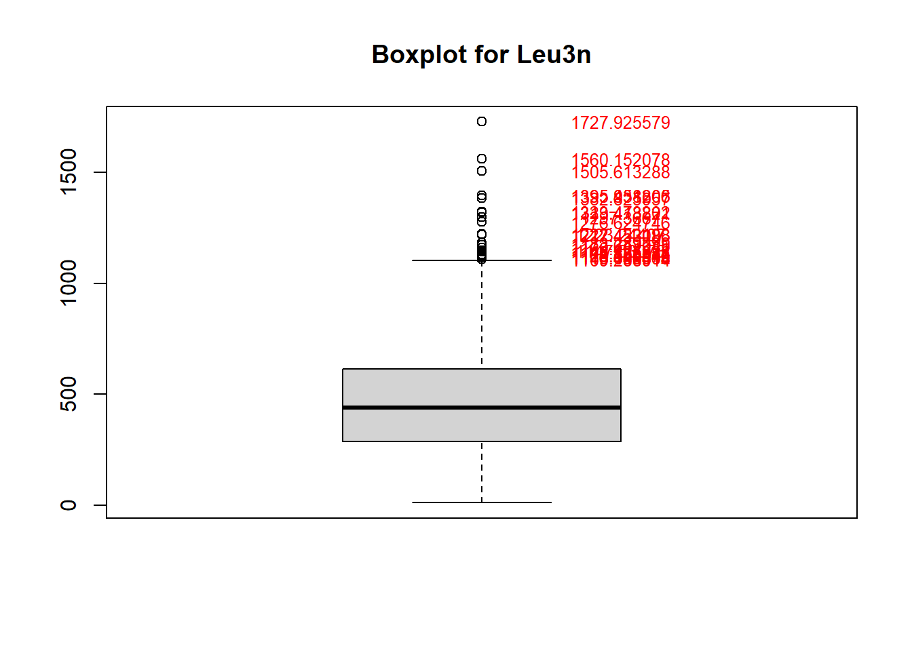
Yeah, the boxplot is showing a lot of outliers.
Let’s try a log transform.
# Log transform CD4 T Cell count
data_2$LEU3N_log <- log(data_2$LEU3N)
# Set up the plotting area: 1 row, 2 columns
par(mfrow = c(1, 2))
# Create histogram of log transformed CD4 T cell count
hist(data_2$LEU3N_log)
# Create qqplot of log transformed CD4 T cell count
qqnorm(data_2$LEU3N_log)
qqline(data_2$LEU3N_log)
That… didn’t work. Maybe let’s try standardization.
# Perform a standardization transformation of CD4 T Cell Count
data_2$LEU3N_standard <- scale(data_2$LEU3N)
# Set up the plotting area: 1 row, 2 columns
par(mfrow = c(1, 2))
# Create histogram of standardized CD4 T Cell count
hist(data_2$LEU3N_standard)
# Create qqplot of standardized CD4 T Cell count.
qqnorm(data_2$LEU3N_standard)
qqline(data_2$LEU3N_standard)
Hmm, that didn’t do the trick.
At this point I asked my professor in passing and he recommended the bestNormalize package (which he happened to write) to help in selecting the best transformation for a variable.
Let’s take a shot at it.
# Use bestNormalize R package to select the best transformation for CD4 T Cell count
BNObject <- bestNormalize(data_2$LEU3N)
BNObjectBest Normalizing transformation with 1606 Observations
Estimated Normality Statistics (Pearson P / df, lower => more normal):
- arcsinh(x): 3.0006
- Box-Cox: 1.3451
- Center+scale: 1.7618
- Double Reversed Log_b(x+a): 3.2455
- Log_b(x+a): 3.0006
- orderNorm (ORQ): 1.2157
- sqrt(x + a): 1.3668
- Yeo-Johnson: 1.3457
Estimation method: Out-of-sample via CV with 10 folds and 5 repeats
Based off these, bestNormalize chose:
orderNorm Transformation with 1606 nonmissing obs and ties
- 1607 unique values
- Original quantiles:
0% 25% 50% 75% 100%
10.860 285.847 438.078 611.673 1727.926 The bestNormalize function selects the best transformation according to the Pearson P statistic (divided by its degrees of freedom), as calculated by the nortest package. There are a variety of normality tests out there, but the benefit of the Pearson P / df is that it is a relatively interpretable goodness of fit test, and the ratio P / df can be compared between transformations as an absolute measure of the departure from normality (if the data follows close to a normal distribution, this ratio will be close to 1).
Here we can see that orderNorm (1.14), Yeo-Johnson (1.26), and Box-Cox (1.26) all perform relatively similar to each other. Let’s see what those plots look like if I do those transformations.
# Peform ordernNorm transformation of CD4 T Cell count
data_2$LEU3N_orderNorm <- orderNorm(data_2$LEU3N)$x.tWarning in orderNorm(data_2$LEU3N): Ties in data, Normal distribution not guaranteed# Peform Box-Cox transformation of CD4 T Cell count
data_2$LEU3N_boxcox <- boxcox(data_2$LEU3N)$x.t
# Peform Yeo-Johnson transformation of CD4 T Cell count
data_2$LEU3N_yeojohnson <- yeojohnson(data_2$LEU3N)$x.t
# Plot all histograms using MASS
par(mfrow = c(3,1))
MASS::truehist(data_2$LEU3N_orderNorm, main = "OrderNorm transformation", nbins = 24)
MASS::truehist(data_2$LEU3N_boxcox, main = "Box Cox transformation", nbins = 24)
MASS::truehist(data_2$LEU3N_yeojohnson, main = "Yeo-Johnson transformation", nbins = 24)
# This function visualizes the estimated normality statistics obtained for each fold and repeat of cross-validation via boxplots. It allows you to compare transformation methods
boxplot(log10(BNObject$oos_preds), yaxt = 'n')
axis(2, at=log10(c(.1,.5, 1, 2, 5, 10)), labels=c(.1,.5, 1, 2, 5, 10))
I will select Box-Cox as those two names are more familiar to me so I trust it more per the availability heuristic (and because orderNorm looks TOO good to be true).
More information on Box-Cox Transformation here
Note: Later in the document we see that the distribution of the change score for each outcome variable is normally distributed, and thus absolves us of the need to perform any transformations besides log transforming
VLOAD.
The values for AGG_MENT in our data set range from 7.229315 to 73.31224, which is believable and leads us to conclude there were no data entry errors here.
Let’s examine normality.
# Set up the plotting area: 1 row, 2 columns
par(mfrow = c(1, 2))
# Create a histogram for aggregate mental QOL score
hist(data_2$AGG_MENT)
# Create qqplot for aggregate mental QOL score
qqnorm(data_2$AGG_MENT)
qqline(data_2$AGG_MENT)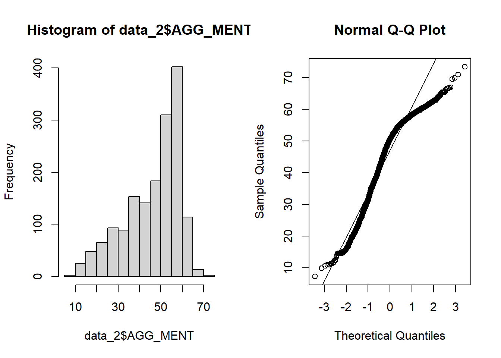
# Sort by descending to examine highest values
sorted_data_2 <- data_2[order(data_2$AGG_MENT),] %>%
select(newid, AGG_MENT, years)
# Pretty print resulting table
pretty_print(head(sorted_data_2))| newid | AGG_MENT | years |
|---|---|---|
| 263 | 7.229315 | 0 |
| 368 | 9.851272 | 0 |
| 368 | 10.510143 | 2 |
| 499 | 10.891071 | 0 |
| 306 | 10.954260 | 0 |
| 309 | 11.206351 | 2 |
# Create boxplot of aggregate mental QOL to assess for outliers
outlier_AGG_MENT <- boxplot(data_2$AGG_MENT, main = "Boxplot for Aggregate Mental QOL")$out
text(x = rep(1.2, length(outlier_AGG_MENT)),
y = outlier_AGG_MENT, labels = outlier_AGG_MENT, col = 'red', cex = 0.8)
It appears that AGG_MENT only has 2 potential outliers, and is also not normally distributed, it is left-tailed. Let’s address that.
# Use bestNormalize function to test which transformation performs the best
BNobject <- bestNormalize(data_2$AGG_MENT)
BNobjectBest Normalizing transformation with 1640 Observations
Estimated Normality Statistics (Pearson P / df, lower => more normal):
- arcsinh(x): 9.5256
- Box-Cox: 3.3336
- Center+scale: 5.2062
- Double Reversed Log_b(x+a): 2.3793
- Exp(x): 168.9372
- Log_b(x+a): 9.5247
- orderNorm (ORQ): 1.0353
- sqrt(x + a): 6.9394
- Yeo-Johnson: 3.1865
Estimation method: Out-of-sample via CV with 10 folds and 5 repeats
Based off these, bestNormalize chose:
orderNorm Transformation with 1640 nonmissing obs and ties
- 1641 unique values
- Original quantiles:
0% 25% 50% 75% 100%
7.229 37.863 50.386 56.401 73.312 The orderNorm transformation beats out the other transformations by a mile. Let’s perform that.
# Perform orderNorm transformation of aggregate mental QOL score
data_2$AGG_MENT_orderNorm <- orderNorm(data_2$AGG_MENT)$x.tWarning in orderNorm(data_2$AGG_MENT): Ties in data, Normal distribution not guaranteedMASS::truehist(data_2$AGG_MENT_orderNorm, main = "OrderNorm transformation", nbins = 24)
That appears to be what we have to do but I have some misgivings with orderNorm transforming everything…
Note: Later in the document we see that the distribution of the change score for each outcome variable is normally distributed, and thus absolves us of the need to perform any transformations besides log transforming
VLOAD.
AGG_PHYS has a min of 9.12 and a max of 73.57. These are within the specified range of 0 - 100, and it appears there were no data error entries.
# Set up the plotting area: 1 row, 2 columns
par(mfrow = c(1, 2))
# Creat histogram of aggregate physical QOL score
hist(data_2$AGG_PHYS)
# Create qqplots of aggregate physical QOL score
qqnorm(data_2$AGG_PHYS)
qqline(data_2$AGG_PHYS)
AGG_PHYS is not normally distributed, it is left-tailed.
Let’s test which type of transformation might suit it.
# Use bestNormalize function to test which transformation performs the best
BNobject <- bestNormalize(data_2$AGG_PHYS)
BNobjectBest Normalizing transformation with 1640 Observations
Estimated Normality Statistics (Pearson P / df, lower => more normal):
- arcsinh(x): 6.6807
- Box-Cox: 2.4618
- Center+scale: 3.7505
- Double Reversed Log_b(x+a): 1.8969
- Exp(x): 175.8084
- Log_b(x+a): 6.6879
- orderNorm (ORQ): 1.1791
- sqrt(x + a): 4.957
- Yeo-Johnson: 1.9941
Estimation method: Out-of-sample via CV with 10 folds and 5 repeats
Based off these, bestNormalize chose:
orderNorm Transformation with 1640 nonmissing obs and ties
- 1641 unique values
- Original quantiles:
0% 25% 50% 75% 100%
9.117 44.240 52.791 56.389 70.437 Again orderNorm performs the best.
# Perform orderNorm transformation of aggregate mental QOL score
data_2$AGG_PHYS_orderNorm <- orderNorm(data_2$AGG_PHYS)$x.tWarning in orderNorm(data_2$AGG_PHYS): Ties in data, Normal distribution not guaranteedMASS::truehist(data_2$AGG_PHYS_orderNorm, main = "OrderNorm transformation", nbins = 24)
OrderNorm transforming all our DVs might make interpration difficult…
Note: Later in the document we see that the distribution of the change score for each outcome variable is normally distributed, and thus absolves us of the need to perform any transformations besides log transforming
VLOAD.
Cleaning Covariates
Now let’s perform data quality checks on our covariates.
Hash/marijuana use since last visit
- 1 = no
- 2 = yes
- blank = missing
# Create a barplot for hash use
barplot(table(data_2$HASHV))
Missing data is correctly handled for this variable.
We have more visits where participants used hash since the last visit than visits where participants did not use hash.
Frequency hash/marijuana was used since last visit.
- 0 = Never
- 1 = Daily
- 2 = Weekly
- 3 = Monthly
- 4 = Less Often
- Blank = Missing
# Create barplot for hash frequency
barplot(table(data_2$HASHF))
This variable is coded correctly. Most participants answered they have never used Hash.
Income
- 1 = Less than $10,000
- 2 = $10,000 - $19,999
- 3 = $20,000 - $29,999
- 4 = $30,000 - $39,999
- 5 = $40,000 - $49,999
- 6 = $50,000 - $59,999
- 7 = $60,000 or more
- 9 = Do not wish to answer
The min and max for income are 1 - 9, which matches that data dictionary.
# Create barplot for income
barplot(table(data_2$income))# Get values for each income level
pretty_print(table(data_2$income))| Var1 | Freq |
|---|---|
| Less than $10,000 | 285 |
| $10,000-$19,999 | 164 |
| $20,000-$29,999 | 175 |
| $30,000-$39,999 | 172 |
| $40,000-$49,999 | 123 |
| $50,000-$59,999 | 202 |
| $60,000 or more | 89 |
| Do not wish to answer | 38 |
We have to convert those values of ‘Do not wish to answer’ to be NA.
# Converting scores of 9 (do not wish to answer) to be NA
data_2$income[data_2$income == "Do not wish to answer"] <- NA
# Drop empty levels
data_2$income <- droplevels(data_2$income)
# Create a barplot of income with cleaned values
barplot(table(data_2$income))
Looks good, we just converted 38 participants from do not wish to answer, to count as missing.
Body Mass Index
We have a min of -1 and a max of 1000.
-1: Improbable values
999: Insufficient data (why it shows up with decimals and is not exactly 999, who knows).
# Create histogram of BMI
hist(data_2$BMI)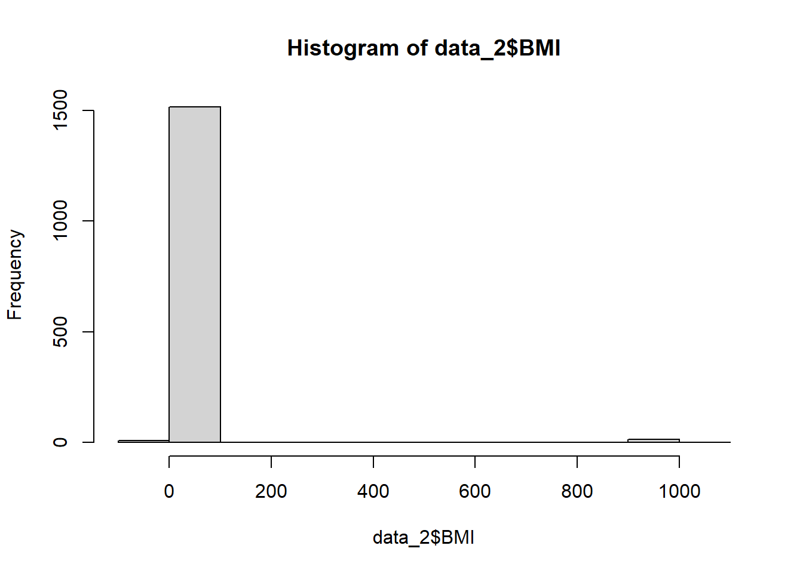
Let’s convert those values of -1 and >= 998 into missing values.
# Convert missing and improbably values to NA
data_2$BMI[data_2$BMI < 0 | data_2$BMI >= 998] <- NAAnd check out the histogram again and the qqplot.
# Set up the plotting area: 1 row, 2 columns
par(mfrow = c(1, 2))
# Create histogram of BMI
hist(data_2$BMI, breaks = 20)
# Create qqplot of BMI
qqnorm(data_2$BMI)
qqline(data_2$BMI)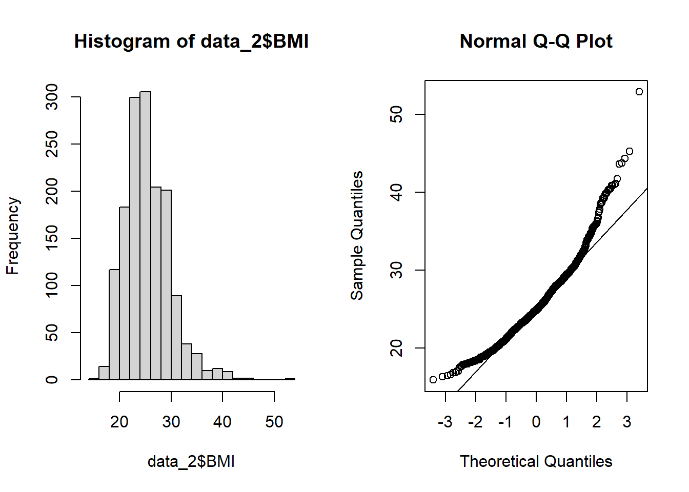
summarize_column(data_2$BMI) Type Min Max
1 Numeric 15.94907 52.832Looks better. Now we have a BMI range of 15.94 - 52.83.
The histogram and qqplots show BMI is slightly right skewed, with more morbidly obese patients than underweight. Is this close enough to normal to ignore, if we take out outliers?
The patient with a BMI of 52.83 may be an outlier based on the qqplot.
# Investigating highest BMI value to see if its an outlier
highest_bmi <- data[data$newid == 206,]
# Plot BMI for each year for this patient
plot(highest_bmi$years, highest_bmi$BMI)
Interestingly, participant 206 got heavier over the first year, then dropped weight in the proceeding years. Either that or that second year entry point was an error and was meant to be 42.83
# Set up the plotting area: 1 row, 2 columns
par(mfrow = c(1, 2))
# Testing to see if these plots look normal after taking the participant with BMI of 52.83 out
data_2$BMI[data_2$newid == 206 & data_2$years == 1] <- NA
hist(data_2$BMI, breaks = 20)
qqnorm(data_2$BMI)
qqline(data_2$BMI)
# Add back in that value we removed
data_2$BMI[data_2$newid == 206 & data_2$years == 1] <- 52.832After removing that highest BMI value, the histogram is still right tailed.
What do the boxplots look like?
outlier_bmi <- boxplot(data_2$BMI, main = "Boxplot for BMI")$out
text(x = rep(1.2, length(outlier_bmi)),
y = outlier_bmi, labels = outlier_bmi, col = 'red', cex = 0.8)That’s a lot of potential outliers for BMI. If we really want to use this variable we may have to remove these values to keep BMI normally distributed.
# Run simple correlation matrix to see if BMI correlated with any outcomes of interest
# Correlation between VMI and VLOAD log
cor_test_result <- cor.test(data_2$BMI, data_2$VLOAD_log)
cor_test_result
Pearson's product-moment correlation
data: data_2$BMI and data_2$VLOAD_log
t = -5.8077, df = 1499, p-value = 0.000000007721
alternative hypothesis: true correlation is not equal to 0
95 percent confidence interval:
-0.1974585 -0.0984866
sample estimates:
cor
-0.148344 # Correlation between BMI and CD4+ T Cell count boxcox
cor_test_result <- cor.test(data_2$BMI, data_2$LEU3N_boxcox)
cor_test_result
Pearson's product-moment correlation
data: data_2$BMI and data_2$LEU3N_boxcox
t = 7.5505, df = 1503, p-value = 0.00000000000007484
alternative hypothesis: true correlation is not equal to 0
95 percent confidence interval:
0.1420089 0.2393834
sample estimates:
cor
0.1911664 # Correlation between BMI and mental QOL
cor_test_result <- cor.test(data_2$BMI, data_2$AGG_MENT)
cor_test_result
Pearson's product-moment correlation
data: data_2$BMI and data_2$AGG_MENT
t = 2.2657, df = 1504, p-value = 0.02361
alternative hypothesis: true correlation is not equal to 0
95 percent confidence interval:
0.007834005 0.108516221
sample estimates:
cor
0.05832342 # Correlation between BMI and physical QOL.
cor_test_result <- cor.test(data_2$BMI, data_2$AGG_PHYS)
cor_test_result
Pearson's product-moment correlation
data: data_2$BMI and data_2$AGG_PHYS
t = 4.4256, df = 1504, p-value = 0.00001031
alternative hypothesis: true correlation is not equal to 0
95 percent confidence interval:
0.06323068 0.16296024
sample estimates:
cor
0.113381 BMI is correlated with all our outcome variables, so we should make sure it’s cleaned.
It looks like we have a lot of outliers for BMI we can clean out from our data set to make sure it has a normal distribution.
# Compute mean and sd values for BMI
mean_value <- mean(data_2$BMI, na.rm = TRUE)
sd_value <- sd(data_2$BMI, na.rm = TRUE)
# Use plotly to label outliers
fig <- plot_ly(data = data_2, type = 'box')
fig <- fig %>% add_boxplot(y = ~BMI, name = "Suspected Outlier",
boxpoints = 'suspectedoutliers',
marker = list(color = 'rgb(8,81,156)',
outliercolor = 'rgba(219, 64, 82, 0.6)',
line = list(outliercolor = 'rgba(219, 64, 82, 1.0)',
outlierwidth = 2)),
line = list(color = 'rgb(8,81,156)'),
text = ~paste("ID:", newid),
hoverinfo = "text")
figWarning: Ignoring 135 observations# Identify outliers
data_2$BMI_outlier <- (abs(data_2$BMI - mean_value) > 3* sd_value)
# See how many outliers we have
filtered_data <- data_2 %>%
select(newid, BMI, BMI_outlier) %>%
filter(BMI_outlier == "TRUE")
dim(filtered_data)[1] 22 3# Pretty Print
pretty_print(head(filtered_data))| newid | BMI | BMI_outlier |
|---|---|---|
| 56 | 38.89617 | TRUE |
| 107 | 39.58391 | TRUE |
| 131 | 40.38171 | TRUE |
| 131 | 39.29654 | TRUE |
| 137 | 40.19738 | TRUE |
| 137 | 39.25950 | TRUE |
We have 22 patients that had a BMI +- 3 SD from the mean. Let’s clear them from the data set.
# Filter our values greater than 3SD from the mean.
data_2$BMI[(abs(data_2$BMI - mean_value) > 3* sd_value)] <- NA
# Set up the plotting area: 1 row, 2 columns
par(mfrow = c(1, 2))
# Create histogram of BMI now that we have removed outleirs
hist(data_2$BMI)
# Create qqplot of BMI now that we have removed outliers
qqnorm(data_2$BMI)
qqline(data_2$BMI)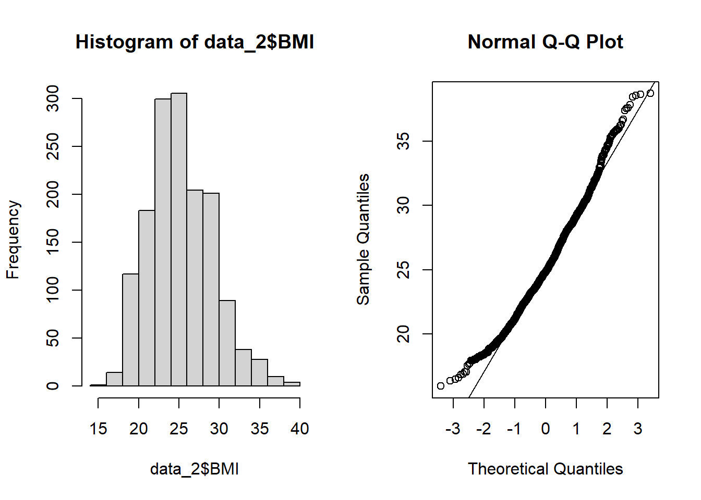
# Plot outliers one more time
fig <- plot_ly(data = data_2, type = 'box')
fig <- fig %>% add_boxplot(y = ~BMI, name = "Suspected Outlier",
boxpoints = 'suspectedoutliers',
marker = list(color = 'rgb(8,81,156)',
outliercolor = 'rgba(219, 64, 82, 0.6)',
line = list(outliercolor = 'rgba(219, 64, 82, 1.0)',
outlierwidth = 2)),
line = list(color = 'rgb(8,81,156)'),
text = ~paste("ID:", newid),
hoverinfo = "text")
figWarning: Ignoring 157 observationsThose all look a lot better! We can now conclude that BMI is normally distributed and can be used as a covariate in our models.
High Blood Pressure (SBP >= 140 or DBP >= 90 or (diagnosed with hypertension and use of medication)
- 1 = No
- 2 = Yes
- 3 = No, based on data trajectory
- 4 = Yes, based on data trajectory
- 9 = Insufficient data, may include reported treatment without diagnosis
- -1 = improbable value
We will have to exclude values of 9 or -1.
# Create barplot of high blood pressure
barplot(table(data_2$HBP))
# Get values for high blood pressure category
pretty_print(table(data_2$HBP))| Var1 | Freq |
|---|---|
| No | 1109 |
| Yes | 366 |
| No, based on data trajectory | 34 |
| Yes, based on data trajectory | 4 |
| Insufficient data, may include reported treatment without diagnosis | 137 |
| Improbable Value | 0 |
There are 137 participants with insufficient data. Let’s purge them from the data set.
# Convert values of insufficient data to NA for high blood pressure
data_2$HBP[data_2$HBP == "Insufficient data, may include reported treatment without diagnosis"] <- NA
# Drop empty levels
data_2$HBP <- droplevels(data_2$HBP)
# Create barplot of high blood pressure
barplot(table(data_2$HBP))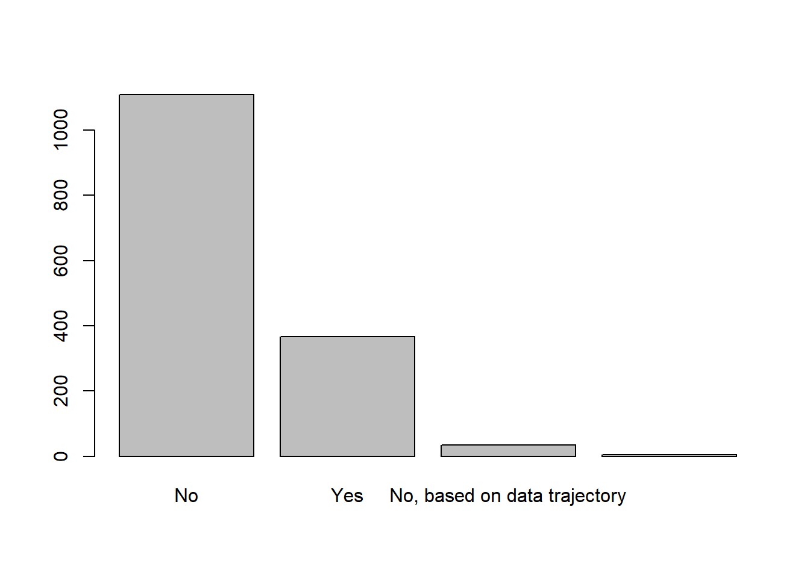
# Pretty print table
pretty_print(table(data_2$HBP))| Var1 | Freq |
|---|---|
| No | 1109 |
| Yes | 366 |
| No, based on data trajectory | 34 |
| Yes, based on data trajectory | 4 |
Looks better.
Only 34 visits where participants had no based on trajectory, and 4 that had yes based on trajectory.
We will have to decide to either exclude these or merge them into the no or yes groups, respectively. We can do that after we run our correlations to see if there’s any relationship here worth pursuing.
Diabetes (GLUC 2 >= 126 or (diagnosed with diabetes and use of medication))
- 1 = No
- 2 = Yes
- 3 = No, based on data trajectory
- 4 = Yes, based on data trajectory
- 9 = Insufficient data
# Create barplot of diabetes
barplot(table(data_2$DIAB))
# Pretty print table
pretty_print(table(data_2$DIAB))| Var1 | Freq |
|---|---|
| No | 628 |
| Yes | 65 |
| No, based on data trajectory | 76 |
| Yes, based on data trajectory | 0 |
| Insufficient data | 881 |
There are 881 visits with patient who had insuffiicent data to make a diabetes diagnosis!
Let’s change those values to NA.
# Convert values of insufficient data to NA for diabetes
data_2$DIAB[data_2$DIAB == "Insufficient data"] <- NA
# Drop empty levels
data_2$DIAB <- droplevels(data_2$DIAB)
# Create a barplot for diabetes
barplot(table(data_2$DIAB))
# Pretty print table
pretty_print(table(data_2$DIAB))| Var1 | Freq |
|---|---|
| No | 628 |
| Yes | 65 |
| No, based on data trajectory | 76 |
Great, HBP is now cleaned.
Notably, there were no visits with a yes, based on trajectory.
Liver disease stage 3/4 (SGPT or SGOP > 150), preliminary algorithm
- 1 = No
- 2 = Yes
- 9 = Insufficient data
# Create barplot of liver disease stage
barplot(table(data_2$LIV34))
# Pretty print table
pretty_print(table(data_2$LIV34))| Var1 | Freq |
|---|---|
| No | 1092 |
| Yes | 51 |
| Insufficient Data | 507 |
There are 507 patients with insufficient data for a liver disease diagnosis.
Let’s convert those values to NA to reflect this.
# Convert values of insufficient data to NA for liver disease stage
data_2$LIV34[data_2$LIV34 == "Insufficient Data"] <- NA
# Drop empty levels
data_2$LIV34 <- droplevels(data_2$LIV34)
# Create barplot of cleaned liver stage disease
barplot(table(data_2$LIV34))
# Pretty print table
pretty_print(table(data_2$LIV34))| Var1 | Freq |
|---|---|
| No | 1092 |
| Yes | 51 |
Looks good, LIV34 is now cleaned!
Kidney disease (EGFR < 60 or UPRCR >= 200)
1 = No
2 = Yes
3 = No, based on data trajectory
4 = Yes, based on data trajectory
- 9 = Insufficient data
# Create barplots of kidney disease
barplot(table(data_2$KID))
# Pretty print table
pretty_print(table(data_2$KID))| Var1 | Freq |
|---|---|
| No | 476 |
| Yes | 94 |
| No, based on data trajectory | 12 |
| Yes, based on data trajectory | 0 |
| Insufficient data | 1068 |
There are 1068 visits where there was insufficient data for a diagnosis.
Let’s convert those to NA values.
# Convert values of insufficient data to NA for kidney disease
data_2$KID[data_2$KID == "Insufficient data"] <- NA
# Drop empty levels
data_2$KID <- droplevels(data_2$KID)
# Create barplot of kidney disease
barplot(table(data_2$KID))
Looks good, KID is now cleaned!
Frailty Related Phenotype (3 out of 4 conditions = YES; WTLOS, PHDWA, HLTWB, HLTVA
- 1 = No
- 2 = Yes
- 9 = Insufficient data
# Create barplot of frailty related phenotype
barplot(table(data_2$FRP))
# Pretty print table
pretty_print(table(data_2$FRP))| Var1 | Freq |
|---|---|
| No | 1555 |
| Yes | 92 |
| Insufficient Data | 3 |
Only 3 patients with insufficient data.
Let’s convert them to NA.
# Convert values of insufficient data to NA for frailty related phenotype
data_2$FRP[data_2$FRP == "Insufficient Data"] <- NA
# Drop empty levels
data_2$FRP <- droplevels(data_2$FRP)
# Create barplot of frailty related phenotype
barplot(table(data_2$FRP))
Looks good, FRP is now cleaned.
Frailty Phenotype (3 out of 5 conditions = YES: WTLOS, PHWDA, HLTVA, SLOW, WEAK)
- 1 = No
- 2 = Yes
- 9 = Insufficient Data
# Create barplot of frailty phenotype
barplot(table(data_2$FP))
# Pretty print table
pretty_print(table(data_2$FP))| Var1 | Freq |
|---|---|
| No | 1195 |
| Yes | 98 |
| Insufficient Data | 357 |
357 visits with insufficient data. Let’s convert to NA.
# Convert values of insufficient data to NA for frailty phenotype
data_2$FP[data_2$FP == "Insufficient Data"] <- NA
# Drop empty levels
data_2$FP <- droplevels(data_2$FP)
# Create barplot of frailty phenotype
barplot(table(data_2$FP))
Looks good, FP is now cleaned!
Total cholesterol mg/dL
# Set up the plotting area: 1 row, 2 columns
par(mfrow = c(1, 2))
# Create histogram for total cholesterol
hist(data_2$TCHOL)
# Create qqplot for total cholesterol
qqnorm(data_2$TCHOL)
qqline(data_2$TCHOL)
The histogram and qq plot show what may be outliers for total cholesterol at the higher range. How many values are potential outliers?
# Create boxplot to assess for outliers for total cholesterol
outlier_tchol <- boxplot(data_2$TCHOL, main = "Boxplot for Total Cholesterol")$out
text(x = rep(1.2, length(outlier_tchol)),
y = outlier_tchol, labels = outlier_tchol, col = 'red', cex = 0.8)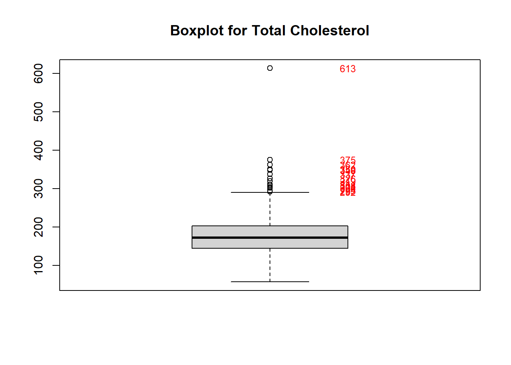
# Sort by descending total cholesterol
sorted_data <- data_2[order(-data_2$TCHOL),] %>%
select(newid, TCHOL, years)
# Pretty print table
pretty_print(head(sorted_data))| newid | TCHOL | years |
|---|---|---|
| 199 | 613 | 2 |
| 89 | 375 | 2 |
| 428 | 362 | 2 |
| 433 | 350 | 2 |
| 418 | 348 | 1 |
| 203 | 337 | 1 |
The highest cholesterol value is ~2x higher than the next highest value. Let’s see what happens if we remove it.
# Delete highest total cholesterol value
data_2$TCHOL[data_2$TCHOL == 613] <- NA
# Set up the plotting area: 1 row, 2 columns
par(mfrow = c(1, 2))
# Create histogram of total cholesterol
hist(data_2$TCHOL)
# Create qqplot of total cholesterol
qqnorm(data_2$TCHOL)
qqline(data_2$TCHOL)
Looks better but still slightly right skewed. This variable had ~30% missing values, so we may end up not using it.
Triglycerides, mg/dL
# Set up the plotting area: 1 row, 2 columns
par(mfrow = c(1, 2))
# Create histogram of triglycerides
hist(data_2$TRIG)
# Create qqplot of triglycerides
qqnorm(data_2$TRIG)
qqline(data_2$TRIG)VERY skewed! Based on the qqplots, it looks like we would have to perform a log transform on TRIG if we wanted to use it. However we have nearly 50% missing values for this variable, so we should drop it as a covariate.
Low Density Lipoprotein (fasting) mg/dL
# Create a histogram for LDL
hist(data_2$LDL)
Looks like we may have an erroneous value at the highest range there.
# Sort by descending total cholesterol
sorted_data <- data_2[order(-data_2$LDL),] %>%
select(newid, LDL, years)
# Pretty print table
pretty_print(head(sorted_data))| newid | LDL | years |
|---|---|---|
| 19 | 704 | 0 |
| 413 | 704 | 0 |
| 275 | 247 | 2 |
| 275 | 217 | 1 |
| 242 | 212 | 2 |
| 203 | 204 | 2 |
Patients 19 and 413 have the same value of 704 at baseline. Clearly an error with the measurement process.
LDL has close to 50% missing values and we will not be using it in our model, so I will move on. But good to know we can’t just blindly trust all the values to be correct!
Dyslipidemia at visit. fasting TC >=200 mg/dl or >=130 mg/dl or HDL < 40 mg/dl or triglycerides >=150 mg/dl or use of lipid lowering medications (HICHOLRX) with self report or clinical diagnosis in the past.
- 1 = No
- 2 = Yes
- 3 = No, based on data trajectory
- 4 = Yes from data trajectory
- 9 = Insufficient data
# Create barplot of dyslipidemia
barplot(table(data_2$DYSLIP))# Pretty print table
pretty_print(table(data_2$DYSLIP))| Var1 | Freq |
|---|---|
| No | 235 |
| Yes | 630 |
| No, based on data trajectory | 10 |
| Yes, based on data trajectory | 57 |
| Insufficient data | 718 |
There are 718 visits with insufficient data for a dyslipidemia diagnosis.
Let’s convert those to NAs to reflect this.
# Convert values of insufficient data to NA for dyslipidemia
data_2$DYSLIP[data_2$DYSLIP == "Insufficient data"] <- NA
# Drop empty levels
data_2$DYSLIP <- droplevels(data_2$DYSLIP)
# Create barplot of dyslipidemia
barplot(table(data_2$DYSLIP))
Looks good, DYSLIP is now cleaned!
Center for Epidemiological Studies Depression Scale ( >= 16 is depressed).
0 - 60
-1 = missing
# Create histogram for depression score
hist(data_2$CESD)
Let’s correctly reflect those -1’s as NA’s
# Remove depression scores that were coded as missing
data_2$CESD[data_2$CESD == -1] <- NA
# Set up the plotting area: 1 row, 2 columns
par(mfrow = c(1, 2))
# Create histogram of depression score
hist(data_2$CESD)
# Create qqplot for depression score
qqnorm(data_2$CESD)
qqline(data_2$CESD)
Looks good. CESD is now cleaned!
For fun, let’s see if a square root transformation helps at all.
# Try a sqrt transformation
data_2$CESD_sqrt <- sqrt(data_2$CESD)
# Set up the plotting area: 1 row, 2 columns
par(mfrow = c(1, 2))
# Create histogram of sqrt depression score
hist(data_2$CESD_sqrt)
# Create qqplot of sqrt depressions score
qqnorm(data_2$CESD_sqrt)
qqline(data_2$CESD_sqrt)
That does look a bit better, but the central limit theorem justifies inclusion of CESD without performing transformation.
Smoking status
- 1 = Never smoked
- 2 = Former smoker
- 3 = Current smoker
- Blank = missing
# Create barplot of smoking status
barplot(table(data_2$SMOKE))
Looks good, nothing to do here.
Alcohol use since last visit
- 0 = None
- 1 = 1 to 3 drinks/week
- 2 = 4 to 13 drinks/week
- 3 = More than 13 drinks/week
- Blank = Missing
# Create barplot of drinking group
barplot(table(data_2$DKGRP))
Looks good, nothing to do here.
Took heroin or other opiates since last visit?
- 1 = No
- 2 = Yes
- -9 = Not specified in form
- Blank = Missing
# Create barplot of heroin or opiate use
barplot(table(data_2$HEROPIATE))# Pretty print table
pretty_print(table(data_2$HEROPIATE))| Var1 | Freq |
|---|---|
| No | 1552 |
| Yes | 66 |
| Not Specified | 20 |
Only 20 visits where participants did not specify drinking frequency on their form.
Let’s correct those to be NA.
# Convert values of insufficient data to NA for heroin or opiate use
data_2$HEROPIATE[data_2$HEROPIATE == "Not Specified"] <- NA
# Drop empty levels
data_2$HEROPIATE <- droplevels(data_2$HEROPIATE)
# Create barplot of heroin or opiate use
barplot(table(data_2$HEROPIATE))
Looks good. HEROPIATE is now cleaned!
Took/used drugs with a needle since last visit?
- 1 = No
- 2 = Yes
- Blank = Missing
# Create barplot of intravenous drug use
barplot(table(data_2$IDU))Looks good. Nothing to do here
Adherence to meds taken since last visit
- 1 = 100%
- 2 = 95-99%
- 3 = 75-94%
- 4 <75%
- Blank = Missing
# Create bar plot of adherence
barplot(table(data_2$ADH))# Pretty print table
pretty_print(table(data_2$ADH))| Var1 | Freq |
|---|---|
| 100% | 504 |
| 95-99% | 474 |
| 75-94% | 102 |
| <75% | 21 |
VERY interesting. I was thinking that 100% vs 95-99% adherence was an arbitrary difference to choose to divide groups on, and was actually planning to merge the two. However, this shows why the experimenters likely made that decision: both groups have close to the same amount of observations (~500)> That’s really good to know.
We could still play with the idea of simplifying this into two groups: >= 95% and < 95%. We will revisit that in the model selection.
Race
- 1 = White, non-Hispanic
- 2 = White, Hispanic
- 3 = Black, non-Hispanic
- 4 = Black, Hispanic
- 5 = American Indian or Alaskan Native
- 6 = Asian or Pacific Islander
- 7 = Other 8 = Other Hispanic (created for 2001-03 new recruits)
- Blank = Missing
# Create barplot of race
barplot(table(data_2$RACE))
# Pretty print table
pretty_print(table(data_2$RACE))| Var1 | Freq |
|---|---|
| White, non-Hispanic | 1020 |
| White, Hispanic | 57 |
| Black, non-Hispanic | 474 |
| Black, Hispanic | 9 |
| American Indian or Alaskan Native | 0 |
| Asian or Pacific Islander | 0 |
| Other Hispanic | 18 |
This all looks coded properly. As is a common thing I am seeing, we have a predominant proportion of participants who are white, non-Hispanic. The data set might be large enough that we can use race as a covariate.
It might be worth dummy coding as white vs non white and see if there are any differences. That’s not the main focus of this project though so I will leave that to if I have extra time at the end.
Baseline or earliest reported education (highest grade or level)
- 1 = 8th grade or less
- 2 = 9,10, or 11th grade
- 3 = 12th grade
- 4 = At least one year college but no degree
- 5 = Four years college / got degree
- 6 = Some graduate work
- 7 = Post-graduate degree
- Blank = Missing
# Create barplot of education at baseline
barplot(table(data_2$EDUCBAS))# Pretty print table
pretty_print(table(data_2$EDUCBAS))| Var1 | Freq |
|---|---|
| 8th grade or less | 12 |
| 9,10, or 11th grade | 138 |
| 12th grade | 225 |
| At least one year college but no degree | 585 |
| Four years college or got degree | 324 |
| Some graduate work | 129 |
| Post-graduate degree | 237 |
This all checks out. And it looks like there are enough participants in each group (except for 8th grade or less) to run analyses with this variable. It will be interesting to see what relationships arise, as I expect there to be a strong association between education and HIV exposure.
HIV Serostatus
- 0 = Negative
- 1 = Positive
# Checking that all patients are HIV pos
any(is.na(data_2$hivpos))[1] FALSEAll patients in this data set are HIV+
Age at visit
# Set up the plotting area: 1 row, 2 columns
par(mfrow = c(1, 2))
# Create histogram for age
hist(data_2$age)
# Create qqplot for age
qqnorm(data_2$age)
qqline(data_2$age)
Nice and normally distributed, how we like it.
Take ART at visit
- 0 = NO
- 1 = YES
# Create barplot of antiretroviral therapy
barplot(table(data_2$ART))
# Pretty print table
pretty_print(table(data_2$ART))| Var1 | Freq |
|---|---|
| 0 | 550 |
| 1 | 1100 |
I’m not too sure how useful this variable will be. It just means there were some visits where patients were not given ART, I suppose. But most visits had participants receiving ART.
Ever took ART.
- 0 = NO
- 1 = YES
# Create barplot of everART
barplot(table(data_2$everART))
# Pretty print table
pretty_print(table(data_2$everART))| Var1 | Freq |
|---|---|
| 0 | 550 |
| 1 | 1100 |
This has the exact same split as ART. Which makes me think they are exactly the same values for each participant
# Check if everART and ART are identical
all(data_2$everART == data_2$ART)[1] TRUEYup, this is either an accidental duplicate of ART, or there is no distinction of significance between the two. What exactly does “Ever took ART” (the explanation provided by the data dictionary) mean? Was this taken at baseline?
Either way looks like we’re not using this variable.
Hard drug use (either injection drugs or illicit heroin/opiate use) since last visit
- 0 = No
- 1 = Yes
- Blank = Missing
# Create barplot of hard drug use category
barplot(table(data_2$hard_drugs))
# Pretty print table
pretty_print(table(data_2$hard_drugs))| Var1 | Freq |
|---|---|
| No | 1452 |
| Yes | 198 |
There were 198 visits where participants had used hard_drugs since the last visit.
This variable looks good. We will just have to do some dummy coding to create the categories the researchers were interested in.
For the CONSORT diagram, we just removed:
38 visits where patients did not report income.
X BMI values that were missing and y values that were improbable.
137 visits with insufficient data for a HBP diagnosis
881 visits with insufficient data for a DIAB diagnosis.
507 visits with insufficient data for a LIV34 diagnosis
1068 visits with insuffcient data for a kidney disease diagnosis
3 visits with insuffiient data for FRP diagnosis
357 visits with insufficient data for FP diagnosis
718 visits with insufficent data for dyslipidemia diagnosis
X visits with missing values for CESD
20 visits where heroin or opiate use was not specified
COME BACK TO THIS BECAUSE i THINK I NEED TO COME BACK AND DELETE OUTLIERS.
:::
Missingness II
We first examined missingness before performing data cleaning just to get a sense of the data set.
Let’s compare what our missingness looked like pre- and post-data cleaning.
# Visualize missingness for pre-cleaned data
gg_miss_var(data)
# Visualize missingness for post-cleaned data
gg_miss_var(data_2)The order for missingness has changed, now with KID at the top, followed by DIAB, LDL, TRIG, and DYSLIP.
TCHOL, LIV34, and income are further behind, with levels of missingness that may be salvageable (~30%).
# Visualize missingness for pre-cleaned dataset
vis_miss(data)
# Visualize missingness for post-cleaned dataset
vis_miss(data_2)And for good measure let’s now examine missingness in the wide form data set.
# Create new wideform data set for first 2 years of study
data_wide_2 <- pivot_wider(data_2, id_cols = newid, names_from = years, values_from = -c(newid, years))
# Visualize missing values in the wideform data set
vis_miss(data_wide_2)
There are no real trends that become apparent when looking at this plot for the wideform data set.
To summarize, it appears that diagnoses that were determined by algorithm (such as KID, DIAB, DYSLIP, and LIV34, often had insufficient data to make a diagnosis, so perhaps this is an issue with those algorithms. Additionally, lab measurements of LDL and TRIG seem to have been too onerous for participants to have had collected. Maybe they opted out of those tests, or maybe the tests were only ordered under certain circumstances.
These would be valuable questions to bring forth to the PI. But for now it appear as if we won’t be able to use these variables.
We may want to impute income, LIV34, and TCHOL, as these have missingness of 24%, 31%, and 32%, respectively.
Variables with minimal missing data (<5%) that can be disregarded without affecting analysis integrity
AGG_MENTAGG_PHYSHASH_VHASHFFRPSMOKEDKGRPHEROPIATEIDULEU3NVLOADADHEDUCBASEAGEARTyearshard-drugs
Variables with moderate missing data (5-20%) that necessitate intervention
BMIHBP
Variables with >20% missing data that are edge cases and may require exclusion or imputation
TCHOLincomeLIV34
Variables with an excess of missing data (>40%) that necessitate exclusion from the analysis
LDLTRIGDIABKIDDYSLIP
Variable Creation
Here we will create the variables necessary for the analysis.
Since we cleaned the longform data set, let’s go ahead and re-transpose it to update the wide form data set.
# Create new wideform data set for first 2 years of study
data_wide_2 <- pivot_wider(data_2, id_cols = newid, names_from = years, values_from = -c(newid, years))Here we will create our change scores for our dependent variables LEU3N, VLOAD, AGG_MENT, and AGG_PHYS to assess treatment response to ART. For VLOAD we will create change scores off the log transformed values.
Change scores are calculated as:
\[ y_{2year} - y_{baseline} = y_{change} \]
Note
Change scores are coded such that:
For viral load, higher numbers are less desirable. Negative numbers signify a decrease in viral load over time, which is favorable.
For CD4+ T Cell count, higher numbers are more desirable. Negative numbers signify a decrease in leukocytes over time, which is not favorable.
For aggregate mental and physical QOL score, higher numbers signify an increase in mental/physical health from baseline. Negative values signify a decrease.
# Create change scores for outcome variables
data_wide_2$VLOAD_log_CHANGE <- data_wide_2$VLOAD_log_2 - data_wide_2$VLOAD_log_0
data_wide_2$LEU3N_CHANGE <- data_wide_2$LEU3N_2 - data_wide_2$LEU3N_0
data_wide_2$AGG_MENT_CHANGE <- data_wide_2$AGG_MENT_2 - data_wide_2$AGG_MENT_0
data_wide_2$AGG_PHYS_CHANGE <- data_wide_2$AGG_PHYS_2 - data_wide_2$AGG_PHYS_0Now let’s perform internal consistency checks to make sure those calculations were performed correctly, as well as reexamine the distributions of the change score for each variable.
# Select only variables related to change scores to double check we performed calculation correctly.
filtered_data <- data_wide_2 %>%
select(VLOAD_log_0, VLOAD_log_2, VLOAD_log_CHANGE)
# Pretty print
pretty_print(head(filtered_data))| VLOAD_log_0 | VLOAD_log_2 | VLOAD_log_CHANGE |
|---|---|---|
| 11.532856 | 4.094345 | -7.438511 |
| 9.002209 | 3.871201 | -5.131008 |
| 8.294439 | 3.314519 | -4.979919 |
| 6.606650 | 3.295837 | -3.310813 |
| 11.046548 | 6.039064 | -5.007484 |
| 9.664278 | 3.979682 | -5.684596 |
The computation for change score was performed correctly.
# Set up the plotting area: 1 row, 2 columns
par(mfrow = c(1, 2))
# Set up the plotting area: 1 row, 2 columns
par(mfrow = c(1, 2))
# Create hist for vload log change score
hist(data_wide_2$VLOAD_log_CHANGE)
# Create qqplot for vload log change score
qqnorm(data_wide_2$VLOAD_log_CHANGE)
qqline(data_wide_2$VLOAD_log_CHANGE)
Looks like we have 1 outlier there that we should catch with the jackknife residuals after we fit the model, but VLOAD_log_CHANGE looks normally distributed!
# Select only variables related to change scores to double check we performed calculation correctly.
filtered_data <- data_wide_2 %>%
select(LEU3N_0, LEU3N_2, LEU3N_CHANGE)
# Pretty print
pretty_print(head(filtered_data))| LEU3N_0 | LEU3N_2 | LEU3N_CHANGE |
|---|---|---|
| 104.1659 | 345.4010 | 241.23505 |
| 257.8278 | 263.0693 | 5.24147 |
| 563.1223 | 405.1816 | -157.94073 |
| 110.4218 | 179.6409 | 69.21912 |
| 252.6634 | 59.6219 | -193.04149 |
| 634.1246 | 893.4328 | 259.30816 |
The computation for change score was performed correctly.
# Set up the plotting area: 1 row, 2 columns
par(mfrow = c(1, 2))
# Create hist for CD4+ T Cell change score
hist(data_wide_2$LEU3N_CHANGE)
# Create qqplot for CD4+ T Cell change score
qqnorm(data_wide_2$LEU3N_CHANGE)
qqline(data_wide_2$LEU3N_CHANGE)CD4+ T Cell count change score looks normally distributed, with 1 or 2 outliers that we can examine the leverage and influence of.
# Select only variables related to change scores to double check we performed calculation correctly.
filtered_data <- data_wide_2 %>%
select(AGG_MENT_0, AGG_MENT_2, AGG_MENT_CHANGE)
# Pretty print
pretty_print(head(filtered_data))| AGG_MENT_0 | AGG_MENT_2 | AGG_MENT_CHANGE |
|---|---|---|
| 44.90710 | 59.65136 | 14.7442634 |
| 46.34190 | 45.41483 | -0.9270733 |
| 40.22337 | 41.70079 | 1.4774173 |
| 42.90638 | 52.68223 | 9.7758533 |
| 56.42904 | 66.50629 | 10.0772432 |
| 59.74437 | 50.26010 | -9.4842722 |
The computation for change score was performed correctly.
# Set up the plotting area: 1 row, 2 columns
par(mfrow = c(1, 2))
# Create hist for aggregate mental QOL change score
hist(data_wide_2$AGG_MENT_CHANGE, breaks = 24)
# Create qqplot for aggregate mental QOL change score
qqnorm(data_wide_2$AGG_MENT_CHANGE)
qqline(data_wide_2$AGG_MENT_CHANGE)That looks more normally distributed now, and our sample size is very large so we can also count on the central limit theorem to help us with the assumption of normality.
# Select only variables related to change scores to double check we performed calculation correctly.
filtered_data <- data_wide_2 %>%
select(AGG_PHYS_0, AGG_PHYS_2, AGG_PHYS_CHANGE)
# Pretty print
pretty_print(head(filtered_data))| AGG_PHYS_0 | AGG_PHYS_2 | AGG_PHYS_CHANGE |
|---|---|---|
| 52.52557 | 48.54453 | -3.9810371 |
| 27.92331 | 37.32204 | 9.3987247 |
| 60.06970 | 58.51450 | -1.5551943 |
| 50.78850 | 51.50533 | 0.7168277 |
| 43.75671 | 18.82350 | -24.9332115 |
| 56.86261 | 55.95668 | -0.9059311 |
The computation for change score was performed correctly.
# Set up the plotting area: 1 row, 2 columns
par(mfrow = c(1, 2))
# Create hist for aggregate physical QOL change score
hist(data_wide_2$AGG_PHYS_CHANGE, breaks = 24)
# Create qqplot for aggregate physical QOL change score
qqnorm(data_wide_2$AGG_PHYS_CHANGE)
qqline(data_wide_2$AGG_PHYS_CHANGE)Aggregate physical QOL change score appears more normally distributed now.
After computing the change scores, our outcome variables are now normally distributed and we can move forward with using them in models!
We need to make dummy codes for our hard drug use groups.
The criteria outlined by the researchers are as follows:
- Never User: No drug use reported at 0, 1, or 2 years
- Previous User: Drug use reported at 0 or 1 years, but not 2 years
- Current User: Drug use reported at 2 years
First we will create dummy codes for whether a patient was a never, previous, or current hard drug user.
# Create dummy code for current drug users (those who used at year 2)
data_wide_2$current_drug <- ifelse(data_wide_2$hard_drugs_2 == "Yes", 1, 0)
# Create dummy code for previous drug users (those who used at years 0 or 1, but not 2)
data_wide_2$previous_drug <- ifelse((data_wide_2$hard_drugs_1 == "Yes" | data_wide_2$hard_drugs_0 == "Yes") & data_wide_2$hard_drugs_2 == "No", 1, 0)
# Create dummy code for never drug users (did not use at years 0, 1, or 2)
data_wide_2$never_drug <- ifelse(data_wide_2$hard_drugs_1 == "No" & data_wide_2$hard_drugs_0 == "No" & data_wide_2$hard_drugs_2 == "No", 1, 0)And perform some internal consistency checks to ensure we coded that correctly.
# Double check our criteria worked as intended
filtered_data <- data_wide_2 %>%
select(newid, hard_drugs_0, hard_drugs_1, hard_drugs_2, never_drug, previous_drug, current_drug)
# Pretty print
pretty_print(head(filtered_data))| newid | hard_drugs_0 | hard_drugs_1 | hard_drugs_2 | never_drug | previous_drug | current_drug |
|---|---|---|---|---|---|---|
| 1 | Yes | No | No | 0 | 1 | 0 |
| 2 | Yes | No | No | 0 | 1 | 0 |
| 3 | Yes | Yes | Yes | 0 | 0 | 1 |
| 4 | Yes | Yes | No | 0 | 1 | 0 |
| 5 | Yes | Yes | Yes | 0 | 0 | 1 |
| 6 | No | No | Yes | 0 | 0 | 1 |
# Double check no overlapping group assignments (such as a current AND previous drug user)
no_overlap <- apply(data_wide_2[, c("never_drug", "previous_drug", "current_drug")], 1, sum) <= 1
all_no_overlap <- all(no_overlap)
# Print result
if (all_no_overlap) {
print("No overlapping group assignments")
} else {
print("There are overlapping group assignments in some rows")
}[1] "No overlapping group assignments"Great, that looks like we coded it properly and there are no overlaps between drug use conditions (e.g. there are no current drug users who are also previous drug users).
Now we will use those dummy codes to make a variable for which group each patient was in
- 0: Never User
- 1: Previous User
- 2: Current User
# Create a single variable for drug use group
data_wide_2$hard_drugs_grp <- ifelse(data_wide_2$never_drug == 1, 0,
ifelse(data_wide_2$previous_drug == 1, 1,
ifelse(data_wide_2$current_drug == 1, 2, NA)))
# Factor this new variable and label it too
data_wide_2$hard_drugs_grp <- factor(data_wide_2$hard_drugs_grp,
levels = c(0,1,2),
labels = c("Never User", "Previous User", "Current User"))
# Label the new variable for better output
label(data_wide_2$hard_drugs_grp) <- "Hard Drug Use Group"And perform an internal consistency check to make sure there are no overlapping group assignments.
# Double check our criteria worked as intended
filtered_data <- data_wide_2 %>%
select(newid, hard_drugs_0, hard_drugs_1, hard_drugs_2, hard_drugs_grp)
# Pretty print
pretty_print(head(filtered_data))| newid | hard_drugs_0 | hard_drugs_1 | hard_drugs_2 | hard_drugs_grp |
|---|---|---|---|---|
| 1 | Yes | No | No | Previous User |
| 2 | Yes | No | No | Previous User |
| 3 | Yes | Yes | Yes | Current User |
| 4 | Yes | Yes | No | Previous User |
| 5 | Yes | Yes | Yes | Current User |
| 6 | No | No | Yes | Current User |
Let’s do a final check for how many patients we have in each group.
# Pretty print categories
pretty_print(table(data_wide_2$hard_drugs_grp))| Var1 | Freq |
|---|---|
| Never User | 444 |
| Previous User | 46 |
| Current User | 60 |
Looks good, we can now move forward with analyses using the hard_drgs_grp variable!
The experimenters coded adherence with 4 levels:
- 1: 100%
- 2: 95-99%
- 3: 75-94%
- 4: <75%
- Blank = Missing
However, it may be also be useful to think of adherence in terms of high vs. low adherence.
Let’s go ahead and create a new category for patients that had:
- High: 95% - 100%
- Low: < 95%
We will be using adherence at year 2 for these categories.
# Create new groups based on high vs low adherence (based on adherence at 2 years)
data_wide_2$ADH_HIGH <- ifelse(data_wide_2$ADH_2 == "100%" | data_wide_2$ADH_2 == "95-99%", 1, 0)
data_wide_2$ADH_LOW <- ifelse(data_wide_2$ADH_2 == "75-94%" | data_wide_2$ADH_2 == "<75%%", 1, 0)
# Create a variable for high vs low adherence
data_wide_2$ADH_HIGHVSLOW <- ifelse(data_wide_2$ADH_LOW == 1, 0,
ifelse(data_wide_2$ADH_HIGH == 1, 1, NA))
# Factor this new variable and label it too
data_wide_2$ADH_HIGHVSLOW <- factor(data_wide_2$ADH_HIGHVSLOW,
levels = c(0,1),
labels = c("Low Adherence", "High Adherence"))
# Label the new variable for better output
label(data_wide_2$ADH_HIGHVSLOW) <- "Adherence Level"
# Drop empty levels
data_wide_2$ADH_HIGHVSLOW <- droplevels(data_wide_2$ADH_HIGHVSLOW) Let’s perform a consistency check to make sure that coding worked as intended.
# Double check our criteria worked as intended
filtered_data <- data_wide_2 %>%
select(newid, ADH_2, ADH_HIGHVSLOW)
# Pretty print
pretty_print(head(filtered_data, 20))| newid | ADH_2 | ADH_HIGHVSLOW |
|---|---|---|
| 1 | 100% | High Adherence |
| 2 | 100% | High Adherence |
| 3 | 100% | High Adherence |
| 4 | 95-99% | High Adherence |
| 5 | 100% | High Adherence |
| 6 | 95-99% | High Adherence |
| 7 | 95-99% | High Adherence |
| 8 | 95-99% | High Adherence |
| 9 | 95-99% | High Adherence |
| 10 | 95-99% | High Adherence |
| 11 | 75-94% | Low Adherence |
| 12 | 95-99% | High Adherence |
| 13 | 100% | High Adherence |
| 14 | 100% | High Adherence |
| 15 | 75-94% | Low Adherence |
| 16 | 95-99% | High Adherence |
| 17 | 95-99% | High Adherence |
| 18 | 100% | High Adherence |
| 19 | 100% | High Adherence |
| 20 | 75-94% | Low Adherence |
Looks great, now we have a new variable ADH_HIGHVSLOW to compare how high and low adherence to the medication regiment since the last visit impacts outcomes.
First let’s examine how many patients of each race we have.
# Get number of patients of each race
pretty_print(table(data_wide_2$RACE_0))| Var1 | Freq |
|---|---|
| White, non-Hispanic | 340 |
| White, Hispanic | 19 |
| Black, non-Hispanic | 158 |
| Black, Hispanic | 3 |
| American Indian or Alaskan Native | 0 |
| Asian or Pacific Islander | 0 |
| Other Hispanic | 6 |
We have a very low number of patients in the minority race categories.
It may be informative to see how outcomes differ based on white vs non-white, as our sample is predominantly white and there is otherwise not enough patients in each category to use race as a meaningful variable.
Let’s create a variable that captures this.
# Create dummy variable for race, white vs non-white
data_wide_2$RACE_WHITEYN <- ifelse(is.na(data_wide_2$RACE_0), NA,
ifelse(data_wide_2$RACE_0 == "White, non-Hispanic", 1, 0))
# Factor this new variable and label it too
data_wide_2$RACE_WHITEYN <- factor(data_wide_2$RACE_WHITEYN,
levels = c(0,1),
labels = c("Non-White", "White"))
# Label the new variable for better output
label(data_wide_2$RACE_WHITEYN) <- "Race"
# Double check our criteria worked as intended
filtered_data <- data_wide_2 %>%
select(newid, RACE_0, RACE_WHITEYN)
# Pretty print
pretty_print(head(filtered_data, 10))| newid | RACE_0 | RACE_WHITEYN |
|---|---|---|
| 1 | White, non-Hispanic | White |
| 2 | Black, non-Hispanic | Non-White |
| 3 | White, non-Hispanic | White |
| 4 | White, non-Hispanic | White |
| 5 | White, non-Hispanic | White |
| 6 | White, non-Hispanic | White |
| 7 | Other Hispanic | Non-White |
| 8 | White, non-Hispanic | White |
| 9 | White, non-Hispanic | White |
| 10 | Black, non-Hispanic | Non-White |
Our dummy coding was performed correctly.
Let’s see what our counts looks like now.
# Check counts for each category in the new whiteYN variable.
table(data_wide_2$RACE_WHITEYN)
Non-White White
186 340 We have 186 non-white participants and 340 white participants.
# Get number patients in each education tier
pretty_print(table(data_wide_2$EDUCBAS_0))| Var1 | Freq |
|---|---|
| 8th grade or less | 4 |
| 9,10, or 11th grade | 46 |
| 12th grade | 75 |
| At least one year college but no degree | 195 |
| Four years college or got degree | 108 |
| Some graduate work | 43 |
| Post-graduate degree | 79 |
Education at baseline is currently coded as a categorical variable with 7 levels. It may be more helpful to classify education as a bivariate variable of college vs no college.
# Create new dummy variable for college vs no college
data_wide_2$EDUC_COLLEGE <- ifelse(is.na(data_wide_2$EDUCBAS_0), NA,
ifelse(data_wide_2$EDUCBAS_0 %in% c("At least one year college but no degree",
"Four years college or got degree",
"Some graduate work",
"Post-graduate degree"), 1, 0))
# Factor new variable
data_wide_2$EDUC_COLLEGE <- factor(data_wide_2$EDUC_COLLEGE,
levels = c(0,1),
labels = c("No College", "College"))
# Label the new variable for better output
label(data_wide_2$EDUC_COLLEGE) <- "College Status"
# Double check our criteria worked as intended
filtered_data <- data_wide_2 %>%
select(newid, EDUCBAS_0, EDUC_COLLEGE)
# Pretty print
pretty_print(head(filtered_data, 10))| newid | EDUCBAS_0 | EDUC_COLLEGE |
|---|---|---|
| 1 | At least one year college but no degree | College |
| 2 | 9,10, or 11th grade | No College |
| 3 | Post-graduate degree | College |
| 4 | Four years college or got degree | College |
| 5 | Post-graduate degree | College |
| 6 | Some graduate work | College |
| 7 | Four years college or got degree | College |
| 8 | At least one year college but no degree | College |
| 9 | Post-graduate degree | College |
| 10 | 9,10, or 11th grade | No College |
# Get number of patients in each category
table(data_wide_2$EDUC_COLLEGE)
No College College
125 425 Looks good, we have 125 patients with no college, and 425 with at least some college.
Descriptive Statistics
Here we will acquire the descriptive statistics of our data set and create Table 1. Code modified from cran.r-project.org
Please note: These descriptive statistics are based on the cleaned data set, and will be different from the original data (e.g. income values of “Do not wish to answer” have been recoded as missing values).
# Create labels for variables to make the names of each variable more professional in outputs
label(data_wide_2$AGG_MENT_0) <- "Aggregate Mental QOL Score"
label(data_wide_2$AGG_PHYS_0) <- "Aggregate Physical QOL Score"
label(data_wide_2$HASHF_0) <- "Hash/Marijuana Use"
label(data_wide_2$HASHV_0) <- "Frequency of Hash/Marijuana Use"
label(data_wide_2$income_0) <- "Income"
label(data_wide_2$HBP_0) <- "High Blood Pressure"
label(data_wide_2$DIAB_0) <- "Diabetes"
label(data_wide_2$LIV34_0) <- "Liver Disease Stage 3/4"
label(data_wide_2$KID_0) <-"Kidney Disease"
label(data_wide_2$FRP_0) <- "Frailty Related Phenotype"
label(data_wide_2$FP_0) <- "Fraily Phenotype"
label(data_wide_2$BMI_0) <- "BMI"
label(data_wide_2$TCHOL_0) <- "Total Cholesterol"
label(data_wide_2$TRIG_0) <- "Triglycerides"
label(data_wide_2$LDL_0) <- "LDL"
label(data_wide_2$DYSLIP_0) < "Dyslipidemia"
label(data_wide_2$SMOKE_0) < "Smoking Status"
label(data_wide_2$CESD_0) <- "CESD Depression Score"
label(data_wide_2$SMOKE_0) < "Smoking Status"
label(data_wide_2$DKGRP_0) <- "Drinking Group"
label(data_wide_2$HEROPIATE_0) <- "Heroin or Opiate Use"
label(data_wide_2$IDU_0) <- "Intravenous Drug Usage"
label(data_wide_2$LEU3N_0) <- "CD4+ T Cell Count"
label(data_wide_2$VLOAD_log_0) <- "Log Viral Load"
label(data_wide_2$ADH_1) <- "Adherence to Treatment Regimen at Year 1"
label(data_wide_2$ADH_2) <- "Adherence to Treatment Regimen at Year 2"
label(data_wide_2$RACE_0) <- "Race"
label(data_wide_2$EDUCBAS_0) <- "Education at Baseline"
label(data_wide_2$hivpos_0) <- "HIV Serostatus"
label(data_wide_2$age_0) <- "Age"
label(data_wide_2$ART_0) <- "Antiretroviral Therapy"
label(data_wide_2$hard_drugs_0) <- "Hard Drug Usage"
label(data_wide_2$AGG_MENT_CHANGE) <- "Aggregate Mental QOL Change Score"
label(data_wide_2$AGG_PHYS_CHANGE) <- "Aggregate Physical QOL Change Score"
label(data_wide_2$VLOAD_log_CHANGE) <- "Log Viral Load Change Score"
label(data_wide_2$LEU3N_CHANGE) <- "CD4+ T Cell Count Change Score"# Create Table 1 for the wideform data set,stratified by adherence group
table1 <- table1(~AGG_MENT_0 + AGG_PHYS_0 + HASHV_0 + HASHF_0 + income_0 + BMI_0 + HBP_0 + DIAB_0 + LIV34_0 + KID_0 + FRP_0 + FP_0 + TCHOL_0 + TRIG_0 + LDL_0 + DYSLIP_0 + CESD_0 + SMOKE_0 + DKGRP_0 + HEROPIATE_0 + IDU_0 + LEU3N_0 + VLOAD_log_0 + ADH_1 + ADH_2 + ADH_HIGHVSLOW + RACE_WHITEYN + EDUC_COLLEGE + age_0 + AGG_MENT_CHANGE + AGG_PHYS_CHANGE + VLOAD_log_CHANGE + LEU3N_CHANGE + hard_drugs_grp | ADH_2, data = data_wide_2, caption = "Descriptive Statistics at Baseline", overall = c(left="Total"))
table1| Total (N=550) |
100% (N=228) |
95-99% (N=267) |
75-94% (N=43) |
<75% (N=12) |
|
|---|---|---|---|---|---|
| Aggregate Mental QOL Score | |||||
| Mean (SD) | 45.2 (13.4) | 46.4 (12.8) | 44.0 (14.1) | 44.6 (11.7) | 50.6 (13.5) |
| Median [Min, Max] | 48.6 [7.23, 69.8] | 49.5 [7.23, 69.8] | 48.1 [9.85, 63.3] | 43.9 [15.4, 63.5] | 51.7 [14.5, 69.5] |
| Missing | 1 (0.2%) | 1 (0.4%) | 0 (0%) | 0 (0%) | 0 (0%) |
| Aggregate Physical QOL Score | |||||
| Mean (SD) | 50.8 (9.15) | 50.2 (9.11) | 51.3 (9.38) | 52.7 (7.20) | 45.5 (8.92) |
| Median [Min, Max] | 53.2 [19.2, 69.7] | 52.9 [19.2, 69.0] | 53.6 [20.4, 69.7] | 54.2 [37.6, 65.6] | 46.4 [24.5, 59.1] |
| Missing | 1 (0.2%) | 1 (0.4%) | 0 (0%) | 0 (0%) | 0 (0%) |
| Frequency of Hash/Marijuana Use | |||||
| No | 329 (59.8%) | 135 (59.2%) | 157 (58.8%) | 30 (69.8%) | 7 (58.3%) |
| Yes | 221 (40.2%) | 93 (40.8%) | 110 (41.2%) | 13 (30.2%) | 5 (41.7%) |
| Hash/Marijuana Use | |||||
| Never | 281 (51.1%) | 112 (49.1%) | 127 (47.6%) | 36 (83.7%) | 6 (50.0%) |
| Daily | 43 (7.8%) | 22 (9.6%) | 18 (6.7%) | 2 (4.7%) | 1 (8.3%) |
| Weekly | 67 (12.2%) | 24 (10.5%) | 38 (14.2%) | 1 (2.3%) | 4 (33.3%) |
| Monthly | 46 (8.4%) | 19 (8.3%) | 24 (9.0%) | 3 (7.0%) | 0 (0%) |
| Less Often | 71 (12.9%) | 32 (14.0%) | 38 (14.2%) | 1 (2.3%) | 0 (0%) |
| Missing | 42 (7.6%) | 19 (8.3%) | 22 (8.2%) | 0 (0%) | 1 (8.3%) |
| Income | |||||
| Less than $10,000 | 91 (16.5%) | 39 (17.1%) | 41 (15.4%) | 5 (11.6%) | 6 (50.0%) |
| $10,000-$19,999 | 52 (9.5%) | 15 (6.6%) | 29 (10.9%) | 8 (18.6%) | 0 (0%) |
| $20,000-$29,999 | 63 (11.5%) | 23 (10.1%) | 31 (11.6%) | 9 (20.9%) | 0 (0%) |
| $30,000-$39,999 | 60 (10.9%) | 22 (9.6%) | 31 (11.6%) | 5 (11.6%) | 2 (16.7%) |
| $40,000-$49,999 | 41 (7.5%) | 20 (8.8%) | 17 (6.4%) | 3 (7.0%) | 1 (8.3%) |
| $50,000-$59,999 | 72 (13.1%) | 33 (14.5%) | 33 (12.4%) | 5 (11.6%) | 1 (8.3%) |
| $60,000 or more | 29 (5.3%) | 18 (7.9%) | 9 (3.4%) | 2 (4.7%) | 0 (0%) |
| Missing | 142 (25.8%) | 58 (25.4%) | 76 (28.5%) | 6 (14.0%) | 2 (16.7%) |
| BMI | |||||
| Mean (SD) | 25.0 (3.98) | 25.5 (3.93) | 24.8 (4.11) | 24.0 (3.32) | 24.8 (2.72) |
| Median [Min, Max] | 24.5 [16.5, 38.7] | 24.9 [16.5, 38.4] | 24.1 [17.5, 38.7] | 23.8 [18.6, 35.4] | 25.3 [19.1, 29.5] |
| Missing | 18 (3.3%) | 7 (3.1%) | 5 (1.9%) | 6 (14.0%) | 0 (0%) |
| High Blood Pressure | |||||
| No | 375 (68.2%) | 140 (61.4%) | 199 (74.5%) | 28 (65.1%) | 8 (66.7%) |
| Yes | 121 (22.0%) | 62 (27.2%) | 42 (15.7%) | 13 (30.2%) | 4 (33.3%) |
| No, based on data trajectory | 5 (0.9%) | 4 (1.8%) | 1 (0.4%) | 0 (0%) | 0 (0%) |
| Yes, based on data trajectory | 1 (0.2%) | 1 (0.4%) | 0 (0%) | 0 (0%) | 0 (0%) |
| Missing | 48 (8.7%) | 21 (9.2%) | 25 (9.4%) | 2 (4.7%) | 0 (0%) |
| Diabetes | |||||
| No | 201 (36.5%) | 96 (42.1%) | 87 (32.6%) | 13 (30.2%) | 5 (41.7%) |
| Yes | 20 (3.6%) | 6 (2.6%) | 5 (1.9%) | 9 (20.9%) | 0 (0%) |
| No, based on data trajectory | 29 (5.3%) | 15 (6.6%) | 13 (4.9%) | 0 (0%) | 1 (8.3%) |
| Missing | 300 (54.5%) | 111 (48.7%) | 162 (60.7%) | 21 (48.8%) | 6 (50.0%) |
| Liver Disease Stage 3/4 | |||||
| No | 359 (65.3%) | 153 (67.1%) | 171 (64.0%) | 28 (65.1%) | 7 (58.3%) |
| Yes | 24 (4.4%) | 8 (3.5%) | 14 (5.2%) | 2 (4.7%) | 0 (0%) |
| Missing | 167 (30.4%) | 67 (29.4%) | 82 (30.7%) | 13 (30.2%) | 5 (41.7%) |
| Kidney Disease | |||||
| No | 138 (25.1%) | 57 (25.0%) | 69 (25.8%) | 9 (20.9%) | 3 (25.0%) |
| Yes | 29 (5.3%) | 8 (3.5%) | 16 (6.0%) | 5 (11.6%) | 0 (0%) |
| No, based on data trajectory | 8 (1.5%) | 4 (1.8%) | 4 (1.5%) | 0 (0%) | 0 (0%) |
| Missing | 375 (68.2%) | 159 (69.7%) | 178 (66.7%) | 29 (67.4%) | 9 (75.0%) |
| Frailty Related Phenotype | |||||
| No | 524 (95.3%) | 217 (95.2%) | 254 (95.1%) | 43 (100%) | 10 (83.3%) |
| Yes | 25 (4.5%) | 10 (4.4%) | 13 (4.9%) | 0 (0%) | 2 (16.7%) |
| Missing | 1 (0.2%) | 1 (0.4%) | 0 (0%) | 0 (0%) | 0 (0%) |
| Fraily Phenotype | |||||
| No | 408 (74.2%) | 167 (73.2%) | 199 (74.5%) | 36 (83.7%) | 6 (50.0%) |
| Yes | 19 (3.5%) | 4 (1.8%) | 15 (5.6%) | 0 (0%) | 0 (0%) |
| Missing | 123 (22.4%) | 57 (25.0%) | 53 (19.9%) | 7 (16.3%) | 6 (50.0%) |
| Total Cholesterol | |||||
| Mean (SD) | 167 (37.4) | 168 (36.7) | 166 (39.2) | 161 (33.5) | 172 (25.0) |
| Median [Min, Max] | 165 [58.0, 288] | 166 [97.0, 288] | 161 [58.0, 264] | 153 [98.0, 220] | 185 [136, 205] |
| Missing | 175 (31.8%) | 63 (27.6%) | 94 (35.2%) | 13 (30.2%) | 5 (41.7%) |
| Triglycerides | |||||
| Mean (SD) | 158 (155) | 164 (173) | 164 (152) | 101 (47.5) | 113 (15.0) |
| Median [Min, Max] | 120 [33.0, 1260] | 124 [38.0, 1260] | 122 [33.0, 1220] | 83.0 [47.0, 264] | 123 [89.0, 123] |
| Missing | 287 (52.2%) | 109 (47.8%) | 151 (56.6%) | 21 (48.8%) | 6 (50.0%) |
| LDL | |||||
| Mean (SD) | 102 (61.0) | 107 (84.4) | 98.5 (34.8) | 98.4 (23.8) | 110 (16.9) |
| Median [Min, Max] | 96.0 [5.00, 704] | 94.0 [41.0, 704] | 94.5 [5.00, 174] | 92.0 [66.0, 149] | 111 [84.0, 137] |
| Missing | 274 (49.8%) | 107 (46.9%) | 143 (53.6%) | 18 (41.9%) | 6 (50.0%) |
| DYSLIP_0 | |||||
| No | 89 (16.2%) | 37 (16.2%) | 36 (13.5%) | 12 (27.9%) | 4 (33.3%) |
| Yes | 225 (40.9%) | 112 (49.1%) | 97 (36.3%) | 13 (30.2%) | 3 (25.0%) |
| No, based on data trajectory | 5 (0.9%) | 3 (1.3%) | 2 (0.7%) | 0 (0%) | 0 (0%) |
| Yes, based on data trajectory | 5 (0.9%) | 3 (1.3%) | 2 (0.7%) | 0 (0%) | 0 (0%) |
| Missing | 226 (41.1%) | 73 (32.0%) | 130 (48.7%) | 18 (41.9%) | 5 (41.7%) |
| CESD Depression Score | |||||
| Mean (SD) | 14.3 (11.6) | 13.2 (11.5) | 15.0 (11.8) | 15.5 (10.8) | 14.4 (12.6) |
| Median [Min, Max] | 11.0 [0, 51.0] | 10.0 [0, 51.0] | 12.0 [0, 48.0] | 16.0 [0, 33.0] | 14.0 [0, 44.0] |
| Missing | 16 (2.9%) | 4 (1.8%) | 9 (3.4%) | 0 (0%) | 3 (25.0%) |
| SMOKE_0 | |||||
| Never Smoked | 143 (26.0%) | 48 (21.1%) | 81 (30.3%) | 9 (20.9%) | 5 (41.7%) |
| Former Smoker | 180 (32.7%) | 77 (33.8%) | 90 (33.7%) | 11 (25.6%) | 2 (16.7%) |
| Current Smoker | 227 (41.3%) | 103 (45.2%) | 96 (36.0%) | 23 (53.5%) | 5 (41.7%) |
| Drinking Group | |||||
| None | 129 (23.5%) | 53 (23.2%) | 62 (23.2%) | 10 (23.3%) | 4 (33.3%) |
| 1-3 drinks/week | 267 (48.5%) | 115 (50.4%) | 126 (47.2%) | 22 (51.2%) | 4 (33.3%) |
| 4-13 drinks/week | 116 (21.1%) | 47 (20.6%) | 60 (22.5%) | 6 (14.0%) | 3 (25.0%) |
| >13 drinks/week | 38 (6.9%) | 13 (5.7%) | 19 (7.1%) | 5 (11.6%) | 1 (8.3%) |
| Heroin or Opiate Use | |||||
| No | 501 (91.1%) | 211 (92.5%) | 238 (89.1%) | 41 (95.3%) | 11 (91.7%) |
| Yes | 24 (4.4%) | 8 (3.5%) | 14 (5.2%) | 2 (4.7%) | 0 (0%) |
| Missing | 25 (4.5%) | 9 (3.9%) | 15 (5.6%) | 0 (0%) | 1 (8.3%) |
| Intravenous Drug Usage | |||||
| No | 484 (88.0%) | 194 (85.1%) | 235 (88.0%) | 43 (100%) | 12 (100%) |
| Yes | 66 (12.0%) | 34 (14.9%) | 32 (12.0%) | 0 (0%) | 0 (0%) |
| CD4+ T Cell Count | |||||
| Mean (SD) | 381 (204) | 371 (206) | 395 (206) | 363 (190) | 343 (181) |
| Median [Min, Max] | 363 [10.9, 1220] | 350 [10.9, 1070] | 397 [10.9, 1220] | 341 [90.9, 1020] | 363 [21.9, 553] |
| Missing | 8 (1.5%) | 2 (0.9%) | 6 (2.2%) | 0 (0%) | 0 (0%) |
| Log Viral Load | |||||
| Mean (SD) | 10.4 (2.09) | 10.1 (2.18) | 10.7 (1.99) | 9.73 (1.75) | 10.5 (2.91) |
| Median [Min, Max] | 10.3 [0.546, 19.1] | 10.3 [0.546, 18.2] | 10.3 [3.30, 19.1] | 9.73 [7.00, 13.2] | 11.0 [2.20, 13.6] |
| Missing | 9 (1.6%) | 2 (0.9%) | 7 (2.6%) | 0 (0%) | 0 (0%) |
| Adherence to Treatment Regimen at Year 1 | |||||
| 100% | 275 (50.0%) | 161 (70.6%) | 95 (35.6%) | 16 (37.2%) | 3 (25.0%) |
| 95-99% | 207 (37.6%) | 59 (25.9%) | 134 (50.2%) | 8 (18.6%) | 6 (50.0%) |
| 75-94% | 59 (10.7%) | 7 (3.1%) | 34 (12.7%) | 17 (39.5%) | 1 (8.3%) |
| <75% | 9 (1.6%) | 1 (0.4%) | 4 (1.5%) | 2 (4.7%) | 2 (16.7%) |
| Adherence to Treatment Regimen at Year 2 | |||||
| 100% | 228 (41.5%) | 228 (100%) | 0 (0%) | 0 (0%) | 0 (0%) |
| 95-99% | 267 (48.5%) | 0 (0%) | 267 (100%) | 0 (0%) | 0 (0%) |
| 75-94% | 43 (7.8%) | 0 (0%) | 0 (0%) | 43 (100%) | 0 (0%) |
| <75% | 12 (2.2%) | 0 (0%) | 0 (0%) | 0 (0%) | 12 (100%) |
| ADH_HIGHVSLOW | |||||
| Low Adherence | 43 (7.8%) | 0 (0%) | 0 (0%) | 43 (100%) | 0 (0%) |
| High Adherence | 495 (90.0%) | 228 (100%) | 267 (100%) | 0 (0%) | 0 (0%) |
| Missing | 12 (2.2%) | 0 (0%) | 0 (0%) | 0 (0%) | 12 (100%) |
| Race | |||||
| Non-White | 186 (33.8%) | 79 (34.6%) | 77 (28.8%) | 28 (65.1%) | 2 (16.7%) |
| White | 340 (61.8%) | 142 (62.3%) | 176 (65.9%) | 15 (34.9%) | 7 (58.3%) |
| Missing | 24 (4.4%) | 7 (3.1%) | 14 (5.2%) | 0 (0%) | 3 (25.0%) |
| College Status | |||||
| No College | 125 (22.7%) | 57 (25.0%) | 52 (19.5%) | 10 (23.3%) | 6 (50.0%) |
| College | 425 (77.3%) | 171 (75.0%) | 215 (80.5%) | 33 (76.7%) | 6 (50.0%) |
| Age | |||||
| Mean (SD) | 43.4 (8.80) | 45.2 (9.05) | 42.0 (8.53) | 44.1 (8.13) | 39.9 (5.88) |
| Median [Min, Max] | 43.0 [20.0, 73.0] | 45.0 [24.0, 73.0] | 42.0 [20.0, 65.0] | 45.0 [24.0, 61.0] | 38.5 [31.0, 52.0] |
| Aggregate Mental QOL Change Score | |||||
| Mean (SD) | 2.13 (12.3) | 3.49 (10.9) | 1.65 (13.2) | -2.29 (11.9) | 3.20 (14.0) |
| Median [Min, Max] | 1.31 [-38.2, 41.1] | 2.13 [-23.3, 38.3] | 1.07 [-33.4, 41.1] | -0.229 [-38.2, 23.0] | 0.362 [-15.8, 38.2] |
| Missing | 7 (1.3%) | 2 (0.9%) | 4 (1.5%) | 0 (0%) | 1 (8.3%) |
| Aggregate Physical QOL Change Score | |||||
| Mean (SD) | -1.86 (8.51) | -2.63 (9.18) | -0.501 (7.88) | -6.29 (7.48) | -1.41 (5.02) |
| Median [Min, Max] | -1.54 [-37.7, 32.1] | -1.92 [-37.7, 32.1] | -0.714 [-23.0, 28.8] | -7.17 [-19.4, 10.6] | -0.0956 [-10.7, 5.46] |
| Missing | 7 (1.3%) | 2 (0.9%) | 4 (1.5%) | 0 (0%) | 1 (8.3%) |
| Log Viral Load Change Score | |||||
| Mean (SD) | -6.10 (2.87) | -6.20 (2.52) | -6.39 (2.83) | -4.44 (3.31) | -3.94 (4.93) |
| Median [Min, Max] | -6.35 [-12.8, 7.59] | -6.26 [-12.6, 1.86] | -6.66 [-12.8, 2.69] | -5.37 [-10.3, 1.21] | -5.98 [-11.5, 7.59] |
| Missing | 18 (3.3%) | 7 (3.1%) | 10 (3.7%) | 1 (2.3%) | 0 (0%) |
| CD4+ T Cell Count Change Score | |||||
| Mean (SD) | 161 (189) | 134 (201) | 188 (182) | 119 (134) | 210 (186) |
| Median [Min, Max] | 169 [-510, 1270] | 150 [-510, 626] | 196 [-318, 1270] | 111 [-112, 339] | 256 [-37.1, 487] |
| Missing | 18 (3.3%) | 8 (3.5%) | 10 (3.7%) | 0 (0%) | 0 (0%) |
| Hard Drug Use Group | |||||
| Never User | 444 (80.7%) | 186 (81.6%) | 213 (79.8%) | 33 (76.7%) | 12 (100%) |
| Previous User | 46 (8.4%) | 26 (11.4%) | 14 (5.2%) | 6 (14.0%) | 0 (0%) |
| Current User | 60 (10.9%) | 16 (7.0%) | 40 (15.0%) | 4 (9.3%) | 0 (0%) |
Correlation Matrix
First we will begin by making a correlation matrix to assess whether any of our IVs are related to each other (multicollinearity). This will also inform which variables to incorporate into the final model.
# Let's clean our output by making a trimmed dataset excluding extaneous variables
data_for_matrix <- select(data_2, -newid, -ART, -everART, -LEU3N_log, -LEU3N_yeojohnson, -LEU3N_boxcox, -LEU3N_orderNorm, - LEU3N_standard, -AGG_MENT_orderNorm, -AGG_MENT_orderNorm, -BMI_outlier, -CESD_sqrt, -hivpos, -AGG_PHYS_orderNorm, - LIV34)
# We factored our variables at the start. To make a correlation matrix we must reconvert those back to numeric
data_for_matrix <- data.frame(lapply(data_for_matrix, function(x) if (is.factor(x)) as.numeric(x) else x))
# Make a correlation matrix with all variables of the trimmed data set
correlation_matrix <- cor(data_for_matrix, use = "complete.obs")
# Plot the matrix
corrplot(correlation_matrix, method = "circle")There are a host of strong correlations in our data set.
Precision Variables
CESD has a strong negative associated with AGG_MENT, which makes perfect sense. Those who are are more depressed will have lower mental health scores. CESD will have to be included as a precision variable for any analysis with AGG_MENT as the outcome variable.
FRP and FP are strongly negatively associated with AGG_PHYS. This also makes perfect sense: Those who are frail will have lower overall physical health scores. They are both highly correlated though and essentially measure the same thing. One will have to be dropped.
Mutlicollinearity Issues
EDUCBASE is strongly associated with income, RACE, SMOKE, and weakly correlated with TCHOL, LDL, and VLOAD_log.
Hard_drugs is highly correlated with HEROPIATE and IDU, which makes perfect sense, as they are all basically the same thing.
We appear to have notable multicollinearity between DYSLIP and TCHOL, LDL, and TRIG. This makes sense because all these variables are highly related (dyslipidemia is abnormal levels of fats in the blood). This is interesting because these variables are where a lot of our missingness occured.
We also have some possible multicollinearity to be aware of between KID, HBP, and DIAB.
Let’s clean this up a bit and remove unneccessary variables.
Removing Superfluous Variables
We previously determined that LDL, TRIG, DIAB, KID, and DYSLIP had excessive missing values (>40%).
Now that we have seen that they are not strongly related to the outcome variables, we can be assured that we can safely remove them with no need for imputation.
# Drop variables with excessive missing values from the wideform data set
data_2 <- data_2 %>%
select(-LDL, -TRIG, -DIAB, -KID, -DYSLIP)FRP and FP are both precision variables for AGG_PHYS, but highly correlated to each other.
FP has more missing values (22%) than FRP(~0%), and will thus be dropped.
# Drop FP
data_2 <- data_2 %>%
select(-FP)EDUCBASE is highly correlated with income, TCHOL, SMOKE, and RACE.
income has 27% missing values and thus will be dropped from further analysis.
TCHOL has 32% missing values and will thus be dropped.
SMOKE and RACE will be dropped to avoid issues of multicollinearity, and EDUCBASE used as the covariate of choice.
# Drop income, total cholesterol, smoke, and race
data_2 <- data_2 %>%
select(-income, -TCHOL, -SMOKE, -RACE)Hard_drugs is highly correlated with HEROPIATE and IDU.
Hard_drugs is our main independent variable of interest and thus we drop HEROPIATE and IDU.
# Drop income, total cholesterol, smoke, and race
data_2 <- data_2 %>%
select(-HEROPIATE, -IDU)HBP is lightly correlated with age and BMI. Let’s drop it to avoid multicollinearity.
# Drop high blood pressure.
data_2 <- data_2 %>%
select(-HBP)Correlation Matrix Redux
Let’s take another look at that correlation matrix now that we have cleaned up our data set to remove variables with excessive missing values and issues of multicollinearity.
# Let's clean our output by making a trimmed dataset excluding extraneous variables
data_for_matrix <- select(data_wide_2, AGG_MENT_CHANGE, AGG_PHYS_CHANGE, LEU3N_CHANGE, VLOAD_log_CHANGE, BMI_2, FRP_2, CESD_2, DKGRP_2, ADH_2, ADH_HIGHVSLOW, EDUC_COLLEGE, age_2, hard_drugs_grp)
# We factored our variables at the start. To make a correlation matrix we must reconvert those back to numeric
data_for_matrix <- data.frame(lapply(data_for_matrix, function(x) if (is.factor(x)) as.numeric(x) else x))
# Make a correlation matrix with all variables of the trimmed data set
correlation_matrix <- cor(data_for_matrix, use = "complete.obs")
# Plot the matrix
corrplot(correlation_matrix, method = "circle")Looking MUCH better! Here we can see some potentially strong relationships emerge.
CESDas mentioned will be included as a precision variable forAGG_MENTFRPas mentioned will be included as a precision variable forAGG_PHYSEDUCBASElooks like it will be a predictor for all outcome variables exceptAGG_MENTBMIappears to have a weak correlation with all outcome variables and will likely be included in the final models.agealso looks weakly correlated to all outcome variables exceptVLOAD_log
Let’s run some individual regression and assess these relationships more closely.
p-values of < 0.1 will be considered for the final models.
Interactive Variable Selection
Here I will plot the data and perform a number of simple linear regressions to examine relationships between variables in order to determine which covariates to include in the model.
Remember that:
For viral load, higher numbers are less desirable. Negative numbers signify a decrease in viral load over time, which is favorable.
For CD4+ T Cell count, higher numbers are more desirable. Negative numbers signify a decrease in leukocytes over time, and which is not favorable.
For aggregate mental and physical QOL score, higher numbers signify an increase in mental/physical health from baseline. Negative values signify a decrease.
Let’s focus first on a model predicting Log Viral Load change.
Let’s begin by seeing if there appears to be a difference in log viral load change based on hard drug use, the primary explanatory variable.
# Create boxplots of log viral load change by hard drug use group
p <- ggplot(data_wide_2, aes(x = hard_drugs_grp, y = VLOAD_log_CHANGE, fill = hard_drugs_grp)) +
geom_boxplot(alpha = 0.5) +
theme_minimal() +
scale_fill_brewer(palette="Pastel2") +
labs(title = "Boxplot of Log Viral Load Change by Hard Drug Use Group",
x = "Hard Drug Use Group",
y = "Log Viral Load Change") +
guides(fill = guide_legend(title = "Hard Drug Use Group"))
ggplotly(p)Warning: Removed 18 rows containing non-finite outside the scale range
(`stat_boxplot()`).There may be a difference between log viral load change and hard drug use group, especially between never users and previous users. Visually, it appears that that never use group had more of a decrease in log viral load over 2 years compared to the previous and current drug use groups.
Let’s run the regression to see if this relationship is statistically significant.
# Perform regression predicting log vload change by hard drug use group with never user as the reference group
model <- lm(VLOAD_log_CHANGE ~ hard_drugs_grp, data = data_wide_2)
# Examine Summary
summary(model)
Call:
lm(formula = VLOAD_log_CHANGE ~ hard_drugs_grp, data = data_wide_2)
Residuals:
Min 1Q Median 3Q Max
-7.3943 -1.8308 -0.1623 1.1985 13.8651
Coefficients:
Estimate Std. Error t value Pr(>|t|)
(Intercept) -6.2744 0.1381 -45.433 <0.0000000000000002 ***
hard_drugs_grpPrevious User 0.9740 0.4424 2.202 0.0281 *
hard_drugs_grpCurrent User 0.7866 0.3930 2.001 0.0459 *
---
Signif. codes: 0 '***' 0.001 '**' 0.01 '*' 0.05 '.' 0.1 ' ' 1
Residual standard error: 2.85 on 529 degrees of freedom
(18 observations deleted due to missingness)
Multiple R-squared: 0.01487, Adjusted R-squared: 0.01114
F-statistic: 3.991 on 2 and 529 DF, p-value: 0.01903# Gather p-values of the model
p_values <- summary(model)$coefficients[,4] # This line selects the fourth column of the resulting coefficients table from summary(model), which is the p-values
# Perform Bonferroni correction
p_adjusted <- p.adjust(p_values, method = "bonferroni")
# Compare adjusted p-values to unadjusted p-values
p_comparison <- cbind(p_values, p_adjusted)
pretty_print(p_comparison)| p_values | p_adjusted | |
|---|---|---|
| (Intercept) | 0.0000000 | 0.0000000 |
| hard_drugs_grpPrevious User | 0.0281096 | 0.0843289 |
| hard_drugs_grpCurrent User | 0.0458647 | 0.1375942 |
Change the reference level to previous users and re-run the model.
# Relevel to change to the reference group to previous user
data_wide_2$hard_drugs_grp <- relevel(data_wide_2$hard_drugs_grp, ref = "Previous User")
# Perform regression predicting log vload change by hard drug use group, with previous users as the reference group
model <- lm(VLOAD_log_CHANGE ~ hard_drugs_grp, data = data_wide_2)
# Examine Summary
summary(model)
Call:
lm(formula = VLOAD_log_CHANGE ~ hard_drugs_grp, data = data_wide_2)
Residuals:
Min 1Q Median 3Q Max
-7.3943 -1.8308 -0.1623 1.1985 13.8651
Coefficients:
Estimate Std. Error t value Pr(>|t|)
(Intercept) -5.3004 0.4203 -12.612 <0.0000000000000002 ***
hard_drugs_grpNever User -0.9740 0.4424 -2.202 0.0281 *
hard_drugs_grpCurrent User -0.1874 0.5586 -0.335 0.7374
---
Signif. codes: 0 '***' 0.001 '**' 0.01 '*' 0.05 '.' 0.1 ' ' 1
Residual standard error: 2.85 on 529 degrees of freedom
(18 observations deleted due to missingness)
Multiple R-squared: 0.01487, Adjusted R-squared: 0.01114
F-statistic: 3.991 on 2 and 529 DF, p-value: 0.01903# Apply Bonferroni correction
p_values <- summary(model)$coefficients[,4] # This line selects the fourth column of the resulting coefficients table from summary(model), which is the p-values
# Perform Bonferroni correction
p_adjusted <- p.adjust(p_values, method = "bonferroni")
# Compare adjusted p-values to unadjusted p-values
p_comparison <- cbind(p_values, p_adjusted)
pretty_print(p_comparison)| p_values | p_adjusted | |
|---|---|---|
| (Intercept) | 0.0000000 | 0.0000000 |
| hard_drugs_grpNever User | 0.0281096 | 0.0843289 |
| hard_drugs_grpCurrent User | 0.7373866 | 1.0000000 |
The overall model is significant (F(2,529)= 3.991, p = 0.01903). The group comparisons were not significant after applying Bonferroni correction however (all p-adjusted > 0.05). They may be significant after including precision variables or confounders, and thus we continue with the analysis and include hard_drugs_group as the PEV.
The researchers are interested in if treatment response between the drug use groups can be explained by differences in adherence to the HAART treatment regimen.
The first step toward investigating this is to examine if there is a relationship between adherence and treatment response, starting with log viral load change.
We can examine this by plotting the average log viral loads each year by adherence group.
# Clear out that one participant that had an adherence value at year 0, which is a data entry error.
data_2$ADH[data_2$years == 0]<- NA
# Get means for each year
summary_data <- data_2 %>%
group_by(ADH, years) %>%
summarize(Average_VLOAD_log = mean(VLOAD_log, na.rm = TRUE))`summarise()` has grouped output by 'ADH'. You can override using the `.groups`
argument.# Create plot
ggplot(summary_data, aes(x = years, y = Average_VLOAD_log, color = ADH)) +
geom_line(size = 1) + # Line plot
geom_point(size = 2) + # Add points for clarity
labs(title = "Average Log Viral Load Change by Adherence Group Over 2 Years",
x = "Year",
y = "Average Log Viral Load Change",
color = "Adherence Group") +
theme_minimal() + # Clean theme
scale_color_brewer(palette = "Pastel2") # Nice color palette for groupsWarning: Using `size` aesthetic for lines was deprecated in ggplot2 3.4.0.
ℹ Please use `linewidth` instead.Warning: Removed 1 row containing missing values or values outside the scale range
(`geom_line()`).Warning: Removed 1 row containing missing values or values outside the scale range
(`geom_point()`).Indeed we can see that, across the first 2 years of the study, as adherence decreased, average log viral load increased!
That is, groups with higher adherence had a smaller increase in log viral load over 2 years compared to those with lower adherence. This is evidence that the ART treatment is efficacious in reducing viral load!
Let’s examine that relationship with boxplots.
# Create boxplots of log viral load change by adherence group
p <- ggplot(data_wide_2, aes(x = ADH_2, y = VLOAD_log_CHANGE, fill = ADH_2)) +
geom_boxplot(alpha = 0.5) +
theme_minimal() +
scale_fill_brewer(palette="Pastel2") +
labs(title = "Boxplot of Log Viral Load Change by Adherence at Year 2",
x = "Adherence at year 2",
y = "Log Viral Load Change") +
guides(fill = guide_legend(title = "Adherence Group"))
ggplotly(p)Warning: Removed 18 rows containing non-finite outside the scale range
(`stat_boxplot()`).This relationship is reflected in the boxplots: Groups with high adherence had a greater decrease in log viral load over 2 years compared to those with low adherence.
Let’s run the regression to ensure this difference is statistically significant.
# Perform regression predicting log vload change by adherence group at year 2, with the 100% adherence group as the reference level
model <- lm(VLOAD_log_CHANGE ~ ADH_2, data = data_wide_2)
# Examine Summary
summary(model)
Call:
lm(formula = VLOAD_log_CHANGE ~ ADH_2, data = data_wide_2)
Residuals:
Min 1Q Median 3Q Max
-7.5436 -1.8009 -0.2425 1.4695 11.5258
Coefficients:
Estimate Std. Error t value Pr(>|t|)
(Intercept) -6.2038 0.1890 -32.828 < 0.0000000000000002 ***
ADH_295-99% -0.1826 0.2577 -0.709 0.478868
ADH_275-94% 1.7649 0.4729 3.732 0.000211 ***
ADH_2<75% 2.2687 0.8327 2.724 0.006655 **
---
Signif. codes: 0 '***' 0.001 '**' 0.01 '*' 0.05 '.' 0.1 ' ' 1
Residual standard error: 2.809 on 528 degrees of freedom
(18 observations deleted due to missingness)
Multiple R-squared: 0.04483, Adjusted R-squared: 0.0394
F-statistic: 8.261 on 3 and 528 DF, p-value: 0.00002225# Apply Bonferroni correction
p_values <- summary(model)$coefficients[,4] # This line selects the fourth column of the resulting coefficients table from summary(model), which is the p-values
# Perform Bonferroni correction
p_adjusted <- p.adjust(p_values, method = "bonferroni")
# Compare adjusted p-values to unadjusted p-values
p_comparison <- cbind(p_values, p_adjusted)
pretty_print(p_comparison)| p_values | p_adjusted | |
|---|---|---|
| (Intercept) | 0.0000000 | 0.0000000 |
| ADH_295-99% | 0.4788680 | 1.0000000 |
| ADH_275-94% | 0.0002105 | 0.0008421 |
| ADH_2<75% | 0.0066551 | 0.0266202 |
Change the reference level to the 75-94% group and re-run the model.
# Relevel to change to the reference group to 75-94%
data_wide_2$ADH_2 <- relevel(data_wide_2$ADH_2, ref = "75-94%")
# Perform regression predicting log vload change by adherence group at year 2, with the 75-94% group as the reference level
model <- lm(VLOAD_log_CHANGE ~ ADH_2, data = data_wide_2)
# Examine Summary
summary(model)
Call:
lm(formula = VLOAD_log_CHANGE ~ ADH_2, data = data_wide_2)
Residuals:
Min 1Q Median 3Q Max
-7.5436 -1.8009 -0.2425 1.4695 11.5258
Coefficients:
Estimate Std. Error t value Pr(>|t|)
(Intercept) -4.4389 0.4335 -10.240 < 0.0000000000000002 ***
ADH_2100% -1.7649 0.4729 -3.732 0.000211 ***
ADH_295-99% -1.9475 0.4676 -4.165 0.0000363 ***
ADH_2<75% 0.5038 0.9196 0.548 0.584022
---
Signif. codes: 0 '***' 0.001 '**' 0.01 '*' 0.05 '.' 0.1 ' ' 1
Residual standard error: 2.809 on 528 degrees of freedom
(18 observations deleted due to missingness)
Multiple R-squared: 0.04483, Adjusted R-squared: 0.0394
F-statistic: 8.261 on 3 and 528 DF, p-value: 0.00002225# Apply Bonferroni correction
p_values <- summary(model)$coefficients[,4] # This line selects the fourth column of the resulting coefficients table from summary(model), which is the p-values
# Perform Bonferroni correction
p_adjusted <- p.adjust(p_values, method = "bonferroni")
# Compare adjusted p-values to unadjusted p-values
p_comparison <- cbind(p_values, p_adjusted)
pretty_print(p_comparison)| p_values | p_adjusted | |
|---|---|---|
| (Intercept) | 0.0000000 | 0.0000000 |
| ADH_2100% | 0.0002105 | 0.0008421 |
| ADH_295-99% | 0.0000363 | 0.0001454 |
| ADH_2<75% | 0.5840224 | 1.0000000 |
The overall model is significant (F~(3, 528)~= 8.261, p < .0001).
Looking at the between-group comparisons, the 100% group is statistically different from the 75-95% group (p-adjusted < 0.0001) and the <75% group (p-adjusted = 0.0266).
The 75-95% group is significantly different from the 95-99% group (p-adjusted <0.0001).
The 100% and 95-99% group were not significantly different from each other (p-adjusted > .05), and the 75-95% and <75% groups were not significantly different from each other (p-adjusted > 0.5).
In other words, there is no difference between the two highest adherence groups from each other, and between the two lowest adherence groups from each other, providing strong evidence for grouping these levels together and separating based on high vs low adherence.
Note
Based on the above findings, there is no difference between the two highest adherence level groups from each other, and the two lowest adherence level groups from each other.
Therefore, analyses moving forward will only make comparisons between high vs low adherence for ease of interpretation.
Based on the plots and regression results from looking at adherence group and log viral load, there is no difference between the two highest adherence level groups from each other, and the two lowest adherence level groups from each other.
Therefore, it is more prudent to collapse this variable and make comparisons only between high adherence (95-100%) and low adherence (<95%) groups
Let’s examine change in log viral load based on these criteria.
# Filter out NA values
data_no_na <- data_wide_2 %>% filter(!is.na(ADH_HIGHVSLOW))
# Create boxplots of log viral load change by adherence group
p <- ggplot(data_no_na, aes(x = ADH_HIGHVSLOW, y = VLOAD_log_CHANGE, fill = ADH_HIGHVSLOW)) +
geom_boxplot(alpha = 0.5) +
theme_minimal() +
scale_fill_brewer(palette = "Pastel2") +
labs(title = "Boxplot of Log Viral Load Change by Adherence at Year 2",
x = "Adherence Level",
y = "Log Viral Load Change") +
guides(fill = guide_legend(title = "Adherence Group"))
ggplotly(p)Warning: Removed 18 rows containing non-finite outside the scale range
(`stat_boxplot()`).Indeed, this plot is simpler and encapsulates the true relationships better!
The high adherence group had a greater decrease in log viral load over 2 years compared to the low adherence group.
Let’s perform the linear regression.
# Perform regression predicting log vload change by adherence group at year 2
model <- lm(VLOAD_log_CHANGE ~ ADH_HIGHVSLOW, data = data_wide_2)
# Examine Summary
summary(model)
Call:
lm(formula = VLOAD_log_CHANGE ~ ADH_HIGHVSLOW, data = data_wide_2)
Residuals:
Min 1Q Median 3Q Max
-6.5180 -1.8005 -0.1537 1.4615 8.9897
Coefficients:
Estimate Std. Error t value Pr(>|t|)
(Intercept) -4.4389 0.4236 -10.479 < 0.0000000000000002
ADH_HIGHVSLOWHigh Adherence -1.8631 0.4418 -4.217 0.0000292
(Intercept) ***
ADH_HIGHVSLOWHigh Adherence ***
---
Signif. codes: 0 '***' 0.001 '**' 0.01 '*' 0.05 '.' 0.1 ' ' 1
Residual standard error: 2.745 on 518 degrees of freedom
(30 observations deleted due to missingness)
Multiple R-squared: 0.03319, Adjusted R-squared: 0.03132
F-statistic: 17.78 on 1 and 518 DF, p-value: 0.00002922The overall model is statistically significant (F(1,518)= 17.78, p < 0.0001). On average, those in the high adherence group have a mean change in log viral load that is 1.86 log copies/mL (or 72.44 copies/mL) lower than those in the low adherence group
ADH_HIGHVSLOW will absolutely be included in the final model for VLOAD_log.
The correlation matrix reveals a relationship between BMI and each outcome variable. Let’s examine this relationship more closely.
# Create a scatterplot of log vload change by BMI at baseline
p <- ggplot(data_wide_2, aes(x = BMI_0, y = VLOAD_log_CHANGE, color = BMI_0)) +
geom_point() +
theme_minimal() +
labs(title = "Log Viral Load Change by BMI at Baseline",
y = "Log Viral Load Change",
x = "BMI at Baseline") +
scale_fill_brewer(palette = "Pastel2")
# Make the plot interactive
ggplotly(p)That does not look like a very strong association.
Let’s run a regression to see if there is any kind of linear relationship in there.
# Perform a linear regression predicting log viral load change by BMI at baseline
model <- lm(VLOAD_log_CHANGE ~ BMI_0, data = data_wide_2)
# Examine model summary
summary(model)
Call:
lm(formula = VLOAD_log_CHANGE ~ BMI_0, data = data_wide_2)
Residuals:
Min 1Q Median 3Q Max
-6.7201 -1.8086 -0.2408 1.3031 13.7112
Coefficients:
Estimate Std. Error t value Pr(>|t|)
(Intercept) -5.24278 0.78749 -6.658 0.0000000000711 ***
BMI_0 -0.03610 0.03108 -1.162 0.246
---
Signif. codes: 0 '***' 0.001 '**' 0.01 '*' 0.05 '.' 0.1 ' ' 1
Residual standard error: 2.804 on 518 degrees of freedom
(30 observations deleted due to missingness)
Multiple R-squared: 0.002598, Adjusted R-squared: 0.0006722
F-statistic: 1.349 on 1 and 518 DF, p-value: 0.246BMI is not a significant predictor of log viral load change (p = 0.246) and will not be included in the final model.
Based on the correlation matrix, EDUC_COLLEGE appears to be significantly associated with our outcome variables.
# Create a scatterplot of log vload change by college education
ggplot(data_wide_2, aes(x = EDUC_COLLEGE, y = VLOAD_log_CHANGE, fill = EDUC_COLLEGE)) +
geom_boxplot(alpha = 0.5) +
theme_minimal() +
labs(title = "Log Viral Load Change by College Education",
y = "Log Viral Load Change",
x = "College Education") +
scale_fill_brewer(palette = "Pastel2")Warning: Removed 18 rows containing non-finite outside the scale range
(`stat_boxplot()`).There appears to be a difference in log viral load change based on college education. Remember that this is on a logarithmic scale, so the real differences will be much more pronounced, even if the differences seem small here!
Let’s run the regression.
# Perform a linear regression predicting log viral load change by college education
model <- lm(VLOAD_log_CHANGE ~ EDUC_COLLEGE, data = data_wide_2)
# Examine model summary
summary(model)
Call:
lm(formula = VLOAD_log_CHANGE ~ EDUC_COLLEGE, data = data_wide_2)
Residuals:
Min 1Q Median 3Q Max
-6.518 -1.738 -0.351 1.345 12.995
Coefficients:
Estimate Std. Error t value Pr(>|t|)
(Intercept) -5.4045 0.2608 -20.726 < 0.0000000000000002 ***
EDUC_COLLEGECollege -0.8979 0.2959 -3.034 0.00253 **
---
Signif. codes: 0 '***' 0.001 '**' 0.01 '*' 0.05 '.' 0.1 ' ' 1
Residual standard error: 2.845 on 530 degrees of freedom
(18 observations deleted due to missingness)
Multiple R-squared: 0.01707, Adjusted R-squared: 0.01522
F-statistic: 9.204 on 1 and 530 DF, p-value: 0.002533The overall model is significant F(1,530)= 9.204, p = 0.002533). On average, those with a college educaton had change in viral load that was 0.8979 log copies/mL (or 7.9 copies/mL) than those who did not have a college education.
EDUC_COLLEGE is a significant predictor of log viral load change and should be included in the final model.
Based on the results of the exploratory data analysis, the variables that will be included in the final model for VLOAD_log_CHANGE are hard_drug_grp, ADH_HIGHLOW, and EDUC_COLLEGE.
Now let’s examine relationships for the model predicting CD4+ T Cell Count
Let’s see if there is a a difference in CD4+ T Cell count based on hard drug use, the primary explanatory variable.
# Relevel to change the reference cateory to Never User
data_wide_2$hard_drugs_grp <- relevel(data_wide_2$hard_drugs_grp, ref = "Never User")
# Create boxplots of CD4+ T Cell count change by hard drug use group
p <- ggplot(data_wide_2, aes(x = hard_drugs_grp, y = LEU3N_CHANGE, fill = hard_drugs_grp)) +
geom_boxplot(alpha = 0.5) +
theme_minimal() +
scale_fill_brewer(palette="Pastel2") +
labs(title = "Boxplot of CD4+ T Cell Count Change by Hard Drug Use Group",
x = "Hard Drug Use Group",
y = "CD4+ T Cell Count Change") +
guides(fill = guide_legend(title = "Hard Drug Use Group"))
ggplotly(p)Warning: Removed 18 rows containing non-finite outside the scale range
(`stat_boxplot()`).Previous and current hard drug users may have low CD4+ T Cell count compared to never users.
Let’s run the regression to see if this relationship is statistically significant.
# Perform regression predicting CD4+ T Cell count change by hard drug use group with never user as the reference group
model <- lm(LEU3N_CHANGE ~ hard_drugs_grp, data = data_wide_2)
# Examine Summary
summary(model)
Call:
lm(formula = LEU3N_CHANGE ~ hard_drugs_grp, data = data_wide_2)
Residuals:
Min 1Q Median 3Q Max
-689.95 -121.80 -5.32 117.15 1088.77
Coefficients:
Estimate Std. Error t value Pr(>|t|)
(Intercept) 179.764 8.962 20.060 < 0.0000000000000002
hard_drugs_grpPrevious User -65.463 28.706 -2.280 0.023
hard_drugs_grpCurrent User -119.467 25.505 -4.684 0.00000358
(Intercept) ***
hard_drugs_grpPrevious User *
hard_drugs_grpCurrent User ***
---
Signif. codes: 0 '***' 0.001 '**' 0.01 '*' 0.05 '.' 0.1 ' ' 1
Residual standard error: 185 on 529 degrees of freedom
(18 observations deleted due to missingness)
Multiple R-squared: 0.0453, Adjusted R-squared: 0.04169
F-statistic: 12.55 on 2 and 529 DF, p-value: 0.000004732# Gather p-values of the model
p_values <- summary(model)$coefficients[,4] # This line selects the fourth column of the resulting coefficients table from summary(model), which is the p-values
# Perform Bonferroni correction
p_adjusted <- p.adjust(p_values, method = "bonferroni")
# Compare adjusted p-values to unadjusted p-values
p_comparison <- cbind(p_values, p_adjusted)
pretty_print(p_comparison)| p_values | p_adjusted | |
|---|---|---|
| (Intercept) | 0.0000000 | 0.0000000 |
| hard_drugs_grpPrevious User | 0.0229783 | 0.0689350 |
| hard_drugs_grpCurrent User | 0.0000036 | 0.0000107 |
Change the reference group to previous users and re-run the model.
# Relevel to change the reference category to Previous User
data_wide_2$hard_drugs_grp <- relevel(data_wide_2$hard_drugs_grp, ref = "Previous User")
# Perform regression predicting CD4+ T Cell count change by hard drug use group with previous user as the reference group
model <- lm(LEU3N_CHANGE ~ hard_drugs_grp, data = data_wide_2)
# Examine Summary
summary(model)
Call:
lm(formula = LEU3N_CHANGE ~ hard_drugs_grp, data = data_wide_2)
Residuals:
Min 1Q Median 3Q Max
-689.95 -121.80 -5.32 117.15 1088.77
Coefficients:
Estimate Std. Error t value Pr(>|t|)
(Intercept) 114.30 27.27 4.191 0.0000325 ***
hard_drugs_grpNever User 65.46 28.71 2.280 0.023 *
hard_drugs_grpCurrent User -54.00 36.25 -1.490 0.137
---
Signif. codes: 0 '***' 0.001 '**' 0.01 '*' 0.05 '.' 0.1 ' ' 1
Residual standard error: 185 on 529 degrees of freedom
(18 observations deleted due to missingness)
Multiple R-squared: 0.0453, Adjusted R-squared: 0.04169
F-statistic: 12.55 on 2 and 529 DF, p-value: 0.000004732# Gather p-values of the model
p_values <- summary(model)$coefficients[,4] # This line selects the fourth column of the resulting coefficients table from summary(model), which is the p-values
# Perform Bonferroni correction
p_adjusted <- p.adjust(p_values, method = "bonferroni")
# Compare adjusted p-values to unadjusted p-values
p_comparison <- cbind(p_values, p_adjusted)
pretty_print(p_comparison)| p_values | p_adjusted | |
|---|---|---|
| (Intercept) | 0.0000325 | 0.0000975 |
| hard_drugs_grpNever User | 0.0229783 | 0.0689350 |
| hard_drugs_grpCurrent User | 0.1368567 | 0.4105702 |
The overall model is statistically significant F(2,529) = 12.55, p < 0.0001). On average current drug users have a change in CD4+ T cell count that is 119.467 cells lower than never drug users (p-adjusted < 0.0001). The other between group comparisons were not significant (p-adjusted > 0.05).
hard_drug_grp will be included as a predictor in the final model for LEU3N.
For ease of mind, let’s plot our average LEU3N values each year by adherence group.
# Get means for each year
summary_data <- data_2 %>%
group_by(ADH, years) %>%
summarize(Average_LEU3N = mean(LEU3N, na.rm = TRUE))`summarise()` has grouped output by 'ADH'. You can override using the `.groups`
argument.# Create plot
ggplot(summary_data, aes(x = years, y = Average_LEU3N, color = ADH)) +
geom_line(size = 1) + # Line plot
geom_point(size = 2) + # Add points for clarity
labs(title = "Average CD4+ T Cell Count change by Adherence Group Over 2 Years",
x = "Year",
y = "Average CD4+ T Cell Count",
color = "Adherence Group") +
theme_minimal() + # Clean theme
scale_color_brewer(palette = "Pastel2") # Nice color palette for groupsWarning: Removed 1 row containing missing values or values outside the scale range
(`geom_line()`).Warning: Removed 1 row containing missing values or values outside the scale range
(`geom_point()`).We have the same relation we did with log viral load, where higher adherence groups tend to have better outcomes (higher average CD4+ T Cell count in this case). The <75% has a pretty high average CD4+ T cell count, but I think we can chalk this up to variance due to a smaller sample size. We still see the general trend that both high adherence groups are performing better than both low adherence groups, and we can safely collapse these categories into high adherence (95-100%) and low adherence (<95%) groups.
Let’s examine change in CD4+ T Cell count based on high vs low adherence.
# Create boxplots of CD4+ T Cell count change by adherence group
ggplot(data_no_na, aes(x = ADH_HIGHVSLOW, y = LEU3N_CHANGE, fill = ADH_HIGHVSLOW)) +
geom_boxplot(alpha = 0.5) +
theme_minimal() +
scale_fill_brewer(palette = "Pastel2") +
labs(title = "Boxplot of CD4+ T Cell Count Change by Adherence at Year 2",
x = "Adherence Level",
y = "CD4+ T Cell Count Change") +
guides(fill = guide_legend(title = "Adherence Group"))Warning: Removed 18 rows containing non-finite outside the scale range
(`stat_boxplot()`).It appears that the high adherence group may have a slightly higher gain in CD4+ T Cells over 2 years (its pretty close though).
Let’s run a regression to see if this is statistically significant.
# Perform regression predicting CD4+ T Cell count change by adherence group at year 2
model <- lm(LEU3N_CHANGE~ ADH_HIGHVSLOW, data = data_wide_2)
# Examine Summary
summary(model)
Call:
lm(formula = LEU3N_CHANGE ~ ADH_HIGHVSLOW, data = data_wide_2)
Residuals:
Min 1Q Median 3Q Max
-673.33 -114.72 7.43 101.39 1105.40
Coefficients:
Estimate Std. Error t value Pr(>|t|)
(Intercept) 119.03 28.80 4.134 0.0000417 ***
ADH_HIGHVSLOWHigh Adherence 44.11 30.07 1.467 0.143
---
Signif. codes: 0 '***' 0.001 '**' 0.01 '*' 0.05 '.' 0.1 ' ' 1
Residual standard error: 188.8 on 518 degrees of freedom
(30 observations deleted due to missingness)
Multiple R-squared: 0.004138, Adjusted R-squared: 0.002215
F-statistic: 2.152 on 1 and 518 DF, p-value: 0.143The overall model is not significant (F(1,518)= 2.152, p = 0.143).
Just for sanity’s sake let’s run that with our uncollapsed adherence categories.
# Perform regression predicting CD4+ T Cell count change by adherence group at year 2
model <- lm(LEU3N_CHANGE~ ADH_2, data = data_wide_2)
# Examine Summary
summary(model)
Call:
lm(formula = LEU3N_CHANGE ~ ADH_2, data = data_wide_2)
Residuals:
Min 1Q Median 3Q Max
-644.02 -120.62 11.55 112.13 1080.31
Coefficients:
Estimate Std. Error t value Pr(>|t|)
(Intercept) 119.03 28.54 4.170 0.0000356 ***
ADH_2100% 14.80 31.21 0.474 0.6356
ADH_295-99% 69.20 30.84 2.244 0.0253 *
ADH_2<75% 91.08 61.11 1.490 0.1367
---
Signif. codes: 0 '***' 0.001 '**' 0.01 '*' 0.05 '.' 0.1 ' ' 1
Residual standard error: 187.2 on 528 degrees of freedom
(18 observations deleted due to missingness)
Multiple R-squared: 0.02414, Adjusted R-squared: 0.01859
F-statistic: 4.353 on 3 and 528 DF, p-value: 0.004829The overall model is significant (F~(3, 528)~, = 4.353, p = 0.0048). However, none of those between group comparisons are significant after Bonferroni correction.
So no matter how you run it, adherence is not related to CD4+ T Cell count.
We will still include ADH_HIGHLOW as a covariate in the final model for LEU3N_CHANGE, since it was a confounder in the model predicting VLOAD_log_CHANGE, and new relationships may become apparent if it is included in this model.
The correlation matrix reveals a potential relationship between BMI and each CD4+ T Cell count.
Let’s assess.
# Create a scatterplot of CD4+ T Cell Count change by BMI at baseline
ggplot(data_wide_2, aes(x = BMI_0, y = LEU3N_CHANGE, color = BMI_0)) +
geom_point() +
theme_minimal() +
labs(title = "CD4+ T Cell Count Change by BMI at Baseline",
y = "CD4+ T Cell Count Change",
x = "BMI at Baseline") +
scale_fill_brewer(palette = "Pastel2")Warning: Removed 31 rows containing missing values or values outside the scale range
(`geom_point()`).There does not appear to be a strong relationship between BMI and CD4+ T Cell count change.
We perform the regression to double check.
# Perform a linear regression predicting CD4+ T Cell count change by BMI at baseline
model <- lm(LEU3N_CHANGE ~ BMI_0, data = data_wide_2)
# Examine model summary
summary(model)
Call:
lm(formula = LEU3N_CHANGE ~ BMI_0, data = data_wide_2)
Residuals:
Min 1Q Median 3Q Max
-636.8 -116.7 4.1 108.2 1114.8
Coefficients:
Estimate Std. Error t value Pr(>|t|)
(Intercept) 69.771 52.140 1.338 0.181
BMI_0 3.443 2.059 1.673 0.095 .
---
Signif. codes: 0 '***' 0.001 '**' 0.01 '*' 0.05 '.' 0.1 ' ' 1
Residual standard error: 185.9 on 517 degrees of freedom
(31 observations deleted due to missingness)
Multiple R-squared: 0.005382, Adjusted R-squared: 0.003458
F-statistic: 2.798 on 1 and 517 DF, p-value: 0.09501Let’s plot the regression line.
# Create a scatterplot of CD4+ T Cell Count change by BMI at baseline
ggplot(data_wide_2, aes(x = BMI_0, y = LEU3N_CHANGE, color = BMI_0)) +
geom_point() +
geom_smooth(method = "lm") +
theme_minimal() +
labs(title = "CD4+ T Cell Count Change by BMI at Baseline",
y = "CD4+ T Cell Count Change",
x = "BMI at Baseline") +
scale_fill_brewer(palette = "Pastel2")`geom_smooth()` using formula = 'y ~ x'Warning: Removed 31 rows containing non-finite outside the scale range
(`stat_smooth()`).Warning: The following aesthetics were dropped during statistical transformation:
colour.
ℹ This can happen when ggplot fails to infer the correct grouping structure in
the data.
ℹ Did you forget to specify a `group` aesthetic or to convert a numerical
variable into a factor?Warning: Removed 31 rows containing missing values or values outside the scale range
(`geom_point()`).The overall model is non-significant (F(1,517) = 2.798, p = 0.095). On average, every 1 unit increase in BMI is associated with a 0.0034 increase in CD4+ T Cell count. Though not significant, the model is below that p = 0.10 cutoff for potential covariates we established a priori. On average, every 1 unit increase in BMI is associated with a 0.0034 increase in CD4+ T Cell count.
BMI will be included as a potential precision variable for the model predicting LEU3N_CHANGE.
Fraily related phenotype was also correlated to CD4+ T Cell count in the correlation matrix.
Let’s assess that relationship.
# Filter out NA values
data_no_na <- data_wide_2 %>% filter(!is.na(FRP_2))
# Create boxplots of CD4+ T Cell count change by frailty related phenotype at year 2
ggplot(data_no_na, aes(x = FRP_2, y = LEU3N_CHANGE, fill = FRP_2)) +
geom_boxplot(alpha = 0.5) +
theme_minimal() +
scale_fill_brewer(palette = "Pastel2") +
labs(title = "Boxplot of CD4+ T Cell Count Change by Frailty Related Phenotype",
x = "Frailty Related Phenotype",
y = "CD4+ T Cell Count Change") +
guides(fill = guide_legend(title = "Frailty Related Phenotype"))Warning: Removed 18 rows containing non-finite outside the scale range
(`stat_boxplot()`).It appears that those with a frailty related phenotype have a lower increase in CD4+ T Cell count over the 2 years of the study.
Let’s run a regression to see if that relationship is statistically significant.
# Perform regression predicting physical QOL change by Frailty Related Phenotype
model <- lm(LEU3N_CHANGE ~ FRP_2, data = data_wide_2)
# Examine Summary
summary(model)
Call:
lm(formula = LEU3N_CHANGE ~ FRP_2, data = data_wide_2)
Residuals:
Min 1Q Median 3Q Max
-677.29 -118.00 12.42 107.11 1101.44
Coefficients:
Estimate Std. Error t value Pr(>|t|)
(Intercept) 167.099 8.349 20.015 < 0.0000000000000002 ***
FRP_2Yes -124.046 36.323 -3.415 0.000687 ***
---
Signif. codes: 0 '***' 0.001 '**' 0.01 '*' 0.05 '.' 0.1 ' ' 1
Residual standard error: 187.1 on 528 degrees of freedom
(20 observations deleted due to missingness)
Multiple R-squared: 0.02161, Adjusted R-squared: 0.01976
F-statistic: 11.66 on 1 and 528 DF, p-value: 0.0006867The overall model is statistically significant (F1,528)= 11.66, p < 0.0001). On average, those with a frailty related phenotype had a change in CD4+ T Cell count over 2 years that was 124.046 cells lower than those without a frailty related phenotype (p < 0.0001).
FRP_2 will be included as a precision variable for the model predicting LEU3N_CHANGE.
College education did not look strongly related to CD4+ T Cell count change, but let’s run a simple regression just to make sure.
# Create a scatterplot of CD4+ T Cell count change by college education
ggplot(data_wide_2, aes(x = EDUC_COLLEGE, y = LEU3N_CHANGE, fill = EDUC_COLLEGE)) +
geom_boxplot(alpha = 0.5) +
theme_minimal() +
labs(title = "CD4+ T Cell Count Change by College Education",
y = "CD4+ T Cell Count Change",
x = "College Education") +
scale_fill_brewer(palette = "Pastel2")Warning: Removed 18 rows containing non-finite outside the scale range
(`stat_boxplot()`).They appear comparable, but there may be a slight difference. Run regression to be sure.
# Perform regression predicting log vload change by college education
model <- lm(LEU3N_CHANGE ~ EDUC_COLLEGE, data = data_wide_2)
# Examine Summary
summary(model)
Call:
lm(formula = LEU3N_CHANGE ~ EDUC_COLLEGE, data = data_wide_2)
Residuals:
Min 1Q Median 3Q Max
-679.89 -115.22 7.69 115.21 1098.84
Coefficients:
Estimate Std. Error t value Pr(>|t|)
(Intercept) 129.50 17.20 7.531 0.000000000000219 ***
EDUC_COLLEGECollege 40.20 19.54 2.057 0.0402 *
---
Signif. codes: 0 '***' 0.001 '**' 0.01 '*' 0.05 '.' 0.1 ' ' 1
Residual standard error: 188.4 on 530 degrees of freedom
(18 observations deleted due to missingness)
Multiple R-squared: 0.007921, Adjusted R-squared: 0.006049
F-statistic: 4.231 on 1 and 530 DF, p-value: 0.04017The overall model is significant (F(1,530)= 4.231, p = 0.0401). On average, those with a college education had a change in CD4+ T cell count that was 40.20 cells higher than those without a college education.
EDUC_COLLEGE will be included as a precision variable for the model predicting LEU3N_CHANGE.
Depression was lightly correlated to CD4+ T Cell Count based on the correlation matrix.
Let’s examine that relationship.
# Create a scatterplot of CD4+ T Cell Count change by BMI at baseline
ggplot(data_wide_2, aes(x = CESD_0, y = LEU3N_CHANGE, color = CESD_2)) +
geom_point() +
theme_minimal() +
labs(title = "CD4+ T Cell Count Change by Depression at Year Two",
y = "CD4+ T Cell Count Change",
x = "Depression at Year Two") +
scale_fill_brewer(palette = "Pastel2")Warning: Removed 34 rows containing missing values or values outside the scale range
(`geom_point()`).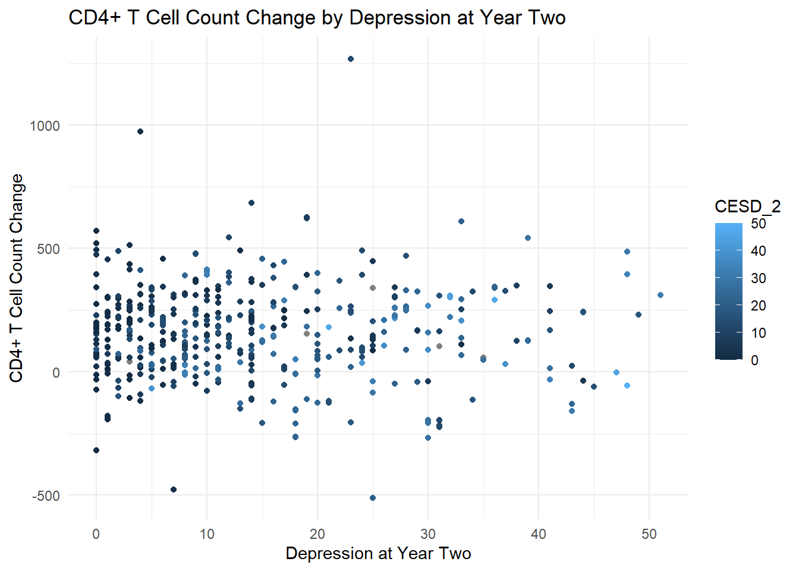
# Perform a linear regression predicting CD4+ T Cell count change by depressions core
model <- lm(LEU3N_CHANGE ~ CESD_2, data = data_wide_2)
# Examine model summary
summary(model)
Call:
lm(formula = LEU3N_CHANGE ~ CESD_2, data = data_wide_2)
Residuals:
Min 1Q Median 3Q Max
-660.08 -116.87 1.12 112.37 1107.94
Coefficients:
Estimate Std. Error t value Pr(>|t|)
(Intercept) 180.4992 12.6181 14.305 <0.0000000000000002 ***
CESD_2 -1.5305 0.7445 -2.056 0.0403 *
---
Signif. codes: 0 '***' 0.001 '**' 0.01 '*' 0.05 '.' 0.1 ' ' 1
Residual standard error: 189 on 525 degrees of freedom
(23 observations deleted due to missingness)
Multiple R-squared: 0.007986, Adjusted R-squared: 0.006096
F-statistic: 4.226 on 1 and 525 DF, p-value: 0.0403# Create a scatterplot of CD4+ T Cell Count change by BMI at baseline
ggplot(data_wide_2, aes(x = CESD_0, y = LEU3N_CHANGE, color = CESD_2)) +
geom_point() +
geom_smooth(method = "lm") +
theme_minimal() +
labs(title = "CD4+ T Cell Count Change by Depression at Year Two",
y = "CD4+ T Cell Count Change",
x = "Depression at Year Two") +
scale_fill_brewer(palette = "Pastel2")`geom_smooth()` using formula = 'y ~ x'Warning: Removed 34 rows containing non-finite outside the scale range
(`stat_smooth()`).Warning: The following aesthetics were dropped during statistical transformation:
colour.
ℹ This can happen when ggplot fails to infer the correct grouping structure in
the data.
ℹ Did you forget to specify a `group` aesthetic or to convert a numerical
variable into a factor?Warning: Removed 34 rows containing missing values or values outside the scale range
(`geom_point()`).
The overall model is significant (F~(1, 525)~= 4.23, p = 0.0403). On average, every 1 point increase in CES-Depression score was associated with a 1.53 cell decrease in CD4+ T Cell count.
The association is very weak (R-squared = 0.0080), but we can still include it in the final model. It makes sense that people who are more depressed have fewer white blood cells, and we may as well account for this in the final model.
CESD_2 is will be included as a precision variable in the model predicting LEU3N_CHANGE.
Based on the results of the exploratory data analysis, the variables that will be included for consideration in the final model for LEU3N_CHANGE are hard_drugs_grp, ADH_HIGHLOW, BMI_2, FRP_2, and EDUC_COLLEGE, and CESD_2.
Now let’s examine relationships for the model predicting aggregate mental QOL change.
The researchers are concerned that the a
They want to investigate how mental QOL is after 2 years. If there is a
We can also see if mental QOL differs by hard drug use grp and adherence, and any other covariates.
Does viral load predict mental QOL?
does LEU3n predict mental QOL?
Do I have to do something here concerning dropout?
Let’s assess if mental QOL is related to the hard drug use categories.
# Create boxplots of log viral load change by hard drug use group
ggplot(data_wide_2, aes(x = hard_drugs_grp, y = AGG_MENT_CHANGE, fill = hard_drugs_grp)) +
geom_boxplot(alpha = 0.5) +
theme_minimal() +
scale_fill_brewer(palette="Pastel2") +
labs(title = "Boxplot of Mental QOL Change by Hard Drug Use Group",
x = "Hard Drug Use Group",
y = "Aggregate Mental QOL Change") +
guides(fill = guide_legend(title = "Hard Drug Use Group"))Warning: Removed 7 rows containing non-finite outside the scale range
(`stat_boxplot()`).There does not appear to be much of a difference in mental QOL by hard drug use groups.
Let’s run a regression.
# Perform regression predicting mental QOL change by hard drug use group
model <- lm(AGG_MENT_CHANGE ~ hard_drugs_grp, data = data_wide_2)
# Examine Summary
summary(model)
Call:
lm(formula = AGG_MENT_CHANGE ~ hard_drugs_grp, data = data_wide_2)
Residuals:
Min 1Q Median 3Q Max
-40.581 -6.092 -0.747 5.348 38.743
Coefficients:
Estimate Std. Error t value Pr(>|t|)
(Intercept) 2.546 1.809 1.407 0.160
hard_drugs_grpNever User -0.157 1.902 -0.083 0.934
hard_drugs_grpCurrent User -2.576 2.405 -1.071 0.285
Residual standard error: 12.27 on 540 degrees of freedom
(7 observations deleted due to missingness)
Multiple R-squared: 0.003886, Adjusted R-squared: 0.0001966
F-statistic: 1.053 on 2 and 540 DF, p-value: 0.3495hard_drugs_grp is not a significant predictor of AGG_MENT_CHANGE.
This is interesting, because when we plot average mental QOL over 8 years by hard drug use, we can see a clear relationship
# Get means for each year
summary_data <- data %>%
group_by(hard_drugs, years) %>%
summarize(Average_agg_ment = mean(AGG_MENT, na.rm = TRUE))`summarise()` has grouped output by 'hard_drugs'. You can override using the
`.groups` argument.# Create plot
ggplot(summary_data, aes(x = years, y = Average_agg_ment, color = hard_drugs)) +
geom_line(size = 1) + # Line plot
geom_point(size = 2) + # Add points for clarity
labs(title = "Average mental QOL by Hard Drug Use Over 8 Years",
x = "Year",
y = "Average mental QOL",
color = "Hard Drug Use") +
theme_minimal() + # Clean theme
scale_color_brewer(palette = "Pastel2") # Nice color palette for groupsWarning: Removed 4 rows containing missing values or values outside the scale range
(`geom_line()`).Warning: Removed 4 rows containing missing values or values outside the scale range
(`geom_point()`).
Where those who did not use hard drugs since the last visit had higher mental QOL.
It seems that somewhere when we created our 3 hard drug use categories of never user, previous user, and current user, we lost some of this information.
hard_drg_group will still be included as a potential covariate in case there is a confounding variable present.
If adverse reactions from the HAART treatment negatively impacted patients, then we would expect to see the higher adherence groups having a smaller increase, or even decrease, in mental QOL compared to those in the low adherence groups.
Let’s first examine this by plotting the average mental QOL for each year by adherence group.
# Get means for each year
summary_data <- data_2 %>%
group_by(ADH, years) %>%
summarize(Average_AGG_MENT = mean(AGG_MENT, na.rm = TRUE))`summarise()` has grouped output by 'ADH'. You can override using the `.groups`
argument.# Create plot
ggplot(summary_data, aes(x = years, y = Average_AGG_MENT, color = ADH)) +
geom_line(size = 1) + # Line plot
geom_point(size = 2) + # Add points for clarity
labs(title = "Average Mental QOL by Adherence Group Over 2 Years",
x = "Year",
y = "Average Mental QOL",
color = "Adherence Group") +
theme_minimal() + # Clean theme
scale_color_brewer(palette = "Pastel2") # Nice color palette for groupsWarning: Removed 1 row containing missing values or values outside the scale range
(`geom_line()`).Warning: Removed 1 row containing missing values or values outside the scale range
(`geom_point()`).This plot shows that, over the first 2 years, the < 75% adherence group had the highest increase in mental QOL! This is the opposite of expected; you would expect the 100% adherence group to have the highest mental QOL if there were no adverse effects from the drug and it was improving QOL overall by decreasing HIV viral load.
However, the relationship looks different if we create this same plot over the entire 8 years of the study.
# Get means for each year
summary_data <- data %>%
group_by(ADH, years) %>%
summarize(Average_QOL = mean(AGG_MENT, na.rm = TRUE))`summarise()` has grouped output by 'ADH'. You can override using the `.groups`
argument.# Create plot
ggplot(summary_data, aes(x = years, y = Average_QOL, color = ADH)) +
geom_line(size = 1) + # Line plot
geom_point(size = 2) + # Add points for clarity
labs(title = "Average Mental QOL Score by Adherence Group Over 8 Years",
x = "Year",
y = "Average Mental QOL Score",
color = "Adherence Group") +
theme_minimal() + # Clean theme
scale_color_brewer(palette = "Pastel2") # Nice color palette for groupsWarning: Removed 1 row containing missing values or values outside the scale range
(`geom_line()`).Warning: Removed 1 row containing missing values or values outside the scale range
(`geom_point()`).Here we see the true relationship emerge! The 100% adherence group has the highest aggregate mental QOL score across the 8 years of the study, followed by the 95-99% adherence group, then the 75-94% and <75% adherence groups trailing behind with fair amounts of year to year variation.
Could we calculate AUC and use that to answer the researchers’ question?
Therefore we can reasonably conclude that higher adherence is related to better overall mental QOL. Which would likely not be the case if the side effects of the drug were worse than the benefits from taking them.
Let’s examine these relationships with boxplots.
First looking at adherence split into four categories.
# Change reference group
data_wide_2$ADH_2 <- relevel(data_wide_2$ADH_2, ref = "100%")
# Create boxplots of mental QOL change by adherence group
ggplot(data_wide_2, aes(x = ADH_2, y = AGG_MENT_CHANGE, fill = ADH_2)) +
geom_boxplot(alpha = 0.5) +
theme_minimal() +
scale_fill_brewer(palette="Pastel2") +
labs(title = "Boxplot of Mental QOL Change by Adherence at Year 2",
x = "Adherence at year 2",
y = "Mental QOL Change") +
guides(fill = guide_legend(title = "Adherence Group"))Warning: Removed 7 rows containing non-finite outside the scale range
(`stat_boxplot()`).
And then adherence split into two categories of high vs low.
# Filter out NA values
data_no_na <- data_wide_2 %>% filter(!is.na(ADH_HIGHVSLOW))
# Create boxplots of mental QOL change by adherence group
ggplot(data_no_na, aes(x = ADH_HIGHVSLOW, y = AGG_MENT_CHANGE, fill = ADH_HIGHVSLOW)) +
geom_boxplot(alpha = 0.5) +
theme_minimal() +
scale_fill_brewer(palette="Pastel2") +
labs(title = "Boxplot of Mental QOL Change by Adherence at Year 2",
x = "Adherence at year 2",
y = "Mental QOL Change") +
guides(fill = guide_legend(title = "Adherence Group"))Warning: Removed 6 rows containing non-finite outside the scale range
(`stat_boxplot()`).This plot shows that there is a slight difference in aggregate mental QOL over the first 2 years of the study between the high and low adherence groups.
While not a perfect encapsulation of the true relationship between adherence and mental QOL over time, I believe this comparison adequately captures the differences between adherence groups we can see with our data visualizations.
Let’s perform a regression to see if this relationship is statistically significant.
# Perform regression predicting mental QOL change by adherence group
model <- lm(AGG_MENT_CHANGE ~ ADH_HIGHVSLOW, data = data_wide_2)
# Examine Summary
summary(model)
Call:
lm(formula = AGG_MENT_CHANGE ~ ADH_HIGHVSLOW, data = data_wide_2)
Residuals:
Min 1Q Median 3Q Max
-35.917 -6.161 -0.841 5.457 38.633
Coefficients:
Estimate Std. Error t value Pr(>|t|)
(Intercept) -2.286 1.859 -1.230 0.2194
ADH_HIGHVSLOWHigh Adherence 4.785 1.939 2.468 0.0139 *
---
Signif. codes: 0 '***' 0.001 '**' 0.01 '*' 0.05 '.' 0.1 ' ' 1
Residual standard error: 12.19 on 530 degrees of freedom
(18 observations deleted due to missingness)
Multiple R-squared: 0.01136, Adjusted R-squared: 0.009498
F-statistic: 6.092 on 1 and 530 DF, p-value: 0.0139Great! ADH_HIGHLOW is a significant predictor of mental QOL change over 2 years (F(1,530)= 6.092). On average, those who had high adherence to the treatment regiment had an aggregate mental QOL score that was 4.79 points higher than those who had low adherence (p = 0.0139).
ADH_HIGHLOW will be included in the final model as a predictor of AGG_MENT_CHANGE.
The only other variable that flagged as being associated with mental QOL was the CESD Depression score.
Let’s examine this relationship with a plot.
# Create a scatterplot of mental QOL change score by depression at 2 years
ggplot(data_wide_2, aes(x = CESD_2, y = AGG_MENT_CHANGE, color = CESD_2)) +
geom_point() +
theme_minimal() +
labs(title = "Mental QOL Change by Depression at Baseline",
y = "Mental QOL Change ",
x = "Depression Score") +
scale_fill_brewer(palette = "Pastel2")Warning: Removed 12 rows containing missing values or values outside the scale range
(`geom_point()`).There appears to be a negative linear relationship here. Let’s run the regression and fit the model.
# Perform a linear regression predicting mental QOL change by depression at baseline
model <- lm(AGG_MENT_CHANGE ~ CESD_2, data = data_wide_2)
# Examine model summary
summary(model)
Call:
lm(formula = AGG_MENT_CHANGE ~ CESD_2, data = data_wide_2)
Residuals:
Min 1Q Median 3Q Max
-32.125 -6.554 -1.727 5.389 39.519
Coefficients:
Estimate Std. Error t value Pr(>|t|)
(Intercept) 6.38166 0.77447 8.240 0.00000000000000133 ***
CESD_2 -0.33368 0.04625 -7.215 0.00000000000185341 ***
---
Signif. codes: 0 '***' 0.001 '**' 0.01 '*' 0.05 '.' 0.1 ' ' 1
Residual standard error: 11.77 on 536 degrees of freedom
(12 observations deleted due to missingness)
Multiple R-squared: 0.08852, Adjusted R-squared: 0.08682
F-statistic: 52.05 on 1 and 536 DF, p-value: 0.000000000001853# Create a scatterplot of mental QOL change score by depression at baseline
ggplot(data_wide_2, aes(x = CESD_2, y = AGG_MENT_CHANGE, color = CESD_2)) +
geom_point() +
geom_smooth(method = "lm") +
theme_minimal() +
labs(title = "Mental QOL Change by Depression at Baseline",
y = "Mental QOL Change ",
x = "Depression Score") +
scale_fill_brewer(palette = "Pastel2")`geom_smooth()` using formula = 'y ~ x'Warning: Removed 12 rows containing non-finite outside the scale range
(`stat_smooth()`).Warning: The following aesthetics were dropped during statistical transformation:
colour.
ℹ This can happen when ggplot fails to infer the correct grouping structure in
the data.
ℹ Did you forget to specify a `group` aesthetic or to convert a numerical
variable into a factor?Warning: Removed 12 rows containing missing values or values outside the scale range
(`geom_point()`).Depression score is a significant predictor of mental QOL change over the first 2 years of treatment (F~(1, 536)~= 52.05). On average, a 1-point increase in depression score is associated with a 0.33 point decrease in mental QOL score (p < 0.0001).
CESD_0 will be included as a precision variable in the model predicting AGG_MENT_CHANGE
It appears that depression and hard drug use may be correlated based on the correlation matrix.
If so, we have potential confounding between hard drug use and depression. Maybe those who used hard drugs have worse QOL, but it’s because they are depressed. Or vice versa.
Let’s assess.
First we can plot depression by hard drug use group.
# Create a scatterplot of depression score at year 2 by hard drug use group
ggplot(data_wide_2, aes(x = hard_drugs_grp, y = CESD_2, fill = hard_drugs_grp)) +
geom_boxplot() +
theme_minimal() +
labs(title = "Depression Score by Hard Drug Use Group",
y = "Depression Score ",
x = "Hard Drug Use Group") +
scale_fill_brewer(palette = "Pastel2")Warning: Removed 5 rows containing non-finite outside the scale range
(`stat_boxplot()`).It appears that current and previous drug users have higher depression scores than those who never used drugs.
Let’s run a regression to see if that relationship is statistically significant.
# Refactor to never users as reference group
data_wide_2$hard_drugs_grp <- relevel(data_wide_2$hard_drugs_grp, ref = "Never User")
# Perform a linear regression predicting depression by hard drug use group
model <- lm(CESD_2 ~ hard_drugs_grp, data = data_wide_2)
# Examine model summary
summary(model)
Call:
lm(formula = CESD_2 ~ hard_drugs_grp, data = data_wide_2)
Residuals:
Min 1Q Median 3Q Max
-17.826 -8.533 -2.767 6.467 38.467
Coefficients:
Estimate Std. Error t value Pr(>|t|)
(Intercept) 11.5330 0.5137 22.451 < 0.0000000000000002
hard_drugs_grpPrevious User 7.2931 1.6680 4.372 0.0000147
hard_drugs_grpCurrent User 5.2336 1.4814 3.533 0.000446
(Intercept) ***
hard_drugs_grpPrevious User ***
hard_drugs_grpCurrent User ***
---
Signif. codes: 0 '***' 0.001 '**' 0.01 '*' 0.05 '.' 0.1 ' ' 1
Residual standard error: 10.76 on 542 degrees of freedom
(5 observations deleted due to missingness)
Multiple R-squared: 0.05016, Adjusted R-squared: 0.04666
F-statistic: 14.31 on 2 and 542 DF, p-value: 0.0000008765Hard drug use is a significant predictor of depression score (F~(2, 542)~= 14.31). On average, current hard drug users had depression scores that were 5.23 points higher than never hard drug users (p < 0.0001), and previous hard drug users had depression scores that were 7.29 points higher than those who never used hard drugs (p < 0.0001).
hard_drug_grp will be included as a possible confounder for the relationship between depression and mental QOL. Or rather depression will be included as a possible confounder for the relationship between hard_drug_use and mental QOL.
If the ART has a strong adverse effect on QOL, then we can expect those with high adherence to have worse QOL. Maybe.
Let’s assess if physical QOL is related to the hard drug use categories by itself.
# Create boxplots of aggregate physical QOL by hard drug use group
ggplot(data_wide_2, aes(x = hard_drugs_grp, y = AGG_PHYS_CHANGE, fill = hard_drugs_grp)) +
geom_boxplot(alpha = 0.5) +
theme_minimal() +
scale_fill_brewer(palette="Pastel2") +
labs(title = "Boxplot of Aggregate Physical QOL by Hard Drug Use Group",
x = "Hard Drug Use Group",
y = "Aggregate Physical QOL Change") +
guides(fill = guide_legend(title = "Hard Drug Use Group"))Warning: Removed 7 rows containing non-finite outside the scale range
(`stat_boxplot()`).It looks like current hard drug users have a lower physical QOL score than never hard drug users.
Let’s run a regression to see if that difference is statistically significant.
# Perform regression predicting physical QOL change by hard drug use group
model <- lm(AGG_PHYS_CHANGE ~ hard_drugs_grp, data = data_wide_2)
# Examine Summary
summary(model)
Call:
lm(formula = AGG_PHYS_CHANGE ~ hard_drugs_grp, data = data_wide_2)
Residuals:
Min 1Q Median 3Q Max
-36.370 -3.818 0.689 4.380 33.402
Coefficients:
Estimate Std. Error t value Pr(>|t|)
(Intercept) -1.3010 0.4014 -3.241 0.00126 **
hard_drugs_grpPrevious User -0.2510 1.3007 -0.193 0.84703
hard_drugs_grpCurrent User -4.8971 1.1553 -4.239 0.0000264 ***
---
Signif. codes: 0 '***' 0.001 '**' 0.01 '*' 0.05 '.' 0.1 ' ' 1
Residual standard error: 8.391 on 540 degrees of freedom
(7 observations deleted due to missingness)
Multiple R-squared: 0.03232, Adjusted R-squared: 0.02874
F-statistic: 9.019 on 2 and 540 DF, p-value: 0.0001403# Gather p-values of the model
p_values <- summary(model)$coefficients[,4] # This line selects the fourth column of the resulting coefficients table from summary(model), which is the p-values
# Perform Bonferroni correction
p_adjusted <- p.adjust(p_values, method = "bonferroni")
# Compare adjusted p-values to unadjusted p-values
p_comparison <- cbind(p_values, p_adjusted)
pretty_print(p_comparison)| p_values | p_adjusted | |
|---|---|---|
| (Intercept) | 0.0012637 | 0.0037910 |
| hard_drugs_grpPrevious User | 0.8470258 | 1.0000000 |
| hard_drugs_grpCurrent User | 0.0000264 | 0.0000792 |
Change the reference group to previous drug users and re-run the model.
# Relevel hard drug use to have the reference level as previous users
data_wide_2$hard_drugs_grp <- relevel(data_wide_2$hard_drugs_grp, ref = "Previous User")
# Perform regression predicting physical QOL change by hard drug use group
model <- lm(AGG_PHYS_CHANGE ~ hard_drugs_grp, data = data_wide_2)
# Examine Summary
summary(model)
Call:
lm(formula = AGG_PHYS_CHANGE ~ hard_drugs_grp, data = data_wide_2)
Residuals:
Min 1Q Median 3Q Max
-36.370 -3.818 0.689 4.380 33.402
Coefficients:
Estimate Std. Error t value Pr(>|t|)
(Intercept) -1.552 1.237 -1.254 0.2102
hard_drugs_grpNever User 0.251 1.301 0.193 0.8470
hard_drugs_grpCurrent User -4.646 1.644 -2.825 0.0049 **
---
Signif. codes: 0 '***' 0.001 '**' 0.01 '*' 0.05 '.' 0.1 ' ' 1
Residual standard error: 8.391 on 540 degrees of freedom
(7 observations deleted due to missingness)
Multiple R-squared: 0.03232, Adjusted R-squared: 0.02874
F-statistic: 9.019 on 2 and 540 DF, p-value: 0.0001403# Gather p-values of the model
p_values <- summary(model)$coefficients[,4] # This line selects the fourth column of the resulting coefficients table from summary(model), which is the p-values
# Perform Bonferroni correction
p_adjusted <- p.adjust(p_values, method = "bonferroni")
# Compare adjusted p-values to unadjusted p-values
p_comparison <- cbind(p_values, p_adjusted)
pretty_print(p_comparison)| p_values | p_adjusted | |
|---|---|---|
| (Intercept) | 0.2102050 | 0.6306150 |
| hard_drugs_grpNever User | 0.8470258 | 1.0000000 |
| hard_drugs_grpCurrent User | 0.0048976 | 0.0146927 |
Yes it is. Hard drug use is a significant predictor of physical QOL change over 2 years (F~(2, 540)~= 9.019). On average, current drug users have a physical QOL score that is 4.90 points lower than never drug users (p-adjusted = 0.0000792), and 4.65 points lower than previous drug users (p-adjusted = 0.0147).
hard_drug_group will be included as a predictor of AGG_PHYS_CHANGE.
If adverse reactions from the HAART treatment negatively impacted patients, then we would expect to see the higher adherence groups having a smaller increase, or even decrease, in physical QOL compared to those in the low adherence groups.
Let’s first examine this by plotting the average mental QOL for each year by adherence group.
# Get means for each year
summary_data <- data_2 %>%
group_by(ADH, years) %>%
summarize(Average_AGG_PHYS = mean(AGG_PHYS, na.rm = TRUE))`summarise()` has grouped output by 'ADH'. You can override using the `.groups`
argument.# Create plot
ggplot(summary_data, aes(x = years, y = Average_AGG_PHYS, color = ADH)) +
geom_line(size = 1) + # Line plot
geom_point(size = 2) + # Add points for clarity
labs(title = "Average Physical QOL by Adherence Group Over 2 Years",
x = "Year",
y = "Average Physical QOL",
color = "Adherence Group") +
theme_minimal() + # Clean theme
scale_color_brewer(palette = "Pastel2") # Nice color palette for groupsWarning: Removed 1 row containing missing values or values outside the scale range
(`geom_line()`).Warning: Removed 1 row containing missing values or values outside the scale range
(`geom_point()`).Here we can see that the 2 highest adherence groups have the highest physical QOL scores, which tracks with what we would expect if the drugs were helping.
For good measure, let’s examine this relationship across the entire 8 years of the study.
# Get rid of that value of 1 for adherence at baseline for patient 426
data$ADH[data$years == 0] <- NA
# Get means for each year
summary_data <- data %>%
group_by(ADH, years) %>%
summarize(Average_AGG_PHYS = mean(AGG_PHYS, na.rm = TRUE))`summarise()` has grouped output by 'ADH'. You can override using the `.groups`
argument.# Create plot
ggplot(summary_data, aes(x = years, y = Average_AGG_PHYS, color = ADH)) +
geom_line(size = 1) + # Line plot
geom_point(size = 2) + # Add points for clarity
labs(title = "Average Physical QOL Score by Adherence Group Over 8 Years",
x = "Year",
y = "Average Physical QOL Score",
color = "Adherence Group") +
theme_minimal() + # Clean theme
scale_color_brewer(palette = "Pastel2") # Nice color palette for groupsWarning: Removed 1 row containing missing values or values outside the scale range
(`geom_line()`).Warning: Removed 1 row containing missing values or values outside the scale range
(`geom_point()`).We see a similiar relationship looking at the full 8 years of the study. You can visualize how the two highest adherence groups would have a greater AUC than the two lowest adherence groups.
Let’s examine these relationships with boxplots.
First looking at adherence split into four categories.
# Change reference group
data_wide_2$ADH_2 <- relevel(data_wide_2$ADH_2, ref = "100%")
# Create boxplots of physical QOL change by adherence group
ggplot(data_wide_2, aes(x = ADH_2, y = AGG_PHYS_CHANGE, fill = ADH_2)) +
geom_boxplot(alpha = 0.5) +
theme_minimal() +
scale_fill_brewer(palette="Pastel2") +
labs(title = "Boxplot of Physical QOL Change by Adherence at Year 2",
x = "Adherence at year 2",
y = "Physical QOL Change") +
guides(fill = guide_legend(title = "Adherence Group"))Warning: Removed 7 rows containing non-finite outside the scale range
(`stat_boxplot()`).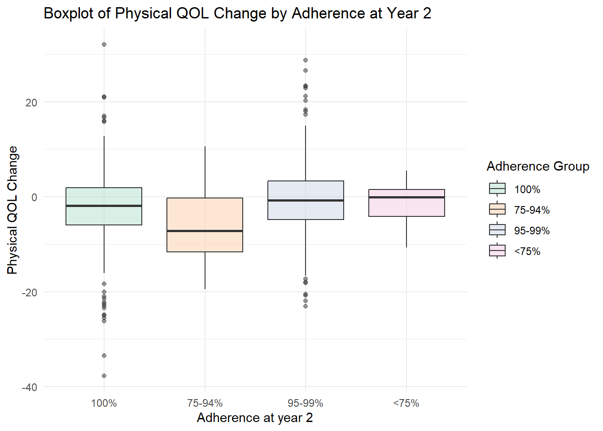
That doesn’t look as informative as our high vs low comparison should be.
# Filter out NA values
data_no_na <- data_wide_2 %>% filter(!is.na(ADH_HIGHVSLOW))
# Create boxplots of Physical QOL change by adherence group
ggplot(data_no_na, aes(x = ADH_HIGHVSLOW, y = AGG_PHYS_CHANGE, fill = ADH_HIGHVSLOW)) +
geom_boxplot(alpha = 0.5) +
theme_minimal() +
scale_fill_brewer(palette="Pastel2") +
labs(title = "Boxplot of Physical QOL Change by Adherence at Year 2",
x = "Adherence at year 2",
y = "Physical QOL Change") +
guides(fill = guide_legend(title = "Adherence Group"))Warning: Removed 6 rows containing non-finite outside the scale range
(`stat_boxplot()`).It appears that the high adherence group has a higher increase in physical quality of life compared to the low adherence groups.
Let’s run the regression to see if that difference is statistically significant.
# Perform regression predicting physical QOL change by adherence
model <- lm(AGG_PHYS_CHANGE ~ ADH_HIGHVSLOW, data = data_wide_2)
# Examine Summary
summary(model)
Call:
lm(formula = AGG_PHYS_CHANGE ~ ADH_HIGHVSLOW, data = data_wide_2)
Residuals:
Min 1Q Median 3Q Max
-36.187 -3.923 0.285 4.386 33.585
Coefficients:
Estimate Std. Error t value Pr(>|t|)
(Intercept) -6.292 1.293 -4.865 0.00000151 ***
ADH_HIGHVSLOWHigh Adherence 4.808 1.349 3.564 0.000399 ***
---
Signif. codes: 0 '***' 0.001 '**' 0.01 '*' 0.05 '.' 0.1 ' ' 1
Residual standard error: 8.481 on 530 degrees of freedom
(18 observations deleted due to missingness)
Multiple R-squared: 0.0234, Adjusted R-squared: 0.02156
F-statistic: 12.7 on 1 and 530 DF, p-value: 0.0003986The overall model is statistically significant (F(1,530)=12.7). On average, those with high adherence had a change in physical QOL score that was 4.81 points higher than those with low adherance. (p = 0.00399).
ADH_HIGHVSLOW will be included as a predictor for AGG_PHYS_CHANGE.
Frailty related phenotype was strongly correlated to pysical QOL change in the correlation matrix.
Let’s assess that relationship.
# Filter out NA values
data_no_na <- data_wide_2 %>% filter(!is.na(FRP_2))
# Create boxplots of physical QOL change by frailty related phenotype at year 2
ggplot(data_no_na, aes(x = FRP_2, y = AGG_PHYS_CHANGE, fill = FRP_2)) +
geom_boxplot(alpha = 0.5) +
theme_minimal() +
scale_fill_brewer(palette = "Pastel2") +
labs(title = "Boxplot of Physical QOL Change by Frailty Related Phenotype",
x = "Frailty Related Phenotype",
y = "Physical QOL Change") +
guides(fill = guide_legend(title = "Frailty Related Phenotype"))Warning: Removed 5 rows containing non-finite outside the scale range
(`stat_boxplot()`).There is a very strong association here: those with frailty related phenotype have a large decrease in physical QOL over 2 years compared to those without a frailty related phenotype, who seem to have barely had any decrease in physical QOL at all.
Let’s assess this relationship with a regression.
# Perform regression predicting physical QOL change by Frailty Related Phenotype
model <- lm(AGG_PHYS_CHANGE ~ FRP_2, data = data_wide_2)
# Examine Summary
summary(model)
Call:
lm(formula = AGG_PHYS_CHANGE ~ FRP_2, data = data_wide_2)
Residuals:
Min 1Q Median 3Q Max
-32.310 -4.244 0.033 4.155 33.257
Coefficients:
Estimate Std. Error t value Pr(>|t|)
(Intercept) -1.1567 0.3534 -3.273 0.00113 **
FRP_2Yes -12.7908 1.5034 -8.508 < 0.0000000000000002 ***
---
Signif. codes: 0 '***' 0.001 '**' 0.01 '*' 0.05 '.' 0.1 ' ' 1
Residual standard error: 8.004 on 541 degrees of freedom
(7 observations deleted due to missingness)
Multiple R-squared: 0.118, Adjusted R-squared: 0.1164
F-statistic: 72.39 on 1 and 541 DF, p-value: < 0.00000000000000022The overall model is statistically significant (F(1,541) = 72.39. On average, those with a frailty related phenotype had a change in physical QOL that was 12.79 points lower than those without a frailty related phenotype (p < .0001).
FRP_2 will be included as a precision variable for the full model predicting AGG_PHYS_CHANGE.
# Perform regression predicting physical QOL change by depression
model <- lm(AGG_PHYS_CHANGE ~ CESD_2, data = data_wide_2)
# Examine Summary
summary(model)
Call:
lm(formula = AGG_PHYS_CHANGE ~ CESD_2, data = data_wide_2)
Residuals:
Min 1Q Median 3Q Max
-34.686 -4.073 0.441 4.064 33.074
Coefficients:
Estimate Std. Error t value Pr(>|t|)
(Intercept) -0.89305 0.55793 -1.601 0.1100
CESD_2 -0.08046 0.03332 -2.415 0.0161 *
---
Signif. codes: 0 '***' 0.001 '**' 0.01 '*' 0.05 '.' 0.1 ' ' 1
Residual standard error: 8.479 on 536 degrees of freedom
(12 observations deleted due to missingness)
Multiple R-squared: 0.01076, Adjusted R-squared: 0.008917
F-statistic: 5.831 on 1 and 536 DF, p-value: 0.01608Is sig. but teeny tiny amount, not really needed.
# Perform regression predicting physical QOL change by CD4+ T Cell Count
model <- lm(AGG_PHYS_CHANGE ~ LEU3N_CHANGE, data = data_wide_2)
# Examine Summary
summary(model)
Call:
lm(formula = AGG_PHYS_CHANGE ~ LEU3N_CHANGE, data = data_wide_2)
Residuals:
Min 1Q Median 3Q Max
-31.014 -4.224 0.488 4.401 34.612
Coefficients:
Estimate Std. Error t value Pr(>|t|)
(Intercept) -3.359356 0.473393 -7.096 0.00000000000419 ***
LEU3N_CHANGE 0.009809 0.001915 5.122 0.00000042478834 ***
---
Signif. codes: 0 '***' 0.001 '**' 0.01 '*' 0.05 '.' 0.1 ' ' 1
Residual standard error: 8.27 on 523 degrees of freedom
(25 observations deleted due to missingness)
Multiple R-squared: 0.04777, Adjusted R-squared: 0.04595
F-statistic: 26.24 on 1 and 523 DF, p-value: 0.0000004248Is sig but that doesn’t even make sense cause that’s one of our outcome variables.
Unless we’re making this a complex model with multiple inputs.
# Perform regression predicting physical QOL change by college education
model <- lm(AGG_PHYS_CHANGE ~ EDUC_COLLEGE, data = data_wide_2)
# Examine Summary
summary(model)
Call:
lm(formula = AGG_PHYS_CHANGE ~ EDUC_COLLEGE, data = data_wide_2)
Residuals:
Min 1Q Median 3Q Max
-35.931 -3.829 0.399 4.384 33.840
Coefficients:
Estimate Std. Error t value Pr(>|t|)
(Intercept) -2.2913 0.7713 -2.971 0.0031 **
EDUC_COLLEGECollege 0.5519 0.8759 0.630 0.5289
---
Signif. codes: 0 '***' 0.001 '**' 0.01 '*' 0.05 '.' 0.1 ' ' 1
Residual standard error: 8.519 on 541 degrees of freedom
(7 observations deleted due to missingness)
Multiple R-squared: 0.0007331, Adjusted R-squared: -0.001114
F-statistic: 0.3969 on 1 and 541 DF, p-value: 0.5289Not sig baby. Don’t need to include.
# Perform regression predicting physical QOL change by age
model <- lm(AGG_PHYS_CHANGE ~ age_2, data = data_wide_2)
# Examine Summary
summary(model)
Call:
lm(formula = AGG_PHYS_CHANGE ~ age_2, data = data_wide_2)
Residuals:
Min 1Q Median 3Q Max
-35.878 -3.815 0.415 4.429 33.808
Coefficients:
Estimate Std. Error t value Pr(>|t|)
(Intercept) -0.56365 1.93354 -0.292 0.771
age_2 -0.02859 0.04177 -0.685 0.494
Residual standard error: 8.518 on 541 degrees of freedom
(7 observations deleted due to missingness)
Multiple R-squared: 0.0008655, Adjusted R-squared: -0.0009814
F-statistic: 0.4686 on 1 and 541 DF, p-value: 0.4939Not significant, age will not be included as a potential covariate for AGG_PHYS_CHANGE.
# Perform regression predicting physical QOL change by BMI
model <- lm(AGG_PHYS_CHANGE ~ BMI_2, data = data_wide_2)
# Examine Summary
summary(model)
Call:
lm(formula = AGG_PHYS_CHANGE ~ BMI_2, data = data_wide_2)
Residuals:
Min 1Q Median 3Q Max
-34.798 -3.936 0.301 4.231 30.707
Coefficients:
Estimate Std. Error t value Pr(>|t|)
(Intercept) -7.71132 2.43341 -3.169 0.00163 **
BMI_2 0.22983 0.09435 2.436 0.01522 *
---
Signif. codes: 0 '***' 0.001 '**' 0.01 '*' 0.05 '.' 0.1 ' ' 1
Residual standard error: 8.237 on 469 degrees of freedom
(79 observations deleted due to missingness)
Multiple R-squared: 0.01249, Adjusted R-squared: 0.01039
F-statistic: 5.934 on 1 and 469 DF, p-value: 0.01522BMI is a significant predictor of AGG_PHYS_CHANGE and will be included as a potential covariate.
# Perform regression predicting physical QOL change by drinking group
model <- lm(AGG_PHYS_CHANGE ~ DKGRP_2, data = data_wide_2)
# Examine Summary
summary(model)
Call:
lm(formula = AGG_PHYS_CHANGE ~ DKGRP_2, data = data_wide_2)
Residuals:
Min 1Q Median 3Q Max
-33.762 -3.702 0.371 4.475 32.427
Coefficients:
Estimate Std. Error t value Pr(>|t|)
(Intercept) -2.7939 0.8265 -3.380 0.000777 ***
DKGRP_21-3 drinks/week 0.8123 0.9754 0.833 0.405323
DKGRP_24-13 drinks/week 2.4679 1.1136 2.216 0.027106 *
DKGRP_2>13 drinks/week -1.1151 1.7598 -0.634 0.526576
---
Signif. codes: 0 '***' 0.001 '**' 0.01 '*' 0.05 '.' 0.1 ' ' 1
Residual standard error: 8.51 on 532 degrees of freedom
(14 observations deleted due to missingness)
Multiple R-squared: 0.01353, Adjusted R-squared: 0.007964
F-statistic: 2.432 on 3 and 532 DF, p-value: 0.06428DKGRP_2 has a p-value below the threshold we set of p = 0.10, and will be included as a potential covariate for AGG_PHYS_CHANGE.
Data Analysis
Now we will perform the actual analyses. We will have one model for each of:
- Log Viral Load Change
- CD4+ T Cell Count
- Aggregate Mental QOL
- Aggregate Physical QOL
CD4+ T Cell Count Change
The second outcome variable of interest was change in CD4+ T Cell Count over the first 2 years of the study.
The candidate variables for inclusion in our model predicting LEU3N_CHANGE were hard_drugs_grp, ADH_HIGHLOW, BMI_2, FRP_2, and EDUC_COLLEGE.
The researchers are interested in if differences in treatment response between the drug use groups can be explained by differences in adherence to the HAART regimen, so we will also include an interaction term between hard drug use group and adherence.
We begin by examining the full model with all these variables included.
# Relevel to change to the reference group to never user
data_wide_2$hard_drugs_grp<- relevel(data_wide_2$hard_drugs_grp, ref = "Never User")
# Relevel to change to the reference group to never user
data_wide_2$ADH_HIGHVSLOW <- relevel(data_wide_2$ADH_HIGHVSLOW, ref = "Low Adherence")
# Perform regression on CD4+ T Cell count change by hard drugs group, include adherence as confounder, and BMI, frailty related phenotype, and college education as precision variables.
model_LEU3N_full1 <- lm(LEU3N_CHANGE ~ hard_drugs_grp + ADH_HIGHVSLOW + BMI_2 + FRP_2 + EDUC_COLLEGE + CESD_2 + hard_drugs_grp*ADH_HIGHVSLOW, data = data_wide_2)
# Exmamine the summary
summary(model_LEU3N_full1)
Call:
lm(formula = LEU3N_CHANGE ~ hard_drugs_grp + ADH_HIGHVSLOW +
BMI_2 + FRP_2 + EDUC_COLLEGE + CESD_2 + hard_drugs_grp *
ADH_HIGHVSLOW, data = data_wide_2)
Residuals:
Min 1Q Median 3Q Max
-665.80 -119.44 -3.02 110.80 1080.47
Coefficients: (1 not defined because of singularities)
Estimate Std. Error
(Intercept) -46.7866 63.8333
hard_drugs_grpPrevious User -92.1062 31.5556
hard_drugs_grpCurrent User -161.2223 132.3190
ADH_HIGHVSLOWHigh Adherence 78.9814 35.0133
BMI_2 6.0075 2.1384
FRP_2Yes -101.6289 36.3579
EDUC_COLLEGECollege 28.7527 21.5453
CESD_2 -1.0786 0.8141
hard_drugs_grpPrevious User:ADH_HIGHVSLOWHigh Adherence NA NA
hard_drugs_grpCurrent User:ADH_HIGHVSLOWHigh Adherence 49.4909 134.8433
t value Pr(>|t|)
(Intercept) -0.733 0.46397
hard_drugs_grpPrevious User -2.919 0.00369 **
hard_drugs_grpCurrent User -1.218 0.22370
ADH_HIGHVSLOWHigh Adherence 2.256 0.02457 *
BMI_2 2.809 0.00518 **
FRP_2Yes -2.795 0.00541 **
EDUC_COLLEGECollege 1.335 0.18271
CESD_2 -1.325 0.18588
hard_drugs_grpPrevious User:ADH_HIGHVSLOWHigh Adherence NA NA
hard_drugs_grpCurrent User:ADH_HIGHVSLOWHigh Adherence 0.367 0.71377
---
Signif. codes: 0 '***' 0.001 '**' 0.01 '*' 0.05 '.' 0.1 ' ' 1
Residual standard error: 180.3 on 448 degrees of freedom
(93 observations deleted due to missingness)
Multiple R-squared: 0.1193, Adjusted R-squared: 0.1036
F-statistic: 7.587 on 8 and 448 DF, p-value: 0.000000001577We get an NA for the interaction term. This is likely because we dropped the n=6 patients that were previous hard drug users with low adherence, making the interaction impossible to make. Indeed we can see we only have 7, 453 degrees of freedom.
BMI is significant, but has 10% missing values. Let’s try running the regression without it so we can examine that interaction term, which is the main research question. (it’s also correlated to college education, so we can kind of capture it with that variable).
# Relevel to change to the reference group to never user
data_wide_2$hard_drugs_grp<- relevel(data_wide_2$hard_drugs_grp, ref = "Current User")
# Relevel to change to the reference group to never user
data_wide_2$ADH_HIGHVSLOW <- relevel(data_wide_2$ADH_HIGHVSLOW, ref = "Low Adherence")
# Perform regression on CD4+ T Cell count change by hard drugs group, include adherence as confounder, and BMI, frailty related phenotype, and college education as precision variables.
model_LEU3N_red1 <- lm(LEU3N_CHANGE ~ hard_drugs_grp + ADH_HIGHVSLOW + FRP_2 + EDUC_COLLEGE + CESD_2 + hard_drugs_grp*ADH_HIGHVSLOW, data = data_wide_2)
# Exmamine the summary
summary(model_LEU3N_red1)
Call:
lm(formula = LEU3N_CHANGE ~ hard_drugs_grp + ADH_HIGHVSLOW +
FRP_2 + EDUC_COLLEGE + CESD_2 + hard_drugs_grp * ADH_HIGHVSLOW,
data = data_wide_2)
Residuals:
Min 1Q Median 3Q Max
-697.61 -112.73 -1.31 106.13 1073.99
Coefficients:
Estimate Std. Error
(Intercept) -30.8189 92.4188
hard_drugs_grpNever User 126.1630 96.3440
hard_drugs_grpPrevious User 355.9657 119.3430
ADH_HIGHVSLOWHigh Adherence 104.4788 94.2502
FRP_2Yes -110.1432 35.5533
EDUC_COLLEGECollege 25.0343 20.1854
CESD_2 -1.0187 0.7723
hard_drugs_grpNever User:ADH_HIGHVSLOWHigh Adherence -17.0631 99.8903
hard_drugs_grpPrevious User:ADH_HIGHVSLOWHigh Adherence -333.1581 126.6465
t value Pr(>|t|)
(Intercept) -0.333 0.73892
hard_drugs_grpNever User 1.310 0.19096
hard_drugs_grpPrevious User 2.983 0.00299 **
ADH_HIGHVSLOWHigh Adherence 1.109 0.26816
FRP_2Yes -3.098 0.00206 **
EDUC_COLLEGECollege 1.240 0.21547
CESD_2 -1.319 0.18776
hard_drugs_grpNever User:ADH_HIGHVSLOWHigh Adherence -0.171 0.86443
hard_drugs_grpPrevious User:ADH_HIGHVSLOWHigh Adherence -2.631 0.00878 **
---
Signif. codes: 0 '***' 0.001 '**' 0.01 '*' 0.05 '.' 0.1 ' ' 1
Residual standard error: 181.3 on 506 degrees of freedom
(35 observations deleted due to missingness)
Multiple R-squared: 0.09847, Adjusted R-squared: 0.08422
F-statistic: 6.908 on 8 and 506 DF, p-value: 0.000000012Backwards Elimination
We will perform model selection using backwards elimination and BIC to select the most parsimonious model.
A delta BIC of >2 indicates a difference in model performance.
# Perform backward elimination regression selection based on BIC
ols_step_backward_sbc(model_LEU3N_red1, include = c("hard_drugs_grp", "ADH_HIGHVSLOW"))
Stepwise Summary
------------------------------------------------------------------------------
Step Variable AIC SBC SBIC R2 Adj. R2
------------------------------------------------------------------------------
0 Full Model 6828.740 6871.181 5380.046 0.09847 0.08422
1 EDUC_COLLEGE 6828.303 6866.500 5355.906 0.09573 0.08324
2 CESD_2 6828.406 6862.359 5356.186 0.09203 0.08130
------------------------------------------------------------------------------
Final Model Output
------------------
Model Summary
-------------------------------------------------------------------
R 0.303 RMSE 180.377
R-Squared 0.092 MSE 32535.774
Adj. R-Squared 0.081 Coef. Var 114.193
Pred R-Squared 0.076 AIC 6828.406
MAE 136.282 SBC 6862.359
-------------------------------------------------------------------
RMSE: Root Mean Square Error
MSE: Mean Square Error
MAE: Mean Absolute Error
AIC: Akaike Information Criteria
SBC: Schwarz Bayesian Criteria
ANOVA
------------------------------------------------------------------------
Sum of
Squares DF Mean Square F Sig.
------------------------------------------------------------------------
Regression 1698306.434 6 283051.072 8.581 0.0000
Residual 16755923.716 508 32984.102
Total 18454230.150 514
------------------------------------------------------------------------
Parameter Estimates
-----------------------------------------------------------------------------------------------------------------------------------------
model Beta Std. Error Std. Beta t Sig lower upper
-----------------------------------------------------------------------------------------------------------------------------------------
(Intercept) -36.638 90.808 -0.403 0.687 -215.043 141.767
hard_drugs_grpNever User 136.867 96.322 0.292 1.421 0.156 -52.373 326.106
hard_drugs_grpPrevious User 341.997 117.232 0.515 2.917 0.004 111.678 572.317
ADH_HIGHVSLOWHigh Adherence 116.056 94.071 0.168 1.234 0.218 -68.761 300.873
FRP_2Yes -113.844 35.435 -0.136 -3.213 0.001 -183.462 -44.226
hard_drugs_grpNever User:ADH_HIGHVSLOWHigh Adherence -25.037 99.815 -0.059 -0.251 0.802 -221.138 171.064
hard_drugs_grpPrevious User:ADH_HIGHVSLOWHigh Adherence -330.080 123.130 -0.467 -2.681 0.008 -571.988 -88.173
-----------------------------------------------------------------------------------------------------------------------------------------As predicted, the most parsimonious model is with CESD_2 and EDUC_COLLEGE removed, and only including FRP_2 as a precision variable.
Let’s investigate the key relationships in the final model for LEU3N_CHANGE as determined through backwards selection.
First let’s look at the impact of hard drug use on CD4+ T Cell change, at low adherence.
# Relevel to change to the reference group to never user
data_wide_2$hard_drugs_grp<- relevel(data_wide_2$hard_drugs_grp, ref = "Never User")
# Relevel to change to the reference group to never user
data_wide_2$ADH_HIGHVSLOW <- relevel(data_wide_2$ADH_HIGHVSLOW, ref = "Low Adherence")
# Perform regression on CD4+ T Cell count change by hard drugs group with covariates as determined by backward elimination
model_LEU3N_final1 <- lm(LEU3N_CHANGE ~ hard_drugs_grp + ADH_HIGHVSLOW + FRP_2 + hard_drugs_grp*ADH_HIGHVSLOW, data = data_wide_2)
# Examine the summary
summary(model_LEU3N_final1)
Call:
lm(formula = LEU3N_CHANGE ~ hard_drugs_grp + ADH_HIGHVSLOW +
FRP_2 + hard_drugs_grp * ADH_HIGHVSLOW, data = data_wide_2)
Residuals:
Min 1Q Median 3Q Max
-700.74 -111.21 -1.67 112.23 1077.98
Coefficients:
Estimate Std. Error
(Intercept) 107.46 31.59
hard_drugs_grpCurrent User -144.10 96.02
hard_drugs_grpPrevious User 197.90 80.49
ADH_HIGHVSLOWHigh Adherence 83.09 32.92
FRP_2Yes -113.63 35.38
hard_drugs_grpCurrent User:ADH_HIGHVSLOWHigh Adherence 32.94 99.51
hard_drugs_grpPrevious User:ADH_HIGHVSLOWHigh Adherence -297.13 85.95
t value Pr(>|t|)
(Intercept) 3.402 0.000721 ***
hard_drugs_grpCurrent User -1.501 0.134038
hard_drugs_grpPrevious User 2.459 0.014277 *
ADH_HIGHVSLOWHigh Adherence 2.524 0.011895 *
FRP_2Yes -3.212 0.001402 **
hard_drugs_grpCurrent User:ADH_HIGHVSLOWHigh Adherence 0.331 0.740764
hard_drugs_grpPrevious User:ADH_HIGHVSLOWHigh Adherence -3.457 0.000592 ***
---
Signif. codes: 0 '***' 0.001 '**' 0.01 '*' 0.05 '.' 0.1 ' ' 1
Residual standard error: 181.3 on 512 degrees of freedom
(31 observations deleted due to missingness)
Multiple R-squared: 0.08984, Adjusted R-squared: 0.07917
F-statistic: 8.423 on 6 and 512 DF, p-value: 0.000000009913# Print useful model parameters
model_results(model_LEU3N_final1)| Estimate | Std. Error | t value | Pr(>|t|) | p_adjusted | 2.5 % | 97.5 % | |
|---|---|---|---|---|---|---|---|
| (Intercept) | 107.46049 | 31.58675 | 3.4020752 | 0.0007211 | 0.0050476 | 45.40491 | 169.51607 |
| hard_drugs_grpCurrent User | -144.09848 | 96.01798 | -1.5007447 | 0.1340380 | 0.9382660 | -332.73618 | 44.53922 |
| hard_drugs_grpPrevious User | 197.89868 | 80.49146 | 2.4586294 | 0.0142768 | 0.0999374 | 39.76450 | 356.03287 |
| ADH_HIGHVSLOWHigh Adherence | 83.09406 | 32.91813 | 2.5242642 | 0.0118953 | 0.0832670 | 18.42283 | 147.76529 |
| FRP_2Yes | -113.62595 | 35.37733 | -3.2118295 | 0.0014019 | 0.0098130 | -183.12853 | -44.12336 |
| hard_drugs_grpCurrent User:ADH_HIGHVSLOWHigh Adherence | 32.93895 | 99.50721 | 0.3310208 | 0.7407642 | 1.0000000 | -162.55372 | 228.43162 |
| hard_drugs_grpPrevious User:ADH_HIGHVSLOWHigh Adherence | -297.12895 | 85.95111 | -3.4569531 | 0.0005918 | 0.0041424 | -465.98920 | -128.26871 |
The overall model is highly significant (F(6,512)= 8.42, p < 0.00001).
At low adherence, previous hard drug users have a higher CD4+ T Cell count than never hard drug users (p-adjusted = 0.043), but current hard drugs users did not differ from never drug users (p-adjusted = 0.40).
Additionally, for never hard drug users, those with high adherence have a higher CD4+ T Cell count than those with low adherence (p = 0.011895)
Now let’s compare hard drug usage for those with high adherence.
# Relevel to change to the reference group to never user
data_wide_2$hard_drugs_grp<- relevel(data_wide_2$hard_drugs_grp, ref = "Never User")
# Relevel to change to the reference group to never user
data_wide_2$ADH_HIGHVSLOW <- relevel(data_wide_2$ADH_HIGHVSLOW, ref = "High Adherence")
# Perform regression on CD4+ T Cell count change by hard drugs group with covariates as determined by backward elimination
model_LEU3N_final2 <- lm(LEU3N_CHANGE ~ hard_drugs_grp + ADH_HIGHVSLOW + FRP_2 + hard_drugs_grp*ADH_HIGHVSLOW, data = data_wide_2)
# Examine the summary
summary(model_LEU3N_final2)
Call:
lm(formula = LEU3N_CHANGE ~ hard_drugs_grp + ADH_HIGHVSLOW +
FRP_2 + hard_drugs_grp * ADH_HIGHVSLOW, data = data_wide_2)
Residuals:
Min 1Q Median 3Q Max
-700.74 -111.21 -1.67 112.23 1077.98
Coefficients:
Estimate Std. Error
(Intercept) 190.56 9.47
hard_drugs_grpCurrent User -111.16 26.04
hard_drugs_grpPrevious User -99.23 30.14
ADH_HIGHVSLOWLow Adherence -83.09 32.92
FRP_2Yes -113.63 35.38
hard_drugs_grpCurrent User:ADH_HIGHVSLOWLow Adherence -32.94 99.51
hard_drugs_grpPrevious User:ADH_HIGHVSLOWLow Adherence 297.13 85.95
t value
(Intercept) 20.123
hard_drugs_grpCurrent User -4.269
hard_drugs_grpPrevious User -3.292
ADH_HIGHVSLOWLow Adherence -2.524
FRP_2Yes -3.212
hard_drugs_grpCurrent User:ADH_HIGHVSLOWLow Adherence -0.331
hard_drugs_grpPrevious User:ADH_HIGHVSLOWLow Adherence 3.457
Pr(>|t|)
(Intercept) < 0.0000000000000002 ***
hard_drugs_grpCurrent User 0.0000234 ***
hard_drugs_grpPrevious User 0.001064 **
ADH_HIGHVSLOWLow Adherence 0.011895 *
FRP_2Yes 0.001402 **
hard_drugs_grpCurrent User:ADH_HIGHVSLOWLow Adherence 0.740764
hard_drugs_grpPrevious User:ADH_HIGHVSLOWLow Adherence 0.000592 ***
---
Signif. codes: 0 '***' 0.001 '**' 0.01 '*' 0.05 '.' 0.1 ' ' 1
Residual standard error: 181.3 on 512 degrees of freedom
(31 observations deleted due to missingness)
Multiple R-squared: 0.08984, Adjusted R-squared: 0.07917
F-statistic: 8.423 on 6 and 512 DF, p-value: 0.000000009913# Print useful model parameters
model_results(model_LEU3N_final2)| Estimate | Std. Error | t value | Pr(>|t|) | p_adjusted | 2.5 % | 97.5 % | |
|---|---|---|---|---|---|---|---|
| (Intercept) | 190.55455 | 9.469605 | 20.1227563 | 0.0000000 | 0.0000000 | 171.9505 | 209.15861 |
| hard_drugs_grpCurrent User | -111.15953 | 26.036468 | -4.2693782 | 0.0000234 | 0.0001636 | -162.3110 | -60.00807 |
| hard_drugs_grpPrevious User | -99.23027 | 30.144942 | -3.2917718 | 0.0010643 | 0.0074500 | -158.4533 | -40.00727 |
| ADH_HIGHVSLOWLow Adherence | -83.09406 | 32.918132 | -2.5242642 | 0.0118953 | 0.0832670 | -147.7653 | -18.42283 |
| FRP_2Yes | -113.62595 | 35.377328 | -3.2118295 | 0.0014019 | 0.0098130 | -183.1285 | -44.12336 |
| hard_drugs_grpCurrent User:ADH_HIGHVSLOWLow Adherence | -32.93895 | 99.507208 | -0.3310208 | 0.7407642 | 1.0000000 | -228.4316 | 162.55372 |
| hard_drugs_grpPrevious User:ADH_HIGHVSLOWLow Adherence | 297.12895 | 85.951110 | 3.4569531 | 0.0005918 | 0.0041424 | 128.2687 | 465.98920 |
For those with high adherence, previous hard drug users had a lower CD4+ T Cell count (p-adjusted = 0.0032), and current hard drug users had a lower CD4+ T Cell (p-adjusted < 0.0001) count compared to never hard users.
Now we make the same comparisons with previous hard drug users as the baseline.
# Relevel to change to the reference group to never user
data_wide_2$hard_drugs_grp<- relevel(data_wide_2$hard_drugs_grp, ref = "Previous User")
# Relevel to change to the reference group to never user
data_wide_2$ADH_HIGHVSLOW <- relevel(data_wide_2$ADH_HIGHVSLOW, ref = "Low Adherence")
# Perform regression on CD4+ T Cell count change by hard drugs group with covariates as determined by backward elimination
model_LEU3N_final2 <- lm(LEU3N_CHANGE ~ hard_drugs_grp + ADH_HIGHVSLOW + FRP_2 + hard_drugs_grp*ADH_HIGHVSLOW, data = data_wide_2)
# Examine the summary
summary(model_LEU3N_final2)
Call:
lm(formula = LEU3N_CHANGE ~ hard_drugs_grp + ADH_HIGHVSLOW +
FRP_2 + hard_drugs_grp * ADH_HIGHVSLOW, data = data_wide_2)
Residuals:
Min 1Q Median 3Q Max
-700.74 -111.21 -1.67 112.23 1077.98
Coefficients:
Estimate Std. Error
(Intercept) 305.36 74.03
hard_drugs_grpNever User -197.90 80.49
hard_drugs_grpCurrent User -342.00 117.06
ADH_HIGHVSLOWHigh Adherence -214.03 79.41
FRP_2Yes -113.63 35.38
hard_drugs_grpNever User:ADH_HIGHVSLOWHigh Adherence 297.13 85.95
hard_drugs_grpCurrent User:ADH_HIGHVSLOWHigh Adherence 330.07 122.95
t value Pr(>|t|)
(Intercept) 4.125 0.0000433 ***
hard_drugs_grpNever User -2.459 0.014277 *
hard_drugs_grpCurrent User -2.922 0.003636 **
ADH_HIGHVSLOWHigh Adherence -2.695 0.007266 **
FRP_2Yes -3.212 0.001402 **
hard_drugs_grpNever User:ADH_HIGHVSLOWHigh Adherence 3.457 0.000592 ***
hard_drugs_grpCurrent User:ADH_HIGHVSLOWHigh Adherence 2.685 0.007497 **
---
Signif. codes: 0 '***' 0.001 '**' 0.01 '*' 0.05 '.' 0.1 ' ' 1
Residual standard error: 181.3 on 512 degrees of freedom
(31 observations deleted due to missingness)
Multiple R-squared: 0.08984, Adjusted R-squared: 0.07917
F-statistic: 8.423 on 6 and 512 DF, p-value: 0.000000009913# Print useful model parameters
model_results(model_LEU3N_final2)| Estimate | Std. Error | t value | Pr(>|t|) | p_adjusted | 2.5 % | 97.5 % | |
|---|---|---|---|---|---|---|---|
| (Intercept) | 305.3592 | 74.03481 | 4.124535 | 0.0000433 | 0.0003034 | 159.90978 | 450.80856 |
| hard_drugs_grpNever User | -197.8987 | 80.49146 | -2.458629 | 0.0142768 | 0.0999374 | -356.03287 | -39.76450 |
| hard_drugs_grpCurrent User | -341.9972 | 117.05931 | -2.921572 | 0.0036365 | 0.0254554 | -571.97284 | -112.02148 |
| ADH_HIGHVSLOWHigh Adherence | -214.0349 | 79.41319 | -2.695206 | 0.0072658 | 0.0508607 | -370.05069 | -58.01909 |
| FRP_2Yes | -113.6259 | 35.37733 | -3.211829 | 0.0014019 | 0.0098130 | -183.12853 | -44.12336 |
| hard_drugs_grpNever User:ADH_HIGHVSLOWHigh Adherence | 297.1290 | 85.95111 | 3.456953 | 0.0005918 | 0.0041424 | 128.26871 | 465.98920 |
| hard_drugs_grpCurrent User:ADH_HIGHVSLOWHigh Adherence | 330.0679 | 122.94881 | 2.684596 | 0.0074971 | 0.0524799 | 88.52168 | 571.61413 |
At low adherence, current hard drug users had a CD4+ T Cell count compared to previous hard drug users (p-adjusted = 0.011).
Additionally, for previous hard drug users, those with high adherence had a greater decrease in CD4+ T Cell count compared to those with low adherence (p = 0.0073).
Now let’s change the reference level to compare high adherence previous vs current drug users.
# Relevel to change to the reference group to never user
data_wide_2$hard_drugs_grp <- relevel(data_wide_2$hard_drugs_grp, ref = "Previous User")
# Relevel to change to the reference group to never user
data_wide_2$ADH_HIGHVSLOW <- relevel(data_wide_2$ADH_HIGHVSLOW, ref = "High Adherence")
# Perform regression on CD4+ T Cell count change by hard drugs group with covariates as determined by backward elimination
model_LEU3N_final3 <- lm(LEU3N_CHANGE ~ hard_drugs_grp + ADH_HIGHVSLOW + FRP_2 + hard_drugs_grp*ADH_HIGHVSLOW, data = data_wide_2)
# Examine the summary
summary(model_LEU3N_final3)
Call:
lm(formula = LEU3N_CHANGE ~ hard_drugs_grp + ADH_HIGHVSLOW +
FRP_2 + hard_drugs_grp * ADH_HIGHVSLOW, data = data_wide_2)
Residuals:
Min 1Q Median 3Q Max
-700.74 -111.21 -1.67 112.23 1077.98
Coefficients:
Estimate Std. Error
(Intercept) 91.32 28.73
hard_drugs_grpNever User 99.23 30.14
hard_drugs_grpCurrent User -11.93 37.60
ADH_HIGHVSLOWLow Adherence 214.03 79.41
FRP_2Yes -113.63 35.38
hard_drugs_grpNever User:ADH_HIGHVSLOWLow Adherence -297.13 85.95
hard_drugs_grpCurrent User:ADH_HIGHVSLOWLow Adherence -330.07 122.95
t value Pr(>|t|)
(Intercept) 3.179 0.001568 **
hard_drugs_grpNever User 3.292 0.001064 **
hard_drugs_grpCurrent User -0.317 0.751150
ADH_HIGHVSLOWLow Adherence 2.695 0.007266 **
FRP_2Yes -3.212 0.001402 **
hard_drugs_grpNever User:ADH_HIGHVSLOWLow Adherence -3.457 0.000592 ***
hard_drugs_grpCurrent User:ADH_HIGHVSLOWLow Adherence -2.685 0.007497 **
---
Signif. codes: 0 '***' 0.001 '**' 0.01 '*' 0.05 '.' 0.1 ' ' 1
Residual standard error: 181.3 on 512 degrees of freedom
(31 observations deleted due to missingness)
Multiple R-squared: 0.08984, Adjusted R-squared: 0.07917
F-statistic: 8.423 on 6 and 512 DF, p-value: 0.000000009913# Print useful model parameters
model_results(model_LEU3N_final3)| Estimate | Std. Error | t value | Pr(>|t|) | p_adjusted | 2.5 % | 97.5 % | |
|---|---|---|---|---|---|---|---|
| (Intercept) | 91.32428 | 28.72807 | 3.1789217 | 0.0015677 | 0.0109736 | 34.88488 | 147.76367 |
| hard_drugs_grpNever User | 99.23027 | 30.14494 | 3.2917718 | 0.0010643 | 0.0074500 | 40.00727 | 158.45327 |
| hard_drugs_grpCurrent User | -11.92926 | 37.59689 | -0.3172937 | 0.7511501 | 1.0000000 | -85.79241 | 61.93390 |
| ADH_HIGHVSLOWLow Adherence | 214.03489 | 79.41319 | 2.6952058 | 0.0072658 | 0.0508607 | 58.01909 | 370.05069 |
| FRP_2Yes | -113.62595 | 35.37733 | -3.2118295 | 0.0014019 | 0.0098130 | -183.12853 | -44.12336 |
| hard_drugs_grpNever User:ADH_HIGHVSLOWLow Adherence | -297.12895 | 85.95111 | -3.4569531 | 0.0005918 | 0.0041424 | -465.98920 | -128.26871 |
| hard_drugs_grpCurrent User:ADH_HIGHVSLOWLow Adherence | -330.06790 | 122.94881 | -2.6845962 | 0.0074971 | 0.0524799 | -571.61413 | -88.52168 |
For those with high adherence, previous vs current hard drug users did not differ in CD4+ T Cell Count (p-adjusted= 1.00).
Finally let’s compare the impact of adherence for hard drug users.
# Relevel to change to the reference group to never user
data_wide_2$hard_drugs_grp <- relevel(data_wide_2$hard_drugs_grp, ref = "Current User")
# Relevel to change to the reference group to never user
data_wide_2$ADH_HIGHVSLOW <- relevel(data_wide_2$ADH_HIGHVSLOW, ref = "Low Adherence")
# Perform regression on CD4+ T Cell count change by hard drugs group with covariates as determined by backward elimination
model_LEU3N_final4 <- lm(LEU3N_CHANGE ~ hard_drugs_grp + ADH_HIGHVSLOW + FRP_2 + hard_drugs_grp*ADH_HIGHVSLOW, data = data_wide_2)
# Examine the summary
summary(model_LEU3N_final4)
Call:
lm(formula = LEU3N_CHANGE ~ hard_drugs_grp + ADH_HIGHVSLOW +
FRP_2 + hard_drugs_grp * ADH_HIGHVSLOW, data = data_wide_2)
Residuals:
Min 1Q Median 3Q Max
-700.74 -111.21 -1.67 112.23 1077.98
Coefficients:
Estimate Std. Error
(Intercept) -36.64 90.67
hard_drugs_grpPrevious User 342.00 117.06
hard_drugs_grpNever User 144.10 96.02
ADH_HIGHVSLOWHigh Adherence 116.03 93.93
FRP_2Yes -113.63 35.38
hard_drugs_grpPrevious User:ADH_HIGHVSLOWHigh Adherence -330.07 122.95
hard_drugs_grpNever User:ADH_HIGHVSLOWHigh Adherence -32.94 99.51
t value Pr(>|t|)
(Intercept) -0.404 0.68633
hard_drugs_grpPrevious User 2.922 0.00364 **
hard_drugs_grpNever User 1.501 0.13404
ADH_HIGHVSLOWHigh Adherence 1.235 0.21729
FRP_2Yes -3.212 0.00140 **
hard_drugs_grpPrevious User:ADH_HIGHVSLOWHigh Adherence -2.685 0.00750 **
hard_drugs_grpNever User:ADH_HIGHVSLOWHigh Adherence -0.331 0.74076
---
Signif. codes: 0 '***' 0.001 '**' 0.01 '*' 0.05 '.' 0.1 ' ' 1
Residual standard error: 181.3 on 512 degrees of freedom
(31 observations deleted due to missingness)
Multiple R-squared: 0.08984, Adjusted R-squared: 0.07917
F-statistic: 8.423 on 6 and 512 DF, p-value: 0.000000009913# Print useful model parameters
model_results(model_LEU3N_final4)| Estimate | Std. Error | t value | Pr(>|t|) | p_adjusted | 2.5 % | 97.5 % | |
|---|---|---|---|---|---|---|---|
| (Intercept) | -36.63799 | 90.67376 | -0.4040639 | 0.6863344 | 1.0000000 | -214.77639 | 141.50040 |
| hard_drugs_grpPrevious User | 341.99716 | 117.05931 | 2.9215715 | 0.0036365 | 0.0254554 | 112.02148 | 571.97284 |
| hard_drugs_grpNever User | 144.09848 | 96.01798 | 1.5007447 | 0.1340380 | 0.9382660 | -44.53922 | 332.73618 |
| ADH_HIGHVSLOWHigh Adherence | 116.03301 | 93.93276 | 1.2352773 | 0.2172938 | 1.0000000 | -68.50805 | 300.57408 |
| FRP_2Yes | -113.62595 | 35.37733 | -3.2118295 | 0.0014019 | 0.0098130 | -183.12853 | -44.12336 |
| hard_drugs_grpPrevious User:ADH_HIGHVSLOWHigh Adherence | -330.06790 | 122.94881 | -2.6845962 | 0.0074971 | 0.0524799 | -571.61413 | -88.52168 |
| hard_drugs_grpNever User:ADH_HIGHVSLOWHigh Adherence | -32.93895 | 99.50721 | -0.3310208 | 0.7407642 | 1.0000000 | -228.43162 | 162.55372 |
For current hard drug users, those with high adherence did not differ significantly compared to those with low adherence (p = 0.22)
FRP_2 was a significant predictor for LEU3N_CHANGE, while controlling for hard drug use and adherence to the treatment regiment (t = -3.21, p = 0.0014). On average, those with a Frailty Related Phenotype had a decrease in CD4+ T cells that was 113.63 cells greater than those without a Frailty Related Phenotype (95% CI: 44.12 to 183.13 cells).
Overall Model
There were significant differences in change in CD4+ T Cell count over 2 years based on hard drug usage and adherence to the treatment regiment, while controlling for Frailty Related Phenotype (F(6,512) = 8.42, p < 0.00001).
Hard Drug Use
The relationship between hard drug use and change in CD4+ T Cell count over 2 years depended on adherence to the treatment regiment.
Hard Drug Use at Low Adherence
For those with low adherence to the treatment regiment, previous hard drug users had on average a 197.90 cells greater increase in CD4+ T Cell count compared to never hard drug users (t = 2.46, p-adjusted = 0.043, 95%: 39.77 to 356.03). Current hard drug users did not differ from never hard drug users (t = -1.50, p-adjusted = 0.40, 95% CI: -332.74 to 44.54). Additionally, current hard drug users had on average a -342.00 cells greater decrease in CD4+ T Cell count compared to previous hard drug users (t = -2.922, p-adjusted = 0.011, 95% CI: -571.97 to -112.02).
Hard Drug Use at High Adherence
For those with high adherence to the treatment regiment, previous hard drug users had on average a 99.23 cells greater decrease (t = -3.29, p-adjusted = 0.0032, 95% CI: -158.4533 to -40.00727), and current hard drug users had on average a 111.16 cells greater decrease (t = -4.27, p-adjusted < 0.0001, 95% CI: -162.31 to -60.00) compared to never hard drug users. in CD4+ T cell count compared never hard drug users. Current hard drug users did not differ from previous hard drug users on change in CD4+ T Cell count over 2 years (t = -0.32, p-adjusted= 1.00, 95% CI: -85.79 to 61.93).
Adherence
The relationship between adherence to the treatment regiment and change in CD4+ T Cell count over 2 years differed by hard drug use.
Adherence for Current Hard Drug Users
For current hard drug users, those with high adherence did not differ significantly in average change in CD4+ T Cells over two years compared to those with low adherence (t = 1.24, p-adjusted = 0.22, 95% CI: -68.51 to 300.57).
Adherence for Previous Hard Drug Users
For previous hard drug users, those with high adherence had on average a 214.03 cells greater decrease in CD4+ T Cell count compared to those with low adherence (t = -2.70, p = 0.0073, 95% CI: -370.05 to -58.020).
Adherence for Never Hard Drug Users
For never drug users, those with high adherence had on average a 83.09 cells greater decrease in CD4+ T Cell count compared to those with low adherence (t = 2.52, p = 0.0119, 95% CI: 18.42283 147.76529).
Additional Interaction Comparisons
There are additional comparisons we can make in the interaction between hard drug usage and adherence, but they are of little clinical relevance (e.g. comparing current hard drug users with low adherence to never hard drug users with high adherence). ### Frailty Related Phenotype
Frailty Related Phenotype was a significant predictor for change in CD4+ T Cell count over 2 years, while controlling for hard drug use and adherence to the treatment regiment (t = -3.21, p = 0.0014). On average, those with a Frailty Related Phenotype had a 113.63 cells greater decrease in CD4+ T Cell count than those without a Frailty Related Phenotype (95% CI: 44.12 to 183.13 cells).
The below plot is useful in interpreting the interaction
# Use interactions package to plot interaction
cat_plot(
model_LEU3N_final1,
pred = hard_drugs_grp,
modx = ADH_HIGHVSLOW,
geom = "line",
colors = "Pastel2",
x.label = "Hard Drugs Group",
y.label = "Predicted CD4+ T Cell Count Change")# Filter out NA values
data_no_na <- data_wide_2 %>% filter(!is.na(ADH_HIGHVSLOW))
# Create the plot with lines
ggplot(data_no_na, aes(x = hard_drugs_grp, y = LEU3N_CHANGE, fill = ADH_HIGHVSLOW)) +
geom_boxplot(alpha = 0.5) +
scale_fill_brewer(palette = "Pastel2") +
labs(title = "Interaction between Hard Drugs and Adherence on LEU3N Change",
x = "Hard Drugs Group",
y = "LEU3N Change") +
guides(fill = guide_legend(title = "Adherence Group")) +
theme_minimal() Warning: Removed 18 rows containing non-finite outside the scale range
(`stat_boxplot()`).
Here we can see the key relationships in our model.
For current hard drug users, those with high adherence did not differ from those with low adherence. This may be an artifact of the small number of current hard drug users with low adherence, however (n = 6).
For previous hard drug users, those with high adherence had a smaller increase in CD4+ T Cell count compared to those with low adherence. This is a counter-inuitive finding and may be an artifact of the small number of previous hard drug users with low adherence, however (n=4). It may be of interest to the clinicians however, and we therefore report it here.
For never hard drug users, those with high adherence had a greater increase in CD4+ T Cell count compared to those with low adherence.
At low adherence, previous hard drug users had greater increase in CD4+ T Cell count compared to never hard drug users, and also when compared to current hard drug users. Current hard drugs users did not differ crom never hard drug users in change in CD4+ T Cell count at low adherence.
At high adherence, never drug users had a greater increase in CD4+ T cell count compared to previous and current hard drug users. Current hard drug users did not differ from previous hard drug users at high adherence.
# Relevel to change to the reference group to never user
data_wide_2$hard_drugs_grp<- relevel(data_wide_2$hard_drugs_grp, ref = "Never User")
# Relevel to change to the reference group to never user
data_wide_2$ADH_HIGHVSLOW <- relevel(data_wide_2$ADH_HIGHVSLOW, ref = "Low Adherence")
# Perform regression on CD4+ T Cell count change by hard drugs group with covariates as determined by backward elimination
model_LEU3N_final_noX1 <- lm(LEU3N_CHANGE ~ hard_drugs_grp + ADH_HIGHVSLOW + FRP_2, data = data_wide_2)
# Examine the summary
summary(model_LEU3N_final_noX1)
Call:
lm(formula = LEU3N_CHANGE ~ hard_drugs_grp + ADH_HIGHVSLOW +
FRP_2, data = data_wide_2)
Residuals:
Min 1Q Median 3Q Max
-697.88 -115.61 -3.14 114.98 1080.85
Coefficients:
Estimate Std. Error t value Pr(>|t|)
(Intercept) 140.88 28.36 4.967 0.000000927 ***
hard_drugs_grpCurrent User -112.84 25.38 -4.446 0.000010724 ***
hard_drugs_grpPrevious User -62.31 28.51 -2.185 0.02932 *
ADH_HIGHVSLOWHigh Adherence 46.81 29.24 1.601 0.11000
FRP_2Yes -114.33 35.72 -3.201 0.00145 **
---
Signif. codes: 0 '***' 0.001 '**' 0.01 '*' 0.05 '.' 0.1 ' ' 1
Residual standard error: 183.2 on 514 degrees of freedom
(31 observations deleted due to missingness)
Multiple R-squared: 0.06752, Adjusted R-squared: 0.06026
F-statistic: 9.305 on 4 and 514 DF, p-value: 0.000000289# Examine the summary
model_results(model_LEU3N_final_noX1)| Estimate | Std. Error | t value | Pr(>|t|) | p_adjusted | 2.5 % | 97.5 % | |
|---|---|---|---|---|---|---|---|
| (Intercept) | 140.8774 | 28.36272 | 4.966993 | 0.0000009 | 0.0000046 | 85.15631 | 196.598539 |
| hard_drugs_grpCurrent User | -112.8387 | 25.37954 | -4.446049 | 0.0000107 | 0.0000536 | -162.69908 | -62.978288 |
| hard_drugs_grpPrevious User | -62.3112 | 28.51439 | -2.185255 | 0.0293209 | 0.1466044 | -118.33027 | -6.292117 |
| ADH_HIGHVSLOWHigh Adherence | 46.8124 | 29.24046 | 1.600946 | 0.1100033 | 0.5500164 | -10.63312 | 104.257925 |
| FRP_2Yes | -114.3343 | 35.72007 | -3.200841 | 0.0014550 | 0.0072749 | -184.50955 | -44.158969 |
Change the reference level to previous users and re-run the model
# Relevel to change to the reference group to never user
data_wide_2$hard_drugs_grp<- relevel(data_wide_2$hard_drugs_grp, ref = "Previous User")
# Relevel to change to the reference group to never user
data_wide_2$ADH_HIGHVSLOW <- relevel(data_wide_2$ADH_HIGHVSLOW, ref = "Low Adherence")
# Perform regression on CD4+ T Cell count change by hard drugs group with covariates as determined by backward elimination
model_LEU3N_final_noX2 <- lm(LEU3N_CHANGE ~ hard_drugs_grp + ADH_HIGHVSLOW + FRP_2, data = data_wide_2)
# Examine the summary
summary(model_LEU3N_final_noX2)
Call:
lm(formula = LEU3N_CHANGE ~ hard_drugs_grp + ADH_HIGHVSLOW +
FRP_2, data = data_wide_2)
Residuals:
Min 1Q Median 3Q Max
-697.88 -115.61 -3.14 114.98 1080.85
Coefficients:
Estimate Std. Error t value Pr(>|t|)
(Intercept) 78.57 37.09 2.118 0.03462 *
hard_drugs_grpNever User 62.31 28.51 2.185 0.02932 *
hard_drugs_grpCurrent User -50.53 36.00 -1.403 0.16110
ADH_HIGHVSLOWHigh Adherence 46.81 29.24 1.601 0.11000
FRP_2Yes -114.33 35.72 -3.201 0.00145 **
---
Signif. codes: 0 '***' 0.001 '**' 0.01 '*' 0.05 '.' 0.1 ' ' 1
Residual standard error: 183.2 on 514 degrees of freedom
(31 observations deleted due to missingness)
Multiple R-squared: 0.06752, Adjusted R-squared: 0.06026
F-statistic: 9.305 on 4 and 514 DF, p-value: 0.000000289# Examine the summary
model_results(model_LEU3N_final_noX2)| Estimate | Std. Error | t value | Pr(>|t|) | p_adjusted | 2.5 % | 97.5 % | |
|---|---|---|---|---|---|---|---|
| (Intercept) | 78.56623 | 37.08694 | 2.118434 | 0.0346175 | 0.1730874 | 5.705608 | 151.42685 |
| hard_drugs_grpNever User | 62.31120 | 28.51439 | 2.185255 | 0.0293209 | 0.1466044 | 6.292117 | 118.33027 |
| hard_drugs_grpCurrent User | -50.52749 | 36.00333 | -1.403412 | 0.1610979 | 0.8054896 | -121.259266 | 20.20429 |
| ADH_HIGHVSLOWHigh Adherence | 46.81240 | 29.24046 | 1.600946 | 0.1100033 | 0.5500164 | -10.633119 | 104.25793 |
| FRP_2Yes | -114.33426 | 35.72007 | -3.200841 | 0.0014550 | 0.0072749 | -184.509547 | -44.15897 |
Overall Model
The overall model is significant (F~(4, 514)~ = 9.31, p < .0001).
Hard Drug Use
Hard drug use is a significant predictor of change in CD4+ T Cell count over 2 years.
Current hard drug users had an average change in CD4+ T Cell count that was 112.84 cells lower than never drug users, while controlling for adherence to treatment regiment and Frailty Related Phenotype (p-adjusted < 0.0001, 95% CI: -162.70 to -62.98).
Previous hard drug users did not differ from never hard drugs users (p-adjusted = 0.088, 95% CI:-118.33 to -6.29), or current hard drug users (p-adjusted = 0.483, 95% CI: -121.26 to 20.20).
Adherence
Adherence was not a significant predictor for change in CD4+ T Cell count over 2 years, after controlling for hard drug use and Frailty Related Phenotype (t = 1.60, p = 0.110).
Hard Drug Use
Here we will create some simple plots to help with visualizing the main effects of hard drug use and adherence on change in CD4+ T Cell count.
# Relevel to change the reference cateory to Never User
data_wide_2$hard_drugs_grp <- relevel(data_wide_2$hard_drugs_grp, ref = "Never User")
# Create boxplots of CD4+ T Cell count change by hard drug use group
ggplot(data_wide_2, aes(x = hard_drugs_grp, y = LEU3N_CHANGE, fill = hard_drugs_grp)) +
geom_boxplot(alpha = 0.5) +
theme_minimal() +
scale_fill_brewer(palette="Pastel2") +
labs(title = "Boxplot of CD4+ T Cell Count Change by Hard Drug Use Group",
x = "Hard Drug Use Group",
y = "CD4+ T Cell Count Change") +
guides(fill = guide_legend(title = "Hard Drug Use Group"))Warning: Removed 18 rows containing non-finite outside the scale range
(`stat_boxplot()`).Current hard drug users had less of an increase in CD4+ T Cells over 2 years compared to never hard drug users. All other between-group comparisons were not significant.
Adherence
# Create boxplots of CD4+ T Cell count change by adherence group
ggplot(data_no_na, aes(x = ADH_HIGHVSLOW, y = LEU3N_CHANGE, fill = ADH_HIGHVSLOW)) +
geom_boxplot(alpha = 0.5) +
theme_minimal() +
scale_fill_brewer(palette = "Pastel2") +
labs(title = "Boxplot of CD4+ T Cell Count Change by Adherence at Year 2",
x = "Adherence Level",
y = "CD4+ T Cell Count Change") +
guides(fill = guide_legend(title = "Adherence Group"))Warning: Removed 18 rows containing non-finite outside the scale range
(`stat_boxplot()`).
Change in CD4+ T Cell count did not differ based on adherence.
Frailty Related Phenotype
# Filter out NA values
data_no_na <- data_wide_2 %>% filter(!is.na(FRP_2))
# Create boxplots of CD4+ T Cell count change by frailty related phenotype at year 2
ggplot(data_no_na, aes(x = FRP_2, y = LEU3N_CHANGE, fill = FRP_2)) +
geom_boxplot(alpha = 0.5) +
theme_minimal() +
scale_fill_brewer(palette = "Pastel2") +
labs(title = "Boxplot of CD4+ T Cell Count Change by Frailty Related Phenotype",
x = "Frailty Related Phenotype",
y = "CD4+ T Cell Count Change") +
guides(fill = guide_legend(title = "Frailty Related Phenotype"))Warning: Removed 18 rows containing non-finite outside the scale range
(`stat_boxplot()`).
Those with a Frailty Related Phenotype had less of an increase in CD4+ T Cell count compared to those without.
Mental QOL Change
The candidate variables for mental QOL change as determined by interactive variable selection are hard_drug_grp, ADH_HIGHLOW, CESD_2.
Let’s begin by running the full model as determined by interactive model selection.
# Relevel to change to the reference group to never user
data_wide_2$hard_drugs_grp<- relevel(data_wide_2$hard_drugs_grp, ref = "Never User")
# Relevel to change to the reference group to never user
data_wide_2$ADH_HIGHVSLOW <- relevel(data_wide_2$ADH_HIGHVSLOW, ref = "Low Adherence")
# Perform regression on mental QOL change by hard drugs group, full model
model_MENT_full1 <- lm(AGG_MENT_CHANGE ~ hard_drugs_grp + ADH_HIGHVSLOW + CESD_2 + hard_drugs_grp*ADH_HIGHVSLOW, data = data_wide_2)
# Examine the summary
summary(model_MENT_full1)
Call:
lm(formula = AGG_MENT_CHANGE ~ hard_drugs_grp + ADH_HIGHVSLOW +
CESD_2 + hard_drugs_grp * ADH_HIGHVSLOW, data = data_wide_2)
Residuals:
Min 1Q Median 3Q Max
-32.537 -6.126 -1.540 5.582 38.662
Coefficients:
Estimate Std. Error
(Intercept) 3.42934 2.16906
hard_drugs_grpPrevious User -6.80279 5.39588
hard_drugs_grpCurrent User 9.20460 6.18696
ADH_HIGHVSLOWHigh Adherence 2.68386 2.14723
CESD_2 -0.30407 0.04914
hard_drugs_grpPrevious User:ADH_HIGHVSLOWHigh Adherence 10.70651 5.68836
hard_drugs_grpCurrent User:ADH_HIGHVSLOWHigh Adherence -10.79007 6.40420
t value Pr(>|t|)
(Intercept) 1.581 0.1145
hard_drugs_grpPrevious User -1.261 0.2080
hard_drugs_grpCurrent User 1.488 0.1374
ADH_HIGHVSLOWHigh Adherence 1.250 0.2119
CESD_2 -6.188 0.00000000123
hard_drugs_grpPrevious User:ADH_HIGHVSLOWHigh Adherence 1.882 0.0604
hard_drugs_grpCurrent User:ADH_HIGHVSLOWHigh Adherence -1.685 0.0926
(Intercept)
hard_drugs_grpPrevious User
hard_drugs_grpCurrent User
ADH_HIGHVSLOWHigh Adherence
CESD_2 ***
hard_drugs_grpPrevious User:ADH_HIGHVSLOWHigh Adherence .
hard_drugs_grpCurrent User:ADH_HIGHVSLOWHigh Adherence .
---
Signif. codes: 0 '***' 0.001 '**' 0.01 '*' 0.05 '.' 0.1 ' ' 1
Residual standard error: 11.66 on 521 degrees of freedom
(22 observations deleted due to missingness)
Multiple R-squared: 0.1089, Adjusted R-squared: 0.09867
F-statistic: 10.62 on 6 and 521 DF, p-value: 0.00000000003878Compare hard drug use groups at high adherence
# Relevel to change to the reference group to never user
data_wide_2$hard_drugs_grp<- relevel(data_wide_2$hard_drugs_grp, ref = "Never User")
# Relevel to change to the reference group to never user
data_wide_2$ADH_HIGHVSLOW <- relevel(data_wide_2$ADH_HIGHVSLOW, ref = "High Adherence")
# Perform regression on mental QOL change by hard drugs group, full model
model_MENT_full2 <- lm(AGG_MENT_CHANGE ~ hard_drugs_grp + ADH_HIGHVSLOW + CESD_2 + hard_drugs_grp*ADH_HIGHVSLOW, data = data_wide_2)
# Examine the summary
summary(model_MENT_full2)
Call:
lm(formula = AGG_MENT_CHANGE ~ hard_drugs_grp + ADH_HIGHVSLOW +
CESD_2 + hard_drugs_grp * ADH_HIGHVSLOW, data = data_wide_2)
Residuals:
Min 1Q Median 3Q Max
-32.537 -6.126 -1.540 5.582 38.662
Coefficients:
Estimate Std. Error
(Intercept) 6.11320 0.81275
hard_drugs_grpPrevious User 3.90372 1.94422
hard_drugs_grpCurrent User -1.58547 1.68651
ADH_HIGHVSLOWLow Adherence -2.68386 2.14723
CESD_2 -0.30407 0.04914
hard_drugs_grpPrevious User:ADH_HIGHVSLOWLow Adherence -10.70651 5.68836
hard_drugs_grpCurrent User:ADH_HIGHVSLOWLow Adherence 10.79007 6.40420
t value
(Intercept) 7.522
hard_drugs_grpPrevious User 2.008
hard_drugs_grpCurrent User -0.940
ADH_HIGHVSLOWLow Adherence -1.250
CESD_2 -6.188
hard_drugs_grpPrevious User:ADH_HIGHVSLOWLow Adherence -1.882
hard_drugs_grpCurrent User:ADH_HIGHVSLOWLow Adherence 1.685
Pr(>|t|)
(Intercept) 0.000000000000239 ***
hard_drugs_grpPrevious User 0.0452 *
hard_drugs_grpCurrent User 0.3476
ADH_HIGHVSLOWLow Adherence 0.2119
CESD_2 0.000000001234665 ***
hard_drugs_grpPrevious User:ADH_HIGHVSLOWLow Adherence 0.0604 .
hard_drugs_grpCurrent User:ADH_HIGHVSLOWLow Adherence 0.0926 .
---
Signif. codes: 0 '***' 0.001 '**' 0.01 '*' 0.05 '.' 0.1 ' ' 1
Residual standard error: 11.66 on 521 degrees of freedom
(22 observations deleted due to missingness)
Multiple R-squared: 0.1089, Adjusted R-squared: 0.09867
F-statistic: 10.62 on 6 and 521 DF, p-value: 0.00000000003878Compare hard drug use groups at low adherence
# Relevel to change to the reference group to never user
data_wide_2$hard_drugs_grp<- relevel(data_wide_2$hard_drugs_grp, ref = "Previous User")
# Relevel to change to the reference group to never user
data_wide_2$ADH_HIGHVSLOW <- relevel(data_wide_2$ADH_HIGHVSLOW, ref = "Low Adherence")
# Perform regression on mental QOL change by hard drugs group, full model
model_MENT_full3 <- lm(AGG_MENT_CHANGE ~ hard_drugs_grp + ADH_HIGHVSLOW + CESD_2 + hard_drugs_grp*ADH_HIGHVSLOW, data = data_wide_2)
# Examine the summary
summary(model_MENT_full3)
Call:
lm(formula = AGG_MENT_CHANGE ~ hard_drugs_grp + ADH_HIGHVSLOW +
CESD_2 + hard_drugs_grp * ADH_HIGHVSLOW, data = data_wide_2)
Residuals:
Min 1Q Median 3Q Max
-32.537 -6.126 -1.540 5.582 38.662
Coefficients:
Estimate Std. Error
(Intercept) -3.37346 5.22804
hard_drugs_grpNever User 6.80279 5.39588
hard_drugs_grpCurrent User 16.00739 7.63391
ADH_HIGHVSLOWHigh Adherence 13.39037 5.29906
CESD_2 -0.30407 0.04914
hard_drugs_grpNever User:ADH_HIGHVSLOWHigh Adherence -10.70651 5.68836
hard_drugs_grpCurrent User:ADH_HIGHVSLOWHigh Adherence -21.49658 8.01958
t value Pr(>|t|)
(Intercept) -0.645 0.51904
hard_drugs_grpNever User 1.261 0.20797
hard_drugs_grpCurrent User 2.097 0.03649
ADH_HIGHVSLOWHigh Adherence 2.527 0.01180
CESD_2 -6.188 0.00000000123
hard_drugs_grpNever User:ADH_HIGHVSLOWHigh Adherence -1.882 0.06037
hard_drugs_grpCurrent User:ADH_HIGHVSLOWHigh Adherence -2.681 0.00758
(Intercept)
hard_drugs_grpNever User
hard_drugs_grpCurrent User *
ADH_HIGHVSLOWHigh Adherence *
CESD_2 ***
hard_drugs_grpNever User:ADH_HIGHVSLOWHigh Adherence .
hard_drugs_grpCurrent User:ADH_HIGHVSLOWHigh Adherence **
---
Signif. codes: 0 '***' 0.001 '**' 0.01 '*' 0.05 '.' 0.1 ' ' 1
Residual standard error: 11.66 on 521 degrees of freedom
(22 observations deleted due to missingness)
Multiple R-squared: 0.1089, Adjusted R-squared: 0.09867
F-statistic: 10.62 on 6 and 521 DF, p-value: 0.00000000003878# Relevel to change to the reference group to never user
data_wide_2$hard_drugs_grp<- relevel(data_wide_2$hard_drugs_grp, ref = "Previous User")
# Relevel to change to the reference group to never user
data_wide_2$ADH_HIGHVSLOW <- relevel(data_wide_2$ADH_HIGHVSLOW, ref = "High Adherence")
# Perform regression on mental QOL change by hard drugs group, full model
model_MENT_full4 <- lm(AGG_MENT_CHANGE ~ hard_drugs_grp + ADH_HIGHVSLOW + CESD_2 + hard_drugs_grp*ADH_HIGHVSLOW, data = data_wide_2)
# Examine the summary
summary(model_MENT_full4)
Call:
lm(formula = AGG_MENT_CHANGE ~ hard_drugs_grp + ADH_HIGHVSLOW +
CESD_2 + hard_drugs_grp * ADH_HIGHVSLOW, data = data_wide_2)
Residuals:
Min 1Q Median 3Q Max
-32.537 -6.126 -1.540 5.582 38.662
Coefficients:
Estimate Std. Error
(Intercept) 10.01691 1.98635
hard_drugs_grpNever User -3.90372 1.94422
hard_drugs_grpCurrent User -5.48919 2.41509
ADH_HIGHVSLOWLow Adherence -13.39037 5.29906
CESD_2 -0.30407 0.04914
hard_drugs_grpNever User:ADH_HIGHVSLOWLow Adherence 10.70651 5.68836
hard_drugs_grpCurrent User:ADH_HIGHVSLOWLow Adherence 21.49658 8.01958
t value Pr(>|t|)
(Intercept) 5.043 0.00000063408 ***
hard_drugs_grpNever User -2.008 0.04517 *
hard_drugs_grpCurrent User -2.273 0.02344 *
ADH_HIGHVSLOWLow Adherence -2.527 0.01180 *
CESD_2 -6.188 0.00000000123 ***
hard_drugs_grpNever User:ADH_HIGHVSLOWLow Adherence 1.882 0.06037 .
hard_drugs_grpCurrent User:ADH_HIGHVSLOWLow Adherence 2.681 0.00758 **
---
Signif. codes: 0 '***' 0.001 '**' 0.01 '*' 0.05 '.' 0.1 ' ' 1
Residual standard error: 11.66 on 521 degrees of freedom
(22 observations deleted due to missingness)
Multiple R-squared: 0.1089, Adjusted R-squared: 0.09867
F-statistic: 10.62 on 6 and 521 DF, p-value: 0.00000000003878# Relevel to change to the reference group to never user
data_wide_2$hard_drugs_grp<- relevel(data_wide_2$hard_drugs_grp, ref = "Current User")
# Relevel to change to the reference group to never user
data_wide_2$ADH_HIGHVSLOW <- relevel(data_wide_2$ADH_HIGHVSLOW, ref = "High Adherence")
# Perform regression on mental QOL change by hard drugs group, full model
model_MENT_full5 <- lm(AGG_MENT_CHANGE ~ hard_drugs_grp + ADH_HIGHVSLOW + CESD_2 + hard_drugs_grp*ADH_HIGHVSLOW, data = data_wide_2)
# Examine the summary
summary(model_MENT_full5)
Call:
lm(formula = AGG_MENT_CHANGE ~ hard_drugs_grp + ADH_HIGHVSLOW +
CESD_2 + hard_drugs_grp * ADH_HIGHVSLOW, data = data_wide_2)
Residuals:
Min 1Q Median 3Q Max
-32.537 -6.126 -1.540 5.582 38.662
Coefficients:
Estimate Std. Error
(Intercept) 4.52773 1.76048
hard_drugs_grpPrevious User 5.48919 2.41509
hard_drugs_grpNever User 1.58547 1.68651
ADH_HIGHVSLOWLow Adherence 8.10621 6.03476
CESD_2 -0.30407 0.04914
hard_drugs_grpPrevious User:ADH_HIGHVSLOWLow Adherence -21.49658 8.01958
hard_drugs_grpNever User:ADH_HIGHVSLOWLow Adherence -10.79007 6.40420
t value Pr(>|t|)
(Intercept) 2.572 0.01039
hard_drugs_grpPrevious User 2.273 0.02344
hard_drugs_grpNever User 0.940 0.34761
ADH_HIGHVSLOWLow Adherence 1.343 0.17978
CESD_2 -6.188 0.00000000123
hard_drugs_grpPrevious User:ADH_HIGHVSLOWLow Adherence -2.681 0.00758
hard_drugs_grpNever User:ADH_HIGHVSLOWLow Adherence -1.685 0.09262
(Intercept) *
hard_drugs_grpPrevious User *
hard_drugs_grpNever User
ADH_HIGHVSLOWLow Adherence
CESD_2 ***
hard_drugs_grpPrevious User:ADH_HIGHVSLOWLow Adherence **
hard_drugs_grpNever User:ADH_HIGHVSLOWLow Adherence .
---
Signif. codes: 0 '***' 0.001 '**' 0.01 '*' 0.05 '.' 0.1 ' ' 1
Residual standard error: 11.66 on 521 degrees of freedom
(22 observations deleted due to missingness)
Multiple R-squared: 0.1089, Adjusted R-squared: 0.09867
F-statistic: 10.62 on 6 and 521 DF, p-value: 0.00000000003878# Relevel to change to the reference group to never user
data_wide_2$hard_drugs_grp<- relevel(data_wide_2$hard_drugs_grp, ref = "Current User")
# Relevel to change to the reference group to never user
data_wide_2$ADH_HIGHVSLOW <- relevel(data_wide_2$ADH_HIGHVSLOW, ref = "Low Adherence")
# Perform regression on mental QOL change by hard drugs group, full model
model_MENT_full6 <- lm(AGG_MENT_CHANGE ~ hard_drugs_grp + ADH_HIGHVSLOW + CESD_2 + hard_drugs_grp*ADH_HIGHVSLOW, data = data_wide_2)
# Examine the summary
summary(model_MENT_full6)
Call:
lm(formula = AGG_MENT_CHANGE ~ hard_drugs_grp + ADH_HIGHVSLOW +
CESD_2 + hard_drugs_grp * ADH_HIGHVSLOW, data = data_wide_2)
Residuals:
Min 1Q Median 3Q Max
-32.537 -6.126 -1.540 5.582 38.662
Coefficients:
Estimate Std. Error
(Intercept) 12.63393 5.89652
hard_drugs_grpPrevious User -16.00739 7.63391
hard_drugs_grpNever User -9.20460 6.18696
ADH_HIGHVSLOWHigh Adherence -8.10621 6.03476
CESD_2 -0.30407 0.04914
hard_drugs_grpPrevious User:ADH_HIGHVSLOWHigh Adherence 21.49658 8.01958
hard_drugs_grpNever User:ADH_HIGHVSLOWHigh Adherence 10.79007 6.40420
t value Pr(>|t|)
(Intercept) 2.143 0.03261
hard_drugs_grpPrevious User -2.097 0.03649
hard_drugs_grpNever User -1.488 0.13742
ADH_HIGHVSLOWHigh Adherence -1.343 0.17978
CESD_2 -6.188 0.00000000123
hard_drugs_grpPrevious User:ADH_HIGHVSLOWHigh Adherence 2.681 0.00758
hard_drugs_grpNever User:ADH_HIGHVSLOWHigh Adherence 1.685 0.09262
(Intercept) *
hard_drugs_grpPrevious User *
hard_drugs_grpNever User
ADH_HIGHVSLOWHigh Adherence
CESD_2 ***
hard_drugs_grpPrevious User:ADH_HIGHVSLOWHigh Adherence **
hard_drugs_grpNever User:ADH_HIGHVSLOWHigh Adherence .
---
Signif. codes: 0 '***' 0.001 '**' 0.01 '*' 0.05 '.' 0.1 ' ' 1
Residual standard error: 11.66 on 521 degrees of freedom
(22 observations deleted due to missingness)
Multiple R-squared: 0.1089, Adjusted R-squared: 0.09867
F-statistic: 10.62 on 6 and 521 DF, p-value: 0.00000000003878Interestingly, we have lost a lot of the significant relationships we were seeing before with our main predictors of hard drug use and adherence.
It seems that the main driver of this model, and best predictor of change in mental QOL score is depression score.
Within adherence levels, none of the hard drug use groups differed from each other on QOL (p-adjusted > 0.05).
The only significant difference in mental QOL change is for previous drug users. For previous drug users, those with low adherence have a mental QOL change that is on average 13.39 points lower than those with high adherence (p= 0.0118). Depending on how we handle multiple pairwise comparisons, this may not be significant!
Something fishy is going on here…
Let’s examine this in a simplified model with no interactions.
# Relevel to change to the reference group to never user
data_wide_2$hard_drugs_grp<- relevel(data_wide_2$hard_drugs_grp, ref = "Previous User")
# Relevel to change to the reference group to never user
data_wide_2$ADH_HIGHVSLOW <- relevel(data_wide_2$ADH_HIGHVSLOW, ref = "Low Adherence")
# Perform regression on mental QOL change by hard drugs group, full model
model_MENT_simple <- lm(AGG_MENT_CHANGE ~ hard_drugs_grp + ADH_HIGHVSLOW + CESD_2, data = data_wide_2)
# Examine the summary
summary(model_MENT_simple)
Call:
lm(formula = AGG_MENT_CHANGE ~ hard_drugs_grp + ADH_HIGHVSLOW +
CESD_2, data = data_wide_2)
Residuals:
Min 1Q Median 3Q Max
-32.274 -6.421 -1.574 5.343 39.297
Coefficients:
Estimate Std. Error t value Pr(>|t|)
(Intercept) 6.17713 2.64623 2.334 0.020 *
hard_drugs_grpCurrent User -3.44081 2.30106 -1.495 0.135
hard_drugs_grpNever User -2.70142 1.85281 -1.458 0.145
ADH_HIGHVSLOWHigh Adherence 2.94279 1.90898 1.542 0.124
CESD_2 -0.32881 0.04803 -6.845 0.0000000000214 ***
---
Signif. codes: 0 '***' 0.001 '**' 0.01 '*' 0.05 '.' 0.1 ' ' 1
Residual standard error: 11.72 on 523 degrees of freedom
(22 observations deleted due to missingness)
Multiple R-squared: 0.09648, Adjusted R-squared: 0.08957
F-statistic: 13.96 on 4 and 523 DF, p-value: 0.00000000007883Indeed, we can see that, when including depression in the model, hard drug use and adherence are no longer significant predictors of change in mental QOL!
This suggests that depression score is either a mediator, a moderator, or a confounder for the relationship between hard drug use and adherence on mental QOL.
Let’s explore.
Confounder is not a Mediator
It is possible that depression is on the causal pathway for mental QOL (hard drug use -> depression -> mental QOL), but it is likewise possible that mental QOL is on the causal pathway for depression (hard drug use -> mental QOL -> depression). Thus we cannot conclude that depression is a mediator.
Confounder Meaningfully Changes the Relationship of PEV on Outcome
We also saw that including depression in the model changed hard drug use from being significant to not significant. Thus depression score changes the relationship between the PEV and outcome measure in a very meaningful way.
I therefore feel justified in exploring depression as a confounder, and analyzing whether an interaction term between hard drug use group and depression will add explanatory power to our model.
Let’s run a new full model, with the included interaction term between hard drug use group and depression. In essence we are running a three way interaction. It will need to be emphasized in the discussion that this was exploratory data analysis.
# Relevel to change to the reference group
data_wide_2$hard_drugs_grp<- relevel(data_wide_2$hard_drugs_grp, ref = "Current User")
# Relevel to change to the reference group
data_wide_2$ADH_HIGHVSLOW <- relevel(data_wide_2$ADH_HIGHVSLOW, ref = "Low Adherence")
# Perform regression on mental QOL change by hard drugs group, full model
model_MENT_newfull <- lm(AGG_MENT_CHANGE ~ hard_drugs_grp + ADH_HIGHVSLOW + CESD_2 + hard_drugs_grp*ADH_HIGHVSLOW + hard_drugs_grp*CESD_2, data = data_wide_2)
# Examine the summary
summary(model_MENT_newfull)
Call:
lm(formula = AGG_MENT_CHANGE ~ hard_drugs_grp + ADH_HIGHVSLOW +
CESD_2 + hard_drugs_grp * ADH_HIGHVSLOW + hard_drugs_grp *
CESD_2, data = data_wide_2)
Residuals:
Min 1Q Median 3Q Max
-33.459 -6.016 -1.375 5.512 37.513
Coefficients:
Estimate Std. Error
(Intercept) 9.51665 6.16622
hard_drugs_grpPrevious User 30.31096 10.51019
hard_drugs_grpNever User -7.17735 6.52016
ADH_HIGHVSLOWHigh Adherence -7.87736 5.82799
CESD_2 -0.13089 0.14003
hard_drugs_grpPrevious User:ADH_HIGHVSLOWHigh Adherence -7.15661 8.97026
hard_drugs_grpNever User:ADH_HIGHVSLOWHigh Adherence 10.75016 6.18586
hard_drugs_grpPrevious User:CESD_2 -1.15503 0.21476
hard_drugs_grpNever User:CESD_2 -0.09391 0.14973
t value Pr(>|t|)
(Intercept) 1.543 0.12336
hard_drugs_grpPrevious User 2.884 0.00409 **
hard_drugs_grpNever User -1.101 0.27150
ADH_HIGHVSLOWHigh Adherence -1.352 0.17708
CESD_2 -0.935 0.35038
hard_drugs_grpPrevious User:ADH_HIGHVSLOWHigh Adherence -0.798 0.42534
hard_drugs_grpNever User:ADH_HIGHVSLOWHigh Adherence 1.738 0.08283 .
hard_drugs_grpPrevious User:CESD_2 -5.378 0.000000114 ***
hard_drugs_grpNever User:CESD_2 -0.627 0.53083
---
Signif. codes: 0 '***' 0.001 '**' 0.01 '*' 0.05 '.' 0.1 ' ' 1
Residual standard error: 11.26 on 519 degrees of freedom
(22 observations deleted due to missingness)
Multiple R-squared: 0.1729, Adjusted R-squared: 0.1601
F-statistic: 13.56 on 8 and 519 DF, p-value: < 0.00000000000000022We get a highly significant p-value for the interaction between hard drug use group and depression (p < 0.0001)
Our adjusted R-squared also shot up from 0.090 to 0.16. We’re on to something here.
Let’s run backwards model selection and examine the BIC to see if we need to include the hard drug use * depression interaction score.
Backwards Elimination
We are going to force inclusion of our main variables of interest, hard_drugs_grp and ADH_HIGHVSLOW, and the interaction between them, since those were the main questions the researchers posed.
# Relevel to change to the reference group to never user
data_wide_2$hard_drugs_grp<- relevel(data_wide_2$hard_drugs_grp, ref = "Never User")
# Relevel to change to the reference group to never user
data_wide_2$ADH_HIGHVSLOW <- relevel(data_wide_2$ADH_HIGHVSLOW, ref = "Low Adherence")
# Perform regression on mental QOL change by hard drugs group, full model
model_MENT_newfull <- lm(AGG_MENT_CHANGE ~ hard_drugs_grp + ADH_HIGHVSLOW + CESD_2 + hard_drugs_grp*ADH_HIGHVSLOW + hard_drugs_grp*CESD_2, data = data_wide_2)
# Perform backward elimination regression selection based on BIC
ols_step_backward_sbc(model_MENT_newfull, include = c("hard_drugs_grp", "ADH_HIGHVSLOW", "hard_drugs_grp:ADH_HIGHVSLOW"))[1] "No variables have been removed from the model."No variable was removed from the model, indicating that the interaction between hard drug use group and depression adds significant explanatory power and should be included in the model.
This puts us in a tricky position, it is clear that there is a relationship between hard drug use and mental quality of life, and that this differs based on both adherence and depression. However we don’t necessarily have the sample size to run a three-way interaction.
Next Steps
Thus, we will proceed in two ways from here, and run separate models for:
- Does the relationship between hard drug use and mental QOL differ based on adherence (irrespective of depression)?
- Does the relationship between hard drug use and mental QOL differ based on depression (irrespective of adherence)?
Removing the confounder of depression in model 1 allows us to answer the main research question for this project. Model 2) will be presented as an exploratory data analysis and allows us to explore how depression is related to hard drug use, and how that is affecting our main model.
This is the model predicting AGG_MENT_CHANGE, including only hard_drugs_grp and ADH_HIGHVSLOW, and their interaction term.
This addresses the main research question of how mental QOL is impacted by ART, based on hard drug use and adherence to the treatment regimen.
Let’s run the regression as specified.
# Relevel to change to the reference group to never user
data_wide_2$hard_drugs_grp<- relevel(data_wide_2$hard_drugs_grp, ref = "Never User")
# Relevel to change to the reference group to never user
data_wide_2$ADH_HIGHVSLOW <- relevel(data_wide_2$ADH_HIGHVSLOW, ref = "Low Adherence")
# Perform regression on mental QOL change by hard drugs group, full model
model_MENT_main1 <- lm(AGG_MENT_CHANGE ~ hard_drugs_grp + ADH_HIGHVSLOW+ hard_drugs_grp*ADH_HIGHVSLOW, data = data_wide_2)
# Examine the summary
summary(model_MENT_main1)
Call:
lm(formula = AGG_MENT_CHANGE ~ hard_drugs_grp + ADH_HIGHVSLOW +
hard_drugs_grp * ADH_HIGHVSLOW, data = data_wide_2)
Residuals:
Min 1Q Median 3Q Max
-37.392 -5.850 -0.839 5.089 38.498
Coefficients:
Estimate Std. Error
(Intercept) -0.8003 2.0950
hard_drugs_grpCurrent User 7.9610 6.3718
hard_drugs_grpPrevious User -15.9522 5.3413
ADH_HIGHVSLOWHigh Adherence 3.4343 2.1812
hard_drugs_grpCurrent User:ADH_HIGHVSLOWHigh Adherence -11.1387 6.5996
hard_drugs_grpPrevious User:ADH_HIGHVSLOWHigh Adherence 18.7589 5.7025
t value Pr(>|t|)
(Intercept) -0.382 0.70261
hard_drugs_grpCurrent User 1.249 0.21207
hard_drugs_grpPrevious User -2.987 0.00295 **
ADH_HIGHVSLOWHigh Adherence 1.574 0.11598
hard_drugs_grpCurrent User:ADH_HIGHVSLOWHigh Adherence -1.688 0.09204 .
hard_drugs_grpPrevious User:ADH_HIGHVSLOWHigh Adherence 3.290 0.00107 **
---
Signif. codes: 0 '***' 0.001 '**' 0.01 '*' 0.05 '.' 0.1 ' ' 1
Residual standard error: 12.03 on 526 degrees of freedom
(18 observations deleted due to missingness)
Multiple R-squared: 0.04347, Adjusted R-squared: 0.03438
F-statistic: 4.781 on 5 and 526 DF, p-value: 0.0002777# Print useful model parameters
model_results(model_MENT_main1)| Estimate | Std. Error | t value | Pr(>|t|) | p_adjusted | 2.5 % | 97.5 % | |
|---|---|---|---|---|---|---|---|
| (Intercept) | -0.8003171 | 2.095019 | -0.3820094 | 0.7026087 | 1.0000000 | -4.9159498 | 3.315316 |
| hard_drugs_grpCurrent User | 7.9609869 | 6.371753 | 1.2494186 | 0.2120677 | 1.0000000 | -4.5562212 | 20.478195 |
| hard_drugs_grpPrevious User | -15.9522320 | 5.341272 | -2.9865976 | 0.0029525 | 0.0177150 | -26.4450776 | -5.459386 |
| ADH_HIGHVSLOWHigh Adherence | 3.4342726 | 2.181205 | 1.5744837 | 0.1159769 | 0.6958614 | -0.8506712 | 7.719216 |
| hard_drugs_grpCurrent User:ADH_HIGHVSLOWHigh Adherence | -11.1386718 | 6.599562 | -1.6877895 | 0.0920444 | 0.5522667 | -24.1034081 | 1.826064 |
| hard_drugs_grpPrevious User:ADH_HIGHVSLOWHigh Adherence | 18.7589336 | 5.702522 | 3.2895855 | 0.0010705 | 0.0064233 | 7.5564192 | 29.961448 |
# Get the VIFs
vif_values <- vif(model_MENT_main1)there are higher-order terms (interactions) in this model
consider setting type = 'predictor'; see ?vifpretty_print(vif_values)| GVIF | Df | GVIF^(1/(2*Df)) | |
|---|---|---|---|
| hard_drugs_grp | 119.991456 | 2 | 3.309692 |
| ADH_HIGHVSLOW | 1.298281 | 1 | 1.139422 |
| hard_drugs_grp:ADH_HIGHVSLOW | 121.957959 | 2 | 3.323170 |
The overall model is significant (F(5,526) = 4.78, p = 0.000278, and we are getting significant interactions.
At the same time, this is a weaker model than when we included depression. Our R-adjusted is now 0.034, meaning we now only explain 3.4% of the variance in mental QOL (compared to 16% in the full model).
At low adherence, the previous group has a greater decrease in mental QOL compared to never users.
For never users, there is no difference in mental QOL based on high or low adherence (t = 1.5744837, p-adjusted = 0.116, 95% CI: -0.85 to 7.72).
Change the reference group to compare drug use group at high adherence
# Relevel to change to the reference group to never user
data_wide_2$hard_drugs_grp<- relevel(data_wide_2$hard_drugs_grp, ref = "Never User")
# Relevel to change to the reference group to never user
data_wide_2$ADH_HIGHVSLOW <- relevel(data_wide_2$ADH_HIGHVSLOW, ref = "High Adherence")
# Perform regression on mental QOL change by hard drugs group, full model
model_MENT_main2 <- lm(AGG_MENT_CHANGE ~ hard_drugs_grp + ADH_HIGHVSLOW+ hard_drugs_grp*ADH_HIGHVSLOW, data = data_wide_2)
# Examine the summary
summary(model_MENT_main2)
Call:
lm(formula = AGG_MENT_CHANGE ~ hard_drugs_grp + ADH_HIGHVSLOW +
hard_drugs_grp * ADH_HIGHVSLOW, data = data_wide_2)
Residuals:
Min 1Q Median 3Q Max
-37.392 -5.850 -0.839 5.089 38.498
Coefficients:
Estimate Std. Error
(Intercept) 2.6340 0.6071
hard_drugs_grpCurrent User -3.1777 1.7190
hard_drugs_grpPrevious User 2.8067 1.9974
ADH_HIGHVSLOWLow Adherence -3.4343 2.1812
hard_drugs_grpCurrent User:ADH_HIGHVSLOWLow Adherence 11.1387 6.5996
hard_drugs_grpPrevious User:ADH_HIGHVSLOWLow Adherence -18.7589 5.7025
t value Pr(>|t|)
(Intercept) 4.339 0.0000172 ***
hard_drugs_grpCurrent User -1.849 0.06508 .
hard_drugs_grpPrevious User 1.405 0.16056
ADH_HIGHVSLOWLow Adherence -1.574 0.11598
hard_drugs_grpCurrent User:ADH_HIGHVSLOWLow Adherence 1.688 0.09204 .
hard_drugs_grpPrevious User:ADH_HIGHVSLOWLow Adherence -3.290 0.00107 **
---
Signif. codes: 0 '***' 0.001 '**' 0.01 '*' 0.05 '.' 0.1 ' ' 1
Residual standard error: 12.03 on 526 degrees of freedom
(18 observations deleted due to missingness)
Multiple R-squared: 0.04347, Adjusted R-squared: 0.03438
F-statistic: 4.781 on 5 and 526 DF, p-value: 0.0002777# Print useful model parameters
model_results(model_MENT_main2)| Estimate | Std. Error | t value | Pr(>|t|) | p_adjusted | 2.5 % | 97.5 % | |
|---|---|---|---|---|---|---|---|
| (Intercept) | 2.633955 | 0.607084 | 4.338700 | 0.0000172 | 0.0001031 | 1.441349 | 3.8265623 |
| hard_drugs_grpCurrent User | -3.177685 | 1.719008 | -1.848557 | 0.0650828 | 0.3904967 | -6.554649 | 0.1992793 |
| hard_drugs_grpPrevious User | 2.806702 | 1.997389 | 1.405185 | 0.1605566 | 0.9633394 | -1.117138 | 6.7305412 |
| ADH_HIGHVSLOWLow Adherence | -3.434273 | 2.181205 | -1.574484 | 0.1159769 | 0.6958614 | -7.719216 | 0.8506712 |
| hard_drugs_grpCurrent User:ADH_HIGHVSLOWLow Adherence | 11.138672 | 6.599562 | 1.687790 | 0.0920444 | 0.5522667 | -1.826064 | 24.1034081 |
| hard_drugs_grpPrevious User:ADH_HIGHVSLOWLow Adherence | -18.758934 | 5.702522 | -3.289585 | 0.0010705 | 0.0064233 | -29.961448 | -7.5564192 |
At high adherence, there is no difference in mental QOL between previous and never hard drug users (t = 1.41, p-adjusted = 0.48, 95% CI: -1.12 to 6.73), or between current and never hard drug users (t = -1.85, p-adjusted = 0.195, 95% CI: -6.55 to 0.20).
Change reference level to compare previous hard drug users at low adherence.
# Relevel to change to the reference group to never user
data_wide_2$hard_drugs_grp<- relevel(data_wide_2$hard_drugs_grp, ref = "Previous User")
# Relevel to change to the reference group to never user
data_wide_2$ADH_HIGHVSLOW <- relevel(data_wide_2$ADH_HIGHVSLOW, ref = "Low Adherence")
# Perform regression on mental QOL change by hard drugs group, full model
model_MENT_main3 <- lm(AGG_MENT_CHANGE ~ hard_drugs_grp + ADH_HIGHVSLOW+ hard_drugs_grp*ADH_HIGHVSLOW, data = data_wide_2)
# Examine the summary
summary(model_MENT_main3)
Call:
lm(formula = AGG_MENT_CHANGE ~ hard_drugs_grp + ADH_HIGHVSLOW +
hard_drugs_grp * ADH_HIGHVSLOW, data = data_wide_2)
Residuals:
Min 1Q Median 3Q Max
-37.392 -5.850 -0.839 5.089 38.498
Coefficients:
Estimate Std. Error
(Intercept) -16.753 4.913
hard_drugs_grpNever User 15.952 5.341
hard_drugs_grpCurrent User 23.913 7.769
ADH_HIGHVSLOWHigh Adherence 22.193 5.269
hard_drugs_grpNever User:ADH_HIGHVSLOWHigh Adherence -18.759 5.703
hard_drugs_grpCurrent User:ADH_HIGHVSLOWHigh Adherence -29.898 8.158
t value Pr(>|t|)
(Intercept) -3.410 0.000700 ***
hard_drugs_grpNever User 2.987 0.002953 **
hard_drugs_grpCurrent User 3.078 0.002191 **
ADH_HIGHVSLOWHigh Adherence 4.212 0.0000298 ***
hard_drugs_grpNever User:ADH_HIGHVSLOWHigh Adherence -3.290 0.001071 **
hard_drugs_grpCurrent User:ADH_HIGHVSLOWHigh Adherence -3.665 0.000273 ***
---
Signif. codes: 0 '***' 0.001 '**' 0.01 '*' 0.05 '.' 0.1 ' ' 1
Residual standard error: 12.03 on 526 degrees of freedom
(18 observations deleted due to missingness)
Multiple R-squared: 0.04347, Adjusted R-squared: 0.03438
F-statistic: 4.781 on 5 and 526 DF, p-value: 0.0002777# Print useful model parameters
model_results(model_MENT_main3)| Estimate | Std. Error | t value | Pr(>|t|) | p_adjusted | 2.5 % | 97.5 % | |
|---|---|---|---|---|---|---|---|
| (Intercept) | -16.75255 | 4.913256 | -3.409663 | 0.0007004 | 0.0042022 | -26.404563 | -7.100535 |
| hard_drugs_grpNever User | 15.95223 | 5.341272 | 2.986598 | 0.0029525 | 0.0177150 | 5.459386 | 26.445078 |
| hard_drugs_grpCurrent User | 23.91322 | 7.768540 | 3.078213 | 0.0021911 | 0.0131465 | 8.652045 | 39.174393 |
| ADH_HIGHVSLOWHigh Adherence | 22.19321 | 5.268880 | 4.212130 | 0.0000298 | 0.0001786 | 11.842574 | 32.543838 |
| hard_drugs_grpNever User:ADH_HIGHVSLOWHigh Adherence | -18.75893 | 5.702522 | -3.289585 | 0.0010705 | 0.0064233 | -29.961448 | -7.556419 |
| hard_drugs_grpCurrent User:ADH_HIGHVSLOWHigh Adherence | -29.89761 | 8.158288 | -3.664691 | 0.0002728 | 0.0016365 | -45.924434 | -13.870777 |
Here we can see that all our p-values are now very low (all have at least 2 decimal places). This gives me confidence that this is a meaningful and strong model. All the most important comparisons are with previous drug users at low adherence!
At low adherence, current hard drug users have a higher mental QOL (p-adjusted = 0.00657), and never hard drug users have a higher mental QOL (p-adjusted = 0.00886) compared to previous hard drug users.
Additionally, for previous hard drug users, those with high adherence had a higher increase in mental QOL compared to those with low adherence (p < 0.0001).
Change reference category to compare high adherence previous hard drug users.
# Relevel to change to the reference group to never user
data_wide_2$hard_drugs_grp <- relevel(data_wide_2$hard_drugs_grp, ref = "Previous User")
# Relevel to change to the reference group to never user
data_wide_2$ADH_HIGHVSLOW <- relevel(data_wide_2$ADH_HIGHVSLOW, ref = "High Adherence")
# Perform regression on mental QOL change by hard drugs group, full model
model_MENT_main4 <- lm(AGG_MENT_CHANGE ~ hard_drugs_grp + ADH_HIGHVSLOW + hard_drugs_grp*ADH_HIGHVSLOW, data = data_wide_2)
# Examine the summary
summary(model_MENT_main4)
Call:
lm(formula = AGG_MENT_CHANGE ~ hard_drugs_grp + ADH_HIGHVSLOW +
hard_drugs_grp * ADH_HIGHVSLOW, data = data_wide_2)
Residuals:
Min 1Q Median 3Q Max
-37.392 -5.850 -0.839 5.089 38.498
Coefficients:
Estimate Std. Error
(Intercept) 5.441 1.903
hard_drugs_grpNever User -2.807 1.997
hard_drugs_grpCurrent User -5.984 2.491
ADH_HIGHVSLOWLow Adherence -22.193 5.269
hard_drugs_grpNever User:ADH_HIGHVSLOWLow Adherence 18.759 5.703
hard_drugs_grpCurrent User:ADH_HIGHVSLOWLow Adherence 29.898 8.158
t value Pr(>|t|)
(Intercept) 2.859 0.004416 **
hard_drugs_grpNever User -1.405 0.160557
hard_drugs_grpCurrent User -2.402 0.016654 *
ADH_HIGHVSLOWLow Adherence -4.212 0.0000298 ***
hard_drugs_grpNever User:ADH_HIGHVSLOWLow Adherence 3.290 0.001071 **
hard_drugs_grpCurrent User:ADH_HIGHVSLOWLow Adherence 3.665 0.000273 ***
---
Signif. codes: 0 '***' 0.001 '**' 0.01 '*' 0.05 '.' 0.1 ' ' 1
Residual standard error: 12.03 on 526 degrees of freedom
(18 observations deleted due to missingness)
Multiple R-squared: 0.04347, Adjusted R-squared: 0.03438
F-statistic: 4.781 on 5 and 526 DF, p-value: 0.0002777# Print useful model parameters
model_results(model_MENT_main4)| Estimate | Std. Error | t value | Pr(>|t|) | p_adjusted | 2.5 % | 97.5 % | |
|---|---|---|---|---|---|---|---|
| (Intercept) | 5.440657 | 1.902896 | 2.859146 | 0.0044164 | 0.0264985 | 1.702448 | 9.178866 |
| hard_drugs_grpNever User | -2.806702 | 1.997389 | -1.405185 | 0.1605566 | 0.9633394 | -6.730541 | 1.117138 |
| hard_drugs_grpCurrent User | -5.984387 | 2.491476 | -2.401945 | 0.0166539 | 0.0999236 | -10.878851 | -1.089922 |
| ADH_HIGHVSLOWLow Adherence | -22.193206 | 5.268880 | -4.212130 | 0.0000298 | 0.0001786 | -32.543838 | -11.842574 |
| hard_drugs_grpNever User:ADH_HIGHVSLOWLow Adherence | 18.758934 | 5.702522 | 3.289585 | 0.0010705 | 0.0064233 | 7.556419 | 29.961448 |
| hard_drugs_grpCurrent User:ADH_HIGHVSLOWLow Adherence | 29.897605 | 8.158288 | 3.664691 | 0.0002728 | 0.0016365 | 13.870777 | 45.924434 |
At high adherence, there is a borderline significant difference between previous and current drug users (p-adjusted = 0.050). Considering the small sample size in both categories, this could become a non significant difference with a larger N.
Change the reference level to compare current hard drug users
# Relevel to change to the reference group to never user
data_wide_2$hard_drugs_grp <- relevel(data_wide_2$hard_drugs_grp, ref = "Current User")
# Relevel to change to the reference group to never user
data_wide_2$ADH_HIGHVSLOW <- relevel(data_wide_2$ADH_HIGHVSLOW, ref = "Low Adherence")
# Perform regression on mental QOL change by hard drugs group, full model
model_MENT_main5 <- lm(AGG_MENT_CHANGE ~ hard_drugs_grp + ADH_HIGHVSLOW + hard_drugs_grp*ADH_HIGHVSLOW, data = data_wide_2)
# Examine the summary
summary(model_MENT_main5)
Call:
lm(formula = AGG_MENT_CHANGE ~ hard_drugs_grp + ADH_HIGHVSLOW +
hard_drugs_grp * ADH_HIGHVSLOW, data = data_wide_2)
Residuals:
Min 1Q Median 3Q Max
-37.392 -5.850 -0.839 5.089 38.498
Coefficients:
Estimate Std. Error
(Intercept) 7.161 6.017
hard_drugs_grpPrevious User -23.913 7.769
hard_drugs_grpNever User -7.961 6.372
ADH_HIGHVSLOWHigh Adherence -7.704 6.229
hard_drugs_grpPrevious User:ADH_HIGHVSLOWHigh Adherence 29.898 8.158
hard_drugs_grpNever User:ADH_HIGHVSLOWHigh Adherence 11.139 6.600
t value Pr(>|t|)
(Intercept) 1.190 0.234592
hard_drugs_grpPrevious User -3.078 0.002191 **
hard_drugs_grpNever User -1.249 0.212068
ADH_HIGHVSLOWHigh Adherence -1.237 0.216668
hard_drugs_grpPrevious User:ADH_HIGHVSLOWHigh Adherence 3.665 0.000273 ***
hard_drugs_grpNever User:ADH_HIGHVSLOWHigh Adherence 1.688 0.092044 .
---
Signif. codes: 0 '***' 0.001 '**' 0.01 '*' 0.05 '.' 0.1 ' ' 1
Residual standard error: 12.03 on 526 degrees of freedom
(18 observations deleted due to missingness)
Multiple R-squared: 0.04347, Adjusted R-squared: 0.03438
F-statistic: 4.781 on 5 and 526 DF, p-value: 0.0002777# Print useful model parameters
model_results(model_MENT_main5)| Estimate | Std. Error | t value | Pr(>|t|) | p_adjusted | 2.5 % | 97.5 % | |
|---|---|---|---|---|---|---|---|
| (Intercept) | 7.160670 | 6.017485 | 1.189977 | 0.2345922 | 1.0000000 | -4.660585 | 18.981925 |
| hard_drugs_grpPrevious User | -23.913219 | 7.768540 | -3.078213 | 0.0021911 | 0.0131465 | -39.174393 | -8.652045 |
| hard_drugs_grpNever User | -7.960987 | 6.371753 | -1.249419 | 0.2120677 | 1.0000000 | -20.478195 | 4.556221 |
| ADH_HIGHVSLOWHigh Adherence | -7.704399 | 6.228689 | -1.236922 | 0.2166682 | 1.0000000 | -19.940561 | 4.531762 |
| hard_drugs_grpPrevious User:ADH_HIGHVSLOWHigh Adherence | 29.897605 | 8.158288 | 3.664691 | 0.0002728 | 0.0016365 | 13.870777 | 45.924434 |
| hard_drugs_grpNever User:ADH_HIGHVSLOWHigh Adherence | 11.138672 | 6.599562 | 1.687790 | 0.0920444 | 0.5522667 | -1.826064 | 24.103408 |
For current hard drug users, there was no difference in mental QOL based on adherence (t = -1.24, p = 0.227, 95% CI: -19.94 to 4.53).
Overall model
There were significant differences in change mental QOL over 2 years based on hard drug usage and adherence to the treatment regiment (F(5,526) = 4.78, p = 0.000278).
Hard Drug Use
The relationship between hard drug use and change in mental QOL over 2 years depended on adherence to the treatment regiment.
Hard Drug Use at Low Adherence
For those with low adherence to the treatment regiment, previous hard drug users had a 15.95 point decrease in mental QOL compared to never hard drug users (t = -2.99, p-adjusted = 0.00886, 95% CI: -26.46 to -5.50), and a 23.91 point decrease compared to current hard drug users (t = 3.078, p-adjusted = 0.00657, 95% CI: 8.65 to 39.17). There was no difference in mental QOL between current and never hard drug users at low adherence (t = 1.25, p-adjusted = 0.636, 95% CI: -4.56 to 20.48).
Hard Drug use at High Adherence
For those with low adherence to the treatment regiment, there was no difference in mental QOL between previous and never hard drug users (t = 1.41, p-adjusted = 0.48, 95% CI: -1.12 to 6.73), or between current and never hard drug users (t = -1.85, p-adjusted = 0.195, 95% CI: -6.55 to 0.20). The difference in mental QOL for current and previous users was borderline significant (t= -2.40, p-adjusted = 0.050, 95% CI: -10.88 to -1.09), and with a larger sample size may become non-significant.
Adherence
The relationship between adherence to the treatment regiment and change in mental QOL over 2 years differed by hard drug use.
Adherence for Current Hard Drug Users
For current hard drug users,there was no difference in mental QOL change over 2 years based on adherence (t = -1.24, p = 0.227, 95% CI: -19.94 to 4.53).
Adherence for Previous Hard Drug Users
For previous hard drug users, there was a statistically significant difference in change in mental QOL over 2 years based on adherence (t = 4.21, p-adjusted = 0.000536). On average, previous hard drug users with high adherence had a 22.19 point increase in mental QOL over 2 years compared to those with low adherence (95% CI: 11.84 to 32.54).
Adherence for Never Hard Drug Users
For never hard drug users, there was no difference in change in mental QOL over 2 years based on high or low adherence (t = 1.5744837, p-adjusted = 0.116, 95% CI: -0.85 to 7.72).
The below plot is useful in interpreting the interaction
# Relevel to change to the reference group to never user
data_wide_2$hard_drugs_grp<- relevel(data_wide_2$hard_drugs_grp, ref = "Never User")
# Relevel to change to the reference group to never user
data_wide_2$ADH_HIGHVSLOW <- relevel(data_wide_2$ADH_HIGHVSLOW, ref = "Low Adherence")
# Use interactions package to plot interaction
cat_plot(
model_MENT_main1,
pred = hard_drugs_grp,
modx = ADH_HIGHVSLOW,
geom = "line",
colors = "Pastel2",
x.label = "Hard Drugs Group",
y.label = "Predicted Mental QOL Change")Here we see the main interaction finding: for previous users, those with low adherence had a decrease in mental QOL over 2 years compared to those with high adherence who had an slight increase.
Additionally, for those with low adherence, previous hard drug users had a decrease in mental QOL over 2 years compared to current hard drug users and never hard drug users.
We interpret this to mean that previous hard drug users (those in either their first or second year of sobriety) are struggling to deal with withdrawals, addiction, or the adverse effects of the treatment. While current users are in the midst of using hard drugs as a coping mechanism, and thus are protected from the negative impact of the treatment on mental QOL.
Thus, previous hard drug users are a vulnerable population, and high adherence to the treatment regiment might buffer them against the adverse effects of the HAART treatment.
This is the model predicting AGG_MENT_CHANGE, including only hard_drugs_grp and CESD_2, and their interaction term.
This addresses the confounding of depression on the relationship between hard drug use and change in mental QOL.
Compare slopes for never users.
# Relevel to change to the reference group to never user
data_wide_2$hard_drugs_grp<- relevel(data_wide_2$hard_drugs_grp, ref = "Never User")
# Perform regression on mental QOL change by hard drugs group, full model
model_MENT_sub1 <- lm(AGG_MENT_CHANGE ~ hard_drugs_grp + CESD_2 + hard_drugs_grp*CESD_2, data = data_wide_2)
# Examine the summary
summary(model_MENT_sub1)
Call:
lm(formula = AGG_MENT_CHANGE ~ hard_drugs_grp + CESD_2 + hard_drugs_grp *
CESD_2, data = data_wide_2)
Residuals:
Min 1Q Median 3Q Max
-34.141 -6.071 -1.545 5.758 37.779
Coefficients:
Estimate Std. Error t value Pr(>|t|)
(Intercept) 5.10534 0.81668 6.251 0.000000000836
hard_drugs_grpCurrent User -3.04165 2.90324 -1.048 0.295
hard_drugs_grpPrevious User 16.97744 2.91062 5.833 0.000000009463
CESD_2 -0.23480 0.05313 -4.419 0.000011998960
hard_drugs_grpCurrent User:CESD_2 0.10992 0.15093 0.728 0.467
hard_drugs_grpPrevious User:CESD_2 -0.80296 0.13010 -6.172 0.000000001341
(Intercept) ***
hard_drugs_grpCurrent User
hard_drugs_grpPrevious User ***
CESD_2 ***
hard_drugs_grpCurrent User:CESD_2
hard_drugs_grpPrevious User:CESD_2 ***
---
Signif. codes: 0 '***' 0.001 '**' 0.01 '*' 0.05 '.' 0.1 ' ' 1
Residual standard error: 11.36 on 532 degrees of freedom
(12 observations deleted due to missingness)
Multiple R-squared: 0.1571, Adjusted R-squared: 0.1492
F-statistic: 19.84 on 5 and 532 DF, p-value: < 0.00000000000000022# Get the VIFs
vif_values <- vif(model_MENT_sub1)there are higher-order terms (interactions) in this model
consider setting type = 'predictor'; see ?vifpretty_print(vif_values)| GVIF | Df | GVIF^(1/(2*Df)) | |
|---|---|---|---|
| hard_drugs_grp | 9.440857 | 2 | 1.752883 |
| CESD_2 | 1.416421 | 1 | 1.190135 |
| hard_drugs_grp:CESD_2 | 11.642359 | 2 | 1.847184 |
# Print useful model parameters
model_results(model_MENT_sub1)| Estimate | Std. Error | t value | Pr(>|t|) | p_adjusted | 2.5 % | 97.5 % | |
|---|---|---|---|---|---|---|---|
| (Intercept) | 5.1053388 | 0.8166797 | 6.2513354 | 0.0000000 | 0.0000000 | 3.5010261 | 6.7096514 |
| hard_drugs_grpCurrent User | -3.0416518 | 2.9032412 | -1.0476745 | 0.2952643 | 1.0000000 | -8.7448750 | 2.6615715 |
| hard_drugs_grpPrevious User | 16.9774420 | 2.9106247 | 5.8329203 | 0.0000000 | 0.0000001 | 11.2597144 | 22.6951696 |
| CESD_2 | -0.2347979 | 0.0531285 | -4.4194338 | 0.0000120 | 0.0000720 | -0.3391653 | -0.1304305 |
| hard_drugs_grpCurrent User:CESD_2 | 0.1099198 | 0.1509341 | 0.7282635 | 0.4667728 | 1.0000000 | -0.1865801 | 0.4064197 |
| hard_drugs_grpPrevious User:CESD_2 | -0.8029584 | 0.1301049 | -6.1716247 | 0.0000000 | 0.0000000 | -1.0585407 | -0.5473761 |
The overall model is highly significant (F~(5, 532)~ = 19.84, p < 0.0001, adjusted R-squared = 0.149).
For never hard drug users, there was a significant relationship between depression and mental QOL (t = -4.42, p < 0.0001). Specifically, for never hard drug users, a 1 point increase in depression score was associated with 0.23 point decrease in mental QOL (95% CI: -0.34 to -0.13).
Current hard drug users did not differ significantly from never hard drug users while controlling for the other variables in the model (t = -1.05, p-adjusted = 0.89, 95% CI: -8.74 to 2.66). Previous hard drug users had on average a 16.98 higher increase in mental QOL compared to never hard drug users (at low depression scores?) (t = 2.91062, p-adjusted < 0.0001.
The slope for depression on mental QOL did not differ between current and never hard drug users (t = 0.73, p-adjusted = 1.00, 95% CI: -0.19 to 0.41). However, the slope for depression on mental QOL did differ between previous and never hard drug users (t = -6.17, p-adjusted < 0.0001). For each point increase in depression, the mental QOL score for previous hard drug users decreases an additional 0.80 points compared to never hard drug users (95% CI: -1.06 to -0.55).
Previous hard drug users have an increase of approximately 16.98 units in mental QOL, holding all other variables constant. This difference is statistically significant, suggesting that prior hard drug use is associated with a considerably higher outcome measure in this model. (It’s significant because we’re not account for the interaction with this estimate.)
Compare slopes for previous users.
# Relevel to change to the reference group to never user
data_wide_2$hard_drugs_grp<- relevel(data_wide_2$hard_drugs_grp, ref = "Previous User")
# Perform regression on mental QOL change by hard drugs group, full model
model_MENT_sub2 <- lm(AGG_MENT_CHANGE ~ hard_drugs_grp + CESD_2 + hard_drugs_grp*CESD_2, data = data_wide_2)
# Examine the summary
summary(model_MENT_sub2)
Call:
lm(formula = AGG_MENT_CHANGE ~ hard_drugs_grp + CESD_2 + hard_drugs_grp *
CESD_2, data = data_wide_2)
Residuals:
Min 1Q Median 3Q Max
-34.141 -6.071 -1.545 5.758 37.779
Coefficients:
Estimate Std. Error t value
(Intercept) 22.0828 2.7937 7.904
hard_drugs_grpNever User -16.9774 2.9106 -5.833
hard_drugs_grpCurrent User -20.0191 3.9455 -5.074
CESD_2 -1.0378 0.1188 -8.738
hard_drugs_grpNever User:CESD_2 0.8030 0.1301 6.172
hard_drugs_grpCurrent User:CESD_2 0.9129 0.1846 4.946
Pr(>|t|)
(Intercept) 0.0000000000000156 ***
hard_drugs_grpNever User 0.0000000094634100 ***
hard_drugs_grpCurrent User 0.0000005392622284 ***
CESD_2 < 0.0000000000000002 ***
hard_drugs_grpNever User:CESD_2 0.0000000013409353 ***
hard_drugs_grpCurrent User:CESD_2 0.0000010165357517 ***
---
Signif. codes: 0 '***' 0.001 '**' 0.01 '*' 0.05 '.' 0.1 ' ' 1
Residual standard error: 11.36 on 532 degrees of freedom
(12 observations deleted due to missingness)
Multiple R-squared: 0.1571, Adjusted R-squared: 0.1492
F-statistic: 19.84 on 5 and 532 DF, p-value: < 0.00000000000000022# Print useful model parameters
model_results(model_MENT_sub2)| Estimate | Std. Error | t value | Pr(>|t|) | p_adjusted | 2.5 % | 97.5 % | |
|---|---|---|---|---|---|---|---|
| (Intercept) | 22.0827808 | 2.7937019 | 7.904487 | 0.0000000 | 0.0000000 | 16.5947401 | 27.5708214 |
| hard_drugs_grpNever User | -16.9774420 | 2.9106247 | -5.832920 | 0.0000000 | 0.0000001 | -22.6951696 | -11.2597144 |
| hard_drugs_grpCurrent User | -20.0190937 | 3.9454549 | -5.073963 | 0.0000005 | 0.0000032 | -27.7696761 | -12.2685114 |
| CESD_2 | -1.0377563 | 0.1187629 | -8.738048 | 0.0000000 | 0.0000000 | -1.2710581 | -0.8044544 |
| hard_drugs_grpNever User:CESD_2 | 0.8029584 | 0.1301049 | 6.171625 | 0.0000000 | 0.0000000 | 0.5473761 | 1.0585407 |
| hard_drugs_grpCurrent User:CESD_2 | 0.9128781 | 0.1845619 | 4.946190 | 0.0000010 | 0.0000061 | 0.5503186 | 1.2754377 |
For previous hard drug users, there was a significant relationship between depression and mental QOL (t = -8.74, p < 0.0001). Specifically, for previous hard drug users, a 1 point increase in depression score was associated with a 1.04 point decrease in mental QOL (95% CI: -1.27 to -0.80). That is nearly 5 times more of a decrease compared to never users!
Compare slopes for current users.
# Relevel to change to the reference group to never user
data_wide_2$hard_drugs_grp<- relevel(data_wide_2$hard_drugs_grp, ref = "Current User")
# Perform regression on mental QOL change by hard drugs group, full model
model_MENT_sub3 <- lm(AGG_MENT_CHANGE ~ hard_drugs_grp + CESD_2 + hard_drugs_grp*CESD_2, data = data_wide_2)
# Examine the summary
summary(model_MENT_sub3)
Call:
lm(formula = AGG_MENT_CHANGE ~ hard_drugs_grp + CESD_2 + hard_drugs_grp *
CESD_2, data = data_wide_2)
Residuals:
Min 1Q Median 3Q Max
-34.141 -6.071 -1.545 5.758 37.779
Coefficients:
Estimate Std. Error t value Pr(>|t|)
(Intercept) 2.0637 2.7860 0.741 0.459
hard_drugs_grpPrevious User 20.0191 3.9455 5.074 0.000000539 ***
hard_drugs_grpNever User 3.0417 2.9032 1.048 0.295
CESD_2 -0.1249 0.1413 -0.884 0.377
hard_drugs_grpPrevious User:CESD_2 -0.9129 0.1846 -4.946 0.000001017 ***
hard_drugs_grpNever User:CESD_2 -0.1099 0.1509 -0.728 0.467
---
Signif. codes: 0 '***' 0.001 '**' 0.01 '*' 0.05 '.' 0.1 ' ' 1
Residual standard error: 11.36 on 532 degrees of freedom
(12 observations deleted due to missingness)
Multiple R-squared: 0.1571, Adjusted R-squared: 0.1492
F-statistic: 19.84 on 5 and 532 DF, p-value: < 0.00000000000000022# Print useful model parameters
model_results(model_MENT_sub3)| Estimate | Std. Error | t value | Pr(>|t|) | p_adjusted | 2.5 % | 97.5 % | |
|---|---|---|---|---|---|---|---|
| (Intercept) | 2.0636870 | 2.7860086 | 0.7407325 | 0.4591825 | 1.0000000 | -3.4092406 | 7.5366146 |
| hard_drugs_grpPrevious User | 20.0190937 | 3.9454549 | 5.0739634 | 0.0000005 | 0.0000032 | 12.2685114 | 27.7696761 |
| hard_drugs_grpNever User | 3.0416518 | 2.9032412 | 1.0476745 | 0.2952643 | 1.0000000 | -2.6615715 | 8.7448750 |
| CESD_2 | -0.1248781 | 0.1412744 | -0.8839402 | 0.3771278 | 1.0000000 | -0.4024022 | 0.1526460 |
| hard_drugs_grpPrevious User:CESD_2 | -0.9128781 | 0.1845619 | -4.9461896 | 0.0000010 | 0.0000061 | -1.2754377 | -0.5503186 |
| hard_drugs_grpNever User:CESD_2 | -0.1099198 | 0.1509341 | -0.7282635 | 0.4667728 | 1.0000000 | -0.4064197 | 0.1865801 |
For current users, the relationship between depression and mental QOL is not significant (t = 0.88, p = 0.377, 95% CI: -0.40 to 0.15).
The slope for depression on mental QOL depended on hard drug use (t = -4.946, p-adjusted < 0.0001). For each point increase in depression, the mental QOL score for previous hard drug users decreased by an additional 0.91 points compared to current hard drug users (95%: -1.28 to -0.55).
Overall Model
The overall model is highly significant (F~(5, 532)~ = 19.84, p < 0.0001, adjusted R-squared = 0.149).
The relationship between depression and mental QOL depended on hard drug use.
Depression Slopes within Hard Drug Use Group
Depression for Current Hard Drug Users
For current hard drug users, the relationship between depression and mental QOL is not significant (t = 0.88, p = 0.377, 95% CI: -0.40 to 0.15).
Depression for Previous Hard Drug Users
For previous hard drug users, there was a significant relationship between depression and mental QOL (t = -8.74, p < 0.0001). Specifically, a 1 point increase in depression score was associated with a 1.04 point decrease in mental QOL for previous hard drug users (95% CI: -1.27 to -0.80). That is nearly 5 times more of a decrease compared to never users!
Depression for Never Hard Drug Users
For never hard drug users, there was a significant relationship between depression and mental QOL (t = -4.42, p < 0.0001). Specifically, a 1 point increase in depression score was associated with 0.23 point decrease in mental QOL for never hard drug users (95% CI: -0.34 to -0.13).
Depression Slopes between Hard Drug use Group
The slopes for the relationship between depression and QOL differed based on hard drug use.
For each point increase in depression, the mental QOL score for previous hard drug users decreased an additional 0.80 points compared to never hard drug users (t = -6.17, p-adjusted < 0.0001, 95% CI: -1.06 to -0.55).
Additionally, for each point increase in depression, the mental QOL score for previous hard drug users decreased by an additional 0.91 points compared to current hard drug users (t = -4.946, p-adjusted < 0.0001, 95%: -1.28 to -0.55).
The slope for depression on mental QOL did not differ between current and never hard drug users (t = 0.73, p-adjusted = 1.00, 95% CI: -0.19 to 0.41).
The plot below is helpful in interpreting the interaction between hard drug use and depression on mental QOL.
# Create a scatterplot of mental QOLchange by depression score, colored by hard drug use group.
ggplot(data_wide_2, aes(x = CESD_2, y = AGG_MENT_CHANGE, color = hard_drugs_grp)) +
geom_point(alpha = 0.5) +
geom_smooth(method = "lm", se = FALSE) +
theme_minimal() +
labs(title = "Mental QOL Change by Depression at 2 years, Colored by Hard Drug Use Group",
y = "Mental QOL Change",
x = "Depression Score") +
scale_fill_brewer(palette = "Pastel2")`geom_smooth()` using formula = 'y ~ x'Warning: Removed 12 rows containing non-finite outside the scale range
(`stat_smooth()`).Warning: Removed 12 rows containing missing values or values outside the scale range
(`geom_point()`).Here we can see the key relationships found in the model.
There is a negative relationship between depression and mental QOL scores at each level of drug usage. However, this relationship is much stronger for previous hard drug users, where every 1 point increase in depression scores is associated with an almost 5x greater decrease in mental QOL score over 2 years (~1 point for previous users compared to ~0.2 points for current and never user).
And most importantly the slopes differed significantly by hard drug use group, with previous hard drug users having an additional 0.8 or 0.9 greater decrease in mental QOL score compared to never and current hard drug users, respectively.
Thus, we used this relationship as further evidence that previous hard drug users are a vulnerable group. They are susceptible to losses in mental QOL if they have low adherence to the treatment regiment, and depression has a greater impact on the mental QOL of previous hard drug users compared to current and never hard drug users.
We found a dual interaction where the impact of hard drug use on mental QOL depended on both adherence to the treatment regimen and depression.
For adherence, those with previous hard drug use had a decrease in mental QOL if and only if they had low adherence to the treatment regiment.
For depression, previous hard drug users had a larger decrease in mental QOL compared to never and current hard drug users.
Thus, we used both of these relationships as strong evidence that previous hard drug users are a vulnerable population. They are susceptible to losses in mental QOL if they have low adherence to the treatment regiment, and depression has a greater impact on their mental QOL compared to current and never hard drug users.
This finding has great clinical relevance for the treatment of HIV in hard drug users. Specifically, extra efforts should be made to help previous hard drug users in two ways: One, adherence appears to serve as a buffer for previous hard drug users in the relationship between hard drug use and mental QOL. Efforts to increase adherence should therefore be made to help patients receive this ameliorative effect. Two, previous hard drug users do not have the coping mechanism of heroin or opiates available to them to buffer against the impact of adverse effects from ART, and thus extra aid perhaps in the form of increased therapy should be provided to these patients to provide them with alternate coping strategies.
Just for completion’s sake, we can run a regression predicting depression score based on the interaction between hard drug use and adherence.
# Relevel to change to the reference group to never user
data_wide_2$hard_drugs_grp<- relevel(data_wide_2$hard_drugs_grp, ref = "Never User")
# Relevel to change to the reference group to never user
data_wide_2$ADH_HIGHVSLOW <- relevel(data_wide_2$ADH_HIGHVSLOW, ref = "Low Adherence")
# Perform regression on mental QOL change by hard drugs group, full model
model_MENT_full1 <- lm(CESD_2 ~ hard_drugs_grp + ADH_HIGHVSLOW+ hard_drugs_grp*ADH_HIGHVSLOW, data = data_wide_2)
# Examine the summary
summary(model_MENT_full1)
Call:
lm(formula = CESD_2 ~ hard_drugs_grp + ADH_HIGHVSLOW + hard_drugs_grp *
ADH_HIGHVSLOW, data = data_wide_2)
Residuals:
Min 1Q Median 3Q Max
-15.679 -8.508 -2.508 6.492 38.492
Coefficients:
Estimate Std. Error
(Intercept) 13.750 1.848
hard_drugs_grpCurrent User 4.250 5.544
hard_drugs_grpPrevious User 30.250 4.651
ADH_HIGHVSLOWHigh Adherence -2.242 1.921
hard_drugs_grpCurrent User:ADH_HIGHVSLOWHigh Adherence 0.921 5.742
hard_drugs_grpPrevious User:ADH_HIGHVSLOWHigh Adherence -26.708 4.964
t value
(Intercept) 7.440
hard_drugs_grpCurrent User 0.767
hard_drugs_grpPrevious User 6.504
ADH_HIGHVSLOWHigh Adherence -1.167
hard_drugs_grpCurrent User:ADH_HIGHVSLOWHigh Adherence 0.160
hard_drugs_grpPrevious User:ADH_HIGHVSLOWHigh Adherence -5.380
Pr(>|t|)
(Intercept) 0.000000000000411 ***
hard_drugs_grpCurrent User 0.444
hard_drugs_grpPrevious User 0.000000000181686 ***
ADH_HIGHVSLOWHigh Adherence 0.244
hard_drugs_grpCurrent User:ADH_HIGHVSLOWHigh Adherence 0.873
hard_drugs_grpPrevious User:ADH_HIGHVSLOWHigh Adherence 0.000000111914533 ***
---
Signif. codes: 0 '***' 0.001 '**' 0.01 '*' 0.05 '.' 0.1 ' ' 1
Residual standard error: 10.45 on 528 degrees of freedom
(16 observations deleted due to missingness)
Multiple R-squared: 0.1175, Adjusted R-squared: 0.1091
F-statistic: 14.06 on 5 and 528 DF, p-value: 0.0000000000006409# Use interactions package to plot interaction
cat_plot(model_MENT_full1, pred = hard_drugs_grp, modx = ADH_HIGHVSLOW, geom = "line", colors = "Pastel2")The interaction is significant, and we can see that previous hard drug users with low adherence had higher depression scores at year 2, and that those with high adherance were buffered from this effect.
The fact that depression and mental QOL both have this relationship, and are similar constructs, lends credence to the likelihood that this is a real relationship, and a strong one at that.
Physical QOL Score
The fourth outcome variable of interest was change physcal QOL over the first 2 years of the study.
The candidate variables for inclusion in our model predicting AGG_PHYS_CHANGE were hard_drugs_grp, ADH_HIGHVSLOW, FRP_2, CESD_2, BMI, and DKGRP_2
We will remove BMI based on the missing values issue identified in the mental QOL model.
Let’s run the full model including all those variables and the interaction between hard drug use group and adherence high vs low.
# Relevel to change to the reference group to never user
data_wide_2$hard_drugs_grp<- relevel(data_wide_2$hard_drugs_grp, ref = "Never User")
# Relevel to change to the reference group to never user
data_wide_2$ADH_HIGHVSLOW <- relevel(data_wide_2$ADH_HIGHVSLOW, ref = "Low Adherence")
# Perform regression on Physical QOL change
model_PHYS_full1 <- lm(AGG_PHYS_CHANGE ~ hard_drugs_grp + ADH_HIGHVSLOW + FRP_2 + CESD_2 + DKGRP_2 + hard_drugs_grp*ADH_HIGHVSLOW, data = data_wide_2)
# Examine the model
summary(model_PHYS_full1)
Call:
lm(formula = AGG_PHYS_CHANGE ~ hard_drugs_grp + ADH_HIGHVSLOW +
FRP_2 + CESD_2 + DKGRP_2 + hard_drugs_grp * ADH_HIGHVSLOW,
data = data_wide_2)
Residuals:
Min 1Q Median 3Q Max
-32.215 -3.939 0.013 3.673 31.134
Coefficients:
Estimate Std. Error
(Intercept) -4.584386 1.612457
hard_drugs_grpCurrent User -10.266222 4.130948
hard_drugs_grpPrevious User -11.067396 3.633010
ADH_HIGHVSLOWHigh Adherence 3.209555 1.451052
FRP_2Yes -12.656122 1.481490
CESD_2 0.007245 0.033055
DKGRP_21-3 drinks/week 0.651656 0.906606
DKGRP_24-13 drinks/week 2.333646 1.035604
DKGRP_2>13 drinks/week -0.398119 1.636008
hard_drugs_grpCurrent User:ADH_HIGHVSLOWHigh Adherence 6.472409 4.284786
hard_drugs_grpPrevious User:ADH_HIGHVSLOWHigh Adherence 12.329569 3.847471
t value
(Intercept) -2.843
hard_drugs_grpCurrent User -2.485
hard_drugs_grpPrevious User -3.046
ADH_HIGHVSLOWHigh Adherence 2.212
FRP_2Yes -8.543
CESD_2 0.219
DKGRP_21-3 drinks/week 0.719
DKGRP_24-13 drinks/week 2.253
DKGRP_2>13 drinks/week -0.243
hard_drugs_grpCurrent User:ADH_HIGHVSLOWHigh Adherence 1.511
hard_drugs_grpPrevious User:ADH_HIGHVSLOWHigh Adherence 3.205
Pr(>|t|)
(Intercept) 0.00465
hard_drugs_grpCurrent User 0.01327
hard_drugs_grpPrevious User 0.00244
ADH_HIGHVSLOWHigh Adherence 0.02742
FRP_2Yes < 0.0000000000000002
CESD_2 0.82659
DKGRP_21-3 drinks/week 0.47260
DKGRP_24-13 drinks/week 0.02466
DKGRP_2>13 drinks/week 0.80783
hard_drugs_grpCurrent User:ADH_HIGHVSLOWHigh Adherence 0.13152
hard_drugs_grpPrevious User:ADH_HIGHVSLOWHigh Adherence 0.00144
(Intercept) **
hard_drugs_grpCurrent User *
hard_drugs_grpPrevious User **
ADH_HIGHVSLOWHigh Adherence *
FRP_2Yes ***
CESD_2
DKGRP_21-3 drinks/week
DKGRP_24-13 drinks/week *
DKGRP_2>13 drinks/week
hard_drugs_grpCurrent User:ADH_HIGHVSLOWHigh Adherence
hard_drugs_grpPrevious User:ADH_HIGHVSLOWHigh Adherence **
---
Signif. codes: 0 '***' 0.001 '**' 0.01 '*' 0.05 '.' 0.1 ' ' 1
Residual standard error: 7.757 on 510 degrees of freedom
(29 observations deleted due to missingness)
Multiple R-squared: 0.2022, Adjusted R-squared: 0.1865
F-statistic: 12.92 on 10 and 510 DF, p-value: < 0.00000000000000022# Get the VIFs
vif_values <- vif(model_PHYS_full1)there are higher-order terms (interactions) in this model
consider setting type = 'predictor'; see ?vifpretty_print(vif_values)| GVIF | Df | GVIF^(1/(2*Df)) | |
|---|---|---|---|
| hard_drugs_grp | 125.173912 | 2 | 3.344864 |
| ADH_HIGHVSLOW | 1.321733 | 1 | 1.149667 |
| FRP_2 | 1.031224 | 1 | 1.015492 |
| CESD_2 | 1.157182 | 1 | 1.075724 |
| DKGRP_2 | 1.052687 | 3 | 1.008594 |
| hard_drugs_grp:ADH_HIGHVSLOW | 124.834338 | 2 | 3.342593 |
The overall model is highly significant (F(10,510) = 12.92, p < 0.0001, Adjusted R-squared = 0.187).
We have some nice significant covariates, but it looks like FRP_2 is the main driver for this model.
We might have another double interaction situation like we did for the mental QOL model. Let’s create an interaction term between hard_drugs_grp and FRP_2 and run it through backwards elimination to select our final model based on BIC.
Backwards Elimination
We will perform model selection using backwards elimination and BIC to select the most parsimonious model.
A delta BIC of >2 indicates a difference in model performance.
# Relevel to change to the reference group to never user
data_wide_2$hard_drugs_grp<- relevel(data_wide_2$hard_drugs_grp, ref = "Never User")
# Relevel to change to the reference group to never user
data_wide_2$ADH_HIGHVSLOW <- relevel(data_wide_2$ADH_HIGHVSLOW, ref = "Low Adherence")
# Perform regression on physical QOL change
model_PHYS_full1 <- lm(AGG_PHYS_CHANGE ~ hard_drugs_grp + ADH_HIGHVSLOW + FRP_2 + CESD_2 + DKGRP_2 + hard_drugs_grp*ADH_HIGHVSLOW + hard_drugs_grp*FRP_2, data = data_wide_2)
# Perform backward elimination regression selection based on BIC
ols_step_backward_sbc(model_PHYS_full1, include = c("hard_drugs_grp", "ADH_HIGHVSLOW", "hard_drugs_grp:ADH_HIGHVSLOW"))
Stepwise Summary
--------------------------------------------------------------------------------------
Step Variable AIC SBC SBIC R2 Adj. R2
--------------------------------------------------------------------------------------
0 Full Model 3622.820 3682.401 2164.416 0.21322 0.19463
1 DKGRP_2 3623.753 3670.567 2159.814 0.20268 0.18864
2 CESD_2 3621.873 3664.430 2147.887 0.20250 0.19004
3 hard_drugs_grp:FRP_2 3625.025 3659.071 2143.951 0.19147 0.18204
--------------------------------------------------------------------------------------
Final Model Output
------------------
Model Summary
----------------------------------------------------------------
R 0.438 RMSE 7.726
R-Squared 0.191 MSE 59.694
Adj. R-Squared 0.182 Coef. Var -408.677
Pred R-Squared 0.174 AIC 3625.025
MAE 5.577 SBC 3659.071
----------------------------------------------------------------
RMSE: Root Mean Square Error
MSE: Mean Square Error
MAE: Mean Absolute Error
AIC: Akaike Information Criteria
SBC: Schwarz Bayesian Criteria
ANOVA
----------------------------------------------------------------------
Sum of
Squares DF Mean Square F Sig.
----------------------------------------------------------------------
Regression 7365.193 6 1227.532 20.287 0.0000
Residual 31100.658 514 60.507
Total 38465.851 520
----------------------------------------------------------------------
Parameter Estimates
--------------------------------------------------------------------------------------------------------------------------------------
model Beta Std. Error Std. Beta t Sig lower upper
--------------------------------------------------------------------------------------------------------------------------------------
(Intercept) -3.611 1.398 -2.583 0.010 -6.357 -0.864
hard_drugs_grpCurrent User -9.617 4.133 -0.352 -2.327 0.020 -17.736 -1.497
hard_drugs_grpPrevious User -10.860 3.470 -0.351 -3.130 0.002 -17.676 -4.043
ADH_HIGHVSLOWHigh Adherence 3.202 1.452 0.100 2.205 0.028 0.349 6.055
FRP_2Yes -12.737 1.468 -0.345 -8.674 0.000 -15.622 -9.852
hard_drugs_grpCurrent User:ADH_HIGHVSLOWHigh Adherence 5.711 4.286 0.203 1.332 0.183 -2.710 14.132
hard_drugs_grpPrevious User:ADH_HIGHVSLOWHigh Adherence 12.158 3.713 0.368 3.274 0.001 4.863 19.453
--------------------------------------------------------------------------------------------------------------------------------------The final model selected for AGG_PHYS_CHANGE includes the PEVs of hard_drugs_grp and ADH_HIGHVSLOW and their interaction term, and FRP_2 as a precision variable. Luckily we only have to interpret one interaction for this model!
# Relevel to change to the reference group to never user
data_wide_2$hard_drugs_grp<- relevel(data_wide_2$hard_drugs_grp, ref = "Never User")
# Relevel to change to the reference group to never user
data_wide_2$ADH_HIGHVSLOW <- relevel(data_wide_2$ADH_HIGHVSLOW, ref = "Low Adherence")
# Perform regression on Physical QOL change
model_PHYS_full1 <- lm(AGG_PHYS_CHANGE ~ hard_drugs_grp + ADH_HIGHVSLOW + FRP_2 + CESD_2 + DKGRP_2 + hard_drugs_grp*ADH_HIGHVSLOW, data = data_wide_2)
# Examine the model
summary(model_PHYS_full1)
Call:
lm(formula = AGG_PHYS_CHANGE ~ hard_drugs_grp + ADH_HIGHVSLOW +
FRP_2 + CESD_2 + DKGRP_2 + hard_drugs_grp * ADH_HIGHVSLOW,
data = data_wide_2)
Residuals:
Min 1Q Median 3Q Max
-32.215 -3.939 0.013 3.673 31.134
Coefficients:
Estimate Std. Error
(Intercept) -4.584386 1.612457
hard_drugs_grpCurrent User -10.266222 4.130948
hard_drugs_grpPrevious User -11.067396 3.633010
ADH_HIGHVSLOWHigh Adherence 3.209555 1.451052
FRP_2Yes -12.656122 1.481490
CESD_2 0.007245 0.033055
DKGRP_21-3 drinks/week 0.651656 0.906606
DKGRP_24-13 drinks/week 2.333646 1.035604
DKGRP_2>13 drinks/week -0.398119 1.636008
hard_drugs_grpCurrent User:ADH_HIGHVSLOWHigh Adherence 6.472409 4.284786
hard_drugs_grpPrevious User:ADH_HIGHVSLOWHigh Adherence 12.329569 3.847471
t value
(Intercept) -2.843
hard_drugs_grpCurrent User -2.485
hard_drugs_grpPrevious User -3.046
ADH_HIGHVSLOWHigh Adherence 2.212
FRP_2Yes -8.543
CESD_2 0.219
DKGRP_21-3 drinks/week 0.719
DKGRP_24-13 drinks/week 2.253
DKGRP_2>13 drinks/week -0.243
hard_drugs_grpCurrent User:ADH_HIGHVSLOWHigh Adherence 1.511
hard_drugs_grpPrevious User:ADH_HIGHVSLOWHigh Adherence 3.205
Pr(>|t|)
(Intercept) 0.00465
hard_drugs_grpCurrent User 0.01327
hard_drugs_grpPrevious User 0.00244
ADH_HIGHVSLOWHigh Adherence 0.02742
FRP_2Yes < 0.0000000000000002
CESD_2 0.82659
DKGRP_21-3 drinks/week 0.47260
DKGRP_24-13 drinks/week 0.02466
DKGRP_2>13 drinks/week 0.80783
hard_drugs_grpCurrent User:ADH_HIGHVSLOWHigh Adherence 0.13152
hard_drugs_grpPrevious User:ADH_HIGHVSLOWHigh Adherence 0.00144
(Intercept) **
hard_drugs_grpCurrent User *
hard_drugs_grpPrevious User **
ADH_HIGHVSLOWHigh Adherence *
FRP_2Yes ***
CESD_2
DKGRP_21-3 drinks/week
DKGRP_24-13 drinks/week *
DKGRP_2>13 drinks/week
hard_drugs_grpCurrent User:ADH_HIGHVSLOWHigh Adherence
hard_drugs_grpPrevious User:ADH_HIGHVSLOWHigh Adherence **
---
Signif. codes: 0 '***' 0.001 '**' 0.01 '*' 0.05 '.' 0.1 ' ' 1
Residual standard error: 7.757 on 510 degrees of freedom
(29 observations deleted due to missingness)
Multiple R-squared: 0.2022, Adjusted R-squared: 0.1865
F-statistic: 12.92 on 10 and 510 DF, p-value: < 0.00000000000000022# Relevel to change to the reference group to never user
data_wide_2$ADH_HIGHVSLOW <- relevel(data_wide_2$ADH_HIGHVSLOW, ref = "Low Adherence")
# Perform regression on Physical QOL change by hard drugs group, full model
model_PHYS_full <- lm(AGG_PHYS_CHANGE ~ hard_drugs_grp + ADH_HIGHVSLOW + hard_drugs_grp*ADH_HIGHVSLOW, data = data_wide_2)
# Exmamine the summary
summary(model_PHYS_full)
Call:
lm(formula = AGG_PHYS_CHANGE ~ hard_drugs_grp + ADH_HIGHVSLOW +
hard_drugs_grp * ADH_HIGHVSLOW, data = data_wide_2)
Residuals:
Min 1Q Median 3Q Max
-36.596 -3.832 0.574 4.155 33.175
Coefficients:
Estimate Std. Error
(Intercept) -3.964 1.443
hard_drugs_grpCurrent User -9.263 4.389
hard_drugs_grpPrevious User -10.506 3.679
ADH_HIGHVSLOWHigh Adherence 2.890 1.503
hard_drugs_grpCurrent User:ADH_HIGHVSLOWHigh Adherence 4.642 4.546
hard_drugs_grpPrevious User:ADH_HIGHVSLOWHigh Adherence 11.967 3.928
t value Pr(>|t|)
(Intercept) -2.747 0.00622 **
hard_drugs_grpCurrent User -2.110 0.03529 *
hard_drugs_grpPrevious User -2.856 0.00447 **
ADH_HIGHVSLOWHigh Adherence 1.923 0.05498 .
hard_drugs_grpCurrent User:ADH_HIGHVSLOWHigh Adherence 1.021 0.30771
hard_drugs_grpPrevious User:ADH_HIGHVSLOWHigh Adherence 3.046 0.00243 **
---
Signif. codes: 0 '***' 0.001 '**' 0.01 '*' 0.05 '.' 0.1 ' ' 1
Residual standard error: 8.29 on 526 degrees of freedom
(18 observations deleted due to missingness)
Multiple R-squared: 0.07391, Adjusted R-squared: 0.06511
F-statistic: 8.396 on 5 and 526 DF, p-value: 0.0000001181# Use interactions package to plot interaction
cat_plot(model_PHYS_full, pred = hard_drugs_grp, modx = ADH_HIGHVSLOW, geom = "line", colors = "Pastel2")Let’s investigate the key relationships in the final model for AGG_PHYS_CHANGE as determined through backwards selection.
First let’s look at the impact of hard drug use on physical QOL at low adherence.
# Relevel to change to the reference group to never user
data_wide_2$hard_drugs_grp<- relevel(data_wide_2$hard_drugs_grp, ref = "Never User")
# Relevel to change to the reference group to never user
data_wide_2$ADH_HIGHVSLOW <- relevel(data_wide_2$ADH_HIGHVSLOW, ref = "Low Adherence")
# Perform regression on phys QOL
model_PHYS_final1 <- lm(AGG_PHYS_CHANGE ~ hard_drugs_grp + ADH_HIGHVSLOW + FRP_2 + hard_drugs_grp*ADH_HIGHVSLOW, data = data_wide_2)
# Examine the summary
summary(model_PHYS_final1)
Call:
lm(formula = AGG_PHYS_CHANGE ~ hard_drugs_grp + ADH_HIGHVSLOW +
FRP_2 + hard_drugs_grp * ADH_HIGHVSLOW, data = data_wide_2)
Residuals:
Min 1Q Median 3Q Max
-33.074 -4.227 -0.026 3.800 32.493
Coefficients:
Estimate Std. Error
(Intercept) -3.578 1.351
hard_drugs_grpCurrent User -9.650 4.106
hard_drugs_grpPrevious User -10.893 3.442
ADH_HIGHVSLOWHigh Adherence 3.185 1.406
FRP_2Yes -12.756 1.463
hard_drugs_grpCurrent User:ADH_HIGHVSLOWHigh Adherence 5.713 4.255
hard_drugs_grpPrevious User:ADH_HIGHVSLOWHigh Adherence 12.309 3.675
t value
(Intercept) -2.648
hard_drugs_grpCurrent User -2.350
hard_drugs_grpPrevious User -3.164
ADH_HIGHVSLOWHigh Adherence 2.265
FRP_2Yes -8.719
hard_drugs_grpCurrent User:ADH_HIGHVSLOWHigh Adherence 1.343
hard_drugs_grpPrevious User:ADH_HIGHVSLOWHigh Adherence 3.349
Pr(>|t|)
(Intercept) 0.008328
hard_drugs_grpCurrent User 0.019144
hard_drugs_grpPrevious User 0.001644
ADH_HIGHVSLOWHigh Adherence 0.023912
FRP_2Yes < 0.0000000000000002
hard_drugs_grpCurrent User:ADH_HIGHVSLOWHigh Adherence 0.179911
hard_drugs_grpPrevious User:ADH_HIGHVSLOWHigh Adherence 0.000868
(Intercept) **
hard_drugs_grpCurrent User *
hard_drugs_grpPrevious User **
ADH_HIGHVSLOWHigh Adherence *
FRP_2Yes ***
hard_drugs_grpCurrent User:ADH_HIGHVSLOWHigh Adherence
hard_drugs_grpPrevious User:ADH_HIGHVSLOWHigh Adherence ***
---
Signif. codes: 0 '***' 0.001 '**' 0.01 '*' 0.05 '.' 0.1 ' ' 1
Residual standard error: 7.756 on 525 degrees of freedom
(18 observations deleted due to missingness)
Multiple R-squared: 0.1911, Adjusted R-squared: 0.1818
F-statistic: 20.67 on 6 and 525 DF, p-value: < 0.00000000000000022# Print useful model parameters
model_results(model_PHYS_final1)| Estimate | Std. Error | t value | Pr(>|t|) | p_adjusted | 2.5 % | 97.5 % | |
|---|---|---|---|---|---|---|---|
| (Intercept) | -3.577634 | 1.350818 | -2.648494 | 0.0083285 | 0.0582993 | -6.2313069 | -0.9239609 |
| hard_drugs_grpCurrent User | -9.649910 | 4.106380 | -2.349980 | 0.0191437 | 0.1340061 | -17.7168637 | -1.5829561 |
| hard_drugs_grpPrevious User | -10.892966 | 3.442355 | -3.164394 | 0.0016441 | 0.0115089 | -17.6554473 | -4.1304844 |
| ADH_HIGHVSLOWHigh Adherence | 3.184855 | 1.406039 | 2.265126 | 0.0239116 | 0.1673814 | 0.4227021 | 5.9470082 |
| FRP_2Yes | -12.755668 | 1.462953 | -8.719122 | 0.0000000 | 0.0000000 | -15.6296286 | -9.8817067 |
| hard_drugs_grpCurrent User:ADH_HIGHVSLOWHigh Adherence | 5.713316 | 4.254723 | 1.342817 | 0.1799114 | 1.0000000 | -2.6450571 | 14.0716887 |
| hard_drugs_grpPrevious User:ADH_HIGHVSLOWHigh Adherence | 12.309256 | 3.675079 | 3.349385 | 0.0008681 | 0.0060767 | 5.0895895 | 19.5289225 |
The overall model is highly significant (F~(6, 525)~ = 20.67, p < 0.0001, adjusted R-squared = 0.1818).
At low adherence, previous hard drug users had on average a 10.89 point decrease in physical QOL compared to never hard drug users (t = -3.16, p-adjusted = 0.00493, 95% CI: -17.66 to -4.13). Current hard drug users did not differ significantly from never hard drug users at low adherence (t = -2.35, p-adjusted =0.0574, 95% CI: -17.72 to -1.58), although with a larger sample size that could become significant.
For never hard drug users, those with high adherence had a 3.19 point increase in physical QOL compared to those with low adherence (t = 2.27, p = 0.0239).
Compare hard drug use groups at high adherence
# Relevel to change to the reference group to never user
data_wide_2$hard_drugs_grp<- relevel(data_wide_2$hard_drugs_grp, ref = "Never User")
# Relevel to change to the reference group to never user
data_wide_2$ADH_HIGHVSLOW <- relevel(data_wide_2$ADH_HIGHVSLOW, ref = "High Adherence")
# Perform regression on phys QOL
model_PHYS_final2 <- lm(AGG_PHYS_CHANGE ~ hard_drugs_grp + ADH_HIGHVSLOW + FRP_2 + hard_drugs_grp*ADH_HIGHVSLOW, data = data_wide_2)
# Examine the summary
summary(model_PHYS_final2)
Call:
lm(formula = AGG_PHYS_CHANGE ~ hard_drugs_grp + ADH_HIGHVSLOW +
FRP_2 + hard_drugs_grp * ADH_HIGHVSLOW, data = data_wide_2)
Residuals:
Min 1Q Median 3Q Max
-33.074 -4.227 -0.026 3.800 32.493
Coefficients:
Estimate Std. Error
(Intercept) -0.3928 0.3990
hard_drugs_grpCurrent User -3.9366 1.1106
hard_drugs_grpPrevious User 1.4163 1.2872
ADH_HIGHVSLOWLow Adherence -3.1849 1.4060
FRP_2Yes -12.7557 1.4630
hard_drugs_grpCurrent User:ADH_HIGHVSLOWLow Adherence -5.7133 4.2547
hard_drugs_grpPrevious User:ADH_HIGHVSLOWLow Adherence -12.3093 3.6751
t value
(Intercept) -0.985
hard_drugs_grpCurrent User -3.545
hard_drugs_grpPrevious User 1.100
ADH_HIGHVSLOWLow Adherence -2.265
FRP_2Yes -8.719
hard_drugs_grpCurrent User:ADH_HIGHVSLOWLow Adherence -1.343
hard_drugs_grpPrevious User:ADH_HIGHVSLOWLow Adherence -3.349
Pr(>|t|)
(Intercept) 0.325315
hard_drugs_grpCurrent User 0.000428 ***
hard_drugs_grpPrevious User 0.271705
ADH_HIGHVSLOWLow Adherence 0.023912 *
FRP_2Yes < 0.0000000000000002 ***
hard_drugs_grpCurrent User:ADH_HIGHVSLOWLow Adherence 0.179911
hard_drugs_grpPrevious User:ADH_HIGHVSLOWLow Adherence 0.000868 ***
---
Signif. codes: 0 '***' 0.001 '**' 0.01 '*' 0.05 '.' 0.1 ' ' 1
Residual standard error: 7.756 on 525 degrees of freedom
(18 observations deleted due to missingness)
Multiple R-squared: 0.1911, Adjusted R-squared: 0.1818
F-statistic: 20.67 on 6 and 525 DF, p-value: < 0.00000000000000022# Print useful model parameters
model_results(model_PHYS_final2)| Estimate | Std. Error | t value | Pr(>|t|) | p_adjusted | 2.5 % | 97.5 % | |
|---|---|---|---|---|---|---|---|
| (Intercept) | -0.3927788 | 0.3989561 | -0.9845163 | 0.3253152 | 1.0000000 | -1.176525 | 0.3909676 |
| hard_drugs_grpCurrent User | -3.9365941 | 1.1105611 | -3.5446893 | 0.0004282 | 0.0029973 | -6.118283 | -1.7549047 |
| hard_drugs_grpPrevious User | 1.4162901 | 1.2871848 | 1.1003005 | 0.2717054 | 1.0000000 | -1.112375 | 3.9449554 |
| ADH_HIGHVSLOWLow Adherence | -3.1848551 | 1.4060388 | -2.2651261 | 0.0239116 | 0.1673814 | -5.947008 | -0.4227021 |
| FRP_2Yes | -12.7556677 | 1.4629531 | -8.7191225 | 0.0000000 | 0.0000000 | -15.629629 | -9.8817067 |
| hard_drugs_grpCurrent User:ADH_HIGHVSLOWLow Adherence | -5.7133158 | 4.2547230 | -1.3428173 | 0.1799114 | 1.0000000 | -14.071689 | 2.6450571 |
| hard_drugs_grpPrevious User:ADH_HIGHVSLOWLow Adherence | -12.3092560 | 3.6750790 | -3.3493854 | 0.0008681 | 0.0060767 | -19.528923 | -5.0895895 |
At high adherence, current hard drug users had on average a 3.94 point decrease in physical QOL compared to never hard drug users (t = -3.545, p-adjusted = 0.00128, 95% CI: -6.12 to -1.75). Additionally, previous hard drug users did not differ significantly from never hard drug users at high adherence (t = 1.100, p-adjusted = 0.815, 95% CI: -1.11 to 3.94).
Change reference level to compare previous users
# Relevel to change to the reference group to never user
data_wide_2$hard_drugs_grp<- relevel(data_wide_2$hard_drugs_grp, ref = "Previous User")
# Relevel to change to the reference group to never user
data_wide_2$ADH_HIGHVSLOW <- relevel(data_wide_2$ADH_HIGHVSLOW, ref = "Low Adherence")
# Perform regression on phys QOL
model_PHYS_final3 <- lm(AGG_PHYS_CHANGE ~ hard_drugs_grp + ADH_HIGHVSLOW + FRP_2 + hard_drugs_grp*ADH_HIGHVSLOW, data = data_wide_2)
# Examine the summary
summary(model_PHYS_final3)
Call:
lm(formula = AGG_PHYS_CHANGE ~ hard_drugs_grp + ADH_HIGHVSLOW +
FRP_2 + hard_drugs_grp * ADH_HIGHVSLOW, data = data_wide_2)
Residuals:
Min 1Q Median 3Q Max
-33.074 -4.227 -0.026 3.800 32.493
Coefficients:
Estimate Std. Error
(Intercept) -14.471 3.166
hard_drugs_grpNever User 10.893 3.442
hard_drugs_grpCurrent User 1.243 5.006
ADH_HIGHVSLOWHigh Adherence 15.494 3.396
FRP_2Yes -12.756 1.463
hard_drugs_grpNever User:ADH_HIGHVSLOWHigh Adherence -12.309 3.675
hard_drugs_grpCurrent User:ADH_HIGHVSLOWHigh Adherence -6.596 5.258
t value
(Intercept) -4.570
hard_drugs_grpNever User 3.164
hard_drugs_grpCurrent User 0.248
ADH_HIGHVSLOWHigh Adherence 4.562
FRP_2Yes -8.719
hard_drugs_grpNever User:ADH_HIGHVSLOWHigh Adherence -3.349
hard_drugs_grpCurrent User:ADH_HIGHVSLOWHigh Adherence -1.254
Pr(>|t|)
(Intercept) 0.00000608 ***
hard_drugs_grpNever User 0.001644 **
hard_drugs_grpCurrent User 0.804000
ADH_HIGHVSLOWHigh Adherence 0.00000631 ***
FRP_2Yes < 0.0000000000000002 ***
hard_drugs_grpNever User:ADH_HIGHVSLOWHigh Adherence 0.000868 ***
hard_drugs_grpCurrent User:ADH_HIGHVSLOWHigh Adherence 0.210242
---
Signif. codes: 0 '***' 0.001 '**' 0.01 '*' 0.05 '.' 0.1 ' ' 1
Residual standard error: 7.756 on 525 degrees of freedom
(18 observations deleted due to missingness)
Multiple R-squared: 0.1911, Adjusted R-squared: 0.1818
F-statistic: 20.67 on 6 and 525 DF, p-value: < 0.00000000000000022# Print useful model parameters
model_results(model_PHYS_final3)| Estimate | Std. Error | t value | Pr(>|t|) | p_adjusted | 2.5 % | 97.5 % | |
|---|---|---|---|---|---|---|---|
| (Intercept) | -14.470600 | 3.166243 | -4.5702741 | 0.0000061 | 0.0000426 | -20.690662 | -8.250537 |
| hard_drugs_grpNever User | 10.892966 | 3.442355 | 3.1643937 | 0.0016441 | 0.0115089 | 4.130484 | 17.655447 |
| hard_drugs_grpCurrent User | 1.243056 | 5.006270 | 0.2482998 | 0.8039995 | 1.0000000 | -8.591726 | 11.077838 |
| ADH_HIGHVSLOWHigh Adherence | 15.494111 | 3.396206 | 4.5621830 | 0.0000063 | 0.0000442 | 8.822290 | 22.165933 |
| FRP_2Yes | -12.755668 | 1.462953 | -8.7191225 | 0.0000000 | 0.0000000 | -15.629629 | -9.881707 |
| hard_drugs_grpNever User:ADH_HIGHVSLOWHigh Adherence | -12.309256 | 3.675079 | -3.3493854 | 0.0008681 | 0.0060767 | -19.528923 | -5.089589 |
| hard_drugs_grpCurrent User:ADH_HIGHVSLOWHigh Adherence | -6.595940 | 5.258100 | -1.2544342 | 0.2102424 | 1.0000000 | -16.925439 | 3.733559 |
At low adherence, previous hard drug users did not differ significantly on change in physical QOL compared to current hard drug users (t = 0.25, p-adjusted = 1.00, 95% CI: -8.59 to 11.08).
For previous hard drug users, those with high adherence to the treatment regiment had on average a 15.49 point increase in physical QOL compared to those with low adherence (t = 4.56, p-adjusted < 0.0001, 95% CI: 8.82 to 22.17).
Change the reference level to current hard drug users.
# Relevel to change to the reference group to never user
data_wide_2$hard_drugs_grp<- relevel(data_wide_2$hard_drugs_grp, ref = "Current User")
# Relevel to change to the reference group to never user
data_wide_2$ADH_HIGHVSLOW <- relevel(data_wide_2$ADH_HIGHVSLOW, ref = "Low Adherence")
# Perform regression on phys QOL
model_PHYS_final4 <- lm(AGG_PHYS_CHANGE ~ hard_drugs_grp + ADH_HIGHVSLOW + FRP_2 + hard_drugs_grp*ADH_HIGHVSLOW, data = data_wide_2)
# Examine the summary
summary(model_PHYS_final4)
Call:
lm(formula = AGG_PHYS_CHANGE ~ hard_drugs_grp + ADH_HIGHVSLOW +
FRP_2 + hard_drugs_grp * ADH_HIGHVSLOW, data = data_wide_2)
Residuals:
Min 1Q Median 3Q Max
-33.074 -4.227 -0.026 3.800 32.493
Coefficients:
Estimate Std. Error
(Intercept) -13.228 3.878
hard_drugs_grpPrevious User -1.243 5.006
hard_drugs_grpNever User 9.650 4.106
ADH_HIGHVSLOWHigh Adherence 8.898 4.017
FRP_2Yes -12.756 1.463
hard_drugs_grpPrevious User:ADH_HIGHVSLOWHigh Adherence 6.596 5.258
hard_drugs_grpNever User:ADH_HIGHVSLOWHigh Adherence -5.713 4.255
t value
(Intercept) -3.411
hard_drugs_grpPrevious User -0.248
hard_drugs_grpNever User 2.350
ADH_HIGHVSLOWHigh Adherence 2.215
FRP_2Yes -8.719
hard_drugs_grpPrevious User:ADH_HIGHVSLOWHigh Adherence 1.254
hard_drugs_grpNever User:ADH_HIGHVSLOWHigh Adherence -1.343
Pr(>|t|)
(Intercept) 0.000697
hard_drugs_grpPrevious User 0.804000
hard_drugs_grpNever User 0.019144
ADH_HIGHVSLOWHigh Adherence 0.027180
FRP_2Yes < 0.0000000000000002
hard_drugs_grpPrevious User:ADH_HIGHVSLOWHigh Adherence 0.210242
hard_drugs_grpNever User:ADH_HIGHVSLOWHigh Adherence 0.179911
(Intercept) ***
hard_drugs_grpPrevious User
hard_drugs_grpNever User *
ADH_HIGHVSLOWHigh Adherence *
FRP_2Yes ***
hard_drugs_grpPrevious User:ADH_HIGHVSLOWHigh Adherence
hard_drugs_grpNever User:ADH_HIGHVSLOWHigh Adherence
---
Signif. codes: 0 '***' 0.001 '**' 0.01 '*' 0.05 '.' 0.1 ' ' 1
Residual standard error: 7.756 on 525 degrees of freedom
(18 observations deleted due to missingness)
Multiple R-squared: 0.1911, Adjusted R-squared: 0.1818
F-statistic: 20.67 on 6 and 525 DF, p-value: < 0.00000000000000022# Print useful model parameters
model_results(model_PHYS_final4)| Estimate | Std. Error | t value | Pr(>|t|) | p_adjusted | 2.5 % | 97.5 % | |
|---|---|---|---|---|---|---|---|
| (Intercept) | -13.227544 | 3.877840 | -3.4110595 | 0.0006970 | 0.0048787 | -20.845533 | -5.609554 |
| hard_drugs_grpPrevious User | -1.243056 | 5.006270 | -0.2482998 | 0.8039995 | 1.0000000 | -11.077838 | 8.591726 |
| hard_drugs_grpNever User | 9.649910 | 4.106380 | 2.3499799 | 0.0191437 | 0.1340061 | 1.582956 | 17.716864 |
| ADH_HIGHVSLOWHigh Adherence | 8.898171 | 4.017005 | 2.2151255 | 0.0271799 | 0.1902593 | 1.006793 | 16.789549 |
| FRP_2Yes | -12.755668 | 1.462953 | -8.7191225 | 0.0000000 | 0.0000000 | -15.629629 | -9.881707 |
| hard_drugs_grpPrevious User:ADH_HIGHVSLOWHigh Adherence | 6.595940 | 5.258100 | 1.2544342 | 0.2102424 | 1.0000000 | -3.733559 | 16.925439 |
| hard_drugs_grpNever User:ADH_HIGHVSLOWHigh Adherence | -5.713316 | 4.254723 | -1.3428173 | 0.1799114 | 1.0000000 | -14.071689 | 2.645057 |
For current hard drug users, those with high adherence had on average an 8.90 point increase in physical QOL compared to those with low adherence (t = 2.22, p = 0.027, 95% CI: 1.00 to 16.79).
Change reference level to high adherence to compare last group.
# Relevel to change to the reference group to never user
data_wide_2$hard_drugs_grp<- relevel(data_wide_2$hard_drugs_grp, ref = "Current User")
# Relevel to change to the reference group to never user
data_wide_2$ADH_HIGHVSLOW <- relevel(data_wide_2$ADH_HIGHVSLOW, ref = "High Adherence")
# Perform regression on phys QOL
model_PHYS_final5 <- lm(AGG_PHYS_CHANGE ~ hard_drugs_grp + ADH_HIGHVSLOW + FRP_2 + hard_drugs_grp*ADH_HIGHVSLOW, data = data_wide_2)
# Examine the summary
summary(model_PHYS_final5)
Call:
lm(formula = AGG_PHYS_CHANGE ~ hard_drugs_grp + ADH_HIGHVSLOW +
FRP_2 + hard_drugs_grp * ADH_HIGHVSLOW, data = data_wide_2)
Residuals:
Min 1Q Median 3Q Max
-33.074 -4.227 -0.026 3.800 32.493
Coefficients:
Estimate Std. Error
(Intercept) -4.329 1.048
hard_drugs_grpPrevious User 5.353 1.608
hard_drugs_grpNever User 3.937 1.111
ADH_HIGHVSLOWLow Adherence -8.898 4.017
FRP_2Yes -12.756 1.463
hard_drugs_grpPrevious User:ADH_HIGHVSLOWLow Adherence -6.596 5.258
hard_drugs_grpNever User:ADH_HIGHVSLOWLow Adherence 5.713 4.255
t value
(Intercept) -4.130
hard_drugs_grpPrevious User 3.329
hard_drugs_grpNever User 3.545
ADH_HIGHVSLOWLow Adherence -2.215
FRP_2Yes -8.719
hard_drugs_grpPrevious User:ADH_HIGHVSLOWLow Adherence -1.254
hard_drugs_grpNever User:ADH_HIGHVSLOWLow Adherence 1.343
Pr(>|t|)
(Intercept) 0.0000421 ***
hard_drugs_grpPrevious User 0.000931 ***
hard_drugs_grpNever User 0.000428 ***
ADH_HIGHVSLOWLow Adherence 0.027180 *
FRP_2Yes < 0.0000000000000002 ***
hard_drugs_grpPrevious User:ADH_HIGHVSLOWLow Adherence 0.210242
hard_drugs_grpNever User:ADH_HIGHVSLOWLow Adherence 0.179911
---
Signif. codes: 0 '***' 0.001 '**' 0.01 '*' 0.05 '.' 0.1 ' ' 1
Residual standard error: 7.756 on 525 degrees of freedom
(18 observations deleted due to missingness)
Multiple R-squared: 0.1911, Adjusted R-squared: 0.1818
F-statistic: 20.67 on 6 and 525 DF, p-value: < 0.00000000000000022# Print useful model parameters
model_results(model_PHYS_final5)| Estimate | Std. Error | t value | Pr(>|t|) | p_adjusted | 2.5 % | 97.5 % | |
|---|---|---|---|---|---|---|---|
| (Intercept) | -4.329373 | 1.048183 | -4.130362 | 0.0000421 | 0.0002950 | -6.388520 | -2.270226 |
| hard_drugs_grpPrevious User | 5.352884 | 1.607753 | 3.329419 | 0.0009314 | 0.0065198 | 2.194464 | 8.511304 |
| hard_drugs_grpNever User | 3.936594 | 1.110561 | 3.544689 | 0.0004282 | 0.0029973 | 1.754905 | 6.118283 |
| ADH_HIGHVSLOWLow Adherence | -8.898171 | 4.017005 | -2.215126 | 0.0271799 | 0.1902593 | -16.789549 | -1.006793 |
| FRP_2Yes | -12.755668 | 1.462953 | -8.719122 | 0.0000000 | 0.0000000 | -15.629629 | -9.881707 |
| hard_drugs_grpPrevious User:ADH_HIGHVSLOWLow Adherence | -6.595940 | 5.258100 | -1.254434 | 0.2102424 | 1.0000000 | -16.925439 | 3.733559 |
| hard_drugs_grpNever User:ADH_HIGHVSLOWLow Adherence | 5.713316 | 4.254723 | 1.342817 | 0.1799114 | 1.0000000 | -2.645057 | 14.071689 |
At high adherence, current hard drug users had on average a change in physical QOL that was 5.35 points less than previous hard drug users (t = 3.33, p-adjusted = 0.00279, 95% CI: 2.19 to 8.51).
Overall Model
There were significant differences in change in physical QOL over 2 years based on hard drug usage and adherence to the treatment regiment, while controlling for Frailty Related Phenotype (F~(6, 525)~ = 20.67, p < 0.0001, adjusted R-squared = 0.1818).
Hard Drug Use
The relationship between hard drug use and change in physical QOL over 2 years depended on adherence to the treatment regiment.
Hard Drug Use at Low Adherence
At low adherence, previous hard drug users had on average a 10.89 point decrease in physical QOL compared to never hard drug users (t = -3.16, p-adjusted = 0.00493, 95% CI: -17.66 to -4.13), but did not differ significantly on change in physical QOL compared to current hard drug users (t = 0.25, p-adjusted = 1.00, 95% CI: -8.59 to 11.08). . Current hard drug users did not differ significantly from never hard drug users at low adherence (t = -2.35, p-adjusted =0.0574, 95% CI: -17.72 to -1.58), although with a larger sample size that could become significant.
Hard Drug Use at High Adherence
At high adherence, current hard drug users had on average a 3.94 point decrease in physical QOL compared to never hard drug users (t = -3.545, p-adjusted = 0.00128, 95% CI: -6.12 to -1.75), and 5.35 points decrease compared to previous hard drug users (t = 3.33, p-adjusted = 0.00279, 95% CI: 2.19 to 8.51). Additionally, previous hard drug users did not differ significantly from never hard drug users at high adherence (t = 1.100, p-adjusted = 0.815, 95% CI: -1.11 to 3.94).
Adherence
The relationship between adherence and change in physical QOL over 2 years depended on hard drug use.
Adherence for Current Hard Drug Users
For current hard drug users, those with high adherence had on average an 8.90 point increase in physical QOL compared to those with low adherence (t = 2.22, p = 0.027, 95% CI: 1.00 to 16.79).
Adherence for Previous Hard Drug Users
For previous hard drug users, those with high adherence to the treatment regiment had on average a 15.49 point increase in physical QOL compared to those with low adherence (t = 4.56, p-adjusted < 0.0001, 95% CI: 8.82 to 22.17).
Adherence for Never Hard Drug Users
For never hard drug users, those with high adherence had a 3.19 point increase in physical QOL compared to those with low adherence (t = 2.27, p = 0.0239).
The below plot is useful in interpreting the interaction.
# Use interactions package to plot interaction
cat_plot(
model_PHYS_final1,
pred = hard_drugs_grp,
modx = ADH_HIGHVSLOW,
geom = "line",
colors = "Pastel2",
x.label = "Hard Drugs Group",
y.label = "Predicted Physical QOL Change")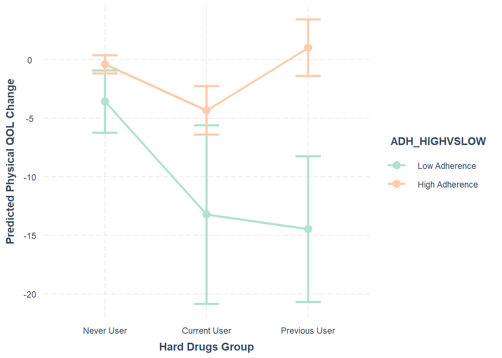
For those with low adherence, previous users had a greater decrease in physical QOL compared to never users. The difference between current and never hard drug users at low adherence is borderline significant, and may be so with a larger sample size.
For those with high adherence, the current hard drug use group had a greater decrease in physical QOL compared to both never and previous hard drug users.
And most importantly, for previous hard drug users, those with low adherence had a decrease in physical QOL when compared to those with high adherence.
We take this as further evidence that previous hard drug users are at a vulnerable population. High adherence serves as a buffer and could protect patients that have quit heroin or opiates within the past 2 years.
Additionally, we have evidence that even at high adherence, current hard drug users have worse overall physical QOL.
Evaluating Assumptions
In order to evaluate the assumptions of our models, we will first gather the residuals for the final model predicting each outcome variable.
# Calculate the jackknife residuals of the model predicting VLOAD
jackknife_residuals_VLOAD <- rstudent(model_VLOAD_full1)
# Calculate the jackknife residuals of the model predicting VLOAD sub analyss
jackknife_residuals_VLOAD_sub <- rstudent(model_VLOAD_red1)
# Calculate the jackknife residuals of the model predicting LEU3N
jackknife_residuals_LEU3N <- rstudent(model_LEU3N_final1)
# Calculate the jackknife residuals of the model predicting mental QOL 1
jackknife_residuals_MENT_main <- rstudent(model_MENT_main1)
# Calculate the jackknife residuals of the model predicting mental QOL 2
jackknife_residuals_MENT_sub <- rstudent(model_MENT_sub1)
# Calculate the jackknife residuals of the model predicting physical QOL
jackknife_residuals_PHYS <- rstudent(model_PHYS_final1)Log Viral Load
Since the mains IVs are categorical, we do not need to evaluate linearity.
Independence can be assessed in part by the study design and how the data was collected. Based on the information provided by the PI, I will assume subjects are independent from each other.
Additionally, we can examine a scatter plot of the model’s residuals against any time point variable (such as ID).
data_VLOAD <- data_wide_2 %>%
dplyr::select(newid, VLOAD_log_CHANGE, hard_drugs_grp, ADH_HIGHVSLOW, EDUC_COLLEGE) %>%
filter(
!is.na(newid) &
!is.na(VLOAD_log_CHANGE) &
!is.na(hard_drugs_grp) &
!is.na(ADH_HIGHVSLOW) &
!is.na(EDUC_COLLEGE)
)
# Create a scatterplot of jackknife residuals vs ID to assess independence
ggplot(data_VLOAD, aes(x = newid, y = jackknife_residuals_VLOAD)) +
geom_point() +
geom_hline(yintercept = 0) +
labs(title = "Scatterplot of Jackknife Residuals vs ID for Log Viral Load",
x = "ID",
y = "Jackknife Residuals")We may have some non-independence as seen by the further spread above 0.
Here we will asses that, for any fixed value of X, Y has a normal distribution. We will do this using Q-Q plots and histograms of the residuals.
# Make the Q-Q plots using the jackknife residuals
qqnorm(jackknife_residuals_VLOAD, main = "Q-Q plots of Jackknife Residuals for Log Viral Load")
qqline(jackknife_residuals_VLOAD, col = "black")# Create histogram of jackknife residuals
hist(jackknife_residuals_VLOAD, main = "Histogram of Jackknife Residuals",
breaks = 24,
xlab = "Jackknife Residuals",
col = "lightblue",
border = "black")We can also include the Shapiro-Wilk test of normality, which provides a p-value and allows us to numerically establish that the assumption of normality is met. If the p-value is < 0.05 you conclude that the assumption of normality is not met.
shapiro.test(jackknife_residuals_VLOAD)
Shapiro-Wilk normality test
data: jackknife_residuals_VLOAD
W = 0.97025, p-value = 0.000000008927We have some non-normality as seen by the higher end of the Q-Q Plot.
Looking at the histograms, the pattern is slightly bimodal, and may have some outliers at the high range.
We also fail Shapiro-Wilk’s test, indicating non-normality.
To assess homoscedasticity we examine the residual scatterplots by treatment group. The warning sign to look for here is if the variance differs greatly across groups.
# Make the residual scatterplot using the jackknife residuals
ggplot(data_VLOAD, aes(x = hard_drugs_grp, y = jackknife_residuals_VLOAD)) +
geom_boxplot() +
labs(title = "Jackknife Residuals vs Hard Drug Use for Log Viral Load",
x = "Hard Drug Use Group",
y = "JackKnife Residuals")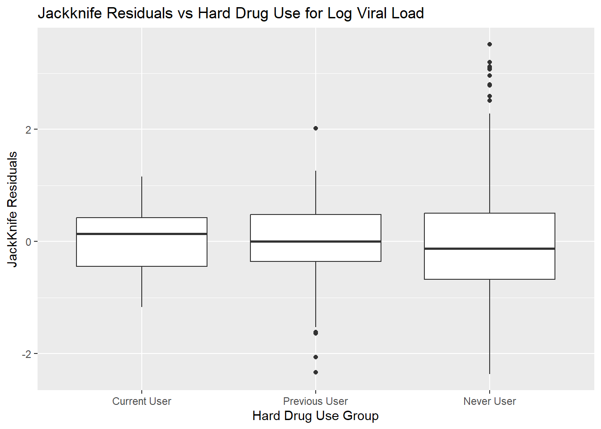
# Make the residual scatterplot using the jackknife residuals
ggplot(data_VLOAD, aes(x = ADH_HIGHVSLOW, y = jackknife_residuals_VLOAD)) +
geom_boxplot() +
labs(title = "Jackknife Residuals vs Adherence for Log Viral Load",
x = "Adherence",
y = "JackKnife Residuals")It appears that our hard drug use groups have unequal variances.
Additionally, while it is not recommended to perform a statistical test to assess for equality of variances (because formal tests of equality of variance are not very powerful), we can still do this using Bartlett’s test. The null hypothesis of the Bartlett test is that the variances are equal. Thus failing to reject the null (p > 0.05) indicates that the data are consistent with the equal variance assumption.
# Perform Bartlett's test to check for homogeneity of variances
bartlett.test(VLOAD_log_CHANGE ~ hard_drugs_grp, data = data_VLOAD)
Bartlett test of homogeneity of variances
data: VLOAD_log_CHANGE by hard_drugs_grp
Bartlett's K-squared = 23.563, df = 2, p-value = 0.000007644We also do not meet the assumption for equality of variances (p < 0.05).
This is likely because our patients were not randomly assigned into these groups!
To start, we can simply check that the mean of our residuals is close to 0.
# Generate the mean of the jackknife residuals. Should be close to 0.
mean(jackknife_residuals_VLOAD)[1] 0.0004681325# Generate vectors containing the fitted values vs jackknife residuals so we can plot them
fitted_values_VLOAD <- fitted(model_VLOAD_full1)
ggplot(data_VLOAD, aes(x = fitted_values_VLOAD, y = jackknife_residuals_VLOAD)) +
geom_point() +
geom_smooth(method = "lm")`geom_smooth()` using formula = 'y ~ x'
We definitely have outliers present.
The mean is close to 0.
A more sophisticated approach is to plot the fitted values vs jackknife residuals. We can then compare the trend between groups to see if they are random. The fitted line should gravitate around 0 with no obvious trends.
CD4+ T Cell Count
We do not need to assess linearity since our main PEVs are categorical.
Independence can be assessed in part by the study design and how the data was collected. Based on the information provided by the PI, I will assume subjects are independent from each other.
Additionally, we can examine a scatter plot of the model’s residuals against any time point variable (such as ID).
# Filter to create same data set as in the final analysis
data_LEU3N <- data_wide_2 %>%
dplyr::select(newid, LEU3N_CHANGE, hard_drugs_grp, ADH_HIGHVSLOW, FRP_2) %>%
filter(
!is.na(newid) &
!is.na(LEU3N_CHANGE) &
!is.na(hard_drugs_grp) &
!is.na(ADH_HIGHVSLOW) &
!is.na(FRP_2)
)
# Create a scatterplot of jackknife residuals vs ID to assess independence
ggplot(data_LEU3N, aes(x = newid, y = jackknife_residuals_LEU3N)) +
geom_point() +
geom_hline(yintercept = 0) +
labs(title = "Scatterplot of Jackknife Residuals vs ID for CD4+ T Cells",
x = "ID",
y = "Jackknife Residuals")Looks like we have 4 outlier points beyound 3 residuals from 0, but otherwise looking good.
Here we will asses that, for any fixed value of X, Y has a normal distribution. We will do this using Q-Q plots and histograms of the residuals.
# Make the Q-Q plots using the jackknife residuals
qqnorm(jackknife_residuals_LEU3N, main = "Q-Q plots of Jackknife Residuals for Log Viral Load")
qqline(jackknife_residuals_LEU3N, col = "black")# Create histogram of jackknife residuals
hist(jackknife_residuals_LEU3N, main = "Histogram of Jackknife Residuals",
breaks = 24,
xlab = "Jackknife Residuals",
col = "lightblue",
border = "black")We look very normal here, sans some obvious outliers.
shapiro.test(jackknife_residuals_LEU3N)
Shapiro-Wilk normality test
data: jackknife_residuals_LEU3N
W = 0.97052, p-value = 0.00000001042We have non-normality, but that is due to outliers.
To assess homoscedasticity we examine the residual scatterplots by treatment group. The warning sign to look for here is if the variance differs greatly across groups.
# Make the residual scatterplot using the jackknife residuals
ggplot(data_LEU3N, aes(x = hard_drugs_grp, y = jackknife_residuals_LEU3N)) +
geom_boxplot() +
labs(title = "Jackknife Residuals vs Hard Drug Use for CD4+ T Cell Count Change",
x = "Hard Drug Use Group",
y = "JackKnife Residuals")# Make the residual scatterplot using the jackknife residuals
ggplot(data_LEU3N, aes(x = ADH_HIGHVSLOW, y = jackknife_residuals_LEU3N)) +
geom_boxplot() +
labs(title = "Jackknife Residuals vs Adherence for CD4+ T Cell Count Change",
x = "Hard Drug Use Group",
y = "JackKnife Residuals")# Perform Bartlett's test to check for homogeneity of variances
bartlett.test(LEU3N_CHANGE ~ hard_drugs_grp, data = data_LEU3N)
Bartlett test of homogeneity of variances
data: LEU3N_CHANGE by hard_drugs_grp
Bartlett's K-squared = 5.8811, df = 2, p-value = 0.05284We can actually conclude that we have equality of variances! This will look even better once we get rid of outliers.
to start, we can simply check that the mean of our residuals is close to 0.
# Generate the mean of the jackknife residuals. Should be close to 0.
mean(jackknife_residuals_LEU3N)[1] 0.0004433429# Generate vectors containing the fitted values vs jackknife residuals so we can plot them
fitted_values_LEU3N <- fitted(model_LEU3N_final1)
ggplot(data_LEU3N, aes(x = fitted_values_LEU3N, y = jackknife_residuals_LEU3N)) +
geom_point() +
geom_smooth(method = "lm")`geom_smooth()` using formula = 'y ~ x'The mean is close to 0. The residuals look centered around 0 excepting the outliers.
Mental Quality of Life
We do not need to assess linearity since our main PEVs are categorical.
Independence can be assessed in part by the study design and how the data was collected. Based on the information provided by the PI, I will assume subjects are independent from each other.
Additionally, we can examine a scatter plot of the model’s residuals against any time point variable (such as ID).
# Filter to create same data set as in the final analysis
data_MENT_main <- data_wide_2 %>%
dplyr::select(newid, AGG_MENT_CHANGE, hard_drugs_grp, ADH_HIGHVSLOW) %>%
filter(
!is.na(newid) &
!is.na(AGG_MENT_CHANGE) &
!is.na(hard_drugs_grp) &
!is.na(ADH_HIGHVSLOW)
)
# Create a scatterplot of jackknife residuals vs ID to assess independence
ggplot(data_MENT_main, aes(x = newid, y = jackknife_residuals_MENT_main)) +
geom_point() +
geom_hline(yintercept = 0) +
labs(title = "Scatterplot of Jackknife Residuals vs ID for Mental QOL Change",
x = "ID",
y = "Jackknife Residuals")No clear pattern, we meet the assumption of independence.
Here we will asses that, for any fixed value of X, Y has a normal distribution. We will do this using Q-Q plots and histograms of the residuals.
# Make the Q-Q plots using the jackknife residuals
qqnorm(jackknife_residuals_MENT_main, main = "Q-Q plots of Jackknife Residuals for Mental QOL Change")
qqline(jackknife_residuals_MENT_main, col = "black")# Create histogram of jackknife residuals
hist(jackknife_residuals_MENT_main, main = "Histogram of Jackknife Residuals",
breaks = 24,
xlab = "Jackknife Residuals",
col = "lightblue",
border = "black")
shapiro.test(jackknife_residuals_MENT_main)
Shapiro-Wilk normality test
data: jackknife_residuals_MENT_main
W = 0.96193, p-value = 0.0000000001675We have non-normality. It does not look like outliers are driving this.
To assess homoscedasticity we examine the residual scatterplots by treatment group. The warning sign to look for here is if the variance differs greatly across groups.
# Make the residual scatterplot using the jackknife residuals
ggplot(data_MENT_main, aes(x = hard_drugs_grp, y = jackknife_residuals_MENT_main)) +
geom_boxplot() +
labs(title = "Jackknife Residuals vs Hard Drug Use for Mental QOL Change",
x = "Hard Drug Use Group",
y = "JackKnife Residuals")# Make the residual scatterplot using the jackknife residuals
ggplot(data_MENT_main, aes(x = ADH_HIGHVSLOW, y = jackknife_residuals_MENT_main)) +
geom_boxplot() +
labs(title = "Jackknife Residuals vs Adherence for Mental QOL Change",
x = "Hard Drug Use Group",
y = "JackKnife Residuals")
# Perform Bartlett's test to check for homogeneity of variances
bartlett.test(AGG_MENT_CHANGE ~ hard_drugs_grp, data = data_MENT_main)
Bartlett test of homogeneity of variances
data: AGG_MENT_CHANGE by hard_drugs_grp
Bartlett's K-squared = 19.522, df = 2, p-value = 0.00005765The test is significant, and we conclude we do not have homogeneity of variances.
# Generate the mean of the jackknife residuals. Should be close to 0.
mean(jackknife_residuals_MENT_main)[1] 0.0001715436# Generate vectors containing the fitted values vs jackknife residuals so we can plot them
fitted_values_MENT_main <- fitted(model_MENT_main1)
ggplot(data_MENT_main, aes(x = fitted_values_MENT_main, y = jackknife_residuals_MENT_main)) +
geom_point() +
geom_smooth(method = "lm")`geom_smooth()` using formula = 'y ~ x'Our residuals look centered around 0, sans a few outlier points.
We have non-normality and non homogeneity of variances.
Physical Quality of Life
We do not need to assess linearity since our main PEVs are categorical.
Independence can be assessed in part by the study design and how the data was collected. Based on the information provided by the PI, I will assume subjects are independent from each other.
Additionally, we can examine a scatter plot of the model’s residuals against any time point variable (such as ID).
# Filter to create same data set as in the final analysis
data_PHYS <- data_wide_2 %>%
dplyr::select(newid, AGG_PHYS_CHANGE, hard_drugs_grp, ADH_HIGHVSLOW, FRP_2) %>%
filter(
!is.na(newid) &
!is.na(AGG_PHYS_CHANGE) &
!is.na(hard_drugs_grp) &
!is.na(ADH_HIGHVSLOW) &
!is.na(FRP_2)
)
# Create a scatterplot of jackknife residuals vs ID to assess independence
ggplot(data_PHYS, aes(x = newid, y = jackknife_residuals_PHYS)) +
geom_point() +
geom_hline(yintercept = 0) +
labs(title = "Scatterplot of Jackknife Residuals vs ID for Physical QOL Change",
x = "ID",
y = "Jackknife Residuals")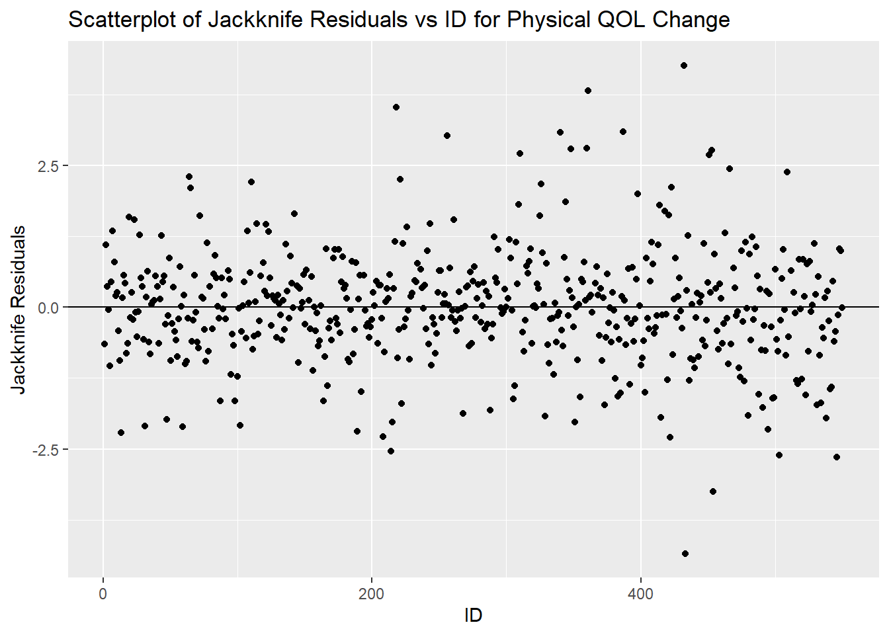
Independence looks pretty good.
Here we will asses that, for any fixed value of X, Y has a normal distribution. We will do this using Q-Q plots and histograms of the residuals.
# Make the Q-Q plots using the jackknife residuals
qqnorm(jackknife_residuals_PHYS, main = "Q-Q plots of Jackknife Residuals for Mental QOL Change")
qqline(jackknife_residuals_PHYS, col = "black")# Create histogram of jackknife residuals
hist(jackknife_residuals_PHYS, main = "Histogram of Jackknife Residuals",
breaks = 24,
xlab = "Jackknife Residuals",
col = "lightblue",
border = "black")shapiro.test(jackknife_residuals_PHYS)
Shapiro-Wilk normality test
data: jackknife_residuals_PHYS
W = 0.9682, p-value = 0.000000002488Physical QOL looks mostly normal. There may be 1 outier at the upper and lower bound.
Shapiro Wilk’s does say we fail normality however.
To assess homoscedasticity we examine the residual scatterplots by treatment group. The warning sign to look for here is if the variance differs greatly across groups.
# Make the residual scatterplot using the jackknife residuals
ggplot(data_PHYS, aes(x = hard_drugs_grp, y = jackknife_residuals_PHYS)) +
geom_boxplot() +
labs(title = "Jackknife Residuals vs Hard Drug Use for Physical QOL Change",
x = "Hard Drug Use Group",
y = "JackKnife Residuals")
# Perform Bartlett's test to check for homogeneity of variances
bartlett.test(AGG_PHYS_CHANGE ~ hard_drugs_grp, data = data_PHYS)
Bartlett test of homogeneity of variances
data: AGG_PHYS_CHANGE by hard_drugs_grp
Bartlett's K-squared = 4.2398, df = 2, p-value = 0.12We do have homogeneity of variances for physical QOL.
# Generate the mean of the jackknife residuals. Should be close to 0.
mean(jackknife_residuals_PHYS)[1] 0.0002469251# Generate vectors containing the fitted values vs jackknife residuals so we can plot them
fitted_values_PHYS <- fitted(model_PHYS_final1)
ggplot(data_PHYS, aes(x = fitted_values_PHYS, y = jackknife_residuals_PHYS)) +
geom_point() +
geom_smooth(method = "lm")`geom_smooth()` using formula = 'y ~ x'The assumptions for CD4+ T cell count are almost met. Likely once removing those 4 or so outliers they would be perfect.
To assess homoscedasticity we examine the residual scatterplots by treatment group. The warning sign to look for here is if the variance differs greatly across groups.
# Make the residual scatterplot using the jackknife residuals
ggplot(data_PHYS, aes(x = hard_drugs_grp, y = jackknife_residuals_PHYS)) +
geom_boxplot() +
labs(title = "Jackknife Residuals vs Hard Drug Use for Physical QOL Change",
x = "Hard Drug Use Group",
y = "JackKnife Residuals")# Make the residual scatterplot using the jackknife residuals
ggplot(data_PHYS, aes(x = ADH_HIGHVSLOW, y = jackknife_residuals_PHYS)) +
geom_boxplot() +
labs(title = "Jackknife Residuals vs Adherence for Physical QOL Change",
x = "Hard Drug Use Group",
y = "JackKnife Residuals")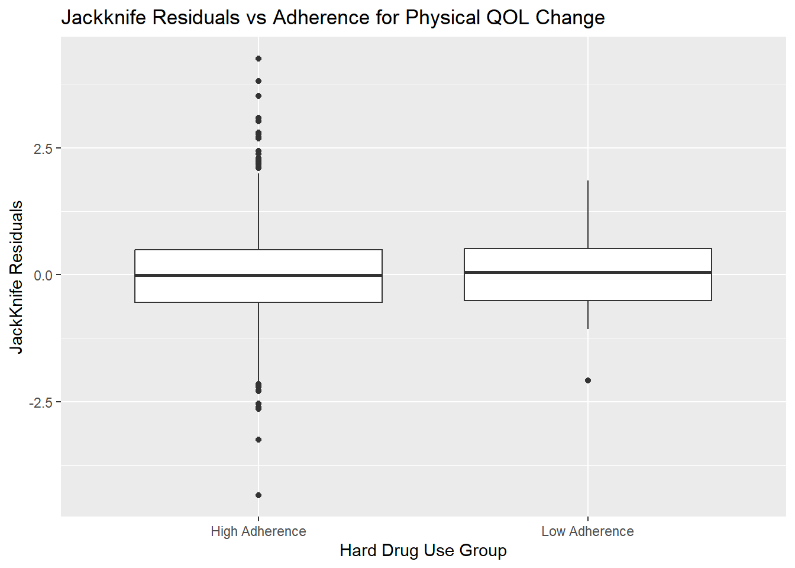
# Perform Bartlett's test to check for homogeneity of variances
bartlett.test(AGG_PHYS_CHANGE ~ hard_drugs_grp, data = data_PHYS)
Bartlett test of homogeneity of variances
data: AGG_PHYS_CHANGE by hard_drugs_grp
Bartlett's K-squared = 4.2398, df = 2, p-value = 0.12We do have homogeneity of variances.
# Generate the mean of the jackknife residuals. Should be close to 0.
mean(jackknife_residuals_PHYS)[1] 0.0002469251# Generate vectors containing the fitted values vs jackknife residuals so we can plot them
fitted_values_PHYS <- fitted(model_PHYS_final1)
ggplot(data_PHYS, aes(x = fitted_values_PHYS, y = jackknife_residuals_PHYS)) +
geom_point() +
geom_smooth(method = "lm")`geom_smooth()` using formula = 'y ~ x'
The residuals appear centered around zero, for the most part.
We do not meet the assumption of normality for physical QOL.
Outliers
Here we will investigate outliers using the jackknife residuals to assess leverage and influence.
Let’s generate a table so we can handily compare: ID, jackknife residual, leverage (diagonal hat), DFFITS, and DFBETAs for each participant.
# Get leverage values (hat values)
hat_values_VLOAD <- hatvalues(model_VLOAD_full1)
# Get Cook's D values
cooks_d_VLOAD <- cooks.distance(model_VLOAD_full1)
# Get the DFFITS values
dffits_VLOAD <- dffits(model_VLOAD_full1)
# Get the DFBETAS
dfbetas_VLOAD <- dfbetas(model_VLOAD_full1)
# Make a table with ID and all diagnostic values
diagnostics_VLOAD <- data.frame(id = data_VLOAD$newid, jackknife_residuals = jackknife_residuals_VLOAD, leverage = hat_values_VLOAD, cooks_D = cooks_d_VLOAD, dffits = dffits_VLOAD, dfbetas = dfbetas_VLOAD)
pretty_print(head(diagnostics_VLOAD))| id | jackknife_residuals | leverage | cooks_D | dffits | dfbetas..Intercept. | dfbetas.hard_drugs_grpPrevious.User | dfbetas.hard_drugs_grpCurrent.User | dfbetas.ADH_HIGHVSLOWHigh.Adherence | dfbetas.EDUC_COLLEGECollege | dfbetas.hard_drugs_grpPrevious.User.ADH_HIGHVSLOWHigh.Adherence | dfbetas.hard_drugs_grpCurrent.User.ADH_HIGHVSLOWHigh.Adherence |
|---|---|---|---|---|---|---|---|---|---|---|---|
| 1 | -0.3161770 | 0.0294395 | 0.0004339 | -0.0550661 | 0.0094211 | 0.0011659 | -0.0012572 | 0.0003230 | -0.0213838 | -0.0198096 | 0.0015858 |
| 2 | 0.2393356 | 0.0269731 | 0.0002273 | 0.0398483 | 0.0047483 | 0.0005876 | -0.0006336 | 0.0001628 | -0.0107775 | 0.0110797 | 0.0007992 |
| 3 | 0.3244571 | 0.0179987 | 0.0002761 | 0.0439260 | -0.0017163 | -0.0002124 | 0.0002290 | -0.0000588 | 0.0038956 | 0.0005634 | 0.0103259 |
| 4 | 1.2585889 | 0.0294395 | 0.0068562 | 0.2191985 | -0.0375022 | -0.0046410 | 0.0050043 | -0.0012856 | 0.0851213 | 0.0788552 | -0.0063123 |
| 5 | 0.3140120 | 0.0179987 | 0.0002586 | 0.0425119 | -0.0016611 | -0.0002056 | 0.0002217 | -0.0000569 | 0.0037702 | 0.0005452 | 0.0099935 |
| 6 | 0.0574866 | 0.0179987 | 0.0000087 | 0.0077827 | -0.0003041 | -0.0000376 | 0.0000406 | -0.0000104 | 0.0006902 | 0.0000998 | 0.0018295 |
Plot to assess influence and leverage.
# Influence plot
influencePlot(model_VLOAD_full1, main = "Influence Plot",
sub = "Circle size is proportional to Cook's Distance") StudRes Hat CookD
11 1.160300 0.253082963 0.065123814
138 3.522163 0.003080571 0.005357250
319 1.160588 0.253082963 0.065156076
325 3.200900 0.003080571 0.004442831
356 -1.166058 0.253082963 0.065770137# infIndexPlot gives us a series of plots that we need to investigate influence points
infIndexPlot(model_VLOAD_full1)We have two immediately obvious values for participants 319 and 356. Let’s examine them.
diagnostics_VLOAD %>%
arrange(-cooks_D) %>%
head() id jackknife_residuals leverage cooks_D dffits
356 356 -1.166058 0.25308296 0.06577014 -0.6787590
319 319 1.160588 0.25308296 0.06515608 0.6755746
11 11 1.160300 0.25308296 0.06512381 0.6754069
15 15 -1.154829 0.25308296 0.06451278 -0.6722226
294 294 -2.331200 0.02943947 0.02334696 -0.4060067
249 249 1.962508 0.03877677 0.02207318 0.3941714
dfbetas..Intercept. dfbetas.hard_drugs_grpPrevious.User
356 0.03300553 0.004084538
319 0.03285068 0.004065375
11 0.03284253 0.004064366
15 0.03268769 0.004045204
294 0.06946277 0.008596234
249 0.39417142 -0.130929822
dfbetas.hard_drugs_grpCurrent.User dfbetas.ADH_HIGHVSLOWHigh.Adherence
356 -0.6393346 0.001131482
319 0.6275679 0.001126173
11 0.6274121 0.001125894
15 -0.6331778 0.001120586
294 -0.0092692 0.002381293
249 -0.1279571 -0.337242003
dfbetas.EDUC_COLLEGECollege
356 -0.07491492
319 -0.07456345
11 -0.07454494
15 -0.07419349
294 -0.15766441
249 -0.17366150
dfbetas.hard_drugs_grpPrevious.User.ADH_HIGHVSLOWHigh.Adherence
356 -0.01083401
319 -0.01078318
11 -0.01078050
15 -0.01072968
294 -0.14605820
249 0.10521817
dfbetas.hard_drugs_grpCurrent.User.ADH_HIGHVSLOWHigh.Adherence
356 0.61793560
319 -0.60397775
11 -0.60382781
15 0.61198491
294 0.01169191
249 0.12644368The values for 319 and 356 are actually all comparable to 11 and 15, I think they are just so far off to the side like that because otherwise you wouldn’t be able to see anything in all those overlapping circles.
Let’s remove them and replot, and I bet 11 and 15 will flag as outliers.
# Remove outlier patients
data_VLOAD_outliers <- data_VLOAD %>%
filter(!newid %in% c(11, 15, 319, 356))
# Re-run the model
# Perform the regression on log viral load change with the full model
model_VLOAD_full1 <- lm(VLOAD_log_CHANGE ~ hard_drugs_grp + ADH_HIGHVSLOW + hard_drugs_grp*ADH_HIGHVSLOW + EDUC_COLLEGE, data = data_VLOAD_outliers)
# Influence plot
influencePlot(model_VLOAD_full1, main = "Influence Plot",
sub = "Circle size is proportional to Cook's Distance") StudRes Hat CookD
18 -0.006320994 0.166666667 0.0000013344488
34 0.002586461 0.166666667 0.0000002234308
129 3.521161391 0.003086349 0.0062576091114
233 1.984898220 0.038870744 0.0264040195974
276 -2.349300505 0.029494897 0.0277104476175
301 3.199508011 0.003086349 0.0051880876727# infIndexPlot gives us a series of plots that we need to investigate influence points
infIndexPlot(model_VLOAD_full1)Yup, 11 and 15 are now flagging as outliers, which makes sense because they had basically exactly the same values of who we just deleted.
That looks as good as it gets without removing too many observations.
summary(model_VLOAD_full1)
Call:
lm(formula = VLOAD_log_CHANGE ~ hard_drugs_grp + ADH_HIGHVSLOW +
hard_drugs_grp * ADH_HIGHVSLOW + EDUC_COLLEGE, data = data_VLOAD_outliers)
Residuals:
Min 1Q Median 3Q Max
-6.2637 -1.6014 -0.2047 1.1243 9.2440
Coefficients: (1 not defined because of singularities)
Estimate Std. Error
(Intercept) -5.0469 0.4434
hard_drugs_grpPrevious User -0.7396 0.5695
hard_drugs_grpNever User -0.7271 0.3813
ADH_HIGHVSLOWLow Adherence 0.7893 0.4893
EDUC_COLLEGECollege -0.7823 0.2971
hard_drugs_grpPrevious User:ADH_HIGHVSLOWLow Adherence 5.8063 1.2761
hard_drugs_grpNever User:ADH_HIGHVSLOWLow Adherence NA NA
t value
(Intercept) -11.383
hard_drugs_grpPrevious User -1.299
hard_drugs_grpNever User -1.907
ADH_HIGHVSLOWLow Adherence 1.613
EDUC_COLLEGECollege -2.633
hard_drugs_grpPrevious User:ADH_HIGHVSLOWLow Adherence 4.550
hard_drugs_grpNever User:ADH_HIGHVSLOWLow Adherence NA
Pr(>|t|)
(Intercept) < 0.0000000000000002 ***
hard_drugs_grpPrevious User 0.19464
hard_drugs_grpNever User 0.05709 .
ADH_HIGHVSLOWLow Adherence 0.10735
EDUC_COLLEGECollege 0.00871 **
hard_drugs_grpPrevious User:ADH_HIGHVSLOWLow Adherence 0.00000672 ***
hard_drugs_grpNever User:ADH_HIGHVSLOWLow Adherence NA
---
Signif. codes: 0 '***' 0.001 '**' 0.01 '*' 0.05 '.' 0.1 ' ' 1
Residual standard error: 2.659 on 510 degrees of freedom
Multiple R-squared: 0.08182, Adjusted R-squared: 0.07281
F-statistic: 9.089 on 5 and 510 DF, p-value: 0.00000002716# Remove outlier patients
diagnostics_VLOAD <- diagnostics_VLOAD %>%
filter(!id %in% c(11, 15, 319, 356))
diagnostics_VLOAD %>%
arrange(-cooks_D) %>%
head() id jackknife_residuals leverage cooks_D dffits
294 294 -2.331200 0.02943947 0.02334696 -0.4060067
249 249 1.962508 0.03877677 0.02207318 0.3941714
115 115 2.062544 0.03184010 0.01986047 0.3740389
400 400 2.034632 0.03184010 0.01933086 0.3689773
8 8 -2.063342 0.02943947 0.01833171 -0.3593560
529 529 -2.063335 0.02943947 0.01833158 -0.3593548
dfbetas..Intercept. dfbetas.hard_drugs_grpPrevious.User
294 0.06946277 0.008596234
249 0.39417142 -0.130929822
115 0.31022065 -0.149801564
400 0.30602260 -0.147774382
8 0.06148140 0.007608516
529 0.06148119 0.007608489
dfbetas.hard_drugs_grpCurrent.User dfbetas.ADH_HIGHVSLOWHigh.Adherence
294 -0.009269200 0.002381293
249 -0.127957064 -0.337242003
115 -0.120311591 -0.356676123
400 -0.118683481 -0.351849423
8 -0.008204157 0.002107680
529 -0.008204129 0.002107672
dfbetas.EDUC_COLLEGECollege
294 -0.15766441
249 -0.17366150
115 0.05092040
400 0.05023133
8 -0.13954856
529 -0.13954808
dfbetas.hard_drugs_grpPrevious.User.ADH_HIGHVSLOWHigh.Adherence
294 -0.1460582
249 0.1052182
115 0.1438485
400 0.1419019
8 -0.1292759
529 -0.1292755
dfbetas.hard_drugs_grpCurrent.User.ADH_HIGHVSLOWHigh.Adherence
294 0.01169191
249 0.12644368
115 0.11514983
400 0.11359158
8 0.01034849
529 0.01034846At this point it appears that we have removed too many data points to be able to run our main interaction of interest.
This will have to be noted as a limitation in this analysis!
# Influence plot
influencePlot(model_LEU3N_final1, main = "Influence Plot",
sub = "Circle size is proportional to Cook's Distance") StudRes Hat CookD
11 0.1766928 0.25000000 0.001489502
15 -0.1770161 0.25000000 0.001494957
19 1.3573297 0.05934583 0.016577499
63 6.1637006 0.00272672 0.013839357
255 4.4007180 0.00272672 0.007302463
413 1.3689020 0.05934583 0.016860339# infIndexPlot gives us a series of plots that we need to investigate influence points
infIndexPlot(model_LEU3N_final1)Remove 63, 255, and 88, and 301 (residuals > +- 3)
# Remove outlier patients
data_LEU3N_outliers <- data_LEU3N %>%
filter(!newid %in% c(63, 255, 301, 88))
# Re-run the model
# Perform the regression on log viral load change with the full model
model_LEU3N_final1 <- lm(LEU3N_CHANGE ~ hard_drugs_grp + ADH_HIGHVSLOW + hard_drugs_grp*ADH_HIGHVSLOW + FRP_2, data = data_LEU3N_outliers)
# Influence plot
influencePlot(model_LEU3N_final1, main = "Influence Plot",
sub = "Circle size is proportional to Cook's Distance") StudRes Hat CookD
11 0.1921663 0.250000000 0.001761810
15 -0.1925179 0.250000000 0.001768263
19 1.4711192 0.059359050 0.019465547
127 2.9908535 0.002756788 0.003478201
387 1.4837175 0.059359050 0.019798923
403 -3.0739474 0.002756788 0.003670567# infIndexPlot gives us a series of plots that we need to investigate influence points
infIndexPlot(model_LEU3N_final1)summary(model_LEU3N_final1)
Call:
lm(formula = LEU3N_CHANGE ~ hard_drugs_grp + ADH_HIGHVSLOW +
hard_drugs_grp * ADH_HIGHVSLOW + FRP_2, data = data_LEU3N_outliers)
Residuals:
Min 1Q Median 3Q Max
-507.65 -107.10 -0.31 111.82 494.17
Coefficients:
Estimate Std. Error
(Intercept) 79.29 22.55
hard_drugs_grpPrevious User 11.98 34.57
hard_drugs_grpNever User 109.90 23.95
ADH_HIGHVSLOWLow Adherence -115.93 86.37
FRP_2Yes -112.68 32.53
hard_drugs_grpPrevious User:ADH_HIGHVSLOWLow Adherence 330.01 113.05
hard_drugs_grpNever User:ADH_HIGHVSLOWLow Adherence 34.16 91.50
t value Pr(>|t|)
(Intercept) 3.516 0.000478 ***
hard_drugs_grpPrevious User 0.347 0.729002
hard_drugs_grpNever User 4.588 0.00000564 ***
ADH_HIGHVSLOWLow Adherence -1.342 0.180104
FRP_2Yes -3.463 0.000579 ***
hard_drugs_grpPrevious User:ADH_HIGHVSLOWLow Adherence 2.919 0.003665 **
hard_drugs_grpNever User:ADH_HIGHVSLOWLow Adherence 0.373 0.709012
---
Signif. codes: 0 '***' 0.001 '**' 0.01 '*' 0.05 '.' 0.1 ' ' 1
Residual standard error: 166.7 on 508 degrees of freedom
Multiple R-squared: 0.1033, Adjusted R-squared: 0.0927
F-statistic: 9.753 on 6 and 508 DF, p-value: 0.0000000003506# Calculate the jackknife residuals of the model predicting LEU3N
jackknife_residuals_LEU3N <- rstudent(model_LEU3N_final1)
# Make the Q-Q plots using the jackknife residuals
qqnorm(jackknife_residuals_LEU3N, main = "Q-Q plots of Jackknife Residuals for Log Viral Load")
qqline(jackknife_residuals_LEU3N, col = "black")The final model for LEU3N_CHANGE now meets all assumptions! And it doesn’t look like any of our p-values changed.
# Influence plot
influencePlot(model_MENT_main1, main = "Influence Plot",
sub = "Circle size is proportional to Cook's Distance") StudRes Hat CookD
11 0.7565009 0.250000000 0.031819963
15 -0.5726461 0.250000000 0.018241281
27 -3.0992751 0.025000000 0.040388406
115 -3.1823928 0.030303030 0.051848323
383 3.2017709 0.002544529 0.004283228
499 3.2315736 0.002544529 0.004361775# infIndexPlot gives us a series of plots that we need to investigate influence points
infIndexPlot(model_MENT_main1)11 and 15 are flagging as outliers again. Let’s remove them.
# Remove outlier patients
data_MENT_outliers <- data_MENT_main %>%
filter(!newid %in% c(11, 15, 319, 356))
data_MENT_outliers %>% arrange(AGG_MENT_CHANGE)# A tibble: 528 × 4
newid AGG_MENT_CHANGE hard_drugs_grp ADH_HIGHVSLOW
<dbl> <dbl> <fct> <fct>
1 115 -38.2 Never User Low Adherence
2 421 -33.4 Never User High Adherence
3 27 -31.1 Previous User High Adherence
4 140 -30.2 Never User Low Adherence
5 526 -27.6 Never User High Adherence
6 486 -27.6 Previous User High Adherence
7 529 -26.9 Previous User High Adherence
8 483 -26.4 Never User High Adherence
9 294 -26.2 Previous User High Adherence
10 43 -26.0 Previous User High Adherence
# ℹ 518 more rows# Re-run the model
# Perform the regression on log viral load change with the full model
model_MENT_main1 <- lm(AGG_MENT_CHANGE ~ hard_drugs_grp + ADH_HIGHVSLOW + hard_drugs_grp*ADH_HIGHVSLOW, data = data_MENT_outliers)
# Influence plot
influencePlot(model_MENT_main1, main = "Influence Plot",
sub = "Circle size is proportional to Cook's Distance") StudRes Hat CookD
18 0.04434285 0.166666667 0.0000788019
25 -3.09444752 0.025000000 0.0483134755
34 -0.09645958 0.166666667 0.0003728843
110 -3.17743980 0.030303030 0.0620220724
365 3.19678871 0.002544529 0.0051236887
479 3.22654658 0.002544529 0.0052176483# infIndexPlot gives us a series of plots that we need to investigate influence points
infIndexPlot(model_MENT_main1)summary(model_MENT_main1)
Call:
lm(formula = AGG_MENT_CHANGE ~ hard_drugs_grp + ADH_HIGHVSLOW +
hard_drugs_grp * ADH_HIGHVSLOW, data = data_MENT_outliers)
Residuals:
Min 1Q Median 3Q Max
-37.392 -5.814 -0.839 4.980 38.498
Coefficients: (1 not defined because of singularities)
Estimate Std. Error
(Intercept) -0.5437 1.6108
hard_drugs_grpPrevious User 5.9844 2.4954
hard_drugs_grpNever User 3.1777 1.7217
ADH_HIGHVSLOWLow Adherence -3.4343 2.1846
hard_drugs_grpPrevious User:ADH_HIGHVSLOWLow Adherence -18.7589 5.7115
hard_drugs_grpNever User:ADH_HIGHVSLOWLow Adherence NA NA
t value Pr(>|t|)
(Intercept) -0.338 0.73583
hard_drugs_grpPrevious User 2.398 0.01683 *
hard_drugs_grpNever User 1.846 0.06551 .
ADH_HIGHVSLOWLow Adherence -1.572 0.11655
hard_drugs_grpPrevious User:ADH_HIGHVSLOWLow Adherence -3.284 0.00109 **
hard_drugs_grpNever User:ADH_HIGHVSLOWLow Adherence NA NA
---
Signif. codes: 0 '***' 0.001 '**' 0.01 '*' 0.05 '.' 0.1 ' ' 1
Residual standard error: 12.05 on 523 degrees of freedom
Multiple R-squared: 0.04234, Adjusted R-squared: 0.03501
F-statistic: 5.781 on 4 and 523 DF, p-value: 0.0001475# Make the Q-Q plots using the jackknife residuals
qqnorm(jackknife_residuals_MENT_main, main = "Q-Q plots of Jackknife Residuals for Mental QOL Change")
qqline(jackknife_residuals_MENT_main, col = "black")
# Create histogram of jackknife residuals
hist(jackknife_residuals_MENT_main, main = "Histogram of Jackknife Residuals",
breaks = 24,
xlab = "Jackknife Residuals",
col = "lightblue",
border = "black")This doesn’t appear to do much for our assumptions for this model however.
It doesn’t appear that outliers are driving this shape.
# Influence plot
influencePlot(model_PHYS_final1, main = "Influence Plot",
sub = "Circle size is proportional to Cook's Distance") StudRes Hat CookD
11 -0.4163080 0.250000000 0.008265987
15 0.5655178 0.250000000 0.015248823
310 2.7057912 0.034424784 0.036844928
432 4.2632413 0.002646125 0.006670562
433 -4.3421118 0.002646125 0.006911007
454 -3.2468258 0.034424784 0.052733017# infIndexPlot gives us a series of plots that we need to investigate influence points
infIndexPlot(model_PHYS_final1)Same high leverage points we saw with mental QOL.
# Remove outlier patients
data_PHYS_outliers <- data_PHYS %>%
filter(!newid %in% c(11, 15, 319, 356))
# Perform the regression on log viral load change with the full model
model_PHYS_final1 <- lm(AGG_PHYS_CHANGE ~ hard_drugs_grp + ADH_HIGHVSLOW + hard_drugs_grp*ADH_HIGHVSLOW + FRP_2, data = data_PHYS_outliers)
# Influence plot
influencePlot(model_PHYS_final1, main = "Influence Plot",
sub = "Circle size is proportional to Cook's Distance")
StudRes Hat CookD
18 -0.18295228 0.166666667 0.00111778762
34 0.04301554 0.166666667 0.00006179605
296 2.70027129 0.034424784 0.04281003428
413 4.25461621 0.002646125 0.00775051075
414 -4.33333176 0.002646125 0.00802988231
435 -3.24021846 0.034424784 0.06127036814# infIndexPlot gives us a series of plots that we need to investigate influence points
infIndexPlot(model_PHYS_final1)# Get leverage values (hat values)
hat_values_PHYS <- hatvalues(model_PHYS_final1)
# Make a table with ID and all diagnostic values
diagnostics_PHYS <- data.frame(id = data_PHYS_outliers$newid, leverage = hat_values_PHYS)
diagnostics_PHYS %>% arrange(-leverage) id leverage
18 20 0.166666667
34 36 0.166666667
50 52 0.166666667
406 425 0.166666667
484 504 0.166666667
525 547 0.166666667
234 246 0.063760499
17 19 0.057112064
395 413 0.057112064
23 25 0.046222285
39 41 0.046222285
260 272 0.046222285
462 482 0.046222285
503 525 0.046222285
5 5 0.046222285
115 121 0.034424784
152 160 0.034424784
166 175 0.034424784
187 197 0.034424784
207 217 0.034424784
214 224 0.034424784
291 305 0.034424784
295 309 0.034424784
296 310 0.034424784
310 326 0.034424784
376 394 0.034424784
396 414 0.034424784
410 429 0.034424784
417 436 0.034424784
435 454 0.034424784
454 474 0.034424784
455 475 0.034424784
468 488 0.034424784
495 517 0.034424784
496 518 0.034424784
509 531 0.034424784
53 55 0.030335704
72 74 0.030335704
83 86 0.030335704
97 102 0.030335704
101 106 0.030335704
104 109 0.030335704
110 115 0.030335704
113 119 0.030335704
121 127 0.030335704
134 140 0.030335704
147 155 0.030335704
153 161 0.030335704
156 165 0.030335704
162 171 0.030335704
226 238 0.030335704
229 241 0.030335704
232 244 0.030335704
237 249 0.030335704
254 266 0.030335704
270 283 0.030335704
305 321 0.030335704
328 344 0.030335704
357 375 0.030335704
368 386 0.030335704
382 400 0.030335704
407 426 0.030335704
421 440 0.030335704
426 445 0.030335704
428 447 0.030335704
446 465 0.030335704
488 508 0.030335704
526 548 0.030335704
8 8 0.025088953
10 10 0.025088953
12 13 0.025088953
16 18 0.025088953
20 22 0.025088953
21 23 0.025088953
25 27 0.025088953
27 29 0.025088953
29 31 0.025088953
33 35 0.025088953
36 38 0.025088953
37 39 0.025088953
41 43 0.025088953
43 45 0.025088953
45 47 0.025088953
49 51 0.025088953
123 129 0.025088953
184 194 0.025088953
217 227 0.025088953
281 294 0.025088953
294 308 0.025088953
335 351 0.025088953
388 406 0.025088953
452 472 0.025088953
458 478 0.025088953
466 486 0.025088953
469 489 0.025088953
475 495 0.025088953
482 502 0.025088953
493 515 0.025088953
499 521 0.025088953
507 529 0.025088953
510 532 0.025088953
516 538 0.025088953
523 545 0.025088953
4 4 0.025088953
1 1 0.025088953
2 2 0.025088953
6 6 0.018265601
7 7 0.018265601
9 9 0.018265601
11 12 0.018265601
13 14 0.018265601
14 16 0.018265601
15 17 0.018265601
19 21 0.018265601
22 24 0.018265601
24 26 0.018265601
26 28 0.018265601
28 30 0.018265601
30 32 0.018265601
31 33 0.018265601
32 34 0.018265601
35 37 0.018265601
38 40 0.018265601
40 42 0.018265601
42 44 0.018265601
44 46 0.018265601
46 48 0.018265601
47 49 0.018265601
48 50 0.018265601
51 53 0.018265601
203 213 0.018265601
272 285 0.018265601
278 291 0.018265601
285 299 0.018265601
321 337 0.018265601
336 352 0.018265601
379 397 0.018265601
384 402 0.018265601
437 456 0.018265601
459 479 0.018265601
465 485 0.018265601
467 487 0.018265601
472 492 0.018265601
476 496 0.018265601
480 500 0.018265601
481 501 0.018265601
487 507 0.018265601
500 522 0.018265601
506 528 0.018265601
508 530 0.018265601
513 535 0.018265601
517 539 0.018265601
521 543 0.018265601
522 544 0.018265601
528 550 0.018265601
3 3 0.018265601
52 54 0.002646125
54 56 0.002646125
55 57 0.002646125
56 58 0.002646125
57 59 0.002646125
58 60 0.002646125
59 61 0.002646125
60 62 0.002646125
61 63 0.002646125
62 64 0.002646125
63 65 0.002646125
64 66 0.002646125
65 67 0.002646125
66 68 0.002646125
67 69 0.002646125
68 70 0.002646125
69 71 0.002646125
70 72 0.002646125
71 73 0.002646125
73 75 0.002646125
74 76 0.002646125
75 77 0.002646125
76 78 0.002646125
77 79 0.002646125
78 81 0.002646125
79 82 0.002646125
80 83 0.002646125
81 84 0.002646125
82 85 0.002646125
84 87 0.002646125
85 88 0.002646125
86 89 0.002646125
87 90 0.002646125
88 91 0.002646125
89 93 0.002646125
90 94 0.002646125
91 95 0.002646125
92 96 0.002646125
93 97 0.002646125
94 98 0.002646125
95 100 0.002646125
96 101 0.002646125
98 103 0.002646125
99 104 0.002646125
100 105 0.002646125
102 107 0.002646125
103 108 0.002646125
105 110 0.002646125
106 111 0.002646125
107 112 0.002646125
108 113 0.002646125
109 114 0.002646125
111 116 0.002646125
112 117 0.002646125
114 120 0.002646125
116 122 0.002646125
117 123 0.002646125
118 124 0.002646125
119 125 0.002646125
120 126 0.002646125
122 128 0.002646125
124 130 0.002646125
125 131 0.002646125
126 132 0.002646125
127 133 0.002646125
128 134 0.002646125
129 135 0.002646125
130 136 0.002646125
131 137 0.002646125
132 138 0.002646125
133 139 0.002646125
135 141 0.002646125
136 142 0.002646125
137 144 0.002646125
138 145 0.002646125
139 146 0.002646125
140 147 0.002646125
141 148 0.002646125
142 149 0.002646125
143 150 0.002646125
144 151 0.002646125
145 153 0.002646125
146 154 0.002646125
148 156 0.002646125
149 157 0.002646125
150 158 0.002646125
151 159 0.002646125
154 162 0.002646125
155 164 0.002646125
157 166 0.002646125
158 167 0.002646125
159 168 0.002646125
160 169 0.002646125
161 170 0.002646125
163 172 0.002646125
164 173 0.002646125
165 174 0.002646125
167 176 0.002646125
168 177 0.002646125
169 178 0.002646125
170 179 0.002646125
171 180 0.002646125
172 181 0.002646125
173 182 0.002646125
174 183 0.002646125
175 184 0.002646125
176 185 0.002646125
177 186 0.002646125
178 187 0.002646125
179 188 0.002646125
180 189 0.002646125
181 190 0.002646125
182 191 0.002646125
183 192 0.002646125
185 195 0.002646125
186 196 0.002646125
188 198 0.002646125
189 199 0.002646125
190 200 0.002646125
191 201 0.002646125
192 202 0.002646125
193 203 0.002646125
194 204 0.002646125
195 205 0.002646125
196 206 0.002646125
197 207 0.002646125
198 208 0.002646125
199 209 0.002646125
200 210 0.002646125
201 211 0.002646125
202 212 0.002646125
204 214 0.002646125
205 215 0.002646125
206 216 0.002646125
208 218 0.002646125
209 219 0.002646125
210 220 0.002646125
211 221 0.002646125
212 222 0.002646125
213 223 0.002646125
215 225 0.002646125
216 226 0.002646125
218 228 0.002646125
219 229 0.002646125
220 230 0.002646125
221 232 0.002646125
222 233 0.002646125
223 234 0.002646125
224 236 0.002646125
225 237 0.002646125
227 239 0.002646125
228 240 0.002646125
230 242 0.002646125
231 243 0.002646125
233 245 0.002646125
235 247 0.002646125
236 248 0.002646125
238 250 0.002646125
239 251 0.002646125
240 252 0.002646125
241 253 0.002646125
242 254 0.002646125
243 255 0.002646125
244 256 0.002646125
245 257 0.002646125
246 258 0.002646125
247 259 0.002646125
248 260 0.002646125
249 261 0.002646125
250 262 0.002646125
251 263 0.002646125
252 264 0.002646125
253 265 0.002646125
255 267 0.002646125
256 268 0.002646125
257 269 0.002646125
258 270 0.002646125
259 271 0.002646125
261 273 0.002646125
262 274 0.002646125
263 275 0.002646125
264 276 0.002646125
265 277 0.002646125
266 278 0.002646125
267 279 0.002646125
268 281 0.002646125
269 282 0.002646125
271 284 0.002646125
273 286 0.002646125
274 287 0.002646125
275 288 0.002646125
276 289 0.002646125
277 290 0.002646125
279 292 0.002646125
280 293 0.002646125
282 296 0.002646125
283 297 0.002646125
284 298 0.002646125
286 300 0.002646125
287 301 0.002646125
288 302 0.002646125
289 303 0.002646125
290 304 0.002646125
292 306 0.002646125
293 307 0.002646125
297 312 0.002646125
298 313 0.002646125
299 314 0.002646125
300 315 0.002646125
301 316 0.002646125
302 317 0.002646125
303 318 0.002646125
304 320 0.002646125
306 322 0.002646125
307 323 0.002646125
308 324 0.002646125
309 325 0.002646125
311 327 0.002646125
312 328 0.002646125
313 329 0.002646125
314 330 0.002646125
315 331 0.002646125
316 332 0.002646125
317 333 0.002646125
318 334 0.002646125
319 335 0.002646125
320 336 0.002646125
322 338 0.002646125
323 339 0.002646125
324 340 0.002646125
325 341 0.002646125
326 342 0.002646125
327 343 0.002646125
329 345 0.002646125
330 346 0.002646125
331 347 0.002646125
332 348 0.002646125
333 349 0.002646125
334 350 0.002646125
337 353 0.002646125
338 354 0.002646125
339 355 0.002646125
340 357 0.002646125
341 358 0.002646125
342 359 0.002646125
343 360 0.002646125
344 361 0.002646125
345 362 0.002646125
346 363 0.002646125
347 364 0.002646125
348 366 0.002646125
349 367 0.002646125
350 368 0.002646125
351 369 0.002646125
352 370 0.002646125
353 371 0.002646125
354 372 0.002646125
355 373 0.002646125
356 374 0.002646125
358 376 0.002646125
359 377 0.002646125
360 378 0.002646125
361 379 0.002646125
362 380 0.002646125
363 381 0.002646125
364 382 0.002646125
365 383 0.002646125
366 384 0.002646125
367 385 0.002646125
369 387 0.002646125
370 388 0.002646125
371 389 0.002646125
372 390 0.002646125
373 391 0.002646125
374 392 0.002646125
375 393 0.002646125
377 395 0.002646125
378 396 0.002646125
380 398 0.002646125
381 399 0.002646125
383 401 0.002646125
385 403 0.002646125
386 404 0.002646125
387 405 0.002646125
389 407 0.002646125
390 408 0.002646125
391 409 0.002646125
392 410 0.002646125
393 411 0.002646125
394 412 0.002646125
397 415 0.002646125
398 416 0.002646125
399 418 0.002646125
400 419 0.002646125
401 420 0.002646125
402 421 0.002646125
403 422 0.002646125
404 423 0.002646125
405 424 0.002646125
408 427 0.002646125
409 428 0.002646125
411 430 0.002646125
412 431 0.002646125
413 432 0.002646125
414 433 0.002646125
415 434 0.002646125
416 435 0.002646125
418 437 0.002646125
419 438 0.002646125
420 439 0.002646125
422 441 0.002646125
423 442 0.002646125
424 443 0.002646125
425 444 0.002646125
427 446 0.002646125
429 448 0.002646125
430 449 0.002646125
431 450 0.002646125
432 451 0.002646125
433 452 0.002646125
434 453 0.002646125
436 455 0.002646125
438 457 0.002646125
439 458 0.002646125
440 459 0.002646125
441 460 0.002646125
442 461 0.002646125
443 462 0.002646125
444 463 0.002646125
445 464 0.002646125
447 466 0.002646125
448 467 0.002646125
449 469 0.002646125
450 470 0.002646125
451 471 0.002646125
453 473 0.002646125
456 476 0.002646125
457 477 0.002646125
460 480 0.002646125
461 481 0.002646125
463 483 0.002646125
464 484 0.002646125
470 490 0.002646125
471 491 0.002646125
473 493 0.002646125
474 494 0.002646125
477 497 0.002646125
478 498 0.002646125
479 499 0.002646125
483 503 0.002646125
485 505 0.002646125
486 506 0.002646125
489 509 0.002646125
490 510 0.002646125
491 512 0.002646125
492 514 0.002646125
494 516 0.002646125
497 519 0.002646125
498 520 0.002646125
501 523 0.002646125
502 524 0.002646125
504 526 0.002646125
505 527 0.002646125
511 533 0.002646125
512 534 0.002646125
514 536 0.002646125
515 537 0.002646125
518 540 0.002646125
519 541 0.002646125
520 542 0.002646125
524 546 0.002646125
527 549 0.002646125# Perform the regression on log viral load change with the full model
model_PHYS_final1 <- lm(AGG_PHYS_CHANGE ~ hard_drugs_grp + ADH_HIGHVSLOW + hard_drugs_grp*ADH_HIGHVSLOW + FRP_2, data = data_PHYS_outliers)
# Influence plot
influencePlot(model_PHYS_final1, main = "Influence Plot",
sub = "Circle size is proportional to Cook's Distance") StudRes Hat CookD
18 -0.18295228 0.166666667 0.00111778762
34 0.04301554 0.166666667 0.00006179605
296 2.70027129 0.034424784 0.04281003428
413 4.25461621 0.002646125 0.00775051075
414 -4.33333176 0.002646125 0.00802988231
435 -3.24021846 0.034424784 0.06127036814# infIndexPlot gives us a series of plots that we need to investigate influence points
infIndexPlot(model_PHYS_final1)
# Make the Q-Q plots using the jackknife residuals
qqnorm(jackknife_residuals_PHYS, main = "Q-Q plots of Jackknife Residuals for Physical QOL Change")
qqline(jackknife_residuals_PHYS, col = "black")# Create histogram of jackknife residuals
hist(jackknife_residuals_PHYS, main = "Histogram of Jackknife Residuals",
breaks = 24,
xlab = "Jackknife Residuals",
col = "lightblue",
border = "black")
The data looks slightly more normally distributed
Results
Note: Co-written with project partner Dominick Demarsico (30% Dominick 70% Sean)
The total population of the study was 550 participants. Of that total, all were male, HIV+, and taking HAART treatment after baseline. Never drug use had 444 subjects, past drug use had 46 subjects, and current drug use had 60 subjects. While there are large population size discrepancies, all of the groups were sufficiently large (>30) (See Table 1). Primary outcome data was missing in 18 patients for Viral Load, 18 for Leukocyte count, 7 for Mental Wellbeing, and 7 for Physical wellbeing. Income, Triglycerides, LDL, and BMI were all dropped from analysis due to missingness being greater than 20%. We then decided to move forward with a complete case analysis. Figure 1 reveals that there were moderate correlations (r = ~30% - 60%) between at least one of our primary outcome variables and education, frailty phenotype, age, smoking status, depression, and adherence.
Backward elimination using BIC determined the final covariates to be included for viral load were education, hard drug use, adherence, and the interaction between drug use and adherence. There were significant differences in change in log viral load based on hard drug usage and adherence to the treatment regimen, while controlling for education at baseline (F(6, 513)= 9.51), p < 0.0001). Low Adherence led to 3.48 increased log viral load in Current users (p = .04) and 5.81 increased log viral load in past users (p <.001). However, there were no significant differences in viral load for drug users with High Adherence (See Figure 2)
Backwards elimination using BIC determined the covariates to be included for CD4+ T Cell count were frailty phenotype along with adherence, drug use category, and their interaction. There were significant differences in change in CD4+ T Cell count over 2 years based on hard drug usage and adherence to the treatment regimen, while controlling for Frailty Related Phenotype (F(6,512) = 8.42, p < 0.00001). Low Adherence led to a 197.90 cell increase in CD4 in previous users compared to never users (p = .04). Never users and current users did not differ significantly from each other. Current users had a 342.0 cell decrease compared to past users (p = 01). High Adherence led to a 99.23 cell decrease in past users (p = .003) and a 111.16 cell decrease in current users (p <.001) when compared to never users (See Figure 3)
For Mental Wellbeing, backward elimination using BIC determined that the final covariates to include were drug use, adherence, and their interaction. There were significant differences in mental QOL over 2 years based on hard drug usage and adherence to the treatment regimen (F(5,526) = 4.78, p = 0.000278). Low Adherence led to a 15.95 point decrease in mental QoL in previous drug users compared to never drug users (p =.009), and a 23.91 decrease compared to never hard drug users (p = 0.007). There was no difference in mental QOL between current and never hard drug users at low adherence (p = 0.64). At high adherence, there was no difference in mental QOL between previous and never hard drug users (p = 0.48), or between current and never hard drug users (p = 0.20). The difference in mental QOL for current and previous users was borderline significant (p = 0.050) (See Figure 3). While depression was highly correlated to mental QOL, it was determined to be a confounder and a separate analysis run, showing heightened risk of depression for previous users (See Figure 3a).
For Physical wellbeing, backward elimination using BIC selected the final model to include frailty related phenotype along with drug use, adherence, and their interaction. There were significant differences in change in physical QOL over 2 years based on hard drug usage and adherence to the treatment regimen, while controlling for Frailty Related Phenotype (F(6, 525) = 20.67, p < 0.0001). Low Adherence led to a 10.89 point decrease in physical QoL in past drug users compared to never drug users (p =.004). Current users did not differ significantly from never users. High Adherence led to current users having a 3.94 point decrease in physical QoL compared to never users (p = .001), and a 5.35 point decrease when compared to past users (p = .002). There was no difference between previous and never users (p = 0.8). See Figure 5.
Assumptions for a regression were assessed using Q-Q plots, histograms of the residuals, scale-location plots, and scatterplots of the residuals against the fitted-values. All assumptions were met for Leukocyte levels. However, Viral Load, Mental QoL, and Physical QoL have slight violations of normality and homogeneity of variances.
Discussion
Note: Co-written with project partner Dominick DeMarsico (50% Dominick 50% Sean)
With regard to our research question, adherence played a major role in affecting the reliability of the models. We have evidence to suggest that the relationship between treatment outcomes and drug use is modified by the interaction of adherence and drug use. Therefore, we have evidence to reject the null hypothesis. From our perspective, adherence would act as a confounder if it were not already accounted for in our model. Specifically, low adherence leads to worsened outcomes in current users for viral load, and in previous users for all outcome variables including mental and physical well being. Thus, previous hard drug users are a vulnerable population and appear to be struggling with quitting, and more aggressive treatment strategies should be considered to support them.
Additionally, only 7.8% of subjects fell into the category of low adherence, with only 4 previous and 6 current drug users. The lack of subjects in this category severely hampers our ability to use an interaction term at all for certain groups. A larger N in this category would allow for more information on the true interaction within these groups.
Another consideration should be physical and mental changes that occur during pathology but can not be explained by treatment. Access to a list of Adverse Events suffered by the subjects would be very helpful to better understand what is causing changes. Additionally, the slight deviation from normality with some of our outcome variables can be attributed to using change scores rather than each individual time point as a unique observation. This method effectively cut our N by two-thirds. We expect that longitudinal analyses allowing for an N closer to the original value of 1600 would alleviate these symptoms for normality.
Bonus
Plotting Outcome Variables Across Full 8 Years
The below plots were used as justification and evidence for separating adherence from four levels to two levels, as this seemed to be whether the most meaninfgul and true split was.
Mental QOL
# Get rid of that value of 1 for adherence at baseline for patient 426
data$ADH[data$years == 0] <- NA
# Get means for each year
summary_data <- data %>%
group_by(ADH, years) %>%
summarize(Average_QOL = mean(AGG_MENT, na.rm = TRUE))`summarise()` has grouped output by 'ADH'. You can override using the `.groups`
argument.# Create plot
p <- ggplot(summary_data, aes(x = years, y = Average_QOL, color = ADH)) +
geom_line(size = 1) + # Line plot
geom_point(size = 2) + # Add points for clarity
labs(title = "Average Mental QOL Score by Adherence Group Over 8 Years",
x = "Year",
y = "Average Mental QOL Score",
color = "Adherence Group") +
theme_minimal() + # Clean theme
scale_color_brewer(palette = "Pastel2") # Nice color palette for groups
ggplotly(p)Success! This is very interesting. It appears that the 100% adherence group has the highest average mental QOL score across the 8 year study, followed by the 95-99% group, followed by the <75% group and followed by (with some variation) the <75% and 75-94% groups.
Physical QOL
Let’s do the same thing but for AGG_PHYS.
# Get means for each year
summary_data <- data %>%
group_by(ADH, years) %>%
summarize(Average_QOL = mean(AGG_PHYS, na.rm = TRUE))`summarise()` has grouped output by 'ADH'. You can override using the `.groups`
argument.# Create plot
ggplot(summary_data, aes(x = years, y = Average_QOL, color = ADH)) +
geom_line(size = 1) + # Line plot
geom_point(size = 2) + # Add points for clarity
labs(title = "Average Physical QOL Score by Adherence Group Over 8 Years",
x = "Year",
y = "Average Physical QOL Score",
color = "Adherence Group") +
theme_minimal() + # Clean theme
scale_color_brewer(palette = "Pastel2") # Nice color palette for groupsWarning: Removed 1 row containing missing values or values outside the scale range
(`geom_line()`).Warning: Removed 1 row containing missing values or values outside the scale range
(`geom_point()`).
We see a similiar relationship here, though there’s more variation. For some reason that <75% group likes to spike in their QOL at year 7. Interesting.
CD4+ T Cell Count
# Create log vload variable for original 8 year data set.
data$VLOAD_log <- log(data$VLOAD)
# Get means for each year
summary_data <- data %>%
group_by(ADH, years) %>%
summarize(Average_VLOAD_log = mean(VLOAD_log, na.rm = TRUE))`summarise()` has grouped output by 'ADH'. You can override using the `.groups`
argument.# Create plot
p <- ggplot(summary_data, aes(x = years, y = Average_VLOAD_log, color = ADH)) +
geom_line(size = 1) + # Line plot
geom_point(size = 2) + # Add points for clarity
labs(title = "Average VLOAD log by Adherence Group Over 8 Years",
x = "Year",
y = "Average VLOAD log",
color = "Adherence Group") +
theme_minimal() + # Clean theme
scale_color_brewer(palette = "Pastel2") # Nice color palette for groups
ggplotly(p)That’s very interesting. The groups with the highest vload log had the least adherence. There is an inverse relationship here.
This is strong evidence that the treatment is efficacious and the ADH should be considered as a confounder.
Ohhhhh, that’s super cool. So there is an inverse relationship between LEU3N and VLOAD_log, such that spikes in one should be dips in the other. We can see that in this data set! It appears that for the adherence group of <75%, they had viral load spikes at years 5 and 7, which correspond with leukocyte dips at years 5 and 7! They weren’t adhering to the protocol, which resulted in them getting infected (?) more and having more of the virus present compared to the other groups.
Comparing High Vs Low Adherence Groups
data$ADH_HIGHLOW <- ifelse(data$ADH == "<75%" | data$ADH == "75-94%", 0, 1)
data$ADH_HIGHLOW <- factor(data$ADH_HIGHLOW,
levels = c(0,1),
labels = c("Low Adherence", "High Adherence"))
#### tRY WITH HIGH LOW ADH
# Create log vload variable for original 8 year data set.
data$VLOAD_log <- log(data$VLOAD)
# Get means for each year
summary_data <- data %>%
group_by(ADH_HIGHLOW, years) %>%
summarize(Average_VLOAD_log = mean(VLOAD_log, na.rm = TRUE))`summarise()` has grouped output by 'ADH_HIGHLOW'. You can override using the
`.groups` argument.# Create plot
p <- ggplot(summary_data, aes(x = years, y = Average_VLOAD_log, color = ADH_HIGHLOW)) +
geom_line(size = 1) + # Line plot
geom_point(size = 2) + # Add points for clarity
labs(title = "Average VLOAD log by Adherence Group Over 8 Years",
x = "Year",
y = "Average VLOAD log",
color = "Adherence Group") +
theme_minimal() + # Clean theme
scale_color_brewer(palette = "Pastel2") # Nice color palette for groups
ggplotly(p)High adherence patients have lower viral load then low adherence
Same for leu3n
#### tRY WITH HIGH LOW ADH
# Get means for each year
summary_data <- data %>%
group_by(ADH_HIGHLOW, years) %>%
summarize(Average_LEU3N = mean(LEU3N, na.rm = TRUE))`summarise()` has grouped output by 'ADH_HIGHLOW'. You can override using the
`.groups` argument.# Create plot
p <- ggplot(summary_data, aes(x = years, y = Average_LEU3N, color = ADH_HIGHLOW)) +
geom_line(size = 1) + # Line plot
geom_point(size = 2) + # Add points for clarity
labs(title = "Average LEU3N by Adherence Group Over 8 Years",
x = "Year",
y = "Average LEU3N",
color = "Adherence Group") +
theme_minimal() + # Clean theme
scale_color_brewer(palette = "Pastel2") # Nice color palette for groups
ggplotly(p)High adherence users have higher CD4+ T Cells, for the most part.
Other literature
https://pmc.ncbi.nlm.nih.gov/articles/PMC9234842/
This one shows that poor adherence is related to anxiety and depression, leading credence to why I want to examine the impact of hard drugs and adherence while controlling for depression.